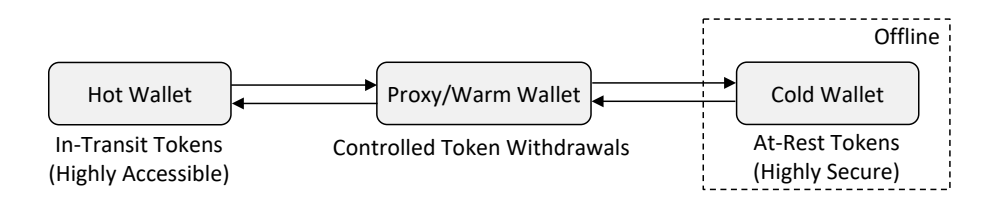
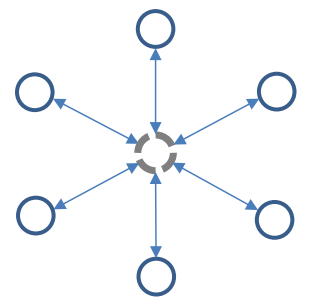
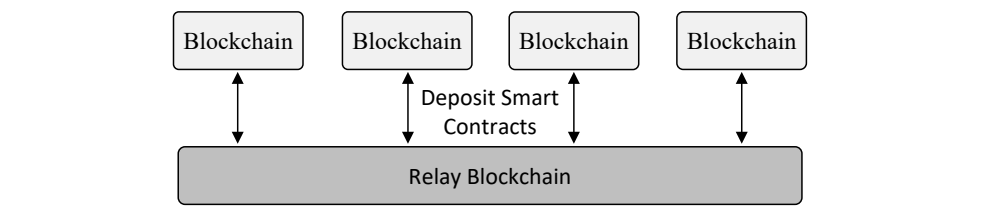
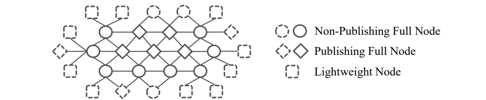
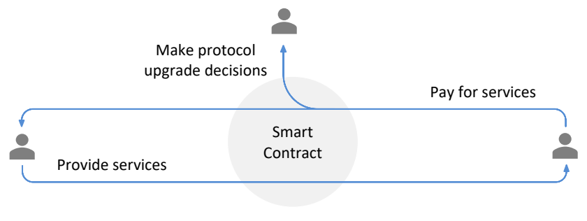

NIST IR 8301 日本語訳
英語タイトル : Blockchain Networks: Token Design and Management Overview日本語タイトル : ブロックチェーンネットワーク：トークンの設計と管理の概要
公開日 : 2021-02-09
原文URL : https://csrc.nist.gov/pubs/ir/8301/final
翻訳編集 : 自動生成（有志による非公式の日本語訳）, 原文取得日 : 2026-10-31, 訳文 : 808 / 808 ブロック
[要約] NIST IR 8301 は、ブロックチェーンネットワークにおけるトークンの設計と管理方法についての、高水準の技術的概要と概念的枠組みを示す文書です。本書は、トークンビュー、ウォレットビュー、取引ビュー、ユーザーインターフェースビュー、プロトコルビューの 5 つのビューを軸に構成されています。目的は、オンチェーンとオフチェーンの両方に関わる構成要素を読者が理解できるようにすることで、トークン関連の標準やプロトコルの調査、プロトタイプ作成、および統合の障壁を下げることです。内容として、トークンの分類、ウォレットと鍵の管理、オフチェーンのスケーリングやトークン交換を含む取引管理などが扱われています。
NISTIR 8301
NISTIR 8301
Blockchain Networks: Token Design and Management Overview
ブロックチェーンネットワーク: トークンの設計と管理の概要
Loïc Lesavre
Priam Varin
Dylan Yaga
Loïc Lesavre
Priam Varin
Dylan Yaga
This publication is available free of charge from:
この刊行物は次の場所から無料で入手できます。
https://doi.org/10.6028/NIST.IR.8301
https://doi.org/10.6028/NIST.IR.8301
NISTIR 8301
NISTIR 8301
Blockchain Networks: Token Design and Management Overview
ブロックチェーンネットワーク: トークンの設計と管理の概要
Loïc Lesavre
Priam Varin
Dylan Yaga
Loïc Lesavre
Priam Varin
Dylan Yaga
Computer Security Division
Information Technology Laboratory
コンピュータセキュリティ部門
情報技術研究所
This publication is available free of charge from:
この刊行物は次の場所から無料で入手できます。
https://doi.org/10.6028/NIST.IR.8301
https://doi.org/10.6028/NIST.IR.8301
February 2021
2021年2月
U.S. Department of Commerce
Wynn Coggins, Acting Secretary
米国商務省
Wynn Coggins 長官代行
National Institute of Standards and Technology
国立標準技術研究所
James K. Olthoff, Performing the Non-Exclusive Functions and Duties of the Under Secretary of Commerce for Standards and Technology & Director, National Institute of Standards and Technology
James K. Olthoff、商務次官（標準・技術担当）兼国立標準技術研究所所長の非専属的な職務および任務を代行
National Institute of Standards and Technology Interagency or Internal Report 8301
84 pages (February 2021)
国立標準技術研究所 省庁間報告書または内部報告書 8301
84ページ（2021年2月）
This publication is available free of charge from:
https://doi.org/10.6028/NIST.IR.8301
この刊行物は次の場所から無料で入手できます。
https://doi.org/10.6028/NIST.IR.8301
Certain commercial entities, equipment, or materials may be identified in this document in order to describe an experimental procedure or concept adequately. Such identification is not intended to imply recommendation or endorsement by NIST, nor is it intended to imply that the entities, materials, or equipment are necessarily the best available for the purpose.
本文書では、実験の手順や概念を適切に説明するために、特定の商業的な組織、機器、または材料を挙げている場合があります。こうした記載は、NIST による推奨や支持を意図するものではなく、挙げられた組織、材料、または機器がその目的に最適であると示唆するものでもありません。
There may be references in this publication to other publications currently under development by NIST in accordance with its assigned statutory responsibilities. The information in this publication, including concepts and methodologies, may be used by federal agencies even before the completion of such companion publications. Thus, until each publication is completed, current requirements, guidelines, and procedures, where they exist, remain operative. For planning and transition purposes, federal agencies may wish to closely follow the development of these new publications by NIST.
本刊行物には、NIST が法令で定められた責務に従って策定中の他の刊行物への言及が含まれる場合があります。概念や方法論を含む本刊行物の情報は、そうした関連刊行物の完成前であっても、連邦機関が利用してもよいです。したがって、各刊行物が完成するまでは、現行の要件、ガイドライン、および手順が存在する場合、それらが引き続き有効です。計画および移行のため、連邦機関は、NIST によるこれらの新しい刊行物の策定状況を注意深く追うことを検討してもよいです。
Organizations are encouraged to review all draft publications during public comment periods and provide feedback to NIST. Many NIST cybersecurity publications, other than the ones noted above, are available at https://csrc.nist.gov/publications.
組織は、パブリックコメント期間中にすべてのドラフト刊行物を確認し、NIST にフィードバックを提供することが推奨されています。上記以外の多くの NIST サイバーセキュリティ刊行物は https://csrc.nist.gov/publications で入手できます。
Comments on this publication may be submitted to:
本刊行物へのコメントは次の宛先に提出できます。
National Institute of Standards and Technology
Attn: Computer Security Division, Information Technology Laboratory
100 Bureau Drive (Mail Stop 8930) Gaithersburg, MD 20899-8930
Email: blockchain-token-paper@nist.gov
国立標準技術研究所
宛先: コンピュータセキュリティ部門、情報技術研究所
100 Bureau Drive (Mail Stop 8930) Gaithersburg, MD 20899-8930
電子メール: blockchain-token-paper@nist.gov
All comments are subject to release under the Freedom of Information Act (FOIA).
すべてのコメントは、情報自由法（FOIA）に基づいて公開される場合があります。
Reports on Computer Systems Technology
コンピュータシステム技術に関する報告書
The Information Technology Laboratory (ITL) at the National Institute of Standards and Technology (NIST) promotes the U.S. economy and public welfare by providing technical leadership for the Nation’s measurement and standards infrastructure. ITL develops tests, test methods, reference data, proof of concept implementations, and technical analyses to advance the development and productive use of information technology. ITL’s responsibilities include the development of management, administrative, technical, and physical standards and guidelines for the cost-effective security and privacy of other than national security-related information in federal information systems.
国立標準技術研究所（NIST）の情報技術研究所（ITL）は、国の計測・標準インフラストラクチャに対する技術面のリーダーシップを提供することにより、米国の経済と公共の福祉を促進しています。ITL は、情報技術の発展と生産的な利用を進めるため、テスト、テスト方法、参照データ、概念実証の実装、および技術分析を開発しています。ITL の責務には、連邦情報システムにおける、国家安全保障に関するもの以外の情報について、費用対効果の高いセキュリティとプライバシーを実現するための、管理上、事務上、技術上、および物理的な標準とガイドラインの策定が含まれます。
Abstract
要旨
Blockchain technology has enabled a new software paradigm for managing digital ownership in partial- or zero-trust environments. It uses tokens to conduct transactions, exchange verifiable data, and achieve coordination across organizations and on the web. Fundamental to this representation is that users can independently control token custody in digital wallets through public-key cryptography and interact with one another in a peer-to-peer manner. Blockchain networks provide secure transaction reconciliation, linkage, and storage in consolidated, integrity-protected distributed ledgers forming mutually operated record-keeping execution environments. Data models with varied capabilities and scopes have been defined to issue tokens, which additional protocols can help manage while enabling separation of concerns. Security and recovery mechanisms allow users to set up self-hosted, externally hosted, and hybrid account custody models. Scaling schemes have been developed to accommodate transactions off-chain with deferred on-chain settlement, as well as deposit contracts with built-in, self-enforceable conditions to exchange tokens without intermediaries, transaction submission rules to fit in with different deployment scenarios, and privacy-enhancing techniques to protect user confidentiality. Software design patterns and infrastructure tools can also make it easier to integrate blockchain networks, wallets, and external resources in user interfaces. This document provides a high-level technical overview and conceptual framework of token designs and management methods. It is built around five views: the token view, wallet view, transaction view, user interface view, and protocol view. The purpose is to lower the barriers to study, prototype, and integrate token-related standards and protocols by helping readers understand the building blocks involved both on-chain and off-chain.
ブロックチェーン技術は、部分的またはゼロトラストの環境でデジタルな所有権を管理するための新しいソフトウェアパラダイムを可能にしました。この技術は、トークンを用いて取引を行い、検証可能なデータを交換し、組織間やウェブ上での調整を実現します。この表現の根幹にあるのは、ユーザーが公開鍵暗号を通じてデジタルウォレット内のトークンの保管を独立して管理し、ピアツーピアで相互にやり取りできることです。ブロックチェーンネットワークは、統合され完全性が保護された分散台帳において、安全な取引の照合、連結、および保存を提供し、相互に運用される記録保持の実行環境を形成します。さまざまな機能と範囲を持つデータモデルがトークンの発行用に定義されており、追加のプロトコルがそれらの管理を支援しながら、関心事の分離を可能にします。セキュリティおよび復旧の仕組みにより、ユーザーは自己ホスト型、外部ホスト型、およびハイブリッド型のアカウント保管モデルを設定できます。スケーリング方式も開発されており、取引をオフチェーンで処理してオンチェーンでの決済を後に回すものがあります。また、仲介者なしでトークンを交換するための自己執行可能な条件を組み込んだ預託コントラクト、さまざまな展開シナリオに適合する取引提出ルール、ユーザーの機密性を保護するプライバシー強化技術もあります。ソフトウェアの設計パターンやインフラストラクチャツールも、ブロックチェーンネットワーク、ウォレット、および外部リソースをユーザーインターフェースに統合しやすくします。本文書は、トークン設計と管理方法についての高水準の技術的概要と概念的枠組みを示します。この文書は、トークンビュー、ウォレットビュー、取引ビュー、ユーザーインターフェースビュー、プロトコルビューの5つのビューを軸に構成されています。その目的は、オンチェーンとオフチェーンの双方に関わる構成要素を読者が理解できるようにし、トークン関連の標準やプロトコルの調査、試作、および統合の障壁を下げることです。
Keywords
キーワード
blockchain; cryptoasset; cryptocurrency; data portability; decentralized governance; digital asset; digital token; distributed ledger; fintech; off-chain scaling; self-hosting; smart contract; state channel; tokenization; transaction confidentiality; verifiable data; wallet; zero-knowledge proof.
blockchain; cryptoasset; cryptocurrency; data portability; decentralized governance; digital asset; digital token; distributed ledger; fintech; off-chain scaling; self-hosting; smart contract; state channel; tokenization; transaction confidentiality; verifiable data; wallet; zero-knowledge proof.
Acknowledgments
謝辞
The authors wish to thank all contributors to this publication and their colleagues who reviewed this report’s drafts and contributed technical and editorial additions. This includes NIST staff Michael Davidson, Frédéric de Vaulx, Katya Delak, Aurélien Delaitre, Eric Trapnell, Mark Trapnell, and James Dray. Additional thanks to all the people and organizations who submitted comments during the public comment period. In particular, the authors would like to thank William Entriken.
著者は、本刊行物に貢献したすべての方々、ならびに本報告書のドラフトをレビューし、技術面および編集面で加筆してくださった同僚の方々に感謝します。これには、NIST の職員である Michael Davidson, Frédéric de Vaulx, Katya Delak, Aurélien Delaitre, Eric Trapnell, Mark Trapnell, James Dray が含まれます。さらに、パブリックコメント期間中にコメントを寄せてくださったすべての方々と組織にも感謝します。特に、William Entriken に感謝します。
Audience
対象読者
This publication is designed for readers with prior knowledge of blockchain technology, including consensus models, smart contract development, and related cryptographic primitives, who wish to learn more about blockchain-based tokens and management methods that help support them. Readers who have little or no knowledge of blockchain technology and wish to understand the fundamentals are invited to read National Institute of Standards and Technology Internal Report (NISTIR) 8202, Blockchain Technology Overview [1]. Additionally, some general knowledge in web application architectures, financial technology, and identity management systems can make the paper easier to read. This publication is not intended to be a technical guide but to provide a conceptual understanding of the technology.
本刊行物は、コンセンサスモデル、スマートコントラクト開発、関連する暗号プリミティブなど、ブロックチェーン技術に関する予備知識を持ち、ブロックチェーンベースのトークンとそれを支える管理方法についてさらに学びたい読者を想定しています。ブロックチェーン技術の知識がほとんどない、または全くなく、基礎を理解したい読者には、National Institute of Standards and Technology Internal Report (NISTIR) 8202, Blockchain Technology Overview [1] を読むことをお勧めします。さらに、ウェブアプリケーションのアーキテクチャ、金融技術、およびアイデンティティ管理システムについての一般的な知識があると、本稿を読みやすくなります。本刊行物は技術ガイドを意図したものではなく、この技術の概念的な理解を提供するものです。
Trademark Information
商標情報
All registered trademarks and trademarks belong to their respective organizations.
すべての登録商標および商標は、それぞれの組織に帰属します。
Patent Disclosure Notice
特許開示通知
NOTICE: ITL has requested that holders of patent claims whose use may be required for compliance with the guidance or requirements of this publication disclose such patent claims to ITL. However, holders of patents are not obligated to respond to ITL calls for patents and ITL has not undertaken a patent search in order to identify which, if any, patents may apply to this publication.
注意: ITL は、本刊行物のガイダンスまたは要件への準拠に使用が必要となる可能性のある特許クレームの保有者に対し、当該特許クレームを ITL に開示するよう要請しました。ただし、特許の保有者には ITL の特許開示の呼びかけに応じる義務はなく、ITL は、本刊行物に適用される可能性のある特許があるかどうかを特定するための特許調査を行っていません。
As of the date of publication and following call(s) for the identification of patent claims whose use may be required for compliance with the guidance or requirements of this publication, no such patent claims have been identified to ITL.
発行日の時点で、本刊行物のガイダンスまたは要件への準拠に使用が必要となる可能性のある特許クレームの特定を求める呼びかけの後、そのような特許クレームは ITL に特定されていません。
No representation is made or implied by ITL that licenses are not required to avoid patent infringement in the use of this publication.
本刊行物の使用にあたり、特許侵害を避けるためにライセンスが不要であることを、ITL が表明または示唆するものではありません。
Executive Summary
エグゼクティブサマリー
Traditional data and operations management across organizations and on the web can involve inefficient transaction reconciliation between siloed databases, password fatigue, and single points of failure. This can lead to massive data leaks and abusive data collection for users and businesses.
組織間やウェブ上での従来のデータおよび運用の管理では、サイロ化されたデータベース間での非効率な取引の照合、パスワード疲れ、および単一障害点が生じる場合があります。その結果、ユーザーと企業にとって、大規模なデータ漏えいや不正なデータ収集につながる可能性があります。
Blockchain technology has enabled a new software paradigm for managing digital ownership in partial- or zero-trust environments. It uses tokens to conduct transactions, exchange verifiable data, and achieve coordination across organizations and on the web. Fundamental to this representation is that users can independently control token custody in digital wallets through public-key cryptography and interact with one another in a peer-to-peer manner. Blockchain networks provide secure transaction reconciliation, linkage, and storage in consolidated, integrity-protected distributed ledgers. They form mutually operated record-keeping execution environments, or virtual machines, for smart contracts, which are built with application-specific instruction sets or general-purpose programming languages.
ブロックチェーン技術は、部分的な信頼またはゼロトラストの環境でデジタルな所有権を管理するための、新しいソフトウェアのパラダイムを可能にしました。この技術は、トークンを用いて取引を行い、検証可能なデータを交換し、組織間やウェブ上での調整を実現します。この表現の根幹にあるのは、ユーザーが公開鍵暗号を通じてデジタルウォレットでトークンの保管を独立して管理でき、ピアツーピアで相互にやり取りできることです。ブロックチェーンネットワークは、統合された完全性保護付きの分散台帳において、安全な取引の照合、連結、および保存を提供します。これらは、相互に運用される記録保持の実行環境、すなわちスマートコントラクト用の仮想マシンを形成します。スマートコントラクトは、アプリケーション固有の命令セットまたは汎用プログラミング言語で構築されます。
These environments make it possible to issue programmable digital assets or tokens, the ownership of which is cryptographically verifiable, and to develop services to help manage them. Tokens are either native to a blockchain protocol or deployed on top of an existing blockchain protocol via user-generated logic at the smart contract layer. Fungible tokens are meant to be completely interchangeable, serving as digital coins and enabling payment systems. They are primarily used to build incentive and governance models for permissionless peer-to-peer networks, represent existing fungible assets, or derive financial instruments. On the other hand, tokens associated with unique identifiers are meant to uniquely identify things or data. They can be implemented on-chain (i.e., nonfungible tokens) or as self-contained tokens that use blockchain-based storage for status updates. Self-contained tokens enable authentication and authorization methods that can provide additional features for blockchain-based tokens or help build identity or supply chain management systems. These two types of uniquely identifiable tokens can either be native to a blockchain-based protocol or represent existing assets (e.g., physical objects).
こうした環境により、所有権を暗号技術で検証できるプログラム可能なデジタル資産（トークン）を発行し、その管理を支援するサービスを開発できるようになります。トークンは、ブロックチェーンプロトコルにネイティブなものか、スマートコントラクト層でユーザーが作成したロジックにより既存のブロックチェーンプロトコルの上に展開されたものです。代替可能トークン（fungible token）は完全に互換性があるものとして作られており、デジタルコインとして機能し、決済システムを可能にします。主に、許可不要のピアツーピアネットワーク向けのインセンティブモデルやガバナンスモデルの構築、既存の代替可能資産の表現、または金融商品の派生に使われます。一方、一意の識別子に関連付けられたトークンは、物事やデータを一意に識別するためのものです。これらは、オンチェーンで実装する（すなわち非代替性トークン）ことも、状態の更新にブロックチェーンベースのストレージを用いる自己完結型トークンとして実装することもできます。自己完結型トークンは、認証および認可の方法を可能にし、それによってブロックチェーンベースのトークンに追加機能を提供したり、アイデンティティやサプライチェーンの管理システムの構築を支援したりできます。これら 2 種類の一意に識別可能なトークンは、ブロックチェーンベースのプロトコルにネイティブなものにも、既存の資産（例: 物理的なオブジェクト）を表すものにもなり得ます。
Open standards for token data models have been developed that specify operations at the protocol level for token creation and supply/lifecycle management and at the account level for individual token transfers. These models have different capabilities and scopes, which additional token management protocols can complement while allowing for separation of concerns.
トークンのデータモデルに関するオープンな標準が策定されており、プロトコルレベルではトークンの作成と供給・ライフサイクルの管理、アカウントレベルでは個々のトークンの移転に関する操作を規定しています。これらのモデルは機能と範囲がそれぞれ異なり、追加のトークン管理プロトコルがそれらを補完しつつ、関心事の分離を可能にします。
Users can securely store the private keys associated with the accounts that hold their tokens in their own wallets or entrust key storage to third-party custodians independent of token issuers. Smart contract vaults can serve as proxies and enable tailored account management models with additional security and recovery features while externally maintaining persistent blockchain addresses.
ユーザーは、トークンを保有するアカウントに関連付けられた秘密鍵を自分のウォレットに安全に保管することも、トークン発行者から独立したサードパーティのカストディアンに鍵の保管を委ねることもできます。スマートコントラクトのボールトはプロキシとして機能し、永続的なブロックチェーンアドレスを外部に対して維持したまま、追加のセキュリティ機能と復旧機能を備えた、利用者に合わせたアカウント管理モデルを可能にします。
Operations modify the ledger’s state by way of transactions submitted to the blockchain, which provides reconciliation but requires making trade-offs between decentralization, scalability, and security. Parallel transaction processing and off-chain scaling schemes have been developed to increase transaction throughput. State channels, commit-chains, and rollups allow transaction processing to be offloaded away from the root blockchain without relinquishing token custody. By attaching agreed-upon and self-enforceable conditions to deposit contracts, tokens can be exchanged with one another while users still remain in control of the private keys at all times. Blockchain bridging schemes allow token and data portability across blockchains as well as hub-and-spoke architectures using different types of intermediary systems. Permissions and viewability restrictions may be put into place to help build narrowly defined environments, though privacy-enhancing technologies or separate private transaction execution are still needed to protect the confidentiality of user data.
操作は、ブロックチェーンに提出される取引を通じて台帳の状態を変更します。これにより照合が行われますが、分散化、スケーラビリティ、セキュリティの間でトレードオフが必要になります。取引のスループットを高めるため、並列的な取引処理とオフチェーンのスケーリング方式が開発されています。ステートチャネル、コミットチェーン、およびロールアップにより、トークンの保管を手放すことなく、取引処理をルートのブロックチェーンから切り離せます。合意済みで自己執行可能な条件を預託コントラクトに付加することで、ユーザーが常に秘密鍵を管理したまま、トークン同士を交換できます。ブロックチェーンブリッジング方式により、ブロックチェーン間でのトークンとデータのポータビリティが実現するほか、さまざまな種類の仲介システムを用いたハブアンドスポーク型アーキテクチャも可能になります。限定的に定義された環境を構築するために、権限や閲覧制限を設ける場合がありますが、ユーザーデータの機密性を保護するには、プライバシー強化技術または別個のプライベート取引実行が依然として必要です。
Additionally, software design patterns and infrastructure tools make it easier to integrate blockchain networks, wallets, and external resources (e.g., user account data, external data feeds) with user interfaces and facilitate token interactions. The unbundling of user interfaces, application data, and logic results in a user-centric system architecture and requires re-examining approaches to break down and evaluate the security risks entailed by individual configurations.
さらに、ソフトウェアの設計パターンやインフラストラクチャツールにより、ブロックチェーンネットワーク、ウォレット、および外部リソース（例: ユーザーアカウントデータ、外部データフィード）をユーザーインターフェースに統合しやすくなり、トークンのやり取りも円滑になります。ユーザーインターフェース、アプリケーションデータ、ロジックの切り離し（アンバンドリング）はユーザー中心のシステムアーキテクチャをもたらしますが、個々の構成に伴うセキュリティリスクを分解して評価する方法を見直す必要があります。
While token-based protocols can integrate and transform existing organizations and web services with efficiency and interoperability gains, the parties involved must establish common purposes and rules to form secure and sustainable governance models. More generally, blockchain networks face multi-dimensional challenges that range from scalability and privacy obstacles to educational and regulatory needs (e.g., understanding of cryptoeconomics, assimilation of legal infrastructures) as well as standard- and product-related requirements (e.g., data format interoperability). The literature that has emerged on these challenges is rich, and substantial efforts are being made to address them publicly and across organizations.
トークンベースのプロトコルは、既存の組織やウェブサービスを統合・変革して効率性と相互運用性を高められますが、関与する当事者は、安全で持続可能なガバナンスモデルを形成するために、共通の目的とルールを定めなければなりません。より一般的には、ブロックチェーンネットワークは、スケーラビリティやプライバシーの障害から、教育上および規制上のニーズ（例: クリプトエコノミクスの理解、法制度への組み込み）、さらに標準および製品に関する要件（例: データ形式の相互運用性）に至るまで、多面的な課題に直面しています。これらの課題については豊富な文献が出ており、公開の場でも組織を横断しても、対処に向けた相当な取り組みが進められています。
In that way, blockchain-enabled tokens can be integrated into web and mobile applications to provide different types of embedded services, especially related to finance, identity, authentication, payments, and supply chains. A key driver is that tokens can act as tools with built-in usage and governance features to facilitate business-making online with increased efficiency and transparency, benefiting both users and businesses.
このようにして、ブロックチェーンを利用したトークンは、ウェブアプリケーションやモバイルアプリケーションに統合して、特に金融、アイデンティティ、認証、決済、サプライチェーンに関するさまざまな種類の組み込みサービスを提供できます。重要な推進要因は、トークンが利用機能とガバナンス機能を内蔵したツールとして働き、より高い効率性と透明性でオンラインのビジネスを円滑にし、ユーザーと企業の双方に利益をもたらせることです。
This document provides a high-level technical overview and conceptual framework of token designs and management methods. It is built around five views: the token view, wallet view, transaction view, user interface view, and protocol view. The purpose is to lower the barriers to study, prototype, and integrate token-related standards and protocols by helping readers understand the building blocks involved both on-chain and off-chain.
本文書は、トークン設計と管理方法についての高水準の技術的概要と概念的枠組みを示します。この文書は、トークンビュー、ウォレットビュー、取引ビュー、ユーザーインターフェースビュー、プロトコルビューの 5 つのビューを軸に構成されています。目的は、オンチェーンとオフチェーンの両方に関わる構成要素を読者が理解できるようにすることで、トークン関連の標準やプロトコルの調査、プロトタイプ作成、および統合の障壁を下げることです。
Table of Contents
目次
List of Appendices
付録一覧
List of Figures
図の一覧
List of Tables
表の一覧
1 Introduction
1 はじめに
Traditional data and operations management across organizations and on the web can involve inefficient transaction reconciliation between siloed databases, password fatigue, and single points of failure. This can lead to massive data leaks and abusive data collection for users and businesses.
組織間やウェブ上での従来のデータおよび運用の管理では、サイロ化されたデータベース間での非効率な取引の照合、パスワード疲れ、および単一障害点が生じる場合があります。その結果、ユーザーと企業にとって、大規模なデータ漏えいや不正なデータ収集につながる可能性があります。
Blockchain technology has enabled a new software paradigm for managing digital ownership in partial- or zero-trust environments. It uses tokens to conduct transactions, exchange verifiable data, and achieve coordination across organizations and on the web. Fundamental to this representation is that users can independently control token custody in digital wallets through public-key cryptography and interact with one another in a peer-to-peer manner. Blockchain networks provide secure transaction reconciliation, linkage, and storage in consolidated, integrity-protected distributed ledgers. They form mutually operated record-keeping execution environments or virtual machines. Combined with off-chain resources, blockchain-based tokens can allow for faster and cheaper transaction settlement while bolstering user-centric ownership models and interoperable data representations. Blockchain networks and the tokens that they form or support are also interchangeably referred to as cryptonetworks.
ブロックチェーン技術は、部分的な信頼またはゼロトラストの環境でデジタルな所有権を管理するための、新しいソフトウェアのパラダイムを可能にしました。この技術は、トークンを用いて取引を行い、検証可能なデータを交換し、組織間やウェブ上での調整を実現します。この表現の根幹にあるのは、ユーザーが公開鍵暗号を通じてデジタルウォレットでトークンの保管を独立して管理でき、ピアツーピアで相互にやり取りできることです。ブロックチェーンネットワークは、統合された完全性保護付きの分散台帳において、安全な取引の照合、連結、および保存を提供します。これらは、相互に運用される記録保持の実行環境、すなわち仮想マシンを形成します。オフチェーンのリソースと組み合わせると、ブロックチェーンベースのトークンは、より高速で低コストな取引決済を可能にするとともに、ユーザー中心の所有権モデルと相互運用可能なデータ表現を後押しできます。ブロックチェーンネットワークと、それが形成または支えるトークンは、クリプトネットワーク（cryptonetwork）とも呼ばれます。
1.1 Background
1.1 背景
Bitcoin and Ethereum introduced the technologies of blockchains and smart contracts as well as new types of global, web-native social constructs with decentralized governance. Anyone with an internet connection can view the blockchain, operate a publishing node, and submit transactions. Blockchain addresses are derived from public keys generated directly by the users who control the associated private keys’ custody. Transactions are signed using these private keys before being validated and reconciled by the blockchain nodes, providing data integrity and public verifiability.
Bitcoin と Ethereum は、ブロックチェーンとスマートコントラクトの技術を導入するとともに、分散型ガバナンスを備えた、世界規模でウェブネイティブな新しい種類の社会的構築物を導入しました。インターネットに接続できる人なら誰でも、ブロックチェーンを閲覧し、公開ノードを運用し、取引を提出できます。ブロックチェーンアドレスは、関連する秘密鍵の保管を管理するユーザー自身が直接生成した公開鍵から導出されます。取引は、これらの秘密鍵で署名されてから、ブロックチェーンノードによって検証・照合され、データの完全性と公開検証可能性が提供されます。
More generally, the domain of permissionless blockchains brought about protocol-native tokens, or cryptocurrencies. With the potential to provide alternatives to existing institutions and market discipline due to their decentralized and non-sovereign nature, cryptocurrencies could have long-term implications for financial inclusion and stability [2]. Moreover, permissionless blockchains brought about tamper-evident and tamper-resistant computing platforms that maintain a common state for all participants (Base Protocol Layer in Table 1). Those platforms allow smart contract execution with application-specific instruction sets, such as Bitcoin Script [3], or general-purpose execution environments, such as the Ethereum Virtual Machine [4]. Smart contracts make it possible to integrate off-chain schemes (Second Layer Execution in Table 1), deploy tokens, and more generally build blockchain applications (Smart Contract Layer in Table 1). Tokens represent digital assets and serve as instruments for exchanging verifiable data. Fungible tokens are meant to be completely interchangeable, acting as digital coins and enabling payment systems. When they are native to a protocol and used to decentralize its governance, they are also largely but inconsistently referred to as platform or utility tokens. Tokens associated with unique identifiers, nonfungible tokens and stateful tokens, are meant to identify things or data uniquely. They can be part of wider supply chain or traceability frameworks. Blockchain-based services have emerged to help manage account custody and individual token ownership as well as to increase transaction throughput, protect user privacy, and provide infrastructure tools. As shown in Table 1, these tokens and services are integrated into user interfaces at the Application Layer via middleware and/or off-chain schemes.
より一般的には、許可不要型（permissionless）ブロックチェーンの領域は、プロトコルネイティブなトークン、すなわち暗号通貨（cryptocurrency）をもたらしました。暗号通貨は、分散型で非主権的な性質を持つため、既存の機関や市場規律に代わるものを提供する可能性があり、金融包摂と金融安定に長期的な影響を及ぼし得ます [2]。さらに、許可不要型ブロックチェーンは、すべての参加者に共通の状態を維持する、改ざんを検知でき改ざんに耐性のあるコンピューティングプラットフォームをもたらしました（表 1 のベースプロトコル層）。これらのプラットフォームでは、Bitcoin Script [3] のようなアプリケーション固有の命令セットや、Ethereum Virtual Machine [4] のような汎用の実行環境によるスマートコントラクトの実行が可能です。スマートコントラクトにより、オフチェーン方式の統合（表 1 の第 2 層の実行）、トークンの展開、さらに一般的にはブロックチェーンアプリケーションの構築（表 1 のスマートコントラクト層）が可能になります。トークンはデジタル資産を表し、検証可能なデータを交換する手段として機能します。代替可能トークン（fungible token）は完全に互換性があるものとして作られており、デジタルコインとして機能し、決済システムを可能にします。プロトコルにネイティブで、そのガバナンスを分散化するために使われる場合は、プラットフォームトークンまたはユーティリティトークンとも、大まかに、ただし一貫性なく呼ばれます。一意の識別子に関連付けられたトークンである非代替性トークン（nonfungible token）とステートフルトークン（stateful token）は、物事やデータを一意に識別するためのものです。これらは、より広いサプライチェーンやトレーサビリティの枠組みの一部となり得ます。アカウントの保管や個々のトークンの所有権の管理を支援し、取引のスループットを高め、ユーザーのプライバシーを保護し、インフラストラクチャツールを提供するために、ブロックチェーンベースのサービスが登場しています。表 1 に示すように、これらのトークンとサービスは、ミドルウェアやオフチェーン方式を介して、アプリケーション層のユーザーインターフェースに統合されます。
Table 1: Emerging Blockchain Computer Stack
表 1: 登場しつつあるブロックチェーンのコンピュータスタック
| Application Layer | User Interfaces | |
|---|---|---|
| Integration Layer | Middleware | Second Layer Execution |
| Off-Chain Schemes | ||
| Blockchain Layer | Smart Contract Layer Custom Bytecodes (Compiled Smart Contracts) | |
| Base Protocol Layer1 | ||
| Execution Environment | ||
| Consensus Service | Global State Storage | |
| Network Layer | Peer-to-Peer Communication | |
| Physical Layer | Node Hardware | |
| アプリケーション層 | ユーザーインターフェース | |
|---|---|---|
| 統合層 | ミドルウェア | 第 2 層の実行 |
| オフチェーン方式 | ||
| ブロックチェーン層 | スマートコントラクト層 カスタムバイトコード（コンパイル済みスマートコントラクト） | |
| ベースプロトコル層1 | ||
| 実行環境 | ||
| コンセンサスサービス | グローバル状態ストレージ | |
| ネットワーク層 | ピアツーピア通信 | |
| 物理層 | ノードのハードウェア | |
Consortium blockchains have been derived from these technologies and support similar token data models and emerging stack but do not share the same type of social construct described above for permissionless blockchains. Instead, they aim to build systems that integrate and transform existing organizations by mutualizing data and operations management infrastructures. The scope of consortium blockchain networks is narrowly defined through granular access control systems for submitting transactions and/or publishing new blocks. This provides scalability gains and the ability for different types of governance models, user privacy frameworks, and data integrity levels to be developed according to consortium-specific policies.
コンソーシアム型ブロックチェーンは、これらの技術から派生したもので、同様のトークンデータモデルと登場しつつあるスタックをサポートしますが、許可不要型ブロックチェーンについて上述した種類の社会的構築物は共有しません。代わりに、データおよび運用の管理インフラストラクチャを共同化することで、既存の組織を統合・変革するシステムの構築を目指します。コンソーシアム型ブロックチェーンネットワークの範囲は、取引の提出や新しいブロックの公開に対するきめ細かなアクセス制御システムによって、狭く定義されます。これによりスケーラビリティが向上し、コンソーシアム固有のポリシーに応じて、さまざまな種類のガバナンスモデル、ユーザープライバシーの枠組み、データ完全性レベルを策定できます。
By promoting open standards for token design and management with peer-to-peer user interactions, blockchain networks could serve as foundational infrastructures for open finance/banking and user-centric identity. These two notions are also referred to as decentralized finance and self-sovereign identity, especially when protocols are meant to work without any accounts being given special privileges, though public bootstrapping periods may occur.
ブロックチェーンネットワークは、ピアツーピアのユーザー間のやり取りを伴うトークンの設計と管理に関するオープンな標準を推進することで、オープンファイナンス／オープンバンキングおよびユーザー中心のアイデンティティの基盤インフラストラクチャとなり得ます。この 2 つの概念は、特に、特別な権限を与えられたアカウントがなくても動作することを意図したプロトコルの場合、分散型金融（DeFi）および自己主権型アイデンティティとも呼ばれますが、公開のブートストラップ期間が生じる場合もあります。
1.2 Purpose and Scope
1.2 目的と範囲
This document provides a high-level technical overview and conceptual framework of token designs and management methods. It is built around five views: the token view, wallet view, transaction view, user interface view, and protocol view.
本文書は、トークン設計と管理方法についての高水準の技術的概要と概念的枠組みを示します。この文書は、トークンビュー、ウォレットビュー、取引ビュー、ユーザーインターフェースビュー、プロトコルビューの 5 つのビューを軸に構成されています。
The purpose is to lower the barriers to study, prototype, and integrate token-related standards and protocols by helping readers understand the building blocks both on-chain and off-chain. This publication assists with the characterization of token-related developments to fill some of the knowledge gaps between the various technologies that are being built and their intended roles. Note that this paper is not meant to provide any regulatory consideration or financial advice.
目的は、オンチェーンとオフチェーンの両方に関わる構成要素を読者が理解できるようにすることで、トークン関連の標準やプロトコルの調査、プロトタイプ作成、および統合の障壁を下げることです。本刊行物は、開発が進められているさまざまな技術と、それらが意図する役割との間にある知識の隔たりの一部を埋めるため、トークン関連の動向の特徴づけを支援します。なお、本稿は、規制上の考慮事項や金融上の助言を提供することを意図したものではありません。
First, the paper looks at different types of tokens and blockchain implementations before discussing the fundamentals of how tokens are held in custody and owned. Then, it examines how transactions are validated, submitted, and viewed with blockchain networks serving as transaction reconciliation providers complemented by off-chain scaling and privacy schemes. Finally, it presents infrastructure components before concluding with deployment scenarios and use cases for all of the types of tokens discussed in the paper to help readers further understand their reach.
まず本稿では、トークンが保管され所有される仕組みの基礎を論じる前に、さまざまな種類のトークンとブロックチェーンの実装を見ていきます。次に、ブロックチェーンネットワークが取引照合の提供者として機能し、オフチェーンのスケーリング方式とプライバシー方式がそれを補完するなかで、取引がどのように検証され、提出され、閲覧されるかを検討します。最後にインフラストラクチャの構成要素を示し、本稿で扱うすべての種類のトークンについて、展開シナリオとユースケースを挙げて結論とし、読者が各トークンの及ぶ範囲をさらに理解できるようにします。
1.3 Disclaimers and Clarifications
1.3 免責事項と補足
Although blockchains, smart contracts, and related concepts and technologies are referred to and examined throughout the paper, no recommendation or endorsement of any particular protocol is provided. Any products or protocols mentioned are for explanatory purposes only and do not imply any endorsement or suitability for use. How these mentions are distributed across platforms or ecosystems, or the absence of mentions, does not imply any preference or disapproval for use. Furthermore, this work may be extended to other types of distributed ledger technologies (DLT) and databases. For the purpose of this paper, smart contracts are by and large assumed to be deployed on top of account-based blockchains with general-purpose smart contract capabilities, but alternative techniques and cryptographic schemes may be used instead on a case-by-case basis and the level of programming language expressiveness actually required may vary. In general, blockchain technologies come with their own sets of trade-offs and maturity levels. They are evolving to cope with the various challenges that stem from their cross-domain or public deployment purposes. This is a rich, multidisciplinary, and emerging domain with many approaches being studied and experimented with. This paper does not attempt to provide in-depth coverage of all developments, answer all questions, or judge between the different techniques, architectures, and models. It instead seeks to describe key concepts, explore fundamental issues, and highlight important differences to support its previously stated non-normative purpose. Regulatory compliance is also out of scope for this paper.
本稿全体を通じて、ブロックチェーン、スマートコントラクト、および関連する概念や技術に言及し検討しますが、特定のプロトコルを推奨または支持するものではありません。言及する製品やプロトコルは説明のみを目的としており、支持や利用への適合性を示唆するものではありません。これらの言及がプラットフォームやエコシステムにどのように分布しているか、あるいは言及がないことは、利用に対する選好や不支持を示唆するものではありません。さらに、本稿は、他の種類の分散台帳技術（DLT）やデータベースにも拡張して適用できる可能性があります。本稿では、スマートコントラクトは、汎用のスマートコントラクト機能を備えたアカウントベースのブロックチェーンの上に展開されると概ね想定していますが、場合によっては代替の技術や暗号方式が代わりに使われることがあり、実際に必要となるプログラミング言語の表現力の水準も異なることがあります。一般に、ブロックチェーン技術にはそれぞれ固有のトレードオフと成熟度があります。これらは、分野横断的な、あるいは公開での展開目的に由来するさまざまな課題に対処するために進化しています。ここは豊富で学際的な新興領域であり、多くのアプローチが研究・試行されています。本稿は、すべての進展を詳細に網羅したり、あらゆる疑問に答えたり、異なる技術・アーキテクチャ・モデルの優劣を判断したりすることを試みるものではありません。その代わりに、前述の非規範的な目的を支えるために、主要な概念を説明し、基本的な問題を探り、重要な違いを明らかにすることを目指します。規制への準拠も本稿の対象外です。
Notes on Terms: For the purpose of this paper, cryptographic digital tokens (or cryptoassets) will be referred to as tokens, with tokenization designating the concept of representing assets as tokens using blockchain networks. Certain terms used in this paper do not have a fixed and well-established meaning. While all terms used in this paper aim to adequately characterize the concepts and technologies discussed here, certain semantics may likely require further scrutiny.
用語に関する注記: 本稿では、暗号技術によるデジタルトークン（digital token、または暗号資産（cryptoasset））をトークンと呼び、トークン化（tokenization）は、ブロックチェーンネットワークを用いて資産をトークンとして表現する概念を指します。本稿で使う用語の中には、固定した確立済みの意味を持たないものがあります。本稿で使うすべての用語は、ここで論じる概念と技術を適切に特徴づけることを目指していますが、一部の意味合いについては、さらなる精査が必要になる可能性があります。
Notes on References: References include scientific papers, academic research, standard proposals, along with source-code repositories, white papers, or other project resources that are available publicly due to the open-source and community-led nature of most blockchain- and token-related developments. Documentations and discussion threads within public source-code repositories can provide readers with additional information regarding certain technologies, open protocols, or open standards, though at different levels of maturity.
参考文献に関する注記: 参考文献には、科学論文、学術研究、標準の提案のほか、ソースコードリポジトリ、ホワイトペーパー、その他のプロジェクトの資料が含まれます。これらは、ブロックチェーンやトークンに関する開発の大半がオープンソースでコミュニティ主導であるために公開されています。公開ソースコードリポジトリ内のドキュメントや議論スレッドは、成熟度の水準に差があるものの、特定の技術、オープンプロトコル、またはオープン標準について、読者に追加の情報を提供できます。
1.4 Results of the Public Comment Period
1.4 パブリックコメント期間の結果
This document has seen revisions in response to the comments received during the public comment period that took place from September 29, 2020 to October 30, 2020. The names of six sections were changed: Sections 2.1.3, 4.3.3, 5.1.3, 5.1.3.1, 5.1.3.2, and 5.1.3.3. Section 4.1.1.4 was removed and discussions where the term “sidechain” appeared were refined with more specific vocabulary. The figure in Section 2.1.1 was also removed. Other clarifications, add-ons, and/or corrections were incorporated throughout the document.
本文書は、2020年9月29日から2020年10月30日までのパブリックコメント期間中に寄せられたコメントを受けて改訂されました。6 つの節の名称が変更されました（2.1.3 節、4.3.3 節、5.1.3 節、5.1.3.1 節、5.1.3.2 節、5.1.3.3 節）。4.1.1.4 節は削除され、「サイドチェーン」という用語が出てくる議論は、より具体的な語彙で改められました。2.1.1 節の図も削除されました。そのほかの明確化、追記、訂正は、文書全体に反映されています。
1.5 Document Structure
1.5 文書の構成
The rest of this document is organized as follows:
本文書の残りの部分は、次のように構成されています。
•Section 2 categorizes tokens to help make sense of where blockchain-based tokens fit within the wider landscape of digital tokens.
•2 節では、ブロックチェーンベースのトークンがデジタルトークンの広い全体像の中でどこに位置づけられるかを理解しやすくするため、トークンを分類します。
•Section 3 discusses several options and considerations for managing wallets, public-private key pairs, and accounts.
•3 節では、ウォレット、公開鍵と秘密鍵のペア、およびアカウントを管理するためのいくつかの選択肢と考慮事項を論じます。
•Section 4 discusses schemes to execute transactions off-chain and across blockchains, exchange tokens, and manage transaction submission and viewability.
•4 節では、取引をオフチェーンやブロックチェーン間で実行し、トークンを交換し、取引の提出と閲覧可能性を管理するための方式を論じます。
•Section 5 introduces software design patterns and infrastructure tools to integrate blockchain networks, wallets, and off-chain resources in user interfaces before providing high-level architectural considerations.
•5 節では、高水準のアーキテクチャ上の考慮事項を示す前に、ブロックチェーンネットワーク、ウォレット、およびオフチェーンのリソースをユーザーインターフェースに統合するためのソフトウェア設計パターンとインフラストラクチャツールを紹介します。
•Section 6 provides deployment scenarios and use cases for tokens before presenting potential breakthroughs for privacy-preserving verifiable data exchange.
•6 節では、プライバシーを保護する検証可能なデータ交換における突破口となり得るものを示す前に、トークンの展開シナリオとユースケースを示します。
•Section 7 is the conclusion.
•7 節は結論です。
•Appendix A provides a high-level overview of the different types of consensus services and computing environments that blockchain protocols provide.
•付録 A では、ブロックチェーンプロトコルが提供するさまざまな種類のコンセンサスサービスと計算環境の高水準の概要を示します。
•Appendix B provides a list of acronyms and abbreviations used in the document.
•付録 B では、本文書で使われる頭字語と略語の一覧を示します。
•Appendix C contains a glossary for selected terms used in the document.
•付録 C には、本文書で使われる一部の用語の用語集を収めています。
2 Token Categorization
2 トークンの分類
Digital tokens serve as instruments that enable users to exchange verifiable data in different ways. Blockchain-based tokens allow programmable representations of digital assets. Self-contained tokens permit fixed representations of digital documents or certificates. This section presents these two general categories of tokens and discusses the data models to support them.
デジタルトークンは、ユーザーがさまざまな方法で検証可能なデータを交換できるようにする手段として機能します。ブロックチェーンベースのトークンは、デジタル資産のプログラム可能な表現を可能にします。自己完結型トークンは、デジタル文書や証明書の固定的な表現を可能にします。この節では、これら 2 つの一般的なトークンのカテゴリを示し、それらを支えるデータモデルを論じます。
2.1 Blockchain-Based Tokens
2.1 ブロックチェーンベースのトークン
This section examines token data models, protocol-level operations, and account-level operations.
この節では、トークンのデータモデル、プロトコルレベルの操作、およびアカウントレベルの操作を検討します。
2.1.1 Token Data Models
2.1.1 トークンのデータモデル
At their core, tokens are entries in distributed ledgers that are assigned to blockchain accounts and for which transactions require authorization, ensuring authenticity and preventing modification and tampering without consent. Once authorized by the associated accounts, token transactions are validated, encapsulated, and published to the ledger into blocks by blockchain nodes. In general-purpose smart contract platforms, accounts are either internal to the blockchain (i.e., smart contracts) or external and owned through public-key cryptography (i.e., end user-controlled). In the latter case, authorizations are provided by signing the blockchain transactions with the owner’s private key(s), which are generally held in custody in digital wallets (see Section 3).
トークンは、本質的には、ブロックチェーンのアカウントに割り当てられた分散台帳上のエントリであり、その取引には認可が必要となって、真正性を確保し、同意のない変更や改ざんを防ぎます。関連するアカウントによって認可されると、トークン取引はブロックチェーンノードによって検証され、カプセル化され、ブロックとして台帳に公開されます。汎用のスマートコントラクトプラットフォームでは、アカウントは、ブロックチェーンの内部にあるもの（すなわちスマートコントラクト）か、公開鍵暗号によって所有される外部のもの（すなわちエンドユーザーが管理するもの）のいずれかです。後者の場合、認可は、所有者の秘密鍵でブロックチェーン取引に署名することで行われ、この秘密鍵は一般にデジタルウォレットで保管されます（3 節を参照）。
Blockchains keep records of token transactions according to two models: the unspent transaction output-based (UTXO) model and the account-based model. Furthermore, tokens are either native to a blockchain protocol (e.g., used to incentivize publishing full nodes) or custom and deployed on top of an existing blockchain protocol via user-generated logic at the smart contract layer. Table 2 summarizes the four resulting token representation types.
ブロックチェーンは、未使用取引出力ベース（UTXO）モデルとアカウントベースモデルという 2 つのモデルに従って、トークン取引の記録を保持します。さらに、トークンは、ブロックチェーンプロトコルにネイティブなもの（例: フルノードによる公開へのインセンティブ付与に使われるもの）か、スマートコントラクト層でユーザーが作成したロジックにより既存のブロックチェーンプロトコルの上に展開されたカスタムのものです。表 2 に、これによって得られる 4 つのトークン表現の種類をまとめます。
Table 2: Token Representation Types
表 2: トークン表現の種類
| Blockchain-Native (Base Layer) | On Top of an Existing Blockchain (Smart Contract Layer) | |
|---|---|---|
| UTXO-Based | System account balances are encoded as the sums of unspent transaction outputs of past transactions. Spending a token results in new, unspent transaction outputs. For example, bitcoin is Bitcoin protocol’s native token. | A separate protocol, sometimes called colored coin method, encodes custom account balances or unique identifiers into extra metadata included in unspent transaction outputs of past transactions. |
| Account-Based | Variables in the blockchain’s global state store system account balances assigned to blockchain addresses. For example, ether is Ethereum protocol’s native token. | Variables in the blockchain’s global state store custom account balances or unique identifiers assigned to blockchain addresses either centrally, within token factory contracts, or at the account level (i.e., data values and code are decoupled). |
| ブロックチェーンネイティブ （ベース層） | 既存のブロックチェーンの上 （スマートコントラクト層） | |
|---|---|---|
| UTXO ベース | システムのアカウント残高は、過去の取引の未使用取引出力の合計としてエンコードされます。トークンを使うと、新しい未使用取引出力が生じます。たとえば bitcoin は Bitcoin プロトコルのネイティブトークンです。 | 別のプロトコル（カラードコイン方式と呼ばれることがあります）が、過去の取引の未使用取引出力に含まれる追加のメタデータに、カスタムのアカウント残高または一意の識別子をエンコードします。 |
| アカウントベース | ブロックチェーンのグローバル状態の変数が、ブロックチェーンアドレスに割り当てられたシステムのアカウント残高を保持します。たとえば ether は Ethereum プロトコルのネイティブトークンです。 | ブロックチェーンのグローバル状態の変数が、ブロックチェーンアドレスに割り当てられたカスタムのアカウント残高または一意の識別子を、トークンファクトリーコントラクト内で一元的に、またはアカウントレベルで（すなわち、データ値とコードを切り離して）保持します。 |
There are two types of blockchain-based tokens to represent existing assets or create new natively digital assets: fungible tokens and nonfungible tokens. Blockchain-native tokens are meant to be fungible, while tokens deployed on top of existing blockchains are meant to be either fungible or nonfungible. In both cases, they enable granular representations of provable digital ownership claims. In general-purpose smart contract platforms, issuers are externally owned accounts or other contracts. Some tokens have known issuers while others do not or have relinquished ownership.
既存の資産を表現したり、ネイティブなデジタル資産を新たに作成したりするブロックチェーンベースのトークンには、代替可能トークンと非代替性トークンの 2 種類があります。ブロックチェーンネイティブのトークンは代替可能であることを意図しており、既存のブロックチェーン上に展開されるトークンは、代替可能または非代替性のいずれかであることを意図しています。どちらの場合も、証明可能なデジタル所有権の主張をきめ細かく表現できます。汎用スマートコントラクトプラットフォームでは、発行者は外部所有アカウントまたは他のコントラクトです。発行者が分かっているトークンもあれば、発行者が分からないものや、発行者が所有権を放棄しているものもあります。
Fungible Tokens:
代替可能トークン:
A fungible token is a data representation or abstraction that assigns interchangeable units, or account balances, to blockchain addresses with programmable supply management. Token units are meant to serve as digital coins. Once in circulation, transferring token units means removing or debiting funds from the sending account balance and adding or crediting them to the receiving account balance (see Section 2.1.3). Token units cannot be copied or accidentally removed from a given account. This concept of resource-boundedness is enforced by the blockchain’s transaction processing capabilities, which aim to prevent double-spending without a trusted intermediary. Note that token units may be rendered nonfungible if they can be uniquely identified by analyzing the transfer history. Data structures for fungible tokens may include fields for protocol-specific metadata, such as the token name, symbol, issuer address, total supply, and precision decimals.
代替可能トークン（fungible token）は、プログラム可能な供給管理のもとで、互換性のある単位（アカウント残高）をブロックチェーンアドレスに割り当てるデータ表現または抽象化です。トークンの単位はデジタルコインとして機能することを意図しています。流通に入ると、トークン単位の移転は、送信側アカウントの残高から資金を取り除く（借方に記帳する）ことと、受信側アカウントの残高にそれを加える（貸方に記帳する）ことを意味します（2.1.3 節を参照）。トークン単位は、コピーしたり、特定のアカウントから誤って取り除いたりすることはできません。この資源有界性（resource-boundedness）の概念は、ブロックチェーンの取引処理機能によって強制され、信頼できる仲介者なしに二重支払いを防ぐことを目指しています。なお、移転履歴を分析することでトークン単位を一意に識別できる場合は、非代替性になり得ます。代替可能トークンのデータ構造には、トークン名、シンボル、発行者アドレス、総供給量、小数点以下の精度など、プロトコル固有のメタデータ用のフィールドが含まれる場合があります。
Fungible tokens can represent both new and existing interchangeable assets (or bundles of assets) as well as derivatives. Their value can be intended to be intrinsic and floating, allowing for designing protocol-specific economic games or voting rights to decentralize protocol governance. For example, some community-controlled networks use an incentive token to distribute rewards to users when they contribute to the protocol or follow certain rules or behaviors. On the other hand, when redeemable for, pegged to, or derived from underlying assets, the value of fungible tokens is intended to be extrinsic. These main motives for using fungible tokens are further discussed in Section 6, Deployment Scenarios and Use Cases.
代替可能トークンは、新規および既存の互換性のある資産（または資産の束）に加え、デリバティブも表現できます。その価値は本質的で変動するものとすることが意図される場合があり、その場合、プロトコル固有の経済ゲームや、プロトコルのガバナンスを分散化するための議決権を設計できます。たとえば、コミュニティが管理する一部のネットワークでは、ユーザーがプロトコルに貢献したり、特定のルールや行動に従ったりした際に報酬を配布するため、インセンティブトークンを使っています。一方、基礎となる資産と交換可能である場合、それに連動している場合、またはそれに由来する場合、代替可能トークンの価値は外在的なものとすることが意図されています。代替可能トークンを使う主な動機については、6 節の展開シナリオとユースケースでさらに論じます。
In general-purpose smart contract platforms, open standards that provide interfaces for token factory contracts are often followed, such as those introduced as Ethereum Requests for Comments (ERCs). They provide function and event declarations, constraints and requirements, and sometimes references to implementations. ERC-20 [5] is currently the most commonly used de facto standard, while ERC-777 [6] allows passing arbitrary data in token transfers to trigger external function calls. The draft ERC-1410 [7] and ERC-1404 [8] proposals support compliance requirements (e.g., withdrawal restrictions). Data models for fungible tokens may also be supported natively as part of the programing language, as in Move’s resource types [9] where the constraints (or protections) for guaranteeing resource-boundedness are enforced statically by Move’s type system. These constraints can thus be shared for all fungible tokens on the network, while additional constraints may be placed by token issuers on a case-by-case basis.
汎用のスマートコントラクトプラットフォームでは、Ethereum Requests for Comments（ERC）として導入されたものなど、トークンファクトリーコントラクト用のインターフェースを提供するオープンな標準に従うことが多くあります。これらは、関数とイベントの宣言、制約と要件、場合によっては実装への参照を提供します。現在、ERC-20 [5] が最も広く使われている事実上の標準であり、ERC-777 [6] はトークン移転時に任意のデータを渡して外部の関数呼び出しを引き起こせるようにします。ドラフトの ERC-1410 [7] および ERC-1404 [8] の提案は、コンプライアンス要件（例: 引き出し制限）をサポートします。代替可能トークンのデータモデルは、Move のリソース型 [9] のように、プログラミング言語の一部としてネイティブにサポートされる場合もあり、その場合、資源有界性を保証するための制約（または保護）は Move の型システムによって静的に強制されます。したがって、これらの制約はネットワーク上のすべての代替可能トークンで共有でき、さらに追加の制約を、トークン発行者が場合に応じて課すことができます。
Nonfungible Tokens:
非代替性トークン:
A nonfungible token is a data representation or abstraction that assigns uniquely identified and uniformly formatted qualitative data objects to blockchain addresses with programmable lifecycle management. Token objects are meant to serve as unique digital assets. Once in circulation, transferring a nonfungible token object means reassigning the owner’s account (see Section 2.1.3). Like fungible tokens, the underlying blockchain ensures that nonfungible tokens cannot be duplicated and are bound to exactly one owner at any given point in time. Token objects may be accompanied by off-chain metadata, the integrity of which can be verified through on-chain cryptographic hashes (see Section 5.3). Data structures for nonfungible tokens may include fields for protocol-specific metadata, either fixed or dynamic (e.g., linked to on-chain data). Nonfungible tokens are often colloquially referred to by their acronym, NFTs. Motives for using them are further discussed in Section 6.3, Tokenizing Uniquely Identifiable Things and Supply Chains.
非代替性トークン（nonfungible token）は、プログラム可能なライフサイクル管理のもとで、一意に識別され、一様な形式を持つ定性的なデータオブジェクトをブロックチェーンアドレスに割り当てるデータ表現または抽象化です。トークンオブジェクトは一意のデジタル資産として機能することを意図しています。流通に入ると、非代替性トークンオブジェクトの移転は、所有者のアカウントを再割り当てすることを意味します（2.1.3 節を参照）。代替可能トークンと同様に、基盤となるブロックチェーンが、非代替性トークンは複製できず、ある時点では必ずただ1つの所有者に結び付いていることを保証します。トークンオブジェクトにはオフチェーンのメタデータが付随する場合があり、その完全性はオンチェーンの暗号ハッシュで検証できます（5.3 節を参照）。非代替性トークンのデータ構造には、固定または動的（例: オンチェーンのデータにリンクされたもの）なプロトコル固有のメタデータ用フィールドが含まれる場合があります。非代替性トークンは、頭字語の NFT で口語的に呼ばれることが多くあります。その利用の動機については、6.3 節「一意に識別可能なものとサプライチェーンのトークン化」でさらに論じます。
In general-purpose smart contract platforms, open standards that provide interfaces for token factory contracts are often followed, such as ERC-721 [10]. ERC-1155 [11] grants rights for both fungible and nonfungible tokens from the same interface, also referred to as a “hybrid” token interface, and is intended to help streamline implementations when the tokens are closely related. Like fungible tokens, core elements of data models for nonfungible tokens may also be directly built into the programing language.
汎用のスマートコントラクトプラットフォームでは、ERC-721 [10] のように、トークンファクトリーコントラクト用のインターフェースを提供するオープンな標準に従うことが多くあります。ERC-1155 [11] は、同じインターフェースから代替可能トークンと非代替性トークンの両方に対する権限を付与するもので、「ハイブリッド」トークンインターフェースとも呼ばれ、トークン同士が密接に関連している場合の実装を効率化することを意図しています。代替可能トークンと同様に、非代替性トークンのデータモデルの中核となる要素も、プログラミング言語に直接組み込まれる場合があります。
Emerging Taxonomies and Frameworks:
登場しつつある分類体系と枠組み:
The Token Taxonomy Initiative (TTI) has published a draft framework called the Token Taxonomy Framework [12]. It characterizes tokens using base types, behaviors, and property sets, which serve as the bases to generate common, blockchain-agnostic specifications [13]. The Token Taxonomy Framework was absorbed by the InterWork Alliance [14] and is meant to be developed further and complemented by a contractual definition framework, called the InterWork Framework, and an analysis definition framework, called the Analytics Framework. To Token or not to Token: Tools for Understanding Blockchain Tokens [15] provides another token taxonomy based on four attribute types: purpose, governance, functional, and technical. The reader may find relevant information about token regulation—which is out of scope for this paper—in Considerations and Guidelines for Securities and Non-Securities Tokens [16], published by the Token Alliance of the Chamber of Digital Commerce.
Token Taxonomy Initiative（TTI）は、Token Taxonomy Framework [12] というドラフトの枠組みを公表しています。これは、基本型、振る舞い、およびプロパティセットを用いてトークンを特徴づけるもので、ブロックチェーンに依存しない共通の仕様を生成するための基礎となります [13]。Token Taxonomy Framework は InterWork Alliance [14] に吸収されており、InterWork Framework と呼ばれる契約定義の枠組み、および Analytics Framework と呼ばれる分析定義の枠組みによって、さらに発展し補完されることになっています。To Token or not to Token: Tools for Understanding Blockchain Tokens [15] は、目的、ガバナンス、機能、技術の 4 種類の属性に基づく別のトークン分類体系を提供しています。トークンの規制に関する関連情報は、本稿の対象外ですが、Chamber of Digital Commerce の Token Alliance が公表した Considerations and Guidelines for Securities and Non-Securities Tokens [16] で見つかる場合があります。
2.1.2 Protocol Management
2.1.2 プロトコル管理
Depending on the token representation type used, token operations are implemented as natively present functions in blockchain protocols and token factory contracts or built as separate protocols. These operations can be distinguished between protocol-level operations, discussed in this section, and account-level operations for individual tokens, discussed in Section 2.1.3. Note that for nonfungible tokens, more advanced account-level operations vary depending on use cases.
使われるトークン表現の種類に応じて、トークンの操作は、ブロックチェーンプロトコルやトークンファクトリーコントラクトにネイティブに存在する関数として実装されるか、別個のプロトコルとして構築されます。これらの操作は、この節で論じるプロトコルレベルの操作と、2.1.3 節で論じる個々のトークンに対するアカウントレベルの操作に区別できます。なお、非代替性トークンでは、より高度なアカウントレベルの操作はユースケースによって異なります。
Supply/Lifecycle Management:
供給・ライフサイクルの管理:
A mint operation creates and distributes new token units or objects. Once assigned to blockchain accounts, they become available for circulation. Each use case or specific implementation has its own token distribution and supply or lifecycle management model, which can be created as a new independent system (see Section 6.1 and Freestanding Tokens in Section 6.3) or built upon existing data on-chain or off-chain, via oracles (see Section 6.2 and Companion Tokens and Redeemable Tokens in Section 6.3). These models may imply having an initial supply that can be empty (i.e., all the tokens in circulation will be distributed through the mint operation) or pre-set (i.e., tokens are pre-allocated to particular accounts at launch). The supply can also be flexible or fixed (i.e., there is no mint operation). Finally, for fungible tokens, sets of conditions part of the distribution model can result in a supply that has a pre-set maximum or that is uncapped.
ミント（mint）操作は、新しいトークン単位またはオブジェクトを作成して配布します。ブロックチェーンのアカウントに割り当てられると、それらは流通可能になります。各ユースケースや個々の実装には、それぞれ固有のトークン配布モデルと供給またはライフサイクルの管理モデルがあります。これは、新しい独立したシステムとして作成することも（6.1 節と、6.3 節の独立型トークンを参照）、オラクルを介して、オンチェーンまたはオフチェーンの既存データを基に構築することもできます（6.2 節と、6.3 節のコンパニオントークンおよび償還可能トークンを参照）。これらのモデルでは、初期供給量が空である（すなわち、流通するすべてのトークンがミント操作を通じて配布される）か、あらかじめ設定されている（すなわち、トークンがローンチ時に特定のアカウントへ事前に割り当てられる）場合があります。供給量は柔軟なものにも、固定のもの（すなわちミント操作がない）にもできます。最後に、代替可能トークンでは、配布モデルに含まれる一連の条件によって、あらかじめ上限が設定された供給量にも、上限のない供給量にもなります。
Minting, if there is any, can be conducted individually or in batch and according to two approaches:
ミントを行う場合、個別または一括で、次の 2 つのアプローチに従って実施できます。
•Push-Based: For fungible tokens, the mint operation increases account balances (i.e., credits account balances without debit in return). The total token supply variable, if there is any, must also be increased. For nonfungible tokens, the mint operation instantiates and assigns new token objects with unique identifiers to the receiving accounts. In general, push-based minting does not involve any action or approval from the receiving accounts.
•プッシュ型: 代替可能トークンでは、ミント操作によってアカウント残高が増加します（すなわち、見返りの借方記帳なしにアカウント残高に貸方記帳します）。総トークン供給量の変数がある場合は、それも増やさなければなりません。非代替性トークンでは、ミント操作によって、一意の識別子を持つ新しいトークンオブジェクトがインスタンス化され、受信側のアカウントに割り当てられます。一般に、プッシュ型のミントでは、受信側のアカウントによる操作や承認は必要ありません。
•Pull-Based: The mint operation gives individual accounts minting rights purely on-chain or generates off-chain “mint request” tokens, giving minting rights on-chain to those who hold them (see Authorization Methods in Section 2.2, Self-Contained Tokens). This can provide scalability gains as issuers can give the right to claim tokens to multiple accounts in a single transaction, which can keep that right until it is exercised. For example, consider periodic fungible token minting (e.g., interests, dividends). An account could skip claiming tokens between period X and period X + Y before withdrawing all of the tokens earned between periods X and X + Y + 1 in a single transaction at period X + Y + 1.
•プル型: ミント操作は、個々のアカウントにオンチェーンのみでミントの権限を与えるか、オフチェーンで「ミント要求」トークンを生成し、それを保持する者にオンチェーンでのミントの権限を与えます（2.2 節の認可方法および自己完結型トークンを参照）。発行者は、1 回の取引で複数のアカウントにトークンを請求する権利を与えることができ、各アカウントはその権利を行使するまで保持できます。これにより、スケーラビリティが向上する場合があります。たとえば、代替可能トークンを定期的にミントする場合（例: 利息、配当）を考えてください。アカウントは、期間XからX+Yまでの間にトークンの請求を見送り、期間X+Y+1に、期間XからX+Y+1までに得たすべてのトークンを1回の取引で引き出すことができます。
A burn operation intentionally destroys existing token units or objects as part of protocol-defined conditions (e.g., when redeemed for the underlying assets, tokens are taken out of circulation) or transaction fees (e.g., to prevent denial-of-service attacks), as discussed in Section 6.1.
バーン（burn）操作は、6.1 節で論じるように、プロトコルで定められた条件（例: 基礎となる資産と引き換える際に、トークンを流通から取り除く）または取引手数料（例: サービス拒否攻撃を防ぐため）の一環として、既存のトークン単位またはオブジェクトを意図的に破棄します。
Update (or amend) and revoke operations for nonfungible tokens are specific to use cases.
非代替性トークンに対する更新（update）（または修正（amend））操作と失効（revoke）操作は、ユースケースに固有です。
Protocol Restrictions:
プロトコルの制限:
Partially decentralized or centralized governance models may involve restrictions on account-level operations (see Section 4.2.2). With additional protocol governance ramifications, a pausable operation may also exist that privileged accounts can call to enforce an emergency shutdown to disable transfers or other account-level operations temporarily. It is usually meant to provide a backstop for handling severe stress scenarios, sometimes while mitigation mechanisms are being implemented as part of a protocol governance model upgrade (i.e., progressive decentralization). Transparency requirements, protocol-defined rules, and multi-signature schemes can be used to narrowly define and limit the scope and capabilities of trusted intermediaries, if there are any, as well as to provide public auditability.
部分的に分散化された、または中央集権的なガバナンスモデルでは、アカウントレベルの操作に制限が伴う場合があります（4.2.2 節を参照）。プロトコルガバナンスへのさらなる影響も伴うものとして、特権アカウントが呼び出して緊急停止を実施し、移転やその他のアカウントレベルの操作を一時的に無効にできる一時停止可能（pausable）操作が存在する場合もあります。これは通常、深刻なストレスシナリオに対処するための最後の砦となることを意図しており、プロトコルガバナンスモデルのアップグレード（すなわち段階的な分散化）の一環として緩和の仕組みが実装されている間に使われることもあります。信頼できる仲介者がいる場合、その範囲と能力を狭く定義して制限するために、また公開監査可能性を提供するために、透明性要件、プロトコルで定められたルール、およびマルチシグネチャ方式を利用できます。
2.1.3 Account-Level Operations
2.1.3 アカウントレベルの操作
Transfer and delegation are base operations implemented into token data models (see Section 2.1.1). More advanced account-level operations can be built as separate protocols, though the exact scope of token data models varies. These include token exchange (see Section 4.1.2), lending and borrowing (see Section 6.2.2), and fundraising and derivatives (see Section 6.2.3).
移転と委任は、トークンのデータモデルに実装される基本操作です（2.1.1 節を参照）。より高度なアカウントレベルの操作は別個のプロトコルとして構築できますが、トークンデータモデルの正確な範囲はさまざまです。これには、トークン交換（4.1.2 節を参照）、貸借（6.2.2 節を参照）、資金調達とデリバティブ（6.2.3 節を参照）が含まれます。
Transfer:
移転:
Token transfers can be achieved without any permission being required or with protocol-defined rules and allowed lists that restrict the pool of eligible receiving addresses (see Section 4.2.2). For example, it can be possible to have third parties place transfer restrictions or holds. Sending fungible tokens to other blockchain addresses (i.e., push payments) allows one-time payments, recurring payments, or streams/continuous payments (e.g., subscriptions). Manually transferring tokens to well-known burner addresses, which are computationally near impossible for anyone to own (e.g., the address “0”), is equivalent to renouncing or destroying the ownership of the tokens in a verifiable way as the transaction provides proof of ownership renunciation. Tokens can also be transferred to smart contracts for collateralization and staking with redemption value (see Section 3.4), though the smart contracts may need to implement functions that allow the tokens to be transferred out or else they may be permanently locked up (this may be seen as another way to renounce ownership). The reduction in circulating supply is known to other participants only if they know of the renunciation methods used and query the blockchain accordingly. When the same token factory contract issues multiple tokens, it may be possible to transfer them in a single transaction.
トークンの移転は、許可を一切必要とせずに、またはプロトコルで定められたルールと許可リストによって受信可能なアドレスの集合を制限して、実現できます（4.2.2 節を参照）。たとえば、第三者が移転の制限や保留を設定できる場合があります。代替可能トークンを他のブロックチェーンアドレスに送ること（すなわちプッシュ型の支払い）により、一回限りの支払い、定期的な支払い、またはストリーム／継続的な支払い（例: サブスクリプション）が可能になります。誰も自分のものにすることが計算上ほぼ不可能な、よく知られたバーナーアドレス（例: アドレス「0」）にトークンを手動で移転することは、取引が所有権放棄の証拠となるため、検証可能な形でトークンの所有権を放棄または破棄することに相当します。トークンは、担保化や償還価値を伴うステーキングのためにスマートコントラクトに移転することもできます（3.4 節を参照）が、スマートコントラクトにはトークンを外部へ移転できる関数の実装が必要な場合があり、そうでなければ永久にロックアップされるおそれがあります（これも所有権を放棄する別の方法とみなせます）。流通供給量の減少を他の参加者が知るのは、使用された放棄方法を知り、それに応じてブロックチェーンに問い合わせた場合に限られます。同じトークンファクトリーコントラクトが複数のトークンを発行する場合は、それらを1回の取引で移転できることがあります。
Delegation:
委任:
Single-use, conditioned, or permanent authorizations can be granted by an account owner to delegate access of certain account-level operations to third parties and on a per-token basis. For example, the allowance, approve, and transferFrom operations in the ERC-20 standard make it possible to request payments, share accounts, and transfer tokens out of smart contracts as discussed earlier. Note that authorizations may be implemented as part of smart contract vaults, as discussed in Section 3.4.
アカウント所有者は、一回限りの、条件付きの、または恒久的な認可を付与して、特定のアカウントレベルの操作へのアクセスを、トークンごとに第三者に委任できます。たとえば、ERC-20 標準の allowance、approve、transferFrom の各操作により、先に述べたように、支払いを要求すること、アカウントを共有すること、およびスマートコントラクトからトークンを移転することが可能になります。なお、3.4 節で論じるように、認可はスマートコントラクトのボールトの一部として実装される場合があります。
2.2 Self-Contained Tokens
2.2 自己完結型トークン
A self-contained token is a data object that can be digitally signed and encrypted using a cryptographic secret or a public-private key pair. The most common format followed is the JavaScript Object Notation (JSON) Web Token format (often referred to by the acronym, JWT), standardized under Request for Comments (RFC) 7519 [17].
自己完結型トークンは、暗号上のシークレットまたは公開鍵と秘密鍵のペアを用いて、デジタル署名および暗号化できるデータオブジェクトです。最も一般的に採用される形式は、Request for Comments（RFC）7519 [17] で標準化された JavaScript Object Notation（JSON）Web Token の形式（頭字語の JWT で呼ばれることが多い）です。
In particular, self-contained tokens that are signed using a public-private key pair provide a self-contained way to exchange verifiable certificates or documents containing fixed qualitative data. Thus, they can be used for authentications and authorizations. However, they cannot serve as digital coins without a mechanism to prevent double-spending. Blockchain technology provides this mechanism. The self-contained tokens can then be effectively viewed as signed transactions for spending blockchain-based fungible tokens, as discussed in the previous section.
特に、公開鍵と秘密鍵のペアを用いて署名された自己完結型トークンは、固定的な定性的データを含む検証可能な証明書や文書を交換する、自己完結した手段を提供します。したがって、認証や認可に使うことができます。ただし、二重支払いを防ぐ仕組みがなければ、デジタルコインとして機能することはできません。ブロックチェーン技術はこの仕組みを提供します。すると、自己完結型トークンは、前節で論じたように、ブロックチェーンベースの代替可能トークンを使うための署名付き取引と実質的にみなせます。
There are two categories of self-contained tokens:
自己完結型トークンには 2 つのカテゴリがあります。
•Stateless Tokens: Stateless tokens do not involve any external system. They generally do not fit well with long-lived authentication or authorization methods since they cannot be updated or revoked. Thus, they are often used for short-lived verifiable data exchange.
•ステートレストークン: ステートレストークンは、外部のシステムを一切必要としません。更新や失効ができないため、一般に、長期にわたる認証方法や認可方法にはあまり適していません。そのため、短期間の検証可能なデータ交換に使われることが多くあります。
•Stateful Tokens: Stateful tokens are meant to be used jointly with an external data store for status querying. Unlike stateless tokens, they generally fit well with long-lived authentication or authorization methods since their status can be updated or revoked.
•ステートフルトークン: ステートフルトークンは、状態の照会のために外部のデータストアと併用することを意図しています。ステートレストークンと異なり、状態を更新または失効できるため、一般に、長期にわたる認証方法や認可方法に適しています。
Stateful tokens are of particular interest in this paper. By building their data stores upon blockchain networks, it is possible to implement authentication methods that inherit some of their security and governance properties, both as part of general-purpose, off-chain messaging or document exchange and for allowing additional blockchain-based token management schemes.
ステートフルトークンは、本稿で特に重要な関心対象です。そのデータストアをブロックチェーンネットワーク上に構築することで、汎用のオフチェーンメッセージングや文書交換の一環として、また追加のブロックチェーンベースのトークン管理方式を可能にするために、ブロックチェーンのセキュリティ特性とガバナンス特性の一部を受け継ぐ認証方法を実装できます。
Authentication Methods:
認証方法:
Stateful tokens allow lightweight blockchain-based authentication methods to be built. The blockchain is essential but thinly used since only reading access is required for status verification.
ステートフルトークンにより、軽量なブロックチェーンベースの認証方法を構築できます。ブロックチェーンは不可欠ですが、状態検証には読み取りアクセスだけを必要とする限定的な形で利用されます。
Blockchain-based data stores for status querying can have multiple architectures (see Section 4.4 in [18]). They can be built as smart contract registries that are user-controlled, issuer- or consortium-controlled, or ownerless. These differ from nonfungible token factory contracts in that token ownership is not meant to be reassigned. Alternatively, blockchain-based data stores can be built on UTXO-based blockchains. Finally, the querying logic may involve additional components, such as status update batching protocols2 or cryptographic accumulators.3 The verifiable credential standard [19] published by the World Wide Web Consortium (W3C) specifies data field formats that provide the location and querying logic of data stores for stateful token status.
状態照会用のブロックチェーンベースのデータストアには、複数のアーキテクチャがあります（[18] の 4.4 節を参照）。これらは、ユーザーが管理するもの、発行者またはコンソーシアムが管理するもの、あるいは所有者のいないものとして、スマートコントラクトのレジストリで構築できます。これらは、トークンの所有権の再割り当てを想定していない点で、非代替性トークンのファクトリーコントラクトとは異なります。あるいは、ブロックチェーンベースのデータストアを UTXO ベースのブロックチェーン上に構築することもできます。最後に、照会ロジックには、状態更新のバッチ処理プロトコル2や暗号アキュムレータ3などの追加の構成要素が関わる場合があります。World Wide Web Consortium（W3C）が公表した検証可能な資格情報（verifiable credential）標準 [19] は、ステートフルトークンの状態を保持するデータストアの場所と照会ロジックを提供するデータフィールドの形式を規定しています。
Additionally, blockchain-based identifier systems can make it easier to resolve and authenticate the digital signatures of cryptographically signed content. In particular, they can be used to identify the owners and issuers of stateful tokens (and any other entities whose public key is present in the token). These systems may follow the decentralized identifier (DID) standard [20] (see Section 5.1.3.2). Their data stores can have blockchain-based architectures similar to the ones discussed above (further examined in [18]), which may be complemented by additional smart contracts for public credentials registries, such as those introduced in the draft ERC-780 [21] proposal.
さらに、ブロックチェーンベースの識別子システムにより、暗号技術で署名されたコンテンツのデジタル署名を、解決して認証しやすくなります。特に、ステートフルトークンの所有者と発行者（およびトークンに公開鍵が含まれるその他のあらゆるエンティティ）の識別に使うことができます。これらのシステムは、分散型識別子（DID）標準 [20] に従う場合があります（5.1.3.2 節を参照）。そのデータストアは、上で論じたものと同様のブロックチェーンベースのアーキテクチャ（[18] でさらに検討されています）を持つことができ、ドラフトの ERC-780 [21] の提案で導入されたような、公開資格情報レジストリ用の追加のスマートコントラクトによって補完される場合があります。
Authorization Methods:
認可方法:
Stateful tokens make it possible to preauthorize accounts to submit transactions. They can serve as vouchers that give an account the right to transfer blockchain-based token units or objects that belong to another account or to mint new ones. For example, this makes it possible to create “checks” (similar to paper checks) to withdraw funds from another account if funds are available. Payment channels (see Section 4.1.1.1) build on that by introducing an on-chain collateral with off-chain messages that give authorizations to withdraw from that collateral. Stateful tokens can also represent mint requests redeemable for blockchain-based tokens, which can be sent to users before they create a wallet, as in [22] for nonfungible tokens using Merkle proofs.
ステートフルトークンにより、アカウントに取引を提出する権限を事前に認可しておくことができます。ステートフルトークンは、あるアカウントに、別のアカウントに属するブロックチェーンベースのトークン単位またはオブジェクトを移転する権利、または新しいトークンをミントする権利を与えるバウチャーとして機能します。たとえば、これにより、資金がある場合に別のアカウントから資金を引き出すための「小切手」（紙の小切手に類するもの）を作成できます。ペイメントチャネル（4.1.1.1 節を参照）は、オンチェーンの担保と、その担保からの引き出しを認可するオフチェーンのメッセージを導入することで、これをさらに発展させたものです。ステートフルトークンは、ブロックチェーンベースのトークンと引き換え可能なミント要求を表すこともでき、非代替性トークンについて Merkle 証明を使った [22] のように、ユーザーがウォレットを作成する前に送信できます。
3 Wallet and Key Management
3 ウォレットと鍵の管理
This section discusses token custody, which means the access to the accounts that tokens are assigned to, themselves secured by one or more private keys when the accounts are owned externally. It is of extreme importance to secure these private keys since if one has access to that account, one can prove ownership of the associated tokens and sign transactions that affect them (e.g., transfers). Private keys are owned and used by entities, such as individuals, organizations, devices, and processes.
この節では、トークンの保管（カストディ）、すなわちトークンが割り当てられているアカウントへのアクセスについて論じます。アカウントが外部所有の場合、このアクセス自体が 1 つ以上の秘密鍵で保護されます。これらの秘密鍵を保護することは極めて重要です。アカウントにアクセスできれば、関連するトークンの所有権を証明し、それらに影響する取引（例: 移転）に署名できるためです。秘密鍵は、個人、組織、デバイス、プロセスなどのエンティティが所有し、使用します。
Credential management and custody have traditionally been performed by institutions and organizations who own or operate services on behalf of users (e.g., banks manage their accounts, web service providers manage their user credentials) without always providing them with options or explanations about how (or by whom) their credentials were managed. However, users can now independently manage their own private keys used to transact on blockchain and DLT systems. They can choose to secure and store their private keys themselves or utilize a third-party custodian to manage private keys on their behalf. Furthermore, account custody models have been developed that provide users with abstractions of key management without relinquishing control.
認証情報の管理と保管は、従来、ユーザーに代わってサービスを所有または運営する機関や組織が担ってきました（例: 銀行はアカウントを管理し、ウェブサービスプロバイダーはユーザーの認証情報を管理します）。その際、認証情報がどのように（または誰によって）管理されているかについて、選択肢や説明がユーザーに常に提供されるわけではありません。しかし現在では、ユーザーは、ブロックチェーンや DLT システムで取引するために使う自分の秘密鍵を、独立して管理できます。秘密鍵は自分で保護して保管することも、第三者のカストディアンにその管理を任せることもできます。さらに、管理権を手放すことなく、鍵管理の抽象化をユーザーに提供するアカウント保管モデルも開発されています。
International Organization for Standardization (ISO) / Technical Committee (TC) 307’s ISO 22739:2020 Blockchain and distributed ledger technologies - Vocabulary [25] defines a wallet as “an application used to generate, manage, store or use private and public keys,” which “can be implemented as a software or hardware module.” They are often categorized in the two types below, which are usually intended to be used as shown in Figure 1:
国際標準化機構（ISO）／専門委員会（TC）307 の ISO 22739:2020 Blockchain and distributed ledger technologies - Vocabulary [25] は、ウォレットを「秘密鍵と公開鍵を生成、管理、保管、または使用するために用いられるアプリケーション」と定義しており、これは「ソフトウェアモジュールまたはハードウェアモジュールとして実装できる」とされています。ウォレットは、多くの場合、次の 2 種類に分類され、通常は図 1 に示すように使うことが想定されています。
•Hot Wallet: A wallet that is connected to the internet and intended to be highly accessible (containing low-value/in-transit tokens).
•ホットウォレット: インターネットに接続され、高いアクセス性を意図したウォレット（低価値／移動中のトークンを保持）。
•Cold Wallet: A wallet that is not connected to the internet (e.g., generated on an air-gapped, general-purpose computer or special-purpose hardware wallet) and intended to be highly secure (containing high-value/at-rest tokens). Physical human intervention or authentication is required to sign transactions, such as pushing a button, entering a local pin, or scanning a quick response (QR) code. It is sometimes used jointly with a proxy/warm wallet to further secure withdrawals (e.g., through time delays, multi-signature, amount limits implemented in a smart contract, as well as admin and firewall restrictions).
•コールドウォレット: インターネットに接続されておらず（例: エアギャップされた汎用コンピュータや専用のハードウェアウォレットで生成）、高いセキュリティを意図したウォレット（高価値／保管中のトークンを保持）。取引に署名するには、ボタンを押す、ローカルの PIN を入力する、QR（quick response）コードをスキャンするなど、人間による物理的な操作や認証が必要です。引き出しのセキュリティをさらに高めるため（例: スマートコントラクトに実装した時間遅延、マルチシグネチャ、金額制限、さらに管理者制限やファイアウォール制限による）、プロキシ／ウォームウォレットと併用されることもあります。

「Hot Wallet」（ホットウォレット）、「Proxy/Warm Wallet」（プロキシ／ウォームウォレット）、「Cold Wallet」（コールドウォレット）の3つの角の丸い箱が横に並び、隣り合う箱の間は互いに逆向きの2本の矢印で結ばれています。下にはそれぞれ「In-Transit Tokens (Highly Accessible)」（移動中のトークン（高いアクセス性））、「Controlled Token Withdrawals」（管理されたトークンの引き出し）、「At-Rest Tokens (Highly Secure)」（保管中のトークン（高い安全性））と書かれています。コールドウォレットは「Offline」（オフライン）と書かれた破線の枠で囲まれています。
Figure 1: State-Dependent Storage Methods
図 1: 状態依存のストレージ方式
Traditional key management systems, alongside external modules for transaction signing and submission to the blockchain, may serve as wallets to avoid scattering private keys across systems.
従来の鍵管理システムは、取引の署名とブロックチェーンへの提出を行う外部モジュールとともに、システム全体への秘密鍵の分散を避けるため、ウォレットとして機能する場合があります。
3.1 Self-Hosted Wallets
3.1 自己ホスト型ウォレット
In a fully user-controlled, self-hosted wallet scenario, key generation and management, including secure storage, backup, and restore functions, as well as transaction reviewing and signing lie completely with the user, locally. A popular phrase with users who run their own self-hosted wallets is “not your keys, not your coins.” These wallets are also called non-custodial wallets. This scenario has the benefit of allowing the user to provide as much (or as little) security as they desire and of having their consent required by default before transaction execution. However, it has the drawback that the user is completely responsible for their keys. If proper systems are not in place for key backup and restore, the loss of a private key results in the loss of all associated tokens. The user must also review the details of every blockchain transaction to avoid irreversibly signing and submitting fraudulent or undesired transactions. Some self-hosted wallets are specialized for a particular type of blockchain protocol or deployment, while others can work with multiple blockchains. They may also integrate with multiple types of tokens and second layer protocols.
ユーザーが全面的に管理する自己ホスト型ウォレットのシナリオでは、安全な保管、バックアップ、復元の機能を含む鍵の生成と管理、および取引の確認と署名は、すべてローカルでユーザーに委ねられます。自己ホスト型ウォレットを自分で運用するユーザーの間では、「not your keys, not your coins（鍵を持たなければ、あなたのコインではない）」というフレーズがよく知られています。このようなウォレットは非カストディアルウォレットとも呼ばれます。このシナリオには、ユーザーが望むだけの（または最小限の）セキュリティを自分で提供でき、取引の実行前に、既定でユーザー自身の同意が必要になるという利点があります。一方で、ユーザーが自分の鍵に全面的な責任を負うという欠点があります。鍵のバックアップと復元のための適切なシステムが整っていなければ、秘密鍵の紛失は、関連するすべてのトークンの喪失につながります。また、不正な取引や望まない取引に不可逆的に署名して提出することを避けるため、ユーザーはあらゆるブロックチェーン取引の詳細を確認しなければなりません。自己ホスト型ウォレットには、特定の種類のブロックチェーンプロトコルや展開に特化したものもあれば、複数のブロックチェーンで動作するものもあります。複数の種類のトークンや第 2 層プロトコルと統合できる場合もあります。
Software Wallets:
ソフトウェアウォレット:
Users can choose to store their keys in software wallets for signing transactions securely. Software wallets are applications (e.g., a browser, a messaging application) or built-in operating system functionalities that provide secure storage for private keys and any data potentially associated with the tokens. Transactions may be initiated from software wallets or separate applications, on the same devices or distinct ones. For example, a smartphone application may be used to sign transactions initiated on a website accessed with a separate computer. Depending on what hardware the software wallet is being run on, it may also utilize security features present in hardware, such as a hardware security module (HSM) or a trusted execution environment (TEE)4 (also called a secure enclave), to provide enhanced security. They can be built with open-source firmware code to make it easier to verify how private keys are generated. A software wallet can also support direct, ad-hoc communication and messaging protocols (depending on its hardware integration), allowing device-to-device authentication and exchange of value (see Device-to-Device Communications below). Additional in-wallet management features may be implemented, such as to organize accounts, examine transaction histories, or help users verify transaction details during transaction reviewing.
ユーザーは、取引に安全に署名するために、鍵をソフトウェアウォレットに保管することを選べます。ソフトウェアウォレットは、秘密鍵と、トークンに関連する可能性のあるデータのための安全なストレージを提供するアプリケーション（例: ブラウザー、メッセージングアプリケーション）または OS の組み込み機能です。取引は、ソフトウェアウォレットから開始することも、同じデバイスまたは別のデバイス上の別のアプリケーションから開始することもできます。たとえば、別のコンピュータでアクセスしたウェブサイトで開始された取引に署名するために、スマートフォンのアプリケーションが使われる場合があります。ソフトウェアウォレットが動作するハードウェアによっては、ハードウェアセキュリティモジュール（HSM）や信頼実行環境（TEE）4（セキュアエンクレーブとも呼ばれます）など、ハードウェアに備わったセキュリティ機能を利用して、セキュリティを強化することもあります。秘密鍵の生成方法を検証しやすくするため、オープンソースのファームウェアコードで構築することもできます。ソフトウェアウォレットは、（ハードウェアとの統合に応じて）直接的でアドホックな通信プロトコルやメッセージングプロトコルをサポートでき、デバイス間の認証や価値の交換を可能にします（後述のデバイス間通信を参照）。ウォレット内の追加の管理機能が実装される場合があり、アカウントの整理、取引履歴の確認、取引確認時の取引詳細の検証の支援などを行います。
Dedicated Hardware Wallets:
専用のハードウェアウォレット:
Users can choose to store their keys in dedicated hardware wallets that are distinct from their primary devices. Hardware wallets are devices, such as small USB-based devices or smart cards, that store private keys in a secure enclave and do not allow them to be exported. Hardware wallets provide functions to allow the use of the private key without ever revealing the private key to applications. This prevents malware from attempting to steal the private key while still allowing a user to sign transactions or other message types. Although they are called hardware wallets, companion software is necessary to use them.
ユーザーは、主要なデバイスとは別の専用のハードウェアウォレットに鍵を保管することを選べます。ハードウェアウォレットは、小型の USB ベースのデバイスやスマートカードなどのデバイスで、秘密鍵をセキュアエンクレーブに保管し、エクスポートを許可しません。ハードウェアウォレットは、秘密鍵をアプリケーションに一切明かすことなく、その使用を可能にする機能を提供します。これにより、ユーザーが取引やその他の種類のメッセージに署名できる状態を保ちながら、マルウェアが秘密鍵を窃取しようとするのを防ぎます。ハードウェアウォレットと呼ばれますが、使用するには付属のソフトウェアが必要です。
There exists a variety of integrity mechanisms, such as secure inputs and secure display (i.e., “what you see is what you sign”). Validating the integrity of the device itself is essential (e.g., through verifying the digital signatures of the suppliers and security updates). Some hardware wallets come with two-factor authentication (2FA), biometrics authentication, and companion applications.
セキュアな入力やセキュアな表示（すなわち「見たものに署名する（what you see is what you sign）」）など、さまざまな完全性メカニズムが存在します。デバイス自体の完全性を検証することが不可欠です（例: 供給元のデジタル署名やセキュリティ更新を検証するなど）。ハードウェアウォレットには、二要素認証（2FA）、生体認証、付属アプリケーションを備えたものもあります。
Device-to-Device Communications:
デバイス間通信:
Device-to-device (D2D) communications are used to exchange data with wallets or devices that belong to other entities and to synchronize one’s own wallets or devices.
デバイス間（D2D）通信は、他のエンティティに属するウォレットやデバイスとデータを交換したり、自分自身のウォレットやデバイスを同期したりするために使われます。
Commonly used communication protocols range from wireless channels, such as Bluetooth, near-field communication (NFC), Wi-Fi, 5G, to physical media that require in-person operation, such as a USB connection or QR codes. D2D communications for local synchronization include mutually authenticating wallets on two different mobile devices via NFC and setting up a wireless local area network (WLAN) server to securely keep tokens up to date between an owner’s devices (i.e., synchronizing the private keys of newly acquired tokens with a lightweight, self-hosted infrastructure). Since they are converted to human-readable data when scanned, QR codes make it easier to conduct air-gapped transmissions of verifiable data over devices (e.g., through JSON web tokens). Additionally, QR codes allow a printed medium, such as a piece of paper, to be converted to a digital medium, such as a newly minted token.
一般に使われる通信プロトコルは、Bluetooth、近距離無線通信（NFC）、Wi-Fi、5G などの無線チャネルから、USB 接続や QR コードなど、対面での操作が必要な物理媒体まで多岐にわたります。ローカル同期のための D2D 通信には、NFC を介した 2 台の異なるモバイルデバイス上のウォレット同士の相互認証や、所有者のデバイス間でトークンを安全に最新の状態に保つための無線ローカルエリアネットワーク（WLAN）サーバーの設定（すなわち、新たに取得したトークンの秘密鍵を、軽量な自己ホスト型インフラストラクチャで同期すること）などがあります。QR コードは、スキャンすると人間が読めるデータに変換されるため、デバイス間で検証可能なデータ（例: JSON Web Token）をエアギャップ越しに伝送しやすくなります。さらに、QR コードにより、紙などの印刷媒体を、新たにミントされたトークンのようなデジタル媒体に変換できます。
Multi-layered communication specifications and frameworks have been developed to provide interoperable and agnostic data transport methods for blockchains networks. For example, DIDComm [26] and DID Auth [27] use DIDs to exchange verifiable, machine-readable messages and handle authentication processes.
ブロックチェーンネットワーク向けに、相互運用可能で特定の技術に依存しないデータ転送方法を提供するため、多層の通信仕様とフレームワークが開発されています。たとえば、DIDComm [26] と DID Auth [27] は、DID を用いて、検証可能で機械可読なメッセージを交換し、認証プロセスを扱います。
3.2 Custodial Wallets
3.2 カストディアルウォレット
Account custody and, therefore, the custody of the associated tokens can be delegated to institutional third-party custodians who hold and safeguard private keys on behalf of users. They provide different degrees of custody services and risk management. Custodial wallets are also known as externally hosted wallets or managed wallets.
アカウントの保管、ひいては関連するトークンの保管は、ユーザーに代わって秘密鍵を保持し保護する機関である第三者のカストディアンに委任できます。カストディアンは、さまざまな程度の保管サービスとリスク管理を提供します。カストディアルウォレットは、外部ホスト型ウォレットまたはマネージドウォレットとしても知られています。
Partial/Collaborative Custody:
部分的／協調的な保管:
Users can partially entrust third-party custodians to hold and safeguard their accounts by having only select private keys placed under their control as part of multi-signature security models (as discussed in Section 3.3). As those private keys alone are not sufficient by themselves to sign transactions on behalf of said accounts, this can provide users some balance between account control and recoverability. For example, consider an account management model in which two out of three keys are necessary for account recovery. A user can choose to store two keys themselves— for instance one on their phone and another in a bank vault—and appoint a third-party custodian to store the remaining key. It is also possible to rely on a network of nodes tasked with generating and storing private keys on behalf of users, as in DirectAuth [28].
ユーザーは、マルチシグネチャのセキュリティモデルの一環として、一部の秘密鍵だけを第三者のカストディアンの管理下に置くことで（3.3 節で論じます）、アカウントの保持と保護を部分的に委ねることができます。これらの秘密鍵だけでは、当該アカウントに代わって取引に署名するには不十分であるため、アカウントの管理と復旧可能性のバランスを取ることができます。たとえば、アカウントの復旧に 3 つのうち 2 つの鍵が必要なアカウント管理モデルを考えます。ユーザーは、2 つの鍵を自分で保管し（たとえば 1 つは電話に、もう 1 つは銀行の金庫に）、残りの 1 つを保管する第三者のカストディアンを指名することができます。DirectAuth [28] のように、ユーザーに代わって秘密鍵の生成と保管を担うノードのネットワークに依存することも可能です。
Full Custody:
完全な保管:
Users can fully entrust third-party custodians to hold and safeguard their accounts by having all private keys placed under their control. Alternatively, users may not have accounts on the blockchain, with token ownership and transactions instead recorded in book-keeping ledgers owned by the third-party custodians. With full custody, account security and recoverability are entirely managed by the provider.
ユーザーは、すべての秘密鍵を第三者のカストディアンの管理下に置くことで、アカウントの保持と保護を第三者のカストディアンに全面的に委ねることができます。あるいは、ユーザーがブロックチェーン上にアカウントを持たず、トークンの所有権と取引が、第三者のカストディアンが所有する帳簿に記録される場合もあります。完全な保管では、アカウントのセキュリティと復旧可能性はすべて事業者によって管理されます。
By providing security, internal record-keeping/settlement, and gateway services for tokens that represent financial assets, the role of those custodians resembles that of a bank offering retail or wholesale services. This is why third-party custodians have historically been subject to know-your-customer and anti-money laundering laws and often require significantly more identity proofing than other private key custody methods. For users who value privacy and anonymity (or pseudonymity), the required amount of identifying information may be too much and may discourage them from utilizing such services. Additionally, since the third-party custodian holds the private keys, any data breach that occurs may result in the loss of user tokens. Third-party custodians, however, also have similarities to email providers, which most people choose to use for convenience and the quality of service provided by domain experts rather than hosting their own email servers. Similarly, protocol complexities can be abstracted away for users who interact with underlying blockchain-based services through managed services.
金融資産を表すトークンに対して、セキュリティ、内部での記録保持／決済、およびゲートウェイのサービスを提供することにより、これらのカストディアンの役割は、リテールまたはホールセールのサービスを提供する銀行に似ています。このため、第三者のカストディアンは歴史的に、顧客確認（KYC）およびマネーロンダリング防止の法律の対象となっており、他の秘密鍵の保管方法よりもはるかに多くの本人確認を求めることがよくあります。プライバシーと匿名性（または仮名性）を重視するユーザーにとっては、求められる識別情報の量が多すぎて、そうしたサービスの利用を思いとどまる場合があります。さらに、第三者のカストディアンが秘密鍵を保持しているため、データ侵害が発生すると、ユーザーのトークンが失われる可能性があります。ただし、第三者のカストディアンには、電子メールプロバイダーとの類似点もあります。多くの人は、自分でメールサーバーをホストするよりも、利便性と、ドメインの専門家が提供するサービスの品質のためにメールプロバイダーを選んでいます。同様に、マネージドサービスを通じて基盤となるブロックチェーンベースのサービスとやり取りするユーザーに対しては、プロトコルの複雑さを抽象化して見せないようにできます。
3.3 Account Origination and Recovery
3.3 アカウントの開設と復旧
Wallets allow users to create externally owned accounts by generating public-private key pairs. Optionally, accounts can be registered on a domain naming service to enable discovery and resolution through a more human-readable username. Wallets also offer methods for securing and recovering these key pairs in case of loss.
ウォレットにより、ユーザーは公開鍵と秘密鍵のペアを生成して外部所有アカウントを作成できます。任意で、アカウントをドメインネームサービスに登録して、より人間が読みやすいユーザー名で検出と解決ができるようにすることもできます。ウォレットは、紛失した場合に備えて、これらの鍵ペアを保護し復旧するための方法も提供します。
Key Generation:
鍵の生成:
With a hierarchical deterministic (HD) wallet, specified under Bitcoin Improvement Protocol BIP-32 [29], an unlimited number of key pairs can be generated from a single seed, in the same wallet. This enables users to maintain special-purpose identifiers decoupled from their primary identifier, providing some anonymity without the potential hassle of managing multiple key pairs separately. Pairwise-pseudonymous identifiers allow each and every relationship between users and third parties to have its own unique identifier. Single-use identifiers are immediately discarded after being used by the subject for a given transaction with a relying party.
Bitcoin Improvement Protocol BIP-32 [29] で規定された階層的決定性（hierarchical deterministic）（HD）ウォレットでは、同じウォレット内で、1 つのシードから無制限の数の鍵ペアを生成できます。これにより、ユーザーは主要な識別子とは切り離された特定目的の識別子を維持でき、複数の鍵ペアを別々に管理する手間をかけることなく、ある程度の匿名性が得られます。ペアワイズ仮名識別子は、ユーザーと第三者の間のすべての関係に、それぞれ固有の識別子を持たせるものです。使い捨て識別子は、サブジェクトが依拠当事者との特定の取引で使用した直後に破棄されます。
Some wallets can generate key pairs for stealth addresses. A stealth address is an account that gives its owner the ability to compute the private keys of proxy accounts used by other entities to send payments to the stealth address owner. Key generation follows the elliptic-curve Diffie-Hellman protocol, wherein interested parties first generate a cryptographic nonce (sent to the stealth address owner) before creating a public key and an account that they can send tokens to. The stealth address owner then computes the private keys of these identifiers to retrieve the tokens. The stealth address itself does not receive transactions, making payments unlinkable by third parties. The concept of stealth addresses was introduced in Bitcoin development discussions [30].
ウォレットによっては、ステルスアドレス用の鍵ペアを生成できます。ステルスアドレスとは、他のエンティティがステルスアドレスの所有者に支払いを送るために使う代理アカウントの秘密鍵を、所有者が計算できるようにするアカウントです。鍵の生成は楕円曲線ディフィー・ヘルマンプロトコルに従い、関係者はまず暗号ナンス（ステルスアドレスの所有者に送られる）を生成してから、トークンを送信できる公開鍵とアカウントを作成します。その後、ステルスアドレスの所有者がこれらの識別子の秘密鍵を計算して、トークンを回収します。ステルスアドレス自体は取引を受け取らないため、第三者が支払いを関連付けることはできません。ステルスアドレスの概念は、Bitcoin の開発に関する議論 [30] で導入されました。
Finally, multi-signature wallets distribute the key generation and signature processes among a set of participants, avoiding the need to rely on a single private key. Their function is similar to that of a lockbox with multiple keys: one cannot access the lockbox without the necessary keys. With a multi-signature wallet, multiple parties—each with their own public-private key pair—jointly produce a signature. One cannot access the tokens and submit transactions without the requisite number of signatures from an m-of-n quorum of private keys. Multi-signature wallets can rely on threshold cryptography5 [31] to compute the aggregate signature.
最後に、マルチシグネチャウォレットは、鍵の生成と署名のプロセスを一連の参加者に分散させ、単一の秘密鍵に依存する必要をなくします。その機能は、複数の鍵を持つ貸金庫に似ており、必要な鍵がなければ貸金庫にアクセスできません。マルチシグネチャウォレットでは、それぞれが自分の公開鍵と秘密鍵のペアを持つ複数の当事者が、共同で署名を生成します。秘密鍵の m-of-n 定足数（クォーラム）から必要な数の署名がなければ、トークンにアクセスして取引を提出することはできません。マルチシグネチャウォレットは、閾値暗号5 [31] に基づいて集約署名を計算できます。
Key Recovery:
鍵の復旧:
Traditional means of private key backup for tokens involve mechanisms such as the generation and storage of seed words or seed phrases. This results in a mechanism by which anyone able to find the seed words or phrases can restore the associated tokens to the device of their choice. For example, all accounts managed in an HD wallet can be recovered at once by using the recovery phrase set during wallet creation. However, both paper and digital backups of the seed phrases can be lost, stolen, or destroyed.
トークン用の秘密鍵をバックアップする従来の手段には、シードワードやシードフレーズの生成と保管などの仕組みがあります。その結果、シードワードやシードフレーズを見つけられる者は誰でも、関連するトークンを自分の選んだデバイスに復元できる仕組みになります。たとえば、HD ウォレットで管理されているすべてのアカウントは、ウォレット作成時に設定した復旧フレーズを使って、一度に復旧できます。ただし、シードフレーズの紙とデジタルのバックアップは、いずれも紛失、盗難、または破壊される可能性があります。
Multi-signature wallets can also restore access to tokens when losing one or more private keys as long as access remains to the requisite number of private keys necessary to transfer the tokens. Moreover, if a wallet supports secret sharing and one or more shares of a secret key become compromised, new random shares may be computed—a process known as resharing. Resharing occurs either in response to a compromised share or periodically.
マルチシグネチャウォレットも、1 つ以上の秘密鍵を紛失した場合に、トークンを移転するために必要な数の秘密鍵へのアクセスが残っていれば、トークンへのアクセスを復元できます。さらに、ウォレットが秘密分散をサポートしていて、共通鍵の 1 つ以上のシェアが危殆化した場合、新しいランダムなシェアを計算できます。このプロセスはリシェアリング（resharing）として知られています。リシェアリングは、シェアが危殆化したことへの対応として、または定期的に行われます。
A wallet can implement a dead man’s switch to recover a private key; after a certain period without activity, the wallet distributes a private key to select entities. This places a burden on the owner of the private key to continuously reset the timer with activity. Otherwise, the private key or tokens will automatically be sent to their specified entities.
ウォレットは、秘密鍵を復旧するためにデッドマンズスイッチを実装できます。一定期間活動がないと、ウォレットは選ばれたエンティティに秘密鍵を配布します。このため、秘密鍵の所有者には、活動によってタイマーを継続的にリセットする負担がかかります。そうしなければ、秘密鍵またはトークンが、指定されたエンティティに自動的に送られます。
Domain Naming Services:
ドメインネームサービス:
Domain naming services make it possible to choose and register unique domain names that owners can link to blockchain accounts or other information. Domain names can be represented by nonfungible tokens, as discussed in Section 6.3.
ドメインネームサービスにより、所有者がブロックチェーンのアカウントやその他の情報にリンクできる一意のドメイン名を選択して登録できます。ドメイン名は、6.3 節で論じるように、非代替性トークンで表現できます。
3.4 Smart Contract Vaults
3.4 スマートコントラクト保管庫
Smart contracts are accounts that are internal to the blockchain and can serve as programmable vaults to receive token deposits with built-in rules and automated agreements, allowing on-chain custody or reserve. Smart contract vaults are also interchangeably called deposit, escrow, multi-signature contracts, or simply smart contracts. Note that, as discussed in Section 2.1.3, to hold tokens in custody, smart contracts must implement the necessary logic for handling the corresponding types of tokens.
スマートコントラクトはブロックチェーン内部のアカウントであり、組み込みのルールと自動化された合意のもとでトークンの預託を受け入れるプログラム可能な保管庫として機能し、オンチェーンでの保管や準備金の保有を可能にします。スマートコントラクト保管庫は、預託コントラクト、エスクローコントラクト、マルチシグネチャコントラクト、または単にスマートコントラクトとも同じ意味で呼ばれます。2.1.3 節で論じたように、トークンを保管するには、スマートコントラクトが対応する種類のトークンを扱うために必要なロジックを実装していなければならない点に注意してください。
Smart Contract Wallets:
スマートコントラクトウォレット:
For individual users, smart contract vaults or wallets can make it easier to develop tailored account management models with additional security and recovery features while externally maintaining persistent identifiers, for interactions with other accounts. They act as proxies allowing for separation of concerns with respect to regular user-controlled wallets holding private keys, which, however, may still be subject to transaction submission fees or permissioning schemes depending on the base layer protocol. These account management models can be implemented directly as features within smart contract vaults or through a collection of authorized modules. They can permit multi-signature schemes and security and recoverability rules, such as security periods, thresholds requirements, and emergency modes. In delegated account recovery models, the wallet owner defines a set of recovery addresses, the private keys of which can be held in custody across the owner’s devices, by trusted intermediaries, or social connections. Notably, such account recovery models do not require the use of seed phrases or full account custody by a third party. Wallet applications may abstract away features supported by smart contract vaults by deploying the smart contracts internally on behalf of users when creating new accounts.
個人ユーザーにとって、スマートコントラクト保管庫やウォレットは、他のアカウントとのやり取りに用いる永続的な識別子を外部に維持しながら、追加のセキュリティ機能と復旧機能を備えた、利用者に合わせたアカウント管理モデルを開発しやすくします。これらは、秘密鍵を保持する通常のユーザー管理ウォレットに対し、関心事を分離するプロキシとして機能します。ただし、ベース層プロトコルによっては、取引提出手数料や許可方式が適用される場合があります。これらのアカウント管理モデルは、スマートコントラクト保管庫内の機能として直接、または認可されたモジュール群を通じて実装できます。マルチシグネチャ方式や、セキュリティ期間、閾値要件、緊急モードなどのセキュリティおよび復旧可能性に関するルールを設けることができます。委任型のアカウント復旧モデルでは、ウォレット所有者が一連の復旧アドレスを定義し、それらの秘密鍵は所有者のデバイス間、信頼できる仲介者、またはソーシャルなつながりを通じて保管できます。特に、このようなアカウント復旧モデルでは、シードフレーズの使用も、第三者によるアカウントの完全な保管も必要ありません。ウォレットアプリケーションは、新しいアカウントの作成時にユーザーに代わってスマートコントラクトを内部で展開することにより、スマートコントラクト保管庫がサポートする機能を抽象化して、ユーザーから見えにくくする場合があります。
Since smart contracts can hold tokens on behalf of users, schemes can be built that allow tokens to be sent to users even before they create a wallet. Instead, a smart contract is deployed with a mechanism that allows it to be claimed later by the new user via a known trusted attribute (e.g., phone number).
スマートコントラクトはユーザーに代わってトークンを保持できるため、ユーザーがウォレットを作成する前でもトークンを送信できる方式を構築できます。代わりに、既知の信頼できる属性（例: 電話番号）を介して新規ユーザーが後から請求できる仕組みを備えたスマートコントラクトを展開します。
Joint or “Treasury” Vaults:
共同または「トレジャリー」ボールト:
Groups of users or organizations can share the ownership and management of an account and the tokens it contains by using a multi-signature or “treasury” smart contract vault that enables trustees to propose token withdrawals and requires a certain number of them to approve each proposal before conducting a withdrawal. Such joint vaults may also implement additional agreed-upon clauses.
ユーザーのグループや組織は、受託者がトークンの引き出しを提案でき、引き出しを行う前に、一定数の受託者が各提案を承認することを必要とする、マルチシグネチャまたは「トレジャリー」のスマートコントラクトボールトを使うことで、アカウントとそこに含まれるトークンの所有権と管理を共有できます。このような共同ボールトでは、合意済みの追加の条項を実装することもできます。
Protocol Collaterals/Deposit Vaults:
プロトコルの担保／預託ボールト:
Protocols can use smart contract vaults (or deposit contracts) to receive tokens and condition their release. Token collateralization is used to secure individual transactions, such as atomic swaps (see Section 4.1.2.1), through self-enforceable rules. On a wider scale, token collateralization—or staking—is also used to build cryptoeconomic incentives for community-controlled networks, either at the base layer or at the smart contract layer. When staked, tokens can earn yields or provide benefits and privileges within the protocol (see Section 6.1). In proof-of-stake consensus models (see Appendix A), staking serves as the basis for coordinating participants and supporting blockchain network operations (e.g., rewards for participants staking tokens). Certain staking models involve a period during which tokens are locked up (i.e., they cannot be transferred) and subject to penalties, acting as programmable security deposits. On-chain collaterals are also used to enable financial instruments (see Section 6.2), such as for lending and borrowing. The rules that condition the release of smart contract collateral funds can be based on internal blockchain data or external data sources (see Section 5.4). Collateralized token owners can build proofs based on the collateral to authenticate with third parties (see Section 6.4).
プロトコルは、スマートコントラクトのボールト（または預託コントラクト）を使ってトークンを受け取り、その解放に条件を付けることができます。トークンの担保化は、自己執行可能なルールによって、アトミックスワップ（4.1.2.1 節を参照）などの個々の取引を保護するために使われます。より広い規模では、トークンの担保化、すなわちステーキングも、ベース層またはスマートコントラクト層で、コミュニティが管理するネットワークのためのクリプトエコノミクス上のインセンティブを構築するために使われます。ステーキングされたトークンは、利回りを得たり、プロトコル内での利益や特権を提供したりできます（6.1 節を参照）。プルーフ・オブ・ステークのコンセンサスモデル（付録 A を参照）では、ステーキングが、参加者の調整とブロックチェーンネットワーク運用の支援（例: トークンをステーキングする参加者への報酬）の基盤となります。一部のステーキングモデルには、トークンがロックアップされ（すなわち移転できず）、ペナルティの対象となる期間があり、プログラム可能なセキュリティデポジットとして機能します。オンチェーンの担保は、貸借など、金融商品を可能にするためにも使われます（6.2 節を参照）。スマートコントラクトの担保資金の解放に条件を付けるルールは、ブロックチェーン内部のデータまたは外部のデータソースに基づくことができます（5.4 節を参照）。担保化されたトークンの所有者は、その担保に基づく証明を構築して、第三者に対して認証を行えます（6.4 節を参照）。
Smart contracts can record deposits as either an “internal” non-transferable balance or as new units of a separate token (or wrapper) that represent transferable withdrawal rights (i.e., “tokenized” collateral). Since there may be regulatory implications for users, protocols may let users opt in on whether to allow transfers of the withdrawal rights or not. A proxy smart contract may also allow adding, verifiably suspending, or conditioning the ability to transfer collateral withdrawal right tokens or giving a third party the ability to place a hold without modifying the issuing protocols.
スマートコントラクトは、預託を「内部」の移転不可能な残高として、または移転可能な引き出し権を表す別のトークン（またはラッパー）の新しい単位として（すなわち「トークン化された」担保として）記録できます。ユーザーに規制上の影響が及ぶ可能性があるため、プロトコルは、引き出し権の移転を許可するかどうかをユーザーが選択できるようにする場合があります。プロキシスマートコントラクトを使えば、発行元のプロトコルを変更することなく、担保の引き出し権トークンを移転する機能を追加したり、その移転を検証可能な形で一時停止または条件付けしたりできます。また、発行元のプロトコルを変更することなく、第三者が担保の引き出し権トークンに保留を設定できるようにすることもできます。
Key collateralization schemes, particularly useful for securing individual transactions, include cryptographic timelocks to place time conditions and hashlocks to require the knowledge of a secret. A hashed timelock contract (HTLC) is a smart contract that implements these two techniques, allowing for deposit contracts to be built with vesting periods and conditioned refunds.
個々の取引の保護に特に有用な担保化方式には、時間条件を設定する暗号タイムロックと、シークレットを知っていることを要求するハッシュロックがあります。ハッシュ化タイムロックコントラクト（hashed timelock contract）（HTLC）は、これら2つの手法を実装するスマートコントラクトであり、権利確定期間や条件付き返金を伴う預託コントラクトの構築を可能にします。
4 Transaction Management
4 取引管理
This section discusses how transactions for protocol-level and account-level operations are managed by blockchain and second layer protocols. It breaks down the analysis into three aspects: transaction validation, transaction submission, and transaction viewability. The building blocks examined allow different trade-offs between decentralization, scalability, and security.
この節では、プロトコルレベルおよびアカウントレベルの操作に対する取引が、ブロックチェーンおよび第 2 層プロトコルによってどのように管理されるかを論じます。分析は、取引の検証、取引の提出、取引の閲覧可能性という 3 つの側面に分けて行います。検討する構成要素により、分散化、スケーラビリティ、セキュリティの間で異なるトレードオフが可能になります。
4.1 Transaction Validation
4.1 取引の検証
Transaction validation can take place on-chain, off-chain, or across different blockchains:
取引の検証は、オンチェーン、オフチェーン、または異なるブロックチェーン間で行うことができます。
•On-chain transactions are settled and stored in the blockchain’s global state for tamper-evident and tamper-resistant record-keeping at the base layer. The blockchain provides reconciliation through its consensus service and cryptographic linking of blocks replicated across the network, forming a distributed ledger. On-chain transactions may be processed in parallel with sharding. See Appendix A for more information.
•オンチェーン取引は、ベース層での改ざん検知可能かつ改ざん耐性のある記録保持のために、ブロックチェーンのグローバル状態で決済され保存されます。ブロックチェーンは、コンセンサスサービスと、ネットワーク全体に複製されたブロックの暗号によるリンクを通じて照合を提供し、分散台帳を形成します。オンチェーン取引は、シャーディングによって並列に処理される場合があります。詳細は付録 A を参照してください。
•Off-chain transactions act as “bar tab” record-keeping, deferring settlement on the root blockchain via state updates. The root blockchain enables anchoring and settlement at the base layer for off-chain scaling and privacy schemes so that the amount of data stored on the root blockchain is minimized. Developers may have varying needs for off-chain scaling and privacy depending on the performance and properties at the base layer. Note that the same schemes may provide both some privacy and scalability, though schemes may also be designed specifically for one or the other in priority. Off-chain scaling schemes are discussed in Section 4.1.1, and off-chain privacy schemes, in Section 4.3.3.
•オフチェーン取引は、「バーの付け（bar tab）」のような記録保持として機能し、状態更新（state update）を介してルートブロックチェーンでの決済を先送りします。ルートブロックチェーンは、オフチェーンのスケーリング方式とプライバシー方式のために、ベース層でのアンカリングと決済を可能にし、ルートブロックチェーンに保存されるデータ量を最小限に抑えます。開発者は、ベース層の性能や特性に応じて、オフチェーンのスケーリングとプライバシーについてさまざまなニーズを持つ場合があります。同じ方式がプライバシーとスケーラビリティの両方をある程度提供することもありますが、どちらか一方を優先して設計された方式もあります。オフチェーンのスケーリング方式は 4.1.1 節で、オフチェーンのプライバシー方式は 4.3.3 節で論じます。
•Cross-chain transactions allow updates for global states from two or more distinct blockchain networks in concert, enabling token and data portability across them. Transactions may take place across different types of blockchain protocols.
•クロスチェーン取引は、2 つ以上の異なるブロックチェーンネットワークのグローバル状態を連動して更新することを可能にし、それらの間でトークンとデータのポータビリティを実現します。取引は、異なる種類のブロックチェーンプロトコルにまたがって行われる場合があります。
The following subsections discuss schemes to record and execute transactions off-chain, exchange tokens, and represent tokens on other blockchains through bridging schemes. These schemes may be used to build hub-and-spoke architectures composed of multiple blockchains, such as sharding and architectures where general-purpose and application-specific blockchains complement each other or span across permissionless and permissioned environments. A blockchain connected to another blockchain through a two-way bridge is sometimes called sidechain. Note that schemes for off-chain and cross-chain transactions, as well as the standards and tooling to support them, are actively being researched and developed, representing open research challenges.
以下の小節では、取引をオフチェーンで記録・実行し、トークンを交換し、ブリッジング方式を通じて他のブロックチェーン上にトークンを表現する方式を論じます。これらの方式は、シャーディングや、汎用のブロックチェーンとアプリケーション固有のブロックチェーンが補完し合ったり、許可不要型と許可型の環境にまたがったりするアーキテクチャなど、複数のブロックチェーンで構成されるハブアンドスポーク型アーキテクチャの構築に使える場合があります。双方向ブリッジを通じて別のブロックチェーンに接続されたブロックチェーンは、サイドチェーンと呼ばれることがあります。なお、オフチェーンおよびクロスチェーンの取引の方式と、それらを支える標準やツールは、活発に研究・開発が進められており、未解決の研究課題となっています。
4.1.1 Off-Chain Scaling
4.1.1 オフチェーンのスケーリング
This section presents schemes to enable faster and cheaper transactions through secure off-chain processing without relinquishing token custody. They aim to improve scalability and help minimize on-chain transactions, allowing transactions such as micropayments that would otherwise be too expensive or too slow. Scaling schemes do not require modifying the base layer protocol, though the level of programming language expressiveness needed varies. They have primarily been studied for deployment on top of permissionless blockchains, which often prioritize decentralization over scalability.
この節では、トークンの保管を手放すことなく、安全なオフチェーン処理を通じて、より高速で低コストな取引を可能にする方式を示します。これらはスケーラビリティの向上とオンチェーン取引の最小化を目指しており、そうでなければコストが高すぎる、または遅すぎるマイクロペイメントのような取引を可能にします。スケーリング方式はベース層プロトコルの変更を必要としませんが、必要となるプログラミング言語の表現力の水準は異なります。これらは主に、スケーラビリティよりも分散化を優先することが多い許可不要型ブロックチェーンの上に展開することを想定して研究されてきました。
Some scaling schemes trigger periodic updates on the root blockchain. Others rely on users initiating the updates themselves, verifying the correctness of on-chain transactions, and having the ability to dispute fraudulent transactions. In both cases, deferred on-chain validation of these updates is necessary to prevent transactions from being reverted. Although, for that reason, the prospect of transaction finality at the base layer is essential, scaling schemes are designed to offer cryptographic and game-theoretic guarantees with their own degree or type of transaction finality. These guarantees depend on the types of off-chain structures, state update methods, on-chain security deposits or collaterals, and dispute resolution mechanisms used. Scaling schemes may be operated by either the users themselves or external entities that are intended to be non-custodial but may be trusted for liveness (e.g., when they are centrally administered). In addition, some schemes require monitoring the root blockchain for fraud prevention and have data availability constraints (when transaction data is stored by the users themselves or by external storage providers). Other schemes are based on more advanced cryptographic primitives, such as zero-knowledge proofs (ZKP). Table 3 compares these aspects for the different scaling schemes presented in this section.
スケーリング方式の中には、ルートブロックチェーン上で定期的な更新を発生させるものがあります。ユーザー自身が更新を開始し、オンチェーン取引の正しさを検証して、不正な取引に異議を申し立てられるようにするものもあります。いずれの場合も、取引が取り消されるのを防ぐには、これらの更新を後からオンチェーンで検証する必要があります。そのため、ベース層で取引が確定する見通しは不可欠ですが、スケーリング方式は、それぞれ独自の程度または種類の取引確定性を備えた、暗号技術上およびゲーム理論上の保証を提供するよう設計されています。これらの保証は、使用されるオフチェーン構造の種類、状態更新方法、オンチェーンのセキュリティデポジットまたは担保、紛争解決の仕組みによって異なります。スケーリング方式は、ユーザー自身が運用する場合と、非カストディアルであることを意図しながらも活性については信頼されることがある外部エンティティ（例: 中央で管理されるもの）が運用する場合があります。さらに、不正防止のためにルートブロックチェーンの監視を必要とし、データ可用性に制約がある方式（取引データがユーザー自身または外部のストレージプロバイダーによって保存される場合）もあります。ゼロ知識証明（ZKP）など、より高度な暗号プリミティブに基づく方式もあります。表3は、この節で示す各スケーリング方式について、これらの側面を比較しています。
Table 3: Off-Chain Scaling Schemes Comparison
表 3: オフチェーンのスケーリング方式の比較
| State/Payment Channels | Plasma | ZK-Rollups | Optimistic Rollups | |
|---|---|---|---|---|
| Structure | Group of users | Commit-chain operator(s) | Rollup operator(s) | Rollup operator(s) |
| Transaction History | Stored by user or external provider | Stored by user or external provider | “Compressed” on-chain | “Compressed” on-chain |
| State Update Content | Most recent state | Hash of the most recent state | Hash of the most recent state and “compressed” transaction data | Hash of the most recent state and “compressed” transaction data |
| Disputes | Requires on-chain monitoring | Requires on-chain monitoring | Prevented by validity proofs | Requires on-chain monitoring |
| ステート／ペイメントチャネル | Plasma | ZK ロールアップ | オプティミスティックロールアップ | |
|---|---|---|---|---|
| 構造 | ユーザーのグループ | コミットチェーンのオペレーター | ロールアップのオペレーター | ロールアップのオペレーター |
| 取引履歴 | ユーザーまたは外部プロバイダーが保存 | ユーザーまたは外部プロバイダーが保存 | オンチェーンで「圧縮」 | オンチェーンで「圧縮」 |
| 状態更新の内容 | 直近の状態 | 直近の状態のハッシュ | 直近の状態のハッシュと「圧縮」された取引データ | 直近の状態のハッシュと「圧縮」された取引データ |
| 紛争 | オンチェーンの監視が必要 | オンチェーンの監視が必要 | 有効性証明により防止 | オンチェーンの監視が必要 |
4.1.1.1 State/Payment Channels
4.1.1.1 ステート／ペイメントチャネル
A state channel is a scheme that enables a group of participants to independently authorize and record transactions off-chain that are fully backed with on-chain collateral. This system architecture allows any participant in the group to push state updates on-chain, at their own initiative. It is intended to provide strong transaction finality guarantees, instant at the second layer, without external operators. A payment channel is a state channel specialized for sending payments.
ステートチャネル（state channel）は、参加者のグループが、オンチェーンの担保で完全に裏付けられた取引を独立して認可し、オフチェーンで記録できるようにする方式です。このシステムアーキテクチャでは、グループ内の任意の参加者が自らの判断で状態更新をオンチェーンに反映できます。この方式は、外部オペレーターを介さずに、第2層で即時の取引確定性と強力な確定性の保証を提供することを意図しています。ペイメントチャネル（payment channel）は、支払いの送信に特化したステートチャネルです。
Three phases occur during a state channel’s lifecycle [34] (though implementations vary):
ステートチャネルのライフサイクルでは、3 つのフェーズが発生します [34]（実装によって異なります）。
1.Establishment: A channel is established after participants agree to lock up a portion of the blockchain’s current state. For example, a fixed number of tokens are locked up by a set of participants in a smart contract, as discussed in Section 3.4. This locked up state, also known as state deposit (or security deposit), may only be released once unanimous agreement is reached among the channel participants. Multi-signature smart contracts are used for holding the state deposit among channel participants.
1.確立: 参加者がブロックチェーンの現在の状態の一部をロックアップすることに合意すると、チャネルが確立されます。たとえば、3.4 節で論じたように、参加者の集合が、固定数のトークンをスマートコントラクトにロックアップします。このロックアップされた状態は、状態デポジット（state deposit）（またはセキュリティデポジット）とも呼ばれ、チャネル参加者全員の合意が得られた場合にのみ解放できます。チャネル参加者の間で状態デポジットを保持するために、マルチシグネチャのスマートコントラクトが使われます。
2.Transitions: Once the state deposit is locked up, channel partners can begin sending off-chain transactions to one another, which must be approved and signed by all channel partners.
2.遷移: 状態デポジットがロックアップされると、チャネルのパートナー同士でオフチェーン取引を相互に送信し始めることができます。この取引は、すべてのチャネルパートナーによって承認され、署名されなければなりません。
3.Closure (or Dispute): After an arbitrary number of transactions have taken place off-chain and all participants have reached a channel closure agreement (i.e., signed the latest transaction), the new state is pushed on-chain, and the channel is terminated. If channel partners are non-responsive, a participant can always claim their funds on-chain, subject to a waiting period. A separate dispute mechanism exists such that if a channel partner submits an outdated or incorrect state on the root blockchain, honest participants can prove this and re-claim their funds. To do so, they must submit a challenge on-chain with the latest state and go through the dispute resolution mechanism, which redistributes the channel’s collateral accordingly.
3.クローズ（または紛争）: 任意の数の取引がオフチェーンで行われ、すべての参加者がチャネルのクローズに合意した（すなわち最新の取引に署名した）後、新しい状態がオンチェーンに反映され、チャネルは終了します。チャネルパートナーが応答しない場合、参加者は待機期間を経た上で、いつでもオンチェーンで自分の資金を請求できます。別途、紛争の仕組みがあり、チャネルパートナーが古いまたは誤った状態をルートブロックチェーンに提出した場合に、誠実な参加者がこれを証明し、自分の資金を再請求できます。そのためには、最新の状態を添えて異議申し立てをオンチェーンで提出し、チャネルの担保を適宜再配分する紛争解決の仕組みを経なければなりません。
![Two-part diagram. Left, under "On-Chain": a vertical chain of four blocks joined by upward arrows, labeled from the bottom "Block x", "Block x+1", "Block x+2", and "Block x+3 Current block"; each block contains an orange document icon. "State channel deposit contract" points to the document in Block x, and Block x+3 is outlined in red and labeled "Updated balances". Right, under "Off-Chain": three person icons on a blue circle, with checklist icons beside them, around a dotted orange circle labeled "2. Peer-to-peer transactions"; "Local copy of transactions and account balances" points to one checklist. Orange two-way arrows labeled "1. Channel establishment" (between Block x and the circle) and "3. Account balance upload and synchronization" (between Block x+3 and the circle) connect the two parts.](assets/ir-8301/p0030-drawing-01.png)
2つの部分からなる図。左の「On-Chain」の下には、上向きの矢印でつながった4つのブロックが縦に並び、下から「Block x」、「Block x+1」、「Block x+2」、「Block x+3 Current block」とラベル付けされています。各ブロックにはオレンジ色の文書アイコンがあります。「State channel deposit contract」がBlock xの文書を指し、Block x+3は赤い枠で囲まれ、「Updated balances」とラベル付けされています。右の「Off-Chain」の下には、青い円の上に3人の人物アイコンがあり、そのそばにチェックリストアイコンがあります。点線のオレンジ色の円には「2. Peer-to-peer transactions」と書かれています。「Local copy of transactions and account balances」はチェックリストの1つを指しています。オレンジ色の双方向矢印で左右の部分がつながれ、Block xと円の間には「1. Channel establishment」、Block x+3と円の間には「3. Account balance upload and synchronization」と書かれています。
Figure 2: Payment Channel Phases
図 2: ペイメントチャネルの各フェーズ
Figure 2 shows that only the establishment and closure (or dispute) phases require transactions on the root blockchain. State channel transactions take place directly between channel participants, with only final account balances being broadcast on-chain publicly. However, participants must remain connected to one another to approve transactions and maintain access to the root blockchain to verify that the closure state published did not exclude any transactions. Additionally, state channels involve defined sets of participants since all channel participants’ addresses must be registered on-chain during Phase 1 prior to transacting in the state channel.
図 2 は、ルートブロックチェーン上の取引が必要になるのは、確立とクローズ（または紛争）のフェーズだけであることを示しています。ステートチャネルの取引はチャネル参加者の間で直接行われ、最終的なアカウント残高だけがオンチェーンで公にブロードキャストされます。ただし、参加者は、取引を承認するために互いに接続を維持し、公表されたクローズ時の状態に取引が漏れていないことを確認するために、ルートブロックチェーンへのアクセスを維持しなければなりません。さらに、ステートチャネルの取引を行う前に、フェーズ 1 ですべてのチャネル参加者のアドレスをオンチェーンに登録しなければならないため、ステートチャネルには定められた参加者の集合があります。
4.1.1.2 Payment Channel Networks
4.1.1.2 ペイメントチャネルネットワーク
Cryptographic hashlocks, timelocks, and multi-signature schemes allow a set of payment channels to be combined into a network. These techniques are used to create off-chain payment paths for multi-hop payments, wherein a single payment operation affects balances from multiple channels. The network relies on a set of intermediary nodes, also referred to as payment channel hubs, that provide access to channels, incentivized by a transaction fee in permissionless systems. This access permits participants that do not directly share a payment channel to transact with one another and avoid the cost of setting up new channels. A transaction routing algorithm determines the particular sets of intermediary nodes used to relay transactions from the sender to the receiver (i.e., payment paths). They can be characterized by their effectiveness (i.e., maximizing payment success probability), efficiency (i.e., ensuring low computational overhead for path discovery), cost (i.e., transaction fees for the paths used), scalability, and privacy implications [34].
暗号によるハッシュロック、タイムロック、およびマルチシグネチャ方式により、一連のペイメントチャネルを組み合わせてネットワークにできます。これらの技術は、単一の支払い操作が複数のチャネルの残高に影響するマルチホップ支払いのために、オフチェーンの支払い経路を作成するのに使われます。ネットワークは、ペイメントチャネルハブとも呼ばれる一連の仲介ノードに依存しており、これらがチャネルへのアクセスを提供し、許可不要のシステムでは取引手数料によってインセンティブが与えられます。このアクセスにより、直接ペイメントチャネルを共有していない参加者同士が取引でき、新しいチャネルを設定するコストを避けられます。取引ルーティングアルゴリズムが、送信者から受信者へ取引を中継するために使われる仲介ノードの特定の集合（すなわち支払い経路）を決定します。これらは、有効性（すなわち支払い成功確率の最大化）、効率性（すなわち経路探索の計算オーバーヘッドの低さの確保）、コスト（すなわち使用する経路の取引手数料）、スケーラビリティ、およびプライバシーへの影響によって特徴づけられます [34]。
An example of a payment channel network on top of the public Bitcoin network is the Lightning Network [35]. Transactions across two different blockchains using the Lightning network can be possible if the blockchains share the same hash function and if it is possible to create timelocks (e.g., Bitcoin and Litecoin). Another example is Raiden [36], on top of the public Ethereum network, which uses smart contracts to enable off-chain transactions for the protocol-native token and ERC-20 tokens. In both of these protocols, pre-computed transaction routes can use an onion routing communication protocol,6 preventing intermediary nodes from reading payment destinations. Note that some approaches do not require intermediary nodes to have access to the target destinations of the transfers they relay.
公開の Bitcoin ネットワーク上のペイメントチャネルネットワークの例としては、Lightning Network [35] があります。Lightning ネットワークを使った 2 つの異なるブロックチェーン間の取引は、ブロックチェーンが同じハッシュ関数を共有し、タイムロックを作成できる場合（例: Bitcoin と Litecoin）に可能となることがあります。もう 1 つの例は、公開の Ethereum ネットワーク上の Raiden [36] で、スマートコントラクトを使って、プロトコルネイティブのトークンと ERC-20 トークンのオフチェーン取引を可能にしています。これら両方のプロトコルでは、事前に計算された取引経路がオニオンルーティング通信プロトコル6を使うことができ、仲介ノードが支払いの宛先を読み取れないようにします。なお、中継する移転の最終的な宛先に仲介ノードがアクセスする必要がない方式もあります。
Schemes to synchronize payments across channels using TEEs hardware-enforced consensus rules (i.e., hardcoded rules that cannot be reprogrammed or tampered with) have also been developed, eliminating the need for on-chain collaterals and dispute periods after channel closure [37].
TEE のハードウェアで強制されるコンセンサスルール（すなわち、再プログラムや改ざんができないハードコードされたルール）を使ってチャネル間の支払いを同期する方式も開発されており、オンチェーンの担保や、チャネルのクローズ後の紛争期間が不要になります [37]。
4.1.1.3 Commit-Chains
4.1.1.3 コミットチェーン
A commit-chain [38] is a scheme that enables one or more operators to collect transactions from users, add them into state updates (e.g., cryptographically linked blocks), and periodically push commitments for those state updates onto the root blockchain, usually as Merkle root hashes. Prior to sending payments using the commit-chain, users must deposit funds in its smart contract vault on the root blockchain. Commit-chain operator(s) may do so as well to increase transaction finality depending on the collateral and dispute resolution mechanism (e.g., to enable instant payments). Users do not need to remain online to receive payments, but secure storage of their transaction history is necessary to be able to retrieve their tokens independently. To do so, users must generate Merkle proofs from their transaction history and submit them to the commit-chain’s smart contract vault on the root blockchain. The proofs may also be used to report dishonest operators and invalid transactions, in which case the collateral is redistributed according to the rules implemented by the dispute resolution mechanism. In comparison, state channels have higher bootstrapping costs and deposit requirements but do not require on-chain transactions during normal use. Both commit-chains and state channels have data availability constraints since transaction data, which is stored by users or external storage providers, must remain accessible for generating fraud proofs. Commit-chains can take the form of block-producing ledgers centrally operated by a single entity or a group via multi-signature, or blockchains. In both cases, they remain non-custodial, with funds secured on the root blockchain.
コミットチェーン（commit-chain） [38] は、1 つ以上のオペレーターがユーザーから取引を収集し、状態更新（例: 暗号でリンクされたブロック）にまとめ、それらの状態更新へのコミットメントを、通常は Merkle ルートハッシュとして、ルートブロックチェーンに定期的に反映させる方式です。コミットチェーンを使って支払いを送る前に、ユーザーはルートブロックチェーン上にあるそのスマートコントラクトのボールトに資金を預託しなければなりません。コミットチェーンのオペレーターも、担保と紛争解決の仕組みに応じて取引ファイナリティを高めるため（例: 即時の支払いを可能にするため）、預託を行う場合があります。ユーザーは、支払いを受け取るためにオンラインでいる必要はありませんが、独立して自分のトークンを回収できるようにするには、取引履歴を安全に保存することが必要です。そのためには、ユーザーは取引履歴から Merkle 証明を生成し、ルートブロックチェーン上のコミットチェーンのスマートコントラクトのボールトに提出しなければなりません。この証明は、不誠実なオペレーターや無効な取引を報告するためにも使うことができ、その場合、担保は紛争解決の仕組みが実装するルールに従って再配分されます。これと比較して、ステートチャネルは、ブートストラップのコストとデポジットの要件が高くなりますが、通常の使用中にオンチェーン取引を必要としません。コミットチェーンとステートチャネルはどちらも、ユーザーまたは外部のストレージプロバイダーが保存する取引データを、不正証明の生成のためにアクセス可能な状態に保たなければならないため、データ可用性の制約があります。コミットチェーンは、単一のエンティティ、またはマルチシグネチャによるグループが中央で運用するブロック生成台帳、あるいはブロックチェーンの形をとることができます。どちらの場合も、資金はルートブロックチェーン上で保護されるため、非カストディアルのままです。
Plasma [39] is an example of protocol to create commit-chains called plasma-chains on top of the public Ethereum network. Different protocol variants have been developed, such as Plasma Cash, Plasma Debit, and Minimum Viable Plasma. For each token deposit on a Plasma Cash chain [40], a new nonfungible token is issued using a sparse Merkle tree (a Merkle tree wherein data is indexed). The tree is divided into slots that store a fixed token amount and the owner’s public key. Every transaction in that slot updates the public key associated with the slot. This allows Plasma Cash participants to build proofs of non-spending for a given nonfungible token. This indexed data structure also enables token holders to only store a copy of their own transaction history instead of a copy of the whole plasma-chain. Building on Plasma Cash, Plasma Debit chains [41] create payment channels between users and operators when nonfungible tokens are issued to new users. Finally, the Minimal Viable Plasma [42] protocol follows the UTXO model and is focused on payments. In all three variants, users need to periodically download the plasma-chain to verify its integrity and provide withdrawal proofs.
Plasma [39] は、公開の Ethereum ネットワーク上に、プラズマチェーン（plasma-chain）と呼ばれるコミットチェーンを作成するプロトコルの一例です。Plasma Cash、Plasma Debit、Minimum Viable Plasma など、さまざまなプロトコルの派生版が開発されています。Plasma Cash チェーン [40] では、トークンを預託するたびに、疎な Merkle ツリー（sparse Merkle tree）（データにインデックスが付けられた Merkle ツリー）を使って、新しい非代替性トークンが発行されます。このツリーはスロットに分割され、各スロットに固定量のトークンと所有者の公開鍵が保存されます。そのスロット内の取引ごとに、スロットに関連付けられた公開鍵が更新されます。これにより、Plasma Cash の参加者は、特定の非代替性トークンについて不使用の証明を構築できます。このインデックス付きのデータ構造により、トークン保有者は、プラズマチェーン全体のコピーではなく、自分自身の取引履歴のコピーだけを保存すればよくなります。Plasma Cash を基にした Plasma Debit チェーン [41] は、非代替性トークンが新規ユーザーに発行される際に、ユーザーとオペレーターの間にペイメントチャネルを作成します。最後に、Minimal Viable Plasma [42] プロトコルは UTXO モデルに従っており、支払いに焦点を当てています。3 つの派生版のいずれでも、ユーザーは、プラズマチェーンの完全性を検証して引き出し証明を提供するために、定期的にプラズマチェーンをダウンロードする必要があります。
4.1.1.4 Rollups
4.1.1.4 ロールアップ
Like commit-chains, rollups [43] are schemes that batch transactions off-chain and periodically push state update commitments onto the root blockchain, but they do so along with “compressed” per-transaction data. This data allows the rollup’s current state to be retrieved from the root blockchain, independently of the rollup. Note that it is stored in calldata storage in Ethereum-based networks. This system architecture eliminates the data availability constraints found in state channels and commit-chains, and thus enables more general-purpose applications, though it may not provide the same degree of scalability. Two rollup types have been proposed with different approaches to ensure transaction correctness in each state update and are discussed below.
コミットチェーンと同様に、ロールアップ（rollup） [43] は、取引をオフチェーンでバッチ処理し、状態更新へのコミットメントをルートブロックチェーンに定期的に反映させる方式ですが、取引ごとの「圧縮」データも併せて反映させます。このデータにより、ロールアップとは独立に、ルートブロックチェーンからロールアップの現在の状態を取得できます。なお、このデータは、Ethereum ベースのネットワークでは calldata ストレージに保存されます。このシステムアーキテクチャは、ステートチャネルやコミットチェーンに見られたデータ可用性の制約をなくし、より汎用的なアプリケーションを可能にしますが、同程度のスケーラビリティは得られない場合があります。各状態更新における取引の正しさを確保するためのアプローチが異なる、2 種類のロールアップが提案されており、以下で論じます。
ZK-Rollup:
ZK ロールアップ:
ZK-rollups are rollups where a zero-knowledge proof is attached to each state update commitment to ensure the state update’s correctness. An incorrect state update will by design not be processed by the rollup smart contract on the root blockchain. This eliminates the need for invalid state update monitoring as found in the other scaling schemes described in this paper. On the other hand, zero-knowledge proofs can be cumbersome and computationally expensive to produce (though, once computed, their size generally does not depend on the number of transactions contained in the state update). Setting up a ZK-rollup may require an initial trusted setup.
ZK ロールアップは、状態更新の正しさを確保するために、各状態更新のコミットメントにゼロ知識証明が付加されるロールアップです。誤った状態更新は、設計上、ルートブロックチェーン上のロールアップのスマートコントラクトによって処理されません。これにより、本稿で述べる他のスケーリング方式に見られた、無効な状態更新の監視が不要になります。一方で、ゼロ知識証明は生成が煩雑で、計算コストが高くなる場合があります（ただし、いったん計算されると、そのサイズは一般に状態更新に含まれる取引の数に依存しません）。ZK ロールアップの設定には、最初の信頼できるセットアップが必要になる場合があります。
Optimistic Rollup:
オプティミスティックロールアップ:
Unlike ZK-rollups, state update commitments in optimistic rollups are tentatively accepted, meaning they are assumed to be valid by default without providing a validity proof or requiring an initial trusted setup. However, if a user or operator notices that an incorrect state update commitment (e.g., one that reports invalid transactions) has been published on-chain, they can produce a challenge by posting the valid state and a Merkle proof. This defers transaction finality at the base layer as a prolonged fraud-proof challenge period may be necessary for each state update, but eliminates the computational limitations found in ZK-rollups.
ZK ロールアップと異なり、オプティミスティックロールアップでは、状態更新のコミットメントは暫定的に受け入れられます。つまり、有効性証明を提供することも、最初の信頼できるセットアップを必要とすることもなく、既定で有効であると仮定されます。ただし、ユーザーまたはオペレーターが、誤った状態更新のコミットメント（例: 無効な取引を報告するもの）がオンチェーンで公開されたことに気づいた場合、有効な状態と Merkle 証明を投稿することで異議を申し立てられます。これにより、状態更新ごとに長期間の不正証明の異議申し立て期間が必要になる可能性があるため、ベース層での取引ファイナリティは先送りされますが、ZK ロールアップに見られた計算上の制限はなくなります。
4.1.2 Token Exchange
4.1.2 トークン交換
Tokens can be exchanged without the need for intermediaries in an operation referred to as atomic swap. It comprises a set of instructions for executing a token exchange with only two possible results: either the swap succeeds, and all participants receive the desired tokens, or the swap fails, and the state remains at its starting point [44]. Atomic swaps can occur directly when the parties involved already know each other and agree on the exchange. Otherwise, one must use an exchange, providing price discovery. Techniques allow the building of non-custodial exchanges, some of which are based on off-chain order messaging and relaying.
トークンは、アトミックスワップ（atomic swap）と呼ばれる操作により、仲介者を必要とせずに交換できます。これは、結果が 2 通りしかないトークン交換を実行するための一連の命令で構成されます。すなわち、スワップが成功してすべての参加者が望むトークンを受け取るか、スワップが失敗して状態が開始時点のままになるかのどちらかです [44]。アトミックスワップは、関与する当事者がすでに互いを知っていて交換に合意している場合には、直接行うことができます。そうでない場合は、価格発見を提供する取引所を使わなければなりません。非カストディアルの取引所を構築できる技術があり、その中にはオフチェーンの注文メッセージングと中継に基づくものがあります。
4.1.2.1 Atomic Swaps
4.1.2.1 アトミックスワップ
Atomic swaps allow two participants to exchange tokens directly, in a non-custodial manner. Each participant deploys a smart contract vault wherein they transfer the tokens they would like to exchange. A set of rules is used to specify the exchange’s terms, such as initial deposit requirements and expiration times. If the terms are followed, each participant obtains the ability to withdraw the tokens present in the other participant’s smart contract vault. Those rules are implemented in the smart contract vaults themselves or in a separate orchestration contract.
アトミックスワップにより、2 人の参加者が、非カストディアルな方法でトークンを直接交換できます。各参加者は、交換したいトークンを移転するスマートコントラクトのボールトを展開します。一連のルールを使って、最初の預託の要件や有効期限など、交換の条件を指定します。条件が守られれば、各参加者は、相手のスマートコントラクトのボールトにあるトークンを引き出す権限を得ます。これらのルールは、スマートコントラクトのボールト自体、または別のオーケストレーションコントラクトに実装されます。
Cryptographic hashlocks and timelocks are some of the most prominent primitives to conduct atomic swaps. A simple structure for this involves deploying two HTLCs (see Section 3.4), one for each participant in the exchange, Alice and Bob. The process is illustrated in Figure 3:
暗号によるハッシュロックとタイムロックは、アトミックスワップを行うための最も代表的なプリミティブの一部です。その単純な構造では、交換する Alice と Bob の参加者ごとに 1 つずつ、2 つの HTLC（3.4 節を参照）を展開します。このプロセスを図 3 に示します。
1.After creating a secret \(s\), Alice publishes an HTLC with hashlock \(h=\operatorname{hash}(s)\) and timelock \(t\) on the blockchain. Alice then transfers to it the tokens that she intends to exchange with Bob under the condition that they will be transferred to Bob only if he sends a transaction containing the secret \(s\) prior to \(t\) expiring. If no transaction is sent and \(t\) expires, they will be transferred back to Alice.
1.Alice は、シークレット \(s\) を作成した後、ハッシュロック \(h=\operatorname{hash}(s)\) とタイムロック \(t\) を持つ HTLC をブロックチェーン上に公開します。次に Alice は、Bob と交換するつもりのトークンをそこに移転します。その条件は、Bob が \(t\) の期限前にシークレット \(s\) を含む取引を送信した場合にのみ、トークンが Bob に移転されるというものです。取引が送信されず \(t\) が期限切れになれば、トークンは Alice に戻されます。
2.Once aware that Alice’s HTLC has been published on the blockchain, Bob publishes another HTLC on the blockchain with a timelock \(t' < t\), the same hashlock \(h\), and reciprocal token collateralization conditions. Bob then transfers to it the tokens that he intends to exchange with Alice under the opposite conditions as in the previous step.
2.Bob は、Alice の HTLC がブロックチェーン上に公開されたことを知ると、タイムロック \(t' < t\)、同じハッシュロック \(h\)、および相互のトークン担保化条件を持つ別の HTLC をブロックチェーン上に公開します。次に Bob は、前のステップとは逆の条件で、Alice と交換するつもりのトークンをそこに移転します。
3.Then, for Alice to receive Bob’s tokens, Alice sends a transaction containing the secret \(s\) to the HTLC that Bob published before \(t'\) expires.
3.次に、Alice が Bob のトークンを受け取るために、\(t'\) が期限切れになる前に、Bob が公開した HTLC にシークレット \(s\) を含む取引を送信します。
4.Bob is hence made aware of \(s\) and can, in turn, send a transaction to the HTLC that Alice published to receive Alice’s tokens before \(t\) expires.
4.これにより Bob は \(s\) を知ることになり、今度は \(t\) が期限切れになる前に、Alice が公開した HTLC に取引を送信して、Alice のトークンを受け取ることができます。
![Sequence diagram with three columns headed "Alice" (person icon), "Blockchain", and "Bob" (person icon); the Blockchain column is shaded and holds contract icons. In blue: "Alice generates s and creates an HTLC with h=hash(s) and t" (arrow from Alice to a contract); "Alice locks up tokens in HTLC" (arrow to the contract), with a padlock on Alice's line labeled "Activation of timer t". In red: "Bob checks that Alice’s tokens are locked up" (dash-dot arrow from Bob to Alice's contract); "Bob creates an HTLC with h and t′" (arrow to a second contract); "Bob locks up tokens in HTLC" (arrow to that contract), with a padlock on Bob's line labeled "Activation of timer t′". In blue: "Alice checks that Bob’s tokens are locked up" (dash-dot arrow from Alice to Bob's contract); "Alice sends s to Bob’s HTLC and redeems Bob’s tokens" (arrow to Bob's contract). In red: "Bob redeems Alice’s tokens" (arrow from Bob to Alice's contract). The lines end with "Timeout of timer t" (Alice) and "Timeout of timer t′" (Bob).](assets/ir-8301/p0034-drawing-01.png)
「Alice」（人物のアイコン）、「Blockchain」（ブロックチェーン）、「Bob」（人物のアイコン）の3列からなるシーケンス図です。Blockchain の列は網掛けで、コントラクトのアイコンが並んでいます。青で、Alice からコントラクトへの矢印に「Alice generates s and creates an HTLC with h=hash(s) and t」（Alice が s を生成し、h=hash(s) と t で HTLC を作成）、続く矢印に「Alice locks up tokens in HTLC」（Alice がトークンを HTLC にロック）とあり、Alice の線上の南京錠に「Activation of timer t」（タイマー t の起動）と書かれています。赤で、Bob から Alice のコントラクトへの一点鎖線の矢印に「Bob checks that Alice’s tokens are locked up」（Bob が Alice のトークンのロックを確認）、2つ目のコントラクトへの矢印に「Bob creates an HTLC with h and t′」（Bob が h と t′ で HTLC を作成）と「Bob locks up tokens in HTLC」（Bob がトークンを HTLC にロック）とあり、Bob の線上の南京錠に「Activation of timer t′」（タイマー t′ の起動）と書かれています。青で、Alice から Bob のコントラクトへの一点鎖線の矢印に「Alice checks that Bob’s tokens are locked up」（Alice が Bob のトークンのロックを確認）、実線の矢印に「Alice sends s to Bob’s HTLC and redeems Bob’s tokens」（Alice が s を Bob の HTLC に送り、Bob のトークンを受け取る）とあります。赤で、Bob から Alice のコントラクトへの矢印に「Bob redeems Alice’s tokens」（Bob が Alice のトークンを受け取る）とあります。線の下端には「Timeout of timer t」（タイマー t の期限切れ。Alice 側）と「Timeout of timer t′」（タイマー t′ の期限切れ。Bob 側）と書かれています。
Figure 3: Hashed Timelock Contract Transfer Flow
図 3: ハッシュ化タイムロックコントラクトによる移転の流れ
For Bob to have enough time to receive Alice’s tokens, it is preferable to set the condition \(t > t'\) with a reasonable margin. Alice and Bob must choose the amounts to transfer (and possibly extra rules) at the beginning of the process since it is not possible to restrict the transfer to a portion of the tokens locked up in the HTLCs afterward (or to change the rules). Hashlocking is an interactive process. Participants must have access to the blockchain and communicate with each other throughout the steps described.
Bob が Alice のトークンを受け取るのに十分な時間を確保するには、適度な余裕を持たせて条件 \(t > t'\) を設定するのが望ましいです。HTLC にロックアップされたトークンの一部だけに移転を制限すること（またはルールを変更すること）は、後からはできないため、Alice と Bob は、プロセスの開始時に、移転する量（および場合によっては追加のルール）を選ばなければなりません。ハッシュロックは対話的なプロセスです。参加者は、上記の手順を通じてブロックチェーンにアクセスでき、互いに通信できなければなりません。
Alternatively, the rules of the atomic swap can be implemented in an orchestration smart contract that handles order matching, signature verifications, and transfer requests between the two smart contract vaults taking part in the exchange.
あるいは、アトミックスワップのルールは、注文のマッチング、署名の検証、および交換に参加する 2 つのスマートコントラクトのボールト間の移転要求を処理する、オーケストレーションスマートコントラクトに実装できます。
For example, in the Wyvern Protocol [45], participants signal their intent to exchange tokens by sending a transaction to the orchestration smart contract. This transaction grants the orchestration smart contract the ability to transfer tokens from the participant’s smart contract vault if a matching buy order is found. Until this occurs, participants can withdraw their intent by transferring the tokens out of the smart contract vault. Implementations of the Wyvern Protocol include OpenSea [46], a non-custodial marketplace for ERC-721 and ERC-1155 nonfungible tokens.
たとえば Wyvern Protocol [45] では、参加者は、オーケストレーションスマートコントラクトに取引を送信することで、トークンを交換する意思を示します。この取引により、対応する買い注文が見つかった場合に、オーケストレーションスマートコントラクトが参加者のスマートコントラクトのボールトからトークンを移転する権限を得ます。それまでの間、参加者は、スマートコントラクトのボールトからトークンを移し出すことで、意思を撤回できます。Wyvern Protocol の実装には、ERC-721 および ERC-1155 の非代替性トークンの非カストディアルなマーケットプレイスである OpenSea [46] があります。
Some systems conduct atomic swaps through off-chain coordination rather than through rules implemented in smart contract vaults, such as Algorand [47]. Once participants reach an exchange agreement off-chain, the transactions necessary for the exchange to occur are bundled into an aggregate transaction signed by all parties before being submitted to the blockchain.
Algorand [47] など、スマートコントラクトのボールトに実装されたルールではなく、オフチェーンの調整によってアトミックスワップを行うシステムもあります。参加者がオフチェーンで交換に合意すると、交換の実行に必要な取引が、すべての当事者が署名した集約取引にまとめられた上で、ブロックチェーンに提出されます。
HTLCs also allow atomic swaps between two distinct blockchain networks that support the same hashing function, enabling point-to-point communication. For example, Decred [48] provides a repository of implementations that leverage HTLCs to support cross-chain transactions across different types of blockchain protocols. Another locking-based technique for cross-chain transactions uses discrete log-based signature locks (the blockchains must also support the same hashing function). In this structure, the participants lock tokens in multi-signature contracts deployed on each respective blockchain. Instead of solving a hash pre-image problem, as in hashlocking, a discrete logarithm problem serves as the basis for the exchange. The Scriptless Scripts [49] project from Elements provides an example based on discrete log-based signature locks for cross-chain transactions.
HTLC は、同じハッシュ関数をサポートする 2 つの異なるブロックチェーンネットワーク間のアトミックスワップも可能にし、ポイントツーポイントの通信を実現します。たとえば Decred [48] は、HTLC を活用して、異なる種類のブロックチェーンプロトコル間のクロスチェーン取引をサポートする実装のリポジトリを提供しています。クロスチェーン取引のもう 1 つのロックベースの技術では、離散対数ベースの署名ロックを使います（この場合もブロックチェーンが同じハッシュ関数をサポートしている必要があります）。この構造では、参加者は、それぞれのブロックチェーン上に展開されたマルチシグネチャコントラクトにトークンをロックします。ハッシュロックのようにハッシュ原像問題を解く代わりに、離散対数問題が交換の基礎となります。Elements の Scriptless Scripts [49] プロジェクトは、クロスチェーン取引のための離散対数ベースの署名ロックに基づく例を提供しています。
4.1.2.2 Non-Custodial Exchanges
4.1.2.2 非カストディアルな取引所
Non-custodial exchanges allow users to trade tokens with one another while remaining in control of the private keys at all times. They are also known as decentralized exchanges or by the acronym DEX. By design, user onboarding may not be required since users bring their own accounts, the users themselves may have the ability to add new token pairs, and trades are recorded directly on the blockchain or using a second layer protocol. In comparison, traditional exchanges act as third-party custodians that record trades in their own ledgers on top of their own infrastructures, which integrate the underlying network(s).
非カストディアルな取引所（non-custodial exchange）により、ユーザーは常に秘密鍵を管理したまま、互いにトークンを取引できます。これらは分散型取引所（decentralized exchange）、または頭字語の DEX としても知られています。設計上、ユーザーは自分のアカウントを持ち込むため、ユーザーのオンボーディングは不要な場合があり、ユーザー自身が新しいトークンペアを追加できる場合もあり、取引はブロックチェーン上に直接、または第 2 層プロトコルを使って記録されます。これと比較して、従来の取引所は第三者のカストディアンとして機能し、基盤となるネットワークを統合する自社のインフラストラクチャの上で、自社の台帳に取引を記録します。
The attack surface of non-custodial exchanges is lessened due to account security risks being shifted towards users, but it is not eliminated. In particular, mechanisms are usually needed to mitigate front-running attacks wherein miners (or sometimes other entities, indirectly) learn about an order’s information and attempt to submit transactions that take advantage of that information before the order is executed and published onto a block.
非カストディアルな取引所では、アカウントのセキュリティリスクがユーザー側に移るため、攻撃対象領域は小さくなりますが、なくなるわけではありません。特に、マイナー（場合によっては間接的に他のエンティティ）が注文の情報を知り、注文が実行されてブロックに公開される前に、その情報を利用する取引を提出しようとするフロントランニング攻撃を緩和する仕組みが通常必要です。
The exact security model, scope, architecture, and reliance on off-chain resources of non-custodial exchanges vary. Several types of architectures for fungible token exchanges are described below:
非カストディアルな取引所の正確なセキュリティモデル、範囲、アーキテクチャ、およびオフチェーンのリソースへの依存度はさまざまです。代替可能トークンの交換のためのいくつかの種類のアーキテクチャを、以下に説明します。
•Orderbook Market Making: An orderbook contains a list of buy and sell orders for a given token pair, called bids and asks. The highest bid and lowest ask are referred to as the top of the book, and the difference between them as the spread. Two main order types can be submitted: market orders and limit orders. When submitting a market order, tokens are immediately bought or sold for the best available price by pairing buyers and sellers with orders currently at the top of the book. On the other hand, limit orders are placed on the orderbook upon submission at the specified price and remain unfilled until the top of the book moves to the specified price. Orderbooks are implemented fully on-chain or as a hybrid—orders being collected and matched by non-custodial liquidity providers (or relayers) off-chain before being settled on-chain. They may do so in exchange for a fee and may form an incentivized peer-to-peer network. Note that this architecture is the closest to that of most traditional exchanges.
•オーダーブック型マーケットメイキング: オーダーブック（orderbook）には、特定のトークンペアに対する買い注文と売り注文のリストがあり、それぞれビッドとアスクと呼ばれます。最も高いビッドと最も低いアスクは板の先頭（top of the book）と呼ばれ、その差はスプレッドと呼ばれます。提出できる主な注文の種類は、成行注文と指値注文の 2 つです。成行注文を提出すると、現在板の先頭にある注文と買い手・売り手を組み合わせることで、トークンが入手可能な最良の価格で直ちに売買されます。一方、指値注文は、提出時に指定した価格でオーダーブックに置かれ、板の先頭が指定した価格に動くまで約定しません。オーダーブックは、すべてオンチェーンで実装されるか、ハイブリッドで実装されます。ハイブリッドでは、注文が非カストディアルな流動性プロバイダー（またはリレイヤー）によってオフチェーンで収集・マッチングされてから、オンチェーンで決済されます。流動性プロバイダーは手数料と引き換えにそれを行うことがあり、インセンティブを与えられたピアツーピアネットワークを形成する場合もあります。なお、このアーキテクチャは、従来の取引所の大半のアーキテクチャに最も近いものです。
•Automated Market Making: Automated market making is another type of non-custodial exchange based on liquidity pools rather than orderbooks. Liquidity pools are smart contract vaults that hold funds for both tokens of a given token pair and act as automated market makers by determining the exchange rate between the two tokens using a formula that considers the relative quantities of each token in the pool. As long as a liquidity pool for a particular token pair exists, the liquidity problem found in markets that lack buyers is eliminated: the liquidity pool acts as a counterparty that maintains continuous availability to execute non-custodial token exchanges. Protocols may incentivize liquidity providers by distributing rewards for adding a new liquidity pool or contributing to existing ones. When contributing liquidity to a pool, deposits are recorded as a non-transferable balance or pool-specific staking tokens, allowing composability with other protocols (see Section 3.4). Liquidity pools from multiple sources may be aggregated with the exchange rate of token pairs calculated across them.
•自動マーケットメイキング: 自動マーケットメイキング（automated market making）は、オーダーブックではなく流動性プールに基づく、非カストディアルな取引所のもう 1 つの種類です。流動性プールは、特定のトークンペアの両方のトークンの資金を保持するスマートコントラクトのボールトで、プール内の各トークンの相対的な量を考慮する数式を用いて 2 つのトークン間の交換レートを決定することにより、自動マーケットメイカーとして機能します。特定のトークンペアの流動性プールが存在する限り、買い手がいない市場に見られる流動性の問題は解消されます。流動性プールが、非カストディアルなトークン交換を実行するための常時の可用性を維持する取引相手として機能するためです。プロトコルは、新しい流動性プールの追加や既存のプールへの貢献に対して報酬を配布することで、流動性プロバイダーにインセンティブを与える場合があります。プールに流動性を提供する際、預託は移転不可能な残高またはプール固有のステーキングトークンとして記録され、他のプロトコルとの組み合わせ可能性が確保されます（3.4 節を参照）。複数のソースの流動性プールを集約して、それらをまたいでトークンペアの交換レートを計算する場合もあります。
•Dutch Auction Market Making: In this type of non-custodial exchange, Dutch auctions are continually conducted. Sellers can submit orders at any moment, but those orders are only executed during the next auction. Auctions may start with an initial price set to twice the previous auction’s final closing price for the same token pair, which then gradually decreases until the price clears the buy and sell orders. During auctions, buyers submit bid orders when they are satisfied with the current price, knowing that every buyer will receive the tokens for the same price in a batch settlement at the end of the auction. Like automated market making, Dutch auction market making has especially been used for more illiquid tokens.
•ダッチオークション型マーケットメイキング: この種類の非カストディアルな取引所では、ダッチオークションが継続的に行われます。売り手はいつでも注文を提出できますが、その注文は次のオークションでしか実行されません。オークションは、同じトークンペアの前回のオークションの最終的な終値の 2 倍に設定した初期価格から始まる場合があり、その後、価格が買い注文と売り注文を成立させるまで徐々に下がります。オークション中、買い手は、現在の価格に納得したときにビッド注文を提出します。その際、すべての買い手がオークション終了時の一括決済で同じ価格でトークンを受け取ることを理解しています。自動マーケットメイキングと同様に、ダッチオークション型マーケットメイキングは、特に流動性の低いトークンに使われてきました。
•Ring Trade Market Making: Like Dutch auction market making but with shared liquidity across token pairs, ring trades enable non-custodial exchanges based on periodic batch auctions and settlements. Users place limit sell orders that are processed at the next available auction. Auctions consist of open competitions where order settlement propositions are selected by the protocol to maximize traders’ profits while providing single clearing prices.
•リングトレード型マーケットメイキング: ダッチオークション型マーケットメイキングに似ていますが、トークンペア間で流動性を共有する点が異なり、リングトレードは、定期的な一括オークションと決済に基づく非カストディアルな取引所を可能にします。ユーザーは指値の売り注文を出し、次に利用可能なオークションで処理されます。オークションは公開の競争で構成され、単一の清算価格を提供しつつ、トレーダーの利益を最大化するように、注文決済の提案がプロトコルによって選択されます。
4.1.3 Blockchain Bridging
4.1.3 ブロックチェーンブリッジング
This section discusses bridging schemes to support cross-chain transactions, enabling token and data portability and architectures composed of multiple blockchains.
この節では、クロスチェーン取引をサポートし、トークンとデータのポータビリティ、および複数のブロックチェーンで構成されるアーキテクチャを可能にするブリッジング方式を論じます。
Deposit or bridge smart contracts are core primitives used to connect one blockchain to another. They enable users to receive proof of collateral for locking up tokens, which is then used to claim a representation of those tokens on the other blockchain. In two-way bridge contracts, that representation provides redemption value for the original token. On the other hand, one-way bridge contracts are used to enable the permanent migration of tokens from one blockchain to another, meaning the tokens do not have redemption value on the original blockchain. Deposit smart contracts with different locking techniques are coupled with intermediary coordination systems for enabling cross-chain communications, more particularly, for recognizing deposits across blockchain networks. Without smart contracts on both sides, bridges may also be built from similar coordination systems by verifying transactions or payments across blockchain networks. Coordination systems include notaries, relays, or separate blockchains. Some are trusted off-chain while others use on-chain orchestration artifacts. Communications follow a common data format, which can be supported by messaging protocols that structure, queue, and route messages between blockchains, such as the Cross-Chain Message Passing protocol developed by the Web3 Foundation [50] and the Inter-Blockchain Communication protocol developed by the Interchain Foundation [51]. As shown in Figure 4, the intermediary system (in dashed grey) creates a hub-and-spoke architecture that connects two or more blockchains.
預託コントラクトまたはブリッジのスマートコントラクトは、あるブロックチェーンを別のブロックチェーンに接続するために使われる中核的なプリミティブです。これらにより、ユーザーはトークンをロックアップしたことの担保の証明を受け取ることができ、その証明を使って、もう一方のブロックチェーン上でそのトークンの表現を請求します。双方向ブリッジコントラクトでは、その表現が元のトークンの償還価値を提供します。一方、一方向ブリッジコントラクトは、あるブロックチェーンから別のブロックチェーンへのトークンの恒久的な移行を可能にするために使われ、トークンは元のブロックチェーン上では償還価値を持ちません。異なるロック技術を用いた預託スマートコントラクトは、クロスチェーン通信、特にブロックチェーンネットワーク間での預託の認識を可能にする仲介の調整システムと組み合わされます。両側にスマートコントラクトがない場合でも、ブロックチェーンネットワーク間の取引や支払いを検証することで、同様の調整システムからブリッジを構築することもできます。調整システムには、公証人、リレー、または別個のブロックチェーンがあります。オフチェーンで信頼されるものもあれば、オンチェーンのオーケストレーションの成果物を使うものもあります。通信は共通のデータ形式に従い、Web3 Foundation が開発した Cross-Chain Message Passing プロトコル [50] や、Interchain Foundation が開発した Inter-Blockchain Communication プロトコル [51] のような、ブロックチェーン間でメッセージを構造化し、キューに入れ、ルーティングするメッセージングプロトコルによって支えることができます。図 4 に示すように、仲介システム（灰色の破線）は、2 つ以上のブロックチェーンを接続するハブアンドスポーク型アーキテクチャを作り出します。

中央の灰色の破線の円が、周りに並んだ6つの濃い青の円と双方向の矢印で結ばれた図です。
Figure 4: Hub-and-Spoke Architecture
図 4: ハブアンドスポーク型アーキテクチャ
4.1.3.1 Sharding
4.1.3.1 シャーディング
The requirement for every blockchain node to store and process all transactions in the network creates a bottleneck and limits transaction throughput, especially for permissionless blockchains.
すべてのブロックチェーンノードがネットワーク内のすべての取引を保存して処理しなければならないという要件は、ボトルネックを生み、特に許可不要型ブロックチェーンでは取引スループットを制限します。
Sharding increases transaction throughput via parallel processing. The blockchain’s global state is split among blockchain subnetworks, which have their own transaction history and set of nodes. A separate hub blockchain coordinates these subnetworks by assigning nodes to them, processing a shared snapshot history of the state updates or metadata it periodically receives from them, and enabling mechanisms to mitigate fraudulent activities. Transactions are considered valid once added to a block by a blockchain subnetwork and do not require any additional validation from the root blockchain. Consequently, the validity of the whole system is compromised when a single blockchain subnetwork is tampered with. This notion, called tight coupling, differentiates sharding from relayed blockchains (see Section 4.1.3.3) [52].
シャーディング（sharding）は、並列処理によって取引スループットを高めます。ブロックチェーンのグローバル状態は、それぞれ独自の取引履歴とノードの集合を持つブロックチェーンのサブネットワークに分割されます。別個のハブブロックチェーンが、これらのサブネットワークにノードを割り当て、サブネットワークから定期的に受け取る状態更新やメタデータの共有スナップショット履歴を処理し、不正行為を緩和する仕組みを可能にすることで、これらのサブネットワークを調整します。取引は、ブロックチェーンのサブネットワークによってブロックに追加された時点で有効とみなされ、ルートブロックチェーンによる追加の検証を必要としません。その結果、単一のブロックチェーンのサブネットワークが改ざんされると、システム全体の有効性が損なわれます。密結合（tight coupling）と呼ばれるこの概念が、シャーディングとリレー型ブロックチェーン（4.1.3.3 節を参照）[52] との違いです。
For example, Polkadot [53] uses sharding to allow application-specific or specialized blockchain subnetworks, called parachains, to communicate with one another, with shared security. Ethereum 2.0 is also expected to use sharding but with identical blockchain subnetworks, called shard chains [54]. The former is also designated heterogenous sharding and the latter homogenous sharding.
たとえば Polkadot [53] は、シャーディングを使って、パラチェーン（parachain）と呼ばれる、アプリケーション固有または特化したブロックチェーンのサブネットワーク同士が、共有されたセキュリティのもとで通信できるようにしています。Ethereum 2.0 も、シャーディングを使うことが見込まれていますが、シャードチェーン（shard chain）と呼ばれる同一のブロックチェーンのサブネットワークを用います [54]。前者は異種シャーディング、後者は同種シャーディングとも呼ばれます。
4.1.3.2 Notaries
4.1.3.2 公証人
A notary is a trusted entity (or a set of trusted entities with a multi-signature contract) tasked with reading a blockchain’s global state and submitting transactions to another blockchain on behalf of users with respect to tokens they previously deposited in a smart contract vault. Notaries act proactively, automatically responding to events that occur on a blockchain, or reactively, when prompted to do so by users. While reducing the number of bridges necessary to connect new blockchains, notaries may also act as a bottleneck for transaction throughput and introduce a centralized attack surface.
公証人（notary）は、ブロックチェーンのグローバル状態を読み取り、ユーザーが以前にスマートコントラクトのボールトに預託したトークンについて、ユーザーに代わって別のブロックチェーンに取引を提出することを任された、信頼できるエンティティ（またはマルチシグネチャコントラクトを持つ信頼できるエンティティの集合）です。公証人は、ブロックチェーンで発生するイベントに自動的に応答して先回りして動作するか、ユーザーに促されたときに事後的に動作します。新しいブロックチェーンを接続するために必要なブリッジの数を減らせる一方で、公証人は取引スループットのボトルネックにもなり得て、集中化された攻撃対象領域をもたらす場合があります。
Two categories of notaries can be distinguished [55]:
公証人は 2 つのカテゴリに区別できます [55]。
•Custodians, who generally receive full control over a user’s tokens locked in the smart contract vault (see Section 2.1.3) and are trusted to release them when asked to do so. Custodians may be subject to collaterals and penalties to disincentivize fraudulent activities. As an example of a notary scheme, [56] links the IOTA protocol to the Hyperledger Fabric protocol.
•カストディアンは、スマートコントラクトのボールトにロックされたユーザーのトークンの完全な管理権を一般に受け取り（2.1.3 節を参照）、求められたときにそれらを解放することを信頼されます。カストディアンには、不正行為を抑止するために、担保やペナルティが課される場合があります。公証人方式の一例として、[56] は IOTA プロトコルを Hyperledger Fabric プロトコルに接続します。
•External escrows, which receive conditional control over a user’s tokens locked in the smart contract vault generally via a multi-signature contract in which the signature of the user and that of the escrows are required before a transaction is executed. Wanchain [57] uses a set of dedicated nodes as notaries tasked with verifying cross-chain transactions and creating external escrows through secure multi-party computation (see Section 4.3.3).
•外部エスクローは、スマートコントラクトのボールトにロックされたユーザーのトークンの条件付き管理権を、一般にマルチシグネチャコントラクトを介して受け取ります。このコントラクトでは、取引が実行される前に、ユーザーの署名とエスクローの署名が必要です。Wanchain [57] は、専用ノードの集合を公証人として使い、クロスチェーン取引の検証と、秘密計算（セキュアマルチパーティ計算、4.3.3 節を参照）による外部エスクローの作成を担わせています。
4.1.3.3 Relays
4.1.3.3 リレー
A relay is a system, often a smart contract, deployed on top of a given blockchain network that receives data from one or more distinct blockchain networks (e.g., block headers) via external entities called relayers and allows verifying the validity of transactions from these networks. Unlike notaries, which rely on trusted entities to conduct cross-chain transactions on behalf of users, relays allow users to remain in control of their tokens and independently verify (or prove) that funds have been locked on another blockchain. An example of relay is BTC Relay [58], a one-way bridge where a smart contract deployed on top of the public Ethereum blockchain receives block headers of the public Bitcoin blockchain from incentivized relayers and allows users to verify Bitcoin transactions by submitting Merkle proofs, following Bitcoin’s simple payment verification technique.
リレー（relay）は、特定のブロックチェーンネットワークの上に展開されたシステム（多くの場合スマートコントラクト）で、リレイヤー（relayer）と呼ばれる外部エンティティを介して、1 つ以上の別個のブロックチェーンネットワークからデータ（例: ブロックヘッダー）を受け取り、それらのネットワークからの取引の有効性を検証できるようにします。ユーザーに代わってクロスチェーン取引を行うために信頼できるエンティティに依存する公証人と異なり、リレーでは、ユーザーは自分のトークンの管理権を保持したまま、別のブロックチェーンで資金がロックされたことを独立して検証（または証明）できます。リレーの例は BTC Relay [58] で、これは一方向ブリッジであり、公開の Ethereum ブロックチェーン上に展開されたスマートコントラクトが、インセンティブを与えられたリレイヤーから公開 Bitcoin ブロックチェーンのブロックヘッダーを受け取り、ユーザーが Merkle 証明を提出することで、Bitcoin の簡易支払い検証技術に従って Bitcoin 取引を検証できるようにします。
When a single blockchain is linked to more than one distinct blockchain and serves as a coordinating entity, it is also referred to as a relay blockchain, as illustrated in Figure 5.
1 つのブロックチェーンが複数の別個のブロックチェーンにリンクされ、調整役のエンティティとして機能する場合、図 5 に示すように、リレーブロックチェーン（relay blockchain）とも呼ばれます。

「Blockchain」（ブロックチェーン）と書かれた4つの箱が横に並び、それぞれ縦の双方向の矢印で下の横長の「Relay Blockchain」（リレーブロックチェーン）の帯と結ばれています。中央の矢印の間に「Deposit Smart Contracts」（預け入れスマートコントラクト）と書かれています。
Figure 5: Relay Blockchain
図 5: リレーブロックチェーン
Relay blockchains use the same hub-and-spoke architecture as sharding but are not tightly coupled, as in Cosmos [59]. Each “subnetwork” has its own separate consensus model and transaction finality properties. The blockchain hub network aims to enable cross-chain transactions between subnetworks but does not play any role in their security. By locking up tokens on the relay blockchain, proofs of collaterals can be generated to complete transactions on relayed blockchains.
リレーブロックチェーンは、シャーディングと同じハブアンドスポーク型アーキテクチャを使いますが、Cosmos [59] のように、密結合ではありません。各「サブネットワーク」は、独自のコンセンサスモデルと取引ファイナリティの特性を持ちます。ブロックチェーンのハブネットワークは、サブネットワーク間のクロスチェーン取引を可能にすることを目指していますが、それらのセキュリティにはいかなる役割も果たしません。リレーブロックチェーン上にトークンをロックアップすることで、担保の証明を生成して、リレーされたブロックチェーン上の取引を完了させることができます。
Relays and notaries can be combined into hybrid schemes. For example, a relay blockchain could be set up to connect blockchain A to blockchain B. If the relay blockchain is unable to issue or validate transactions on blockchain B, a notary compatible with this particular blockchain could be used instead. For example, Rootstock [60] features a two-way bridge with Bitcoin to lock and unlock tokens using a federation of notaries with a multi-signature contract.
リレーと公証人は、組み合わせてハイブリッド方式にできます。たとえば、ブロックチェーン A をブロックチェーン B に接続するようにリレーブロックチェーンを設定できます。リレーブロックチェーンがブロックチェーン B 上で取引を発行または検証できない場合は、代わりにこの特定のブロックチェーンと互換性のある公証人を使うことができます。たとえば Rootstock [60] は、マルチシグネチャコントラクトを持つ公証人の連合体を使って、トークンのロックとロック解除を行う Bitcoin との双方向ブリッジを備えています。
4.2 Transaction Submission
4.2 取引の提出
Transaction submission is either open to anyone or restricted to particular privileged users or roles via multilevel permissions. Access control can be implemented at the smart contract layer using conditions on function calls to accept or reject transactions according to protocol-defined rules or directly in the blockchain protocol at the base layer.
取引の提出は、誰にでも開かれているか、多段階の権限によって特定の特権ユーザーまたはロールに制限されます。アクセス制御は、プロトコルで定められたルールに従って取引を受け入れるか拒否するために関数呼び出しに条件を課すことでスマートコントラクト層に実装することも、ベース層のブロックチェーンプロトコルに直接実装することもできます。
As discussed in Section 2.1.3, token owners can give approvals and special authorizations to let other accounts submit transactions that directly affect their tokens. These authorizations can take the form of capability-based delegations to particular accounts or keys issued with specific usage conditions (e.g., spending limits). Such approval and authorization mechanisms can be used to implement payment requests, such as for pull payments and split payments, in which a group of users accepts a common payment request. Additionally, payment protocols can be designed to send payment acknowledgments and provide refund addresses [61]. Note that off-chain messaging schemes are generally needed to enable incoming and outgoing payment notifications.
2.1.3 節で論じたように、トークンの所有者は、他のアカウントが自分のトークンに直接影響する取引を提出できるように、承認と特別な認可を与えることができます。これらの認可は、特定の利用条件（例: 支出限度額）とともに発行された、特定のアカウントまたは鍵へのケイパビリティベースの委任の形をとることができます。このような承認と認可の仕組みは、支払い要求を実装するために使うことができ、たとえばユーザーのグループが共通の支払い要求を受け入れるプル型支払いや分割支払いなどがあります。さらに、支払いプロトコルは、支払い確認応答を送信し、返金先アドレスを提供するように設計できます [61]。なお、着信と発信の支払い通知を可能にするには、一般にオフチェーンのメッセージング方式が必要です。
4.2.1 Meta Transactions
4.2.1 メタトランザクション
Signing transactions is free but submitting and broadcasting them on the blockchain can involve fees or tips with users bidding for storage (i.e., to get their transactions included on the blockchain). Those fees can depend on how data intensive transactions are. There may also be transaction fees at the smart contract layer, depending on the protocol. Meta transactions (or fee delegation) make it possible for transaction fees to be paid by third parties on behalf of users. Similar to prepaid “transaction envelopes,” this enables users to submit fee-free transactions. Thus, users do not have to own protocol-native tokens of a given token-based network to interact with it. Note that some permissionless blockchain networks have native fee-free transaction submission models that rely on staking rather than pay-per-use fees.
取引への署名は無料ですが、ブロックチェーン上での取引の提出とブロードキャストには、ユーザーがストレージを入札する（すなわち取引をブロックチェーンに含めてもらう）手数料やチップが生じる場合があります。これらの手数料は、取引のデータ量に依存する場合があります。プロトコルによっては、スマートコントラクト層でも取引手数料がかかることがあります。メタトランザクション（meta transaction）（または手数料の委任）により、取引手数料をユーザーに代わって第三者が支払うことができます。プリペイドの「取引用封筒」に似て、これによりユーザーは手数料無料の取引を提出できます。したがって、ユーザーは、特定のトークンベースのネットワークとやり取りするために、そのプロトコルネイティブのトークンを所有する必要がありません。なお、許可不要型ブロックチェーンネットワークの中には、従量課金の手数料ではなくステーキングに依拠する、手数料無料の取引提出モデルをネイティブに備えるものがあります。
Meta transactions can be used to subsidize transaction costs (e.g., promotional incentive periods, subscriptions). They can also help improve user onboarding and usability in multiple ways. The risk of token value depreciation can be transferred to third parties (between the moment tokens are acquired and the moment they are used to pay for submitting a transaction). Thus, protocols can be used without having to go through the regulations that may otherwise be associated with the act of spending tokens. Note that fee subsidizing can be conducted as a one-time operation or for all operations (e.g., a company paying for gas on behalf of employees or users).
メタトランザクションは、取引コストの補助（例: 販促用のインセンティブ期間、サブスクリプション）に使うことができます。また、複数の面でユーザーのオンボーディングと使いやすさの改善にも役立ちます。トークンの価値が下落するリスク（トークンを取得した時点から、取引の提出の支払いに使う時点までの間）を、第三者に移すことができます。このため、トークンを使うという行為に関連して生じ得る規制を経ることなく、プロトコルを利用できます。なお、手数料の補助は、一回限りの操作として、またはすべての操作に対して行える場合があります（例: 企業が従業員やユーザーに代わってガス代を支払う）。
Examples of protocols that implement meta transactions for the public Ethereum network (also called gasless transactions) include draft ERC-1613 [62] and the Gas Station Network [63]. The latter allows the cost of using a smart contract to be borne by the protocol itself (or paid by users in ERC-20 token denominations) through relayers that pay for and submit transactions on-chain.
公開の Ethereum ネットワーク向けにメタトランザクション（ガスレス（gasless）取引とも呼ばれます）を実装するプロトコルの例には、ドラフトの ERC-1613 [62] や Gas Station Network [63] があります。後者では、取引の支払いとオンチェーンへの提出を行うリレイヤーを通じて、スマートコントラクトの利用コストをプロトコル自体に負担させることができます（またはユーザーが ERC-20 トークンの単位で支払います）。
4.2.2 Smart Contract-Based Access Control
4.2.2 スマートコントラクトベースのアクセス制御
Users may be able to initiate operations, particularly token transfers, in a pure peer-to-peer manner. Alternatively, protocol-level restrictions may be placed to implement conditional transactions and permissions through role-based access control, attribute-based access control, or hybrid/fine-grained access control (e.g., a list of authorized users that enables token transfers with different identity verification tiers and transfer limits). For fungible tokens, those restrictions may apply to a user’s entire account balance or a portion of it [7]. Sending an unauthorized transaction means that the transaction will fail to execute and the state of the blockchain will remain at its starting point.
ユーザーは、純粋にピアツーピアの方法で、操作、特にトークンの移転を開始できる場合があります。あるいは、ロールベースのアクセス制御、属性ベースのアクセス制御、またはハイブリッド／きめ細かなアクセス制御（例: 本人確認の段階や移転限度額が異なるトークン移転を可能にする認可ユーザーのリスト）によって、条件付きの取引と権限を実装するために、プロトコルレベルの制限を課すことができます。代替可能トークンでは、これらの制限はユーザーのアカウント残高全体またはその一部に適用される場合があります [7]。認可されていない取引を送信すると、その取引は実行に失敗し、ブロックチェーンの状態は開始時点のままになります。
Note that some publications categorize tokens in two types—“token-based” and “account-based”—depending on whether transfers are subject to controls or the representation type used (as discussed in Section 2.1.1) [64].
なお、一部の刊行物では、移転が管理の対象となるかどうか、または（2.1.1 節で論じた）使われる表現の種類に応じて、トークンを「トークンベース」と「アカウントベース」の 2 種類に分類しています [64]。
Role-Based Access Control:
ロールベースのアクセス制御:
In role-based access control (see NIST definition [65]), role assignation follows either a top-down approach, where privileged entities act as system owners and directly manage the roles, or a bottom-up approach, where roles are self-assigned by users with predefined conditions and time delays during which system owners may be allowed to cancel new role assignations.
ロールベースのアクセス制御（NIST の定義 [65] を参照）では、ロールの割り当ては、特権を持つエンティティがシステム所有者として機能してロールを直接管理するトップダウンのアプローチか、あらかじめ定義された条件と、システム所有者が新しいロールの割り当てを取り消せる場合がある時間遅延を伴って、ユーザーが自らロールを割り当てるボトムアップのアプローチのどちらかに従います。
Roles are implemented through role manager smart contracts that are integrated with token factory contracts. Smart contract libraries that offer role-based access control have been developed, such as the Open-Zeppelin library [66]. It is also possible to implement roles in blockchains that follow the UTXO model by modifying the input and output parameters in the transaction format [67].
ロールは、トークンファクトリーコントラクトと統合されたロールマネージャーのスマートコントラクトを通じて実装されます。Open-Zeppelin ライブラリ [66] のように、ロールベースのアクセス制御を提供するスマートコントラクトのライブラリが開発されています。UTXO モデルに従うブロックチェーンでも、取引形式の入力と出力のパラメータを変更することで、ロールを実装できます [67]。
Attribute-Based Access Control:
属性ベースのアクセス制御:
In attribute-based access control, an identity management system provides users with token-based attributes or credentials generated either on-chain or off-chain, which they can then use to authenticate themselves and be authorized to call certain account-level operations. For example, it can be used to restrict the transfer of a given token type to accounts that passed a predefined test or met certain requirements, as implemented in the Transaction Permission Layer Protocol [68].
属性ベースのアクセス制御では、アイデンティティ管理システムが、オンチェーンまたはオフチェーンで生成されたトークンベースの属性や資格情報をユーザーに提供し、ユーザーはそれを使って自身を認証し、特定のアカウントレベルの操作を呼び出す認可を受けられます。たとえば、Transaction Permission Layer Protocol [68] に実装されているように、特定の種類のトークンの移転を、あらかじめ定義されたテストに合格した、または一定の要件を満たしたアカウントに限定するために使うことができます。
4.2.3 Blockchain Node Permissioning
4.2.3 ブロックチェーンノードの許可制御
The two main types of permissioning schemes to control which blockchain nodes can join the network are described below. The choice of node permissioning scheme, if there is any, can indirectly affect the users’ ability to submit token transactions (e.g., by forcing them to send transactions to a specific node).
どのブロックチェーンノードがネットワークに参加できるかを制御する許可方式の主な2種類を、以下に説明します。ノードの許可方式が存在する場合、その選択は、ユーザーがトークン取引を提出する能力に間接的に影響する可能性があります（例: 特定のノードへ取引を送ることを強制される）。
Local Permissioning:
ローカルでの許可:
Each node maintains a configuration file that contains a list of nodes from which to accept connections. This enables two types of governance models:
各ノードは、接続を受け入れるノードのリストを含む設定ファイルを保持します。これにより、2 つの種類のガバナンスモデルが可能になります。
•In consortium blockchains, each node maintains its own configuration file.
•コンソーシアム型ブロックチェーンでは、各ノードが自身の設定ファイルを保持します。
•In private blockchains, each node maintains the same configuration file, digitally signed and provided by a trusted central authority (i.e., a system owner).
•プライベートブロックチェーンでは、各ノードが、信頼できる中央の権限者（すなわちシステム所有者）が提供しデジタル署名した同じ設定ファイルを保持します。
On-Chain Permissioning:
オンチェーンでの許可:
Smart contract-based access control can also be used as a permissioning scheme for blockchain nodes and accounts at the protocol level. Full nodes access a landing smart contract, the address of which is provided in the network configuration, that itself contains the permissioning smart contract address once it is deployed, as implemented in Hyperledger Besu [69].
スマートコントラクトベースのアクセス制御は、プロトコルレベルでブロックチェーンのノードとアカウントに対する許可方式としても使うことができます。Hyperledger Besu [69] に実装されているように、フルノードは、ネットワーク設定でアドレスが提供されるランディングスマートコントラクトにアクセスします。このコントラクトには、展開後、許可用スマートコントラクトのアドレスが含まれます。
This access control type provides another way to develop governance models for adding and removing nodes and accounts that do not necessarily require trusting a central authority. For example, a voting system that provides equal governance rights to all nodes in a consortium blockchain network could be developed. It is also possible to deploy smart contract-based access control for node permissioning on a blockchain distinct from the one that it is intended for.
このアクセス制御の種類は、必ずしも中央の権限者を信頼する必要のない、ノードとアカウントの追加・削除のためのガバナンスモデルを開発する別の方法を提供します。たとえば、コンソーシアム型ブロックチェーンネットワークのすべてのノードに等しいガバナンス権限を提供する投票システムを開発できます。また、ノードの許可制御のためのスマートコントラクトベースのアクセス制御を、対象とするブロックチェーンとは別のブロックチェーン上に展開することも可能です。
4.3 Transaction Viewability
4.3 取引の閲覧可能性
This section discusses monitoring and analysis tools, privacy-enhancing techniques, and computation on encrypted data.
この節では、監視・分析ツール、プライバシー強化技術、および暗号化されたデータ上での計算を論じます。
Blockchain protocols are generally meant to provide correctness but not privacy. By design, all on-chain transactions are at least visible to all of the blockchain nodes so that they can verify their correctness and publish them onto new blocks. These blocks are intended to provide immutable records in a consolidated, integrity-protected view or bulletin board: the global state. In public networks, on-chain transactions are visible to anyone. This enables public auditability, encourages transparency, and puts everyone on an equal footing. At the same time, this has critical ramifications for privacy as transactions may be linked to known identities. That is why privacy-enhancing techniques and off-chain privacy schemes are fundamental components of enabling user privacy or preventing unintended enterprise data dissemination in a blockchain setting while maintaining transaction correctness. Note that, in permissioned blockchain settings, preventing users from viewing on-chain transactions does not by itself guarantee privacy since any node can share transactions externally. For users, it also entails trusting the entities that operate the nodes for the integrity of the network, directly or via auditors.7
ブロックチェーンプロトコルは、一般に正しさを提供することを意図したものであり、プライバシーの提供を意図したものではありません。設計上、すべてのオンチェーン取引は、少なくとも、正しさを検証して新しいブロックに公開できるように、すべてのブロックチェーンノードから見えます。これらのブロックは、統合された完全性保護付きのビューまたは掲示板、すなわちグローバル状態における改変不可能な記録を提供することを意図しています。公開ネットワークでは、オンチェーン取引は誰にでも見えます。これにより、公開での監査可能性が実現し、透明性が促され、全員が同じ立場に置かれます。同時に、取引が既知のアイデンティティと関連付けられる可能性があるため、プライバシーに重大な影響を及ぼします。このため、プライバシー強化技術とオフチェーンのプライバシー方式は、取引の正しさを維持しながら、ブロックチェーン環境でユーザーのプライバシーを実現したり、企業データの意図しない拡散を防いだりするための基本的な構成要素となります。なお、許可型ブロックチェーンの設定では、どのノードも外部に取引を共有できるため、ユーザーがオンチェーン取引を閲覧できないようにするだけでは、プライバシーは保証されません。ユーザーにとっては、ネットワークの完全性について、ノードを運用するエンティティを、直接または監査人を通じて信頼することも必要になります。7
Depending on their architecture and deployment characteristics, off-chain transactions (see Section 4.1.1) may provide some degree of data isolation and user privacy. In particular, the off-chain privacy schemes discussed in Section 4.3.3 are specifically designed to provide confidentiality.
アーキテクチャと展開の特性によっては、オフチェーン取引（4.1.1 節を参照）がある程度のデータ分離とユーザープライバシーを提供する場合があります。特に、4.3.3 節で論じるオフチェーンのプライバシー方式は、機密性を提供するために特別に設計されています。
4.3.1 Monitoring and Analysis Tools
4.3.1 監視・分析ツール
Being able to view the transactions means that data can be collected and processed with monitoring and analytics tools to provide insights that can help manage tokens. A blockchain explorer, or network monitor, is software that allows users to browse and visualize blocks and transactions and provides network activity metrics, such as average transaction fees, hashrates, block size, and block difficulty. More advanced tools that take into account special-purpose protocol logic or off-chain transactions can inform on other types of global insights, such as token activity (e.g., transfer volume and data, active addresses, pending transactions, top token holders), non-custodial exchange activity (e.g., number of traders, trading volume), lending protocol activity (e.g., collateral amount, interest rates), and more generally, smart contract activity (e.g., account balances and event logs).
取引を閲覧できるということは、監視・分析ツールでデータを収集して処理し、トークンの管理に役立つ知見を得られることを意味します。ブロックチェーンエクスプローラーまたはネットワークモニターは、ブロックと取引を閲覧して可視化でき、平均取引手数料、ハッシュレート、ブロックサイズ、ブロック難易度などのネットワーク活動の指標を提供するソフトウェアです。特定用途のプロトコルロジックやオフチェーン取引を考慮した、より高度なツールは、トークンの活動（例: 移転量とデータ、アクティブなアドレス、保留中の取引、上位のトークン保有者）、非カストディアルな取引所の活動（例: トレーダー数、取引高）、貸付プロトコルの活動（例: 担保額、金利）、さらに一般的にはスマートコントラクトの活動（例: アカウント残高とイベントログ）といった、他の種類のグローバルな知見を提供できます。
These tools can be coupled with actionable alerts, integrated with real-world activity, and offered as data feeds externally through platform application programming interfaces (APIs). Services can also offer real-time monitoring of unconfirmed transactions by collecting data from the pending transaction pool of select nodes in the network, enabling events or push notifications for transaction status updates.
これらのツールは、実行可能なアラートと組み合わせ、現実世界の活動と統合し、プラットフォームのアプリケーションプログラミングインターフェース（API）を通じてデータフィードとして外部に提供できます。サービスは、ネットワーク内の選ばれたノードの保留中の取引プールからデータを収集することで、未承認の取引のリアルタイム監視を提供し、取引状態の更新に対するイベントやプッシュ通知を可能にすることもできます。
Depending on whether data is encrypted or privacy-enhancing techniques are used, insights into individual accounts may also be obtained (e.g., tokens owned, transaction tracing, participant identification, interaction visualization, and payload correlation). With many blockchain networks involving public transactions, tools that check regulatory compliance and monitor fraudulent activities may be implemented. System designs for embedded privacy-preserving compliance are being researched and developed on a case-by-case basis. They aim to enable the creation of fine-grained viewing or audit keys that let authorized accounts confirm compliance by minimally revealing information from transactions.
データが暗号化されているか、プライバシー強化技術が使われているかによっては、個々のアカウントに関する知見（例: 所有トークン、取引の追跡、参加者の識別、やり取りの可視化、ペイロードの相関）も得られる場合があります。多くのブロックチェーンネットワークでは取引が公開されているため、規制遵守を確認し、不正行為を監視するツールが実装される場合があります。組み込み型のプライバシー保護コンプライアンスのためのシステム設計は、場合に応じて研究・開発が進められています。これらは、取引から開示する情報を最小限にして、認可されたアカウントがコンプライアンスを確認できるようにする、きめ細かな閲覧鍵または監査鍵の作成を可能にすることを目指しています。
4.3.2 Privacy-Enhancing Techniques
4.3.2 プライバシー強化技術
A high-level review of key privacy-enhancing techniques to shield transaction data is provided below. These techniques can enable private transactions without a separate state, including in public permissionless blockchains, but present open research challenges. Readers who want to learn more are invited to access additional resources, such as [70]. Single-use identifiers (see Section 3.3), transaction mixers, and ring signatures provide anonymity through transaction unlinkability (transaction data remains visible). Zero-knowledge proofs and Pedersen commitments are primarily used to keep transactions confidential.
取引データを保護する主要なプライバシー強化技術の高水準のレビューを、以下に示します。これらの技術は、公開の許可不要型ブロックチェーンを含め、別個の状態なしにプライベートな取引を可能にしますが、未解決の研究課題があります。さらに学びたい読者は、[70] などの追加の資料にアクセスすることをお勧めします。使い捨て識別子（3.3 節を参照）、取引ミキサー（transaction mixer）、およびリング署名（ring signature）は、取引の非連結性により匿名性を提供します（取引データは見えたままです）。ゼロ知識証明とPedersen コミットメントは、主に取引の機密性を保つために使われます。
Zero-Knowledge Proofs:
ゼロ知識証明:
A zero-knowledge proof is a cryptographic scheme where a prover can convince a verifier that a statement is true without providing any additional information. Zero-knowledge proofs can be embedded into encrypted transactions so that users can verify transaction correctness without learning the content. This allows payments where only the sender and recipient can decrypt the amounts and account addresses involved. Mechanisms for zero-knowledge proofs can be built directly into protocols at the base layer or implemented as second layer protocols using smart contracts (or additional cryptographic schemes).
ゼロ知識証明（zero-knowledge proof）は、証明者が、追加の情報を一切提供することなく、ある主張が真であることを検証者に納得させられる暗号方式です。ゼロ知識証明を暗号化された取引に組み込むことで、ユーザーは内容を知ることなく取引の正しさを検証できます。これにより、送信者と受信者だけが、関係する金額とアカウントアドレスを復号できる支払いが可能になります。ゼロ知識証明の仕組みは、ベース層のプロトコルに直接組み込むことも、スマートコントラクト（または追加の暗号方式）を使って第 2 層プロトコルとして実装することもできます。
For example, EY’s Nightfall project [71] is an open-source suite of tools and smart contracts that enables ZK-SNARKs-based8 private transactions on Ethereum-based networks and is compliant with the ERC-20 and ERC-721 token standards. Users generate ZK-SNARKs by using ZoKrates [72] (which provides a high-level language for writing code before converting it into a ZK-SNARK) and send them along with their tokens to a smart contract vault that creates a cryptographic commitment for each deposit (see paragraph on Commitment Schemes below). This commitment can then be transferred under zero-knowledge to other users within the same smart contract vault. Another smart contract is tasked with verifying the cryptographic proofs submitted to the smart contract vault; it uses the elliptic pairing curve functions specified in the Ethereum Improvement Proposal (EIP)196 [73] and EIP-197 [74] standards. The Aztec Protocol [75] follows a similar architecture: zero-knowledge proofs received by the smart contract vaults are sent to and independently verified by a central smart contract. It supports different types of zero-knowledge proofs to convince that the amount transferred is within a given interval, such as range proofs.
たとえば、EY の Nightfall プロジェクト [71] は、Ethereum ベースのネットワーク上で ZK-SNARK ベース8のプライベートな取引を可能にする、オープンソースのツールとスマートコントラクトのスイートで、ERC-20 および ERC-721 のトークン標準に準拠しています。ユーザーは ZoKrates [72]（ZK-SNARK に変換する前にコードを書くための高水準言語を提供）を使って ZK-SNARK を生成し、それをトークンとともに、預託ごとに暗号コミットメントを作成するスマートコントラクトのボールトに送ります（後述のコミットメント方式の段落を参照）。このコミットメントは、同じスマートコントラクトのボールト内で、ゼロ知識のまま他のユーザーに移転できます。別のスマートコントラクトが、スマートコントラクトのボールトに提出された暗号証明の検証を担い、Ethereum Improvement Proposal（EIP）196 [73] と EIP-197 [74] の標準で規定された楕円ペアリング曲線の関数を使います。Aztec Protocol [75] も同様のアーキテクチャに従っています。スマートコントラクトのボールトが受け取ったゼロ知識証明は、中央のスマートコントラクトに送られ、独立して検証されます。移転される金額が所定の区間内にあることを納得させる、レンジ証明などの異なる種類のゼロ知識証明をサポートしています。
Transaction Mixers:
取引ミキサー:
Transaction mixers are meant to provide transaction untraceability. A first approach consists of users sending equal amounts of a given token to an intermediary who, in return, sends the funds back to other addresses owned by the same users [76]. The intermediary can be a trusted custodian or a non-custodial smart contract vault. Another approach to transaction mixing aggregates transactions to obscure the linkage between senders and recipients, as in CoinJoin [77].
取引ミキサー（transaction mixer）は、取引の追跡不能性を提供することを意図しています。最初のアプローチは、ユーザーが特定のトークンを同額ずつ仲介者に送り、仲介者が見返りとして、同じユーザーが所有する別のアドレスに資金を送り返すというものです [76]。仲介者は、信頼できるカストディアンの場合も、非カストディアルなスマートコントラクトのボールトの場合もあります。取引ミキシングのもう 1 つのアプローチは、CoinJoin [77] のように、取引を集約して送信者と受信者の間の関連性を不明瞭にします。
Blind Signatures:
ブラインド署名:
A blind signature is a digital signature for which the message’s content is not visible to the signer (blinded) [79]. Once the message’s content is revealed (un-blinded), the signer may not be able to recognize it from the blinded version of the message that they previously signed, providing unlinkability between the blinded and un-blinded versions of the message. Applications of blind signatures include on-chain anonymous voting [80].
ブラインド署名（blind signature）は、メッセージの内容が署名者に見えない（ブラインド化された）デジタル署名です [79]。メッセージの内容が明らかにされる（ブラインド解除された）と、署名者は、以前に署名したブラインド化されたメッセージからそれを認識できない場合があり、メッセージのブラインド化されたものとブラインド解除されたものとの間の非連結性が提供されます。ブラインド署名の応用には、オンチェーンの匿名投票があります [80]。
Ring Signatures:
リング署名:
A ring signature is a digital signature produced indistinguishably by the private key of any members of a group [81]. This allows members to sign transactions under the group’s identity without revealing which particular member originally created the signature.
リング署名（ring signature）は、グループ内のいずれかのメンバーの秘密鍵によって、区別がつかない形で生成されるデジタル署名です [81]。これにより、メンバーは、どのメンバーが最初に署名を作成したかを明かすことなく、グループのアイデンティティのもとで取引に署名できます。
Commitment Schemes:
コミットメント方式:
A commitment scheme is a cryptographic algorithm where an encoded message is sent to the receiver with a condition on when it can be decoded. Commitments (Pedersen commitments are among the most common ones [82]) can be used in blockchain transactions to keep their content private, such as in the Confidential Transactions scheme [83].
コミットメント方式（commitment scheme）は、エンコードされたメッセージを、いつデコードできるかという条件を付けて受信者に送る暗号アルゴリズムです。コミットメント（Pedersen コミットメントは最も一般的なものの 1 つです [82]）は、Confidential Transactions 方式 [83] のように、ブロックチェーン取引の内容を秘匿するために使うことができます。
4.3.3 Off-Chain Privacy
4.3.3 オフチェーンのプライバシー
Zero-knowledge proofs enable user privacy features for any data, including for data that is stored in a blockchain’s global state and shared with untrusted participants (see Section 4.3.2). With its own execution environment, an off-chain private state can provide additional user privacy features while still offering integrity protections through proofs periodically submitted on-chain. Those proofs may be zero-knowledge proofs or contain encrypted data and may be used for on-chain dispute resolution. In addition, the integrity protections may also require the use of TEEs or computation on encrypted data.
ゼロ知識証明は、ブロックチェーンのグローバル状態に保存され信頼できない参加者と共有されるデータを含め、あらゆるデータについて、ユーザーのプライバシー機能を可能にします（4.3.2 節を参照）。オフチェーンのプライベート状態は、独自の実行環境を持つことで、証明を定期的にオンチェーンに提出して完全性保護を提供しつつ、追加のユーザープライバシー機能を提供できます。これらの証明は、ゼロ知識証明の場合も、暗号化されたデータを含む場合もあり、オンチェーンでの紛争解決に使われる場合があります。さらに、完全性保護には、TEE の使用や、暗号化されたデータ上での計算が必要になる場合もあります。
Off-chain privacy schemes have been studied and developed for both permissioned and permissionless blockchains when transactions and smart contract data are intended to remain confidential. This can help implement tailored user privacy frameworks and data integrity levels, following consortium-specific policies. Off-chain privacy schemes are similar to off-chain scaling schemes (see Section 4.1.1) but are specially intended for privacy through the use of encryption mechanisms or cryptographic protocols (as they mature, off-chain scaling schemes may implement privacy features, and vice-versa). Implementations consist of second layer protocols that are deployed on top of either a general-purpose or an application-specific blockchain.
オフチェーンのプライバシー方式は、取引やスマートコントラクトのデータの機密性を保つことを意図した、許可型と許可不要型の両方のブロックチェーンについて、研究・開発されてきました。これは、コンソーシアム固有のポリシーに従って、利用者に合わせたユーザープライバシーの枠組みやデータ完全性レベルを実装するのに役立ちます。オフチェーンのプライバシー方式はオフチェーンのスケーリング方式（4.1.1 節を参照）に似ていますが、暗号化の仕組みや暗号プロトコルを使うことで、特にプライバシーを目的としています（成熟するにつれて、オフチェーンのスケーリング方式がプライバシー機能を実装し、その逆も起こり得ます）。実装は、汎用またはアプリケーション固有のいずれかのブロックチェーンの上に展開される第 2 層プロトコルで構成されます。
This section discusses private state execution networks that are operated by a privacy group, those that are operated by a community, and secure computation.
この節では、プライバシーグループが運用するプライベート状態実行ネットワーク、コミュニティが運用するもの、およびセキュア計算を論じます。
Privacy Group Networks:
プライバシーグループネットワーク:
Private state execution environments on top of permissioned blockchains are usually operated by privacy groups in which transactions are either visible to all group members or only to the members directly involved in a given transaction. Privacy group members must run a private transaction manager node client, forming a group-specific network wherein members privately exchange off-chain information or private transactions. Users can join privacy groups by registering existing or dedicated blockchain addresses that they can prove ownership of using the associated private key(s) and then serve as identifiers within the groups.
許可型ブロックチェーンの上のプライベート状態実行環境は、通常、プライバシーグループによって運用され、そこでは取引がグループのすべてのメンバーに見えるか、特定の取引に直接関わるメンバーにのみ見えます。プライバシーグループのメンバーは、プライベート取引マネージャー（private transaction manager）のノードクライアントを実行しなければならず、メンバーがオフチェーンの情報やプライベート取引を内密に交換する、グループ固有のネットワークを形成します。ユーザーは、既存のブロックチェーンアドレス、または専用のブロックチェーンアドレスを登録することで、プライバシーグループに参加できます。そのアドレスの所有権は関連する秘密鍵を使って証明でき、アドレスはグループ内で識別子として機能します。
The Enterprise Ethereum Client specification [84] published by the Enterprise Ethereum Alliance (EEA) specifies a private transaction model for permissioned blockchains. Hyperledger Besu [85] is an example of a protocol that follows this specification with the private states managed by an open-source private transaction manager called Orion [86]. Each Hyperledger Besu node that sends or receives private transactions requires an associated Orion node. Private transactions are passed from Hyperledger Besu nodes to the associated Orion nodes, which encrypt and broadcast them to the other Orion nodes participating in the transaction. Quorum [87] follows a similar approach with a private transaction manager called Tessera [88]. Figure 6 below provides a simplified flow-chart of a private transaction execution.
Enterprise Ethereum Alliance（EEA）が公表した Enterprise Ethereum Client 仕様 [84] は、許可型ブロックチェーンのためのプライベート取引モデルを規定しています。Hyperledger Besu [85] は、この仕様に従うプロトコルの一例で、プライベート状態は Orion [86] というオープンソースのプライベート取引マネージャーが管理します。プライベート取引を送受信する Hyperledger Besu の各ノードには、関連付けられた Orion ノードが必要です。プライベート取引は Hyperledger Besu ノードから関連する Orion ノードに渡され、Orion ノードがそれを暗号化して、取引に参加している他の Orion ノードにブロードキャストします。Quorum [87] は、Tessera [88] というプライベート取引マネージャーを用いた同様のアプローチに従っています。以下の図 6 は、プライベート取引の実行を単純化したフローチャートで示しています。
![Diagram with "On-Chain" on the left and "Off-Chain" on the right. A blue box "Blockchain Node A" is divided by a dashed line into "Public State" and "Private State" (with a document icon); a blue box "Private Transaction Manager Node A" reads "2. Encrypt, hash, and store transactions". A red box "Blockchain Node B" contains "Private State" (with a document icon); a red box "Private Transaction Manager Node B" reads "6. Decrypt and store transactions". Arrows: "1. Send private transactions" from Node A to Manager Node A; "4. Send transactions hash" from Manager Node A back to Node A; "3. Share private transactions with other private transaction manager nodes" from Manager Node A to Manager Node B; "5. Include hash in public state and propagate to network" from Node A down to Node B; "7. Query transactions manager" from Node B to Manager Node B. Dash-dot arrows continue downward below Node B and Manager Node B.](assets/ir-8301/p0045-drawing-01.png)
左に「On-Chain」（オンチェーン）、右に「Off-Chain」（オフチェーン）がある図です。青い箱「Blockchain Node A」（ブロックチェーンノード A）は破線で「Public State」（公開状態）と「Private State」（非公開状態。文書のアイコン付き）に分かれ、青い箱「Private Transaction Manager Node A」（非公開取引管理ノード A）には「2. Encrypt, hash, and store transactions」（取引を暗号化・ハッシュ化して保存）と書かれています。赤い箱「Blockchain Node B」（ブロックチェーンノード B）には「Private State」（文書のアイコン付き）があり、赤い箱「Private Transaction Manager Node B」（非公開取引管理ノード B）には「6. Decrypt and store transactions」（取引を復号して保存）と書かれています。矢印は、ノード A から管理ノード A へ「1. Send private transactions」（非公開取引を送る）、管理ノード A からノード A へ「4. Send transactions hash」（取引のハッシュを送る）、管理ノード A から管理ノード B へ「3. Share private transactions with other private transaction manager nodes」（非公開取引を他の非公開取引管理ノードと共有）、ノード A からノード B へ「5. Include hash in public state and propagate to network」（ハッシュを公開状態に含めてネットワークに伝播）、ノード B から管理ノード B へ「7. Query transactions manager」（取引管理ノードに問い合わせる）です。ノード B と管理ノード B の下には一点鎖線の矢印が続いています。
Figure 6: Private Transaction Execution
図 6: プライベート取引の実行
Community-Controlled Networks:
コミュニティ管理型ネットワーク:
Private state execution environments on top of permissionless blockchains can be controlled and operated by the community. In Enigma’s Secret Network [89], nodes are meant to both participate in the blockchain’s consensus model and compute private transactions. Developers submit smart contracts to the blockchain, the code of which is publicly visible on-chain. Users then deposit tokens or submit encrypted data to serve as input. All nodes perform the secret contract execution, and if more than two-thirds of the nodes agree on the same encrypted output, that output gets published on-chain. During secret contract execution, the encrypted inputs are decrypted and processed inside a TEE (see Section 3.1).
許可不要型ブロックチェーンの上のプライベート状態実行環境は、コミュニティが管理し運用できます。Enigma の Secret Network [89] では、ノードが、ブロックチェーンのコンセンサスモデルへの参加と、プライベート取引の計算の両方を行うことを意図しています。開発者はブロックチェーンにスマートコントラクトを提出し、そのコードはオンチェーンで公開されます。その後、ユーザーがトークンを預託するか、入力となる暗号化データを提出します。すべてのノードがシークレットコントラクトの実行を行い、ノードの 3 分の 2 を超えるものが同じ暗号化された出力に合意すると、その出力がオンチェーンに公開されます。シークレットコントラクトの実行中、暗号化された入力は TEE の内部で復号され処理されます（3.1 節を参照）。
In Hawk [90], a blockchain-agnostic smart contract protocol, a smart contract’s private state is executed by a third-party intermediary, a TEE, or the users themselves through multi-party computation. The system uses ZK-SNARKs to obfuscate the amounts and identifiers involved in token transfers. Each smart contract requires its own initial trusted setup. In NuCypher Network [91], users can delegate decryption rights over private data. In exchange for fees and protocol-native rewards, nodes are tasked with re-encrypting private data provided by users to enable the designated delegate to decrypt it. Nodes are also required to stake protocol-native tokens to disincentivize negative behaviors. Finally, in Arbitrum [92], smart contracts take the form of virtual machines that are implemented and executed off-chain. A committee of managers designated by the smart contract creator is charged with monitoring the progress of the virtual machine and posting state updates on-chain. Staking tokens into the protocol enables managers to challenge the correctness of a particular on-chain state update. The dispute is then resolved on-chain, and the stake is returned to the challenger if they are successful.
Hawk [90] は、ブロックチェーンに依存しないスマートコントラクトプロトコルで、スマートコントラクトのプライベート状態は、第三者の仲介者、TEE、またはユーザー自身がマルチパーティ計算を通じて実行します。このシステムは、ZK-SNARK を使って、トークン移転に関わる金額と識別子を難読化します。各スマートコントラクトには、それぞれ独自の最初の信頼できるセットアップが必要です。NuCypher Network [91] では、ユーザーはプライベートデータの復号権限を委任できます。ノードは、手数料とプロトコルネイティブの報酬と引き換えに、ユーザーが提供したプライベートデータを再暗号化して、指定された委任先が復号できるようにする役割を担います。ノードは、好ましくない行動を抑止するために、プロトコルネイティブのトークンをステーキングすることも求められます。最後に、Arbitrum [92] では、スマートコントラクトは、オフチェーンで実装・実行される仮想マシンの形をとります。スマートコントラクトの作成者が指名したマネージャーの委員会が、仮想マシンの進行状況の監視と、状態更新のオンチェーンへの投稿を担います。プロトコルにトークンをステーキングすることで、マネージャーは特定のオンチェーンの状態更新の正しさに異議を申し立てることができます。その後、紛争はオンチェーンで解決され、異議申立人が成功した場合は、ステークが返却されます。
Secure Computation:
セキュア計算:
Computation on encrypted data, such as secure multi-party computation9 and homomorphic encryption,10 makes it possible to perform confidential and distributed computations in zero-trust environments such that no one can use or read the data being computed. Expanding on applications for financial services [93], a key usage for blockchain networks rests in enabling a separate network of nodes that process transactions blindly, meaning the nodes can verify the transactions’ correctness without viewing their content. This differs from the privacy group networks discussed previously where the members generally decrypt transactions before processing them, which is also less computationally intensive. As the integration of secure computation in blockchain settings matures, it has the potential to mitigate front-running attacks while enabling privacy-preserving features in systems such as auctions, voting, auditing, and data sharing.
暗号化されたデータ上での計算、たとえばセキュアマルチパーティ計算（secure multi-party computation）9や準同型暗号（homomorphic encryption）10により、誰も計算中のデータを使ったり読んだりできないゼロトラスト環境で、機密性を保った分散計算を行うことが可能になります。金融サービスへの応用 [93] を拡張すると、ブロックチェーンネットワークの重要な用途は、取引を盲目的に処理する、つまりノードが取引の内容を見ることなく取引の正しさを検証できる、ノードの別個のネットワークを可能にすることにあります。これは、前述のプライバシーグループネットワークとは異なります。プライバシーグループネットワークでは、メンバーが通常、取引を処理する前に復号しますが、その方が計算負荷も小さくなります。ブロックチェーン環境でのセキュア計算の統合が成熟するにつれ、フロントランニング攻撃を緩和できる可能性があり、同時に、オークション、投票、監査、データ共有などのシステムで、プライバシーを保護する機能を可能にできます。
Hyperledger Avalon [94] (formerly known as the Trusted Compute Framework) is an open-source, blockchain-agnostic framework for selective disclosure and private transactions. It uses trusted compute resources based on zero-knowledge proofs, secure multi-party computation, and hardware-based TEEs. This makes it possible to maintain on-chain auditability and policy enforcement, following EEA’s Off-Chain Trusted Compute Specification [95]. Microsoft’s Confidential Consortium Framework [96] is another example of an open-source secure computation framework. It is designed for consortium settings and relies on a network of TEEs to host the ledger and execute blockchain operations. All consortium governance updates (e.g., node removal, software upgrade) are recorded on the ledger. Additionally, the Linux Foundation has launched the Confidential Computing Consortium [97] to accelerate the adoption of TEE technologies and the development of open supporting standards.
Hyperledger Avalon [94]（旧称 Trusted Compute Framework）は、選択的開示とプライベート取引のための、ブロックチェーンに依存しないオープンソースのフレームワークです。ゼロ知識証明、セキュアマルチパーティ計算、およびハードウェアベースの TEE に基づく、信頼できる計算リソースを使います。これにより、EEA の Off-Chain Trusted Compute Specification [95] に従って、オンチェーンでの監査可能性とポリシーの強制を維持できます。Microsoft の Confidential Consortium Framework [96] は、オープンソースのセキュア計算フレームワークのもう 1 つの例です。コンソーシアム環境向けに設計されており、台帳をホストしてブロックチェーンの操作を実行するために、TEE のネットワークに依存します。コンソーシアムのガバナンスに関するあらゆる更新（例: ノードの削除、ソフトウェアのアップグレード）は、台帳に記録されます。さらに、Linux Foundation は、TEE 技術の採用と、それを支えるオープンな標準の開発を加速するために、Confidential Computing Consortium [97] を立ち上げました。
5 Infrastructure Management
5 インフラストラクチャ管理
This section discusses software design patterns and infrastructure tools that make it easier to integrate token-based protocols in user interfaces. They include browsers, wallets, exchanges, dashboards, service aggregators, and other types of web or mobile applications that make calls to the components involved on-chain and off-chain to let users access their tokens and initiate operations.
この節では、トークンベースのプロトコルをユーザーインターフェースに統合しやすくするソフトウェア設計パターンとインフラストラクチャツールを論じます。これには、ブラウザー、ウォレット、取引所、ダッシュボード、サービスアグリゲーター、およびその他の種類のウェブアプリケーションやモバイルアプリケーションが含まれ、これらはオンチェーンとオフチェーンの関連する構成要素を呼び出して、ユーザーが自分のトークンにアクセスして操作を開始できるようにします。
Transactions are constructed by user interfaces or middleware, signed by wallets, and recorded by blockchain networks and second layer protocols. Anyone can integrate permissionless protocols in existing or new user interfaces (and other blockchain-based protocols). Self-hosted, cloud-based, and community-controlled methods are examined.
取引は、ユーザーインターフェースまたはミドルウェアによって構築され、ウォレットによって署名され、ブロックチェーンネットワークと第 2 層プロトコルによって記録されます。誰でも、許可不要型のプロトコルを既存または新規のユーザーインターフェース（および他のブロックチェーンベースのプロトコル）に統合できます。自己ホスト型、クラウドベース、およびコミュニティ管理型の方法を検討します。
5.1 Blockchain Networks Integration
5.1 ブロックチェーンネットワークの統合
Blockchain networks can be integrated directly at the base layer and the second layer or through open connectors and interfaces designed to facilitate interoperability.
ブロックチェーンネットワークは、ベース層および第 2 層で直接統合することも、相互運用性を促進するよう設計されたオープンなコネクタやインターフェースを通じて統合することもできます。
5.1.1 Base Layer
5.1.1 ベース層
To interact directly with a blockchain network, an application must make calls (e.g., using the JSON Remote Procedure Call (RPC) API integrated via protocol-specific libraries) to a client running a node to read transactions, blocks, or balances and submit transactions.
ブロックチェーンネットワークと直接やり取りするには、アプリケーションは、ノードを実行しているクライアントを呼び出して（例: プロトコル固有のライブラリを介して統合された JSON リモートプロシージャコール（RPC）API を使用）、取引、ブロック、残高を読み取り、取引を提出しなければなりません。
Blockchain node clients are generally categorized into two types [1]:
ブロックチェーンのノードクライアントは、一般に 2 つの種類に分類されます [1]。
•Full nodes download new transactions and blocks for verification and, if they are valid, broadcast them to other nodes. To verify transactions and blocks, full nodes must synchronize with the entire blockchain. There are two types of full nodes based on whether they propose new blocks for publication: publishing full nodes (also known as miners, validators, or block producers) and non-publishing full nodes (also known as verifiers). The security of the network comes from both the publication and the propagation of valid new blocks. Thus, full nodes form the backbone of the network (in solid grey in Figure 7). There may be multiple full node client software available for the same blockchain protocol.
•フルノード（full node）は、検証のために新しい取引とブロックをダウンロードし、それらが有効であれば他のノードにブロードキャストします。取引とブロックを検証するには、フルノードはブロックチェーン全体と同期しなければなりません。フルノードには、新しいブロックを公開のために提案するかどうかに基づいて、公開フルノード（publishing full node）（マイナー、バリデーター、ブロックプロデューサーとも呼ばれます）と非公開フルノード（non-publishing full node）（検証者（verifier）とも呼ばれます）の 2 つの種類があります。ネットワークのセキュリティは、有効な新しいブロックの公開と伝播の両方から生まれます。したがって、フルノードがネットワークの基盤を形成します（図 7 の灰色の実線）。同じブロックチェーンプロトコルに対して、複数のフルノードクライアントソフトウェアが利用できる場合があります。
•Lightweight nodes do not synchronize with the entire blockchain but instead only download and verify block headers. When a lightweight node receives a new transaction, it passes it to a full node. Only full nodes are trusted for the verification of transactions correctness (securing the network). Thus, lightweight nodes sit exclusively at the edge of the network (in dotted grey in Figure 7). Incentivization schemes are being researched to compensate full nodes for their verification work via transaction fees as, in general, only the publication of new blocks is rewarded.
•軽量ノード（lightweight node）は、ブロックチェーン全体とは同期せず、ブロックヘッダーのみをダウンロードして検証します。軽量ノードは新しい取引を受け取ると、それをフルノードに渡します。取引の正しさの検証（ネットワークの保護）で信頼されるのは、フルノードのみです。したがって、軽量ノードはネットワークの端にのみ位置します（図 7 の灰色の点線）。一般には新しいブロックの公開に対してのみ報酬が与えられるため、フルノードの検証作業に取引手数料で報いるためのインセンティブ方式が研究されています。

ネットワークの図です。中央の実線の円とひし形が線で結ばれ、その周りに破線の四角、破線の円、破線のひし形があります。凡例は、破線と実線の円が「Non-Publishing Full Node」（非公開フルノード）、破線と実線のひし形が「Publishing Full Node」（公開フルノード）、破線の四角が「Lightweight Node」（軽量ノード）です。
Figure 7: Blockchain Node Types
図 7: ブロックチェーンノードの種類
User-Controlled Full Nodes:
ユーザーが管理するフルノード:
In addition to helping secure the whole network, running a full node is the most secure way to interact with a blockchain since its integrity is verified independently. A popular phrase with users who run their own full nodes is “don’t trust, verify.” Thus, when an application needs to access a blockchain network, a user can obtain maximal security by directly running their own full node and pointing the application to it. This requires that no node permissioning scheme prevents the user from doing so and that the user interface allows connections to custom nodes. Running a full node on the same device as the one accessing the application may be unsuitable, depending on the circumstances, as it requires synchronization with the entire blockchain (e.g., memory-limited mobile devices, reduced internet bandwidth causing high latency). Solutions include running local lightweight nodes or connecting to remote full nodes that are controlled and operated by the users themselves (like self-hosted virtual private network servers). These can take the form of dedicated preconfigured full node boxes (i.e., plug-and-play, headless computers) that are always powered on and connected to the internet. Depending on the throughput of the blockchain network, whether they produce blocks, and the type and configuration of the consensus model, full nodes may run on computers with relatively low computing power. The same computer may support full nodes for multiple blockchain networks. Alternatively, nodes can be provided by vendors and blockchain infrastructure service providers.
フルノードを実行することは、ネットワーク全体の保護に役立つことに加え、その完全性が独立して検証されるため、ブロックチェーンとやり取りする最も安全な方法です。自分のフルノードを実行するユーザーの間では、「don’t trust, verify（信頼せず、検証せよ）」というフレーズがよく知られています。したがって、アプリケーションがブロックチェーンネットワークにアクセスする必要がある場合、ユーザーは、自分のフルノードを直接実行し、アプリケーションをそれに向けることで、最大限のセキュリティを得られます。そのためには、ノードの許可方式がユーザーによるそのような実行を妨げないこと、およびユーザーインターフェースがカスタムノードへの接続を許可することが必要です。フルノードの実行にはブロックチェーン全体との同期が必要なため、状況によっては、アプリケーションにアクセスするデバイスと同じデバイスでフルノードを実行することが適さない場合があります（例: メモリが限られたモバイルデバイス、インターネット帯域が狭く遅延が大きくなる場合）。解決策としては、ローカルの軽量ノードを実行するか、ユーザー自身が管理・運用するリモートのフルノード（自己ホスト型の仮想プライベートネットワークサーバーのようなもの）に接続することがあります。これらは、常に電源が入りインターネットに接続されている、専用の事前設定済みフルノードボックス（すなわち、プラグアンドプレイのヘッドレスコンピュータ）の形をとることができます。ブロックチェーンネットワークのスループット、ブロックを生成するかどうか、およびコンセンサスモデルの種類と設定によっては、フルノードを比較的低い計算能力のコンピュータで実行できる場合があります。同じコンピュータで、複数のブロックチェーンネットワークのフルノードをサポートすることもできます。あるいは、ノードはベンダーやブロックチェーンインフラストラクチャサービスプロバイダーが提供することもできます。
Blockchain Infrastructure Service Providers:
ブロックチェーンインフラストラクチャサービスプロバイダー:
Blockchain infrastructure service providers primarily offer node provisioning and orchestration for organizations and application developers with guaranteed reliability and speed, as well as other services such as transactions and queries analytics. Applications usually interact with these cloud-based nodes through standard JSON-RPC calls or proprietary APIs that provide higher-level abstractions, depending on the services provided (e.g., hosted software, platform, infrastructure).
ブロックチェーンインフラストラクチャサービスプロバイダーは、主に、信頼性と速度が保証されたノードのプロビジョニングとオーケストレーションを、組織やアプリケーション開発者向けに提供するほか、取引やクエリの分析機能などの他のサービスも提供します。アプリケーションは通常、これらのクラウドベースのノードと、提供されるサービス（例: ホスト型ソフトウェア、プラットフォーム、インフラストラクチャ）に応じて、標準の JSON-RPC 呼び出し、またはより高水準の抽象化を提供する独自の API を通じてやり取りします。
Service providers may offer access to nodes shared among customers (with load balancing), deployments of new dedicated nodes to a single customer, and “bring-your-own-node” models where customers use node orchestration tools and APIs but provision their own nodes. Cloud-based, on-premises, and hybrid architectures can thus be designed, allowing organizations and application developers to share or outsource some of the deployment and maintenance work needed to operate nodes for particular blockchain networks (and sometimes, second layer protocols). They can also bootstrap new blockchain networks by providing custom genesis files.
サービスプロバイダーは、顧客間で共有されるノードへのアクセス（負荷分散あり）、単一の顧客向けの新しい専用ノードの展開、およびノードのオーケストレーションツールと API を顧客が使いながら自身のノードをプロビジョニングする「ノード持ち込み（bring-your-own-node）」モデルを提供する場合があります。これにより、クラウドベース、オンプレミス、ハイブリッドのアーキテクチャを設計でき、組織やアプリケーション開発者は、特定のブロックチェーンネットワーク（および場合によっては第 2 層プロトコル）のノードを運用するために必要な、展開と保守の作業の一部を共有またはアウトソースできます。また、カスタムのジェネシスファイルを提供することで、新しいブロックチェーンネットワークのブートストラップを行うこともできます。
5.1.2 Second Layer
5.1.2 第 2 層
Applications do not always interact directly with blockchain networks. Integrating second layer protocols can provide scalability and privacy gains. These protocols act as off-chain interfaces to perform verifiable computation and submit transactions on-chain. Key architectures and integration options are discussed at a high level below.
アプリケーションが常にブロックチェーンネットワークと直接やり取りするとは限りません。第 2 層プロトコルを統合すると、スケーラビリティとプライバシーを高められます。これらのプロトコルは、検証可能な計算を実行し、取引をオンチェーンに提出するための、オフチェーンのインターフェースとして機能します。主なアーキテクチャと統合の選択肢を、以下で高水準で論じます。
External Providers and Trusted Intermediaries:
外部プロバイダーと信頼できる仲介者:
Applications can integrate services provisioned by external providers with varying functions and integration requirements. Commit-chains users (see Section 4.1.1.3) may delegate transaction verification and storage to proxies and monitoring of the blocks published on-chain by the commit-chain node(s) to watching services. Watching services may also be used for payment or state channels and payment channel networks to monitor channels and issue challenges on behalf of the participants so that they do not have to stay online themselves. In cross-chain custodial schemes (see Section 4.1.3.2), notaries are given either partial or full custody of a user’s tokens. Notaries may operate blockchain nodes themselves.
アプリケーションは、機能と統合要件がさまざまな、外部プロバイダーが提供するサービスを統合できます。コミットチェーンのユーザー（4.1.1.3 節を参照）は、取引の検証と保存をプロキシに、コミットチェーンのノードがオンチェーンに公開したブロックの監視を監視サービスに、委任できる場合があります。監視サービスは、ペイメントチャネルやステートチャネル、およびペイメントチャネルネットワークでも、チャネルを監視し、参加者に代わって異議申し立てを行って、参加者自身がオンラインであり続けなくてもよいようにするために使われる場合があります。クロスチェーンのカストディアル方式（4.1.3.2 節を参照）では、公証人がユーザーのトークンの部分的または完全な管理権を与えられます。公証人は、自らブロックチェーンノードを運用する場合もあります。
Closed Groups of Participants:
参加者の閉じたグループ:
Applications can integrate protocols that enable off-chain transaction processing among a closed group of participants. State or payment channel (see Section 4.1.1.1) clients allow users to manage channel deposits on-chain (i.e., create, top up, and settle or dispute) as well as send, store, and relay off-chain transactions to one another through peer-to-peer communication protocols. Each participant must store all participants’ transactions. Nodes in privacy group networks (see Section 4.3.3) are usually coupled with the underlying blockchain nodes that maintain the on-chain public state.
アプリケーションは、参加者の閉じたグループの間でオフチェーン取引の処理を可能にするプロトコルを統合できます。ステートチャネルまたはペイメントチャネルのクライアント（4.1.1.1 節を参照）により、ユーザーはオンチェーンでチャネルの預託を管理（すなわち、作成、追加入金、決済または紛争）できるほか、ピアツーピアの通信プロトコルを通じて、オフチェーン取引を互いに送信、保存、中継できます。各参加者は、すべての参加者の取引を保存しなければなりません。プライバシーグループネットワーク（4.3.3 節を参照）のノードは、通常、オンチェーンの公開状態を維持する基盤のブロックチェーンノードと組み合わされます。
Community-Controlled Networks:
コミュニティ管理型ネットワーク:
Another option is to integrate open protocols for incentivized peer-to-peer networks that enable off-chain transaction processing. Since these networks are generally open to the public, they are often expected to provide a higher level of resilience against malicious behaviors (e.g., byzantine resistance). Before joining a payment channel network (see Section 4.1.1.2), a node must usually synchronize with the underlying blockchain network. Like the base layer, applications can have their own second layer nodes or rely on external blockchain infrastructure service providers. Peer-to-peer incentivized networks are also used to operate watching services, non-custodial transaction relays (see Section 4.1.2.2), and community-controlled off-chain privacy schemes (see Section 4.3.3).
もう 1 つの選択肢は、オフチェーン取引の処理を可能にする、インセンティブ付きのピアツーピアネットワーク向けのオープンなプロトコルを統合することです。これらのネットワークは一般に公開されているため、悪意のある行動に対する高い耐性（例: ビザンチン耐性）を提供することが期待されることが多くあります。ペイメントチャネルネットワーク（4.1.1.2 節を参照）に参加する前に、ノードは通常、基盤のブロックチェーンネットワークと同期しなければなりません。ベース層と同様に、アプリケーションは独自の第 2 層ノードを持つことも、外部のブロックチェーンインフラストラクチャサービスプロバイダーに依存することもできます。インセンティブ付きのピアツーピアネットワークは、監視サービス、非カストディアルな取引リレー（4.1.2.2 節を参照）、およびコミュニティ管理型のオフチェーンプライバシー方式（4.3.3 節を参照）の運用にも使われます。
5.1.3 Application-Interface Layer
5.1.3 アプリケーションインターフェース層
Applications can integrate blockchain networks and protocols built upon them through open connectors and interfaces, which can help build more interoperable systems but do not provide one-size-fits-all abstractions.
アプリケーションは、オープンなコネクタとインターフェースを通じて、ブロックチェーンネットワークとその上に構築されたプロトコルを統合できます。これにより、より相互運用可能なシステムを構築しやすくなりますが、すべてに通用する抽象化が提供されるわけではありません。
5.1.3.1 Data Indexing and Transaction Constructing
5.1.3.1 データのインデックス作成と取引の構築
Open-source software can instantiate blockchain data retrieval and indexing APIs. They aim to make it easier for user interfaces or middleware to detect on-chain events and process queries that involve filtering or sorting blockchain data and are otherwise more difficult to perform with direct blockchain calls (e.g., accessing all transactions submitted by a particular account during a given period). For example, The Graph [98] is a protocol for running a server or node to process blockchain data queries formatted using GraphQL, which may be used locally, as a hosted service, or via a community-controlled network. It requires specifying which smart contracts and which events within these smart contracts should be indexed and how queries should be structured. Note that some blockchain protocols natively maintain a database of the most up-to-date state of the blockchain in addition to the blockchain data itself (e.g., Hyperledger Fabric).
オープンソースソフトウェアは、ブロックチェーンのデータ取得・インデックス作成 API をインスタンス化できます。これらは、ユーザーインターフェースやミドルウェアがオンチェーンのイベントを検出しやすくするとともに、ブロックチェーンのデータのフィルタリングやソートを伴い、ブロックチェーンを直接呼び出すと実行がより難しくなるクエリ（例: 特定の期間に特定のアカウントが提出したすべての取引へのアクセス）を処理しやすくすることを目指しています。たとえば The Graph [98] は、GraphQL で整形されたブロックチェーンデータのクエリを処理するサーバーまたはノードを実行するためのプロトコルで、ローカルで、ホスト型サービスとして、またはコミュニティ管理型ネットワーク経由で使うことができます。どのスマートコントラクトと、そのスマートコントラクト内のどのイベントをインデックス化するか、およびクエリをどのように構成するかを指定する必要があります。なお、ブロックチェーンのプロトコルの中には、ブロックチェーンのデータ自体に加えて、ブロックチェーンの最新の状態のデータベースをネイティブに維持するものがあります（例: Hyperledger Fabric）。
In addition to retrieving and indexing blockchain data, open-source software may also allow for constructing and submitting transactions in a standard format, such as Rosetta [99], which also requires defining artefacts to handle specific contract logic. Key generation and transaction signing must be performed by separate modules (e.g., an external wallet).
ブロックチェーンデータの取得とインデックス作成に加えて、オープンソースソフトウェアによっては、Rosetta [99] のように、標準的な形式で取引を構築して提出できるものもあり、この場合、特定のコントラクトロジックを扱う成果物を定義する必要もあります。鍵の生成と取引の署名は、別のモジュール（例: 外部のウォレット）で行わなければなりません。
5.1.3.2 Identifier Resolving
5.1.3.2 識別子の解決
Tokens are assigned to blockchain addresses, which do not necessarily provide applications with general-purpose identifiers. When needed, applications must make calls to external identifier management systems to resolve identifiers and help manage service endpoints, as described below.
トークンはブロックチェーンアドレスに割り当てられますが、ブロックチェーンアドレスは必ずしもアプリケーションに汎用の識別子を提供するわけではありません。必要な場合、アプリケーションは、以下に述べるように、外部の識別子管理システムを呼び出して、識別子を解決し、サービスエンドポイントの管理を支援します。
DIDs are unique, persistent, cryptographically verifiable identifiers that do not need a central registration authority and resolve to some JSON-formatted metadata, called DID document. DID documents usually contain information about the owner (e.g., blockchain address, payout account). DIDs are generated directly by users, with some architectures requiring registration on-chain [18].
DID は、中央の登録機関を必要としない、一意で永続的な、暗号により検証可能な識別子で、DID ドキュメントと呼ばれる JSON 形式のメタデータに解決されます。DID ドキュメントには通常、所有者に関する情報（例: ブロックチェーンアドレス、支払先アカウント）が含まれます。DID はユーザーが直接生成し、アーキテクチャによってはオンチェーンでの登録が必要です [18]。
The Universal Resolver developed by the Decentralized Identity Foundation (DIF) [100] allows identifiers to be resolved to their associated metadata for multiple blockchain-based identifier management systems (DID methods11) from a single interface, without managing system-specific calls. However, this requires these blockchain-based identifier management systems to be included in the Universal Resolver configuration information and to provide node endpoints. The DIF deployed a publicly available instantiation of the Universal Resolver and published the open-source code for anyone to deploy their own instantiation. The PayString protocol [101] developed by the Open Payments Coalition also aims to provide a cross-domain identifier system focused on making it easier to send and receive payments using persistent, human-readable domains. It plans to integrate W3C’s Payment Request standard [102].
Decentralized Identity Foundation（DIF）が開発した Universal Resolver [100] を使うと、システム固有の呼び出しを管理することなく、単一のインターフェースから、複数のブロックチェーンベースの識別子管理システム（DID メソッド11）について、識別子を関連するメタデータに解決できます。ただし、そのためには、これらのブロックチェーンベースの識別子管理システムが Universal Resolver の設定情報に含まれ、ノードのエンドポイントを提供している必要があります。DIF は、公開利用可能な Universal Resolver のインスタンスを展開し、誰でも自分のインスタンスを展開できるよう、オープンソースのコードを公開しました。Open Payments Coalition が開発した PayString プロトコル [101] も、永続的で人間が読めるドメインを使った支払いの送受信を容易にすることに焦点を当てた、ドメイン横断の識別子システムを提供することを目指しています。W3C の Payment Request 標準 [102] を統合する計画です。
By design, these systems allow users to provide applications with standardized payout account information. This can facilitate operating models wherein tokens are distributed in exchange for contributions (e.g., to pay users to follow a tutorial or complete a survey). Note that Section 6.3 provides more details on tokenized credentials and domain names.
設計上、これらのシステムにより、ユーザーは標準化された支払先アカウント情報をアプリケーションに提供できます。これにより、貢献に対してトークンを配布する運用モデル（例: チュートリアルに従ったりアンケートに回答したりしたユーザーに支払いを行う）を促進できます。なお、トークン化された資格情報とドメイン名の詳細は、6.3 節で説明します。
5.1.3.3 Payment Routing
5.1.3.3 支払いルーティング
Applications can integrate open protocols and standards that interface with payment systems built upon different traditional and blockchain technologies and thus allow for a certain degree of interoperability. For example, Interledger [105] enables a peer-to-peer network wherein nodes relay payments between participants by following a request/response protocol similar to notaries, as discussed in Section 4.1.3.2. Before sending payments, every pair of participants must choose a settlement method and set amount thresholds (e.g., credit line before settlement). The Interledger protocol defines a standardized HTTP API meant to abstract the differences between different settlement techniques (e.g., HTLCs, real-time gross settlement systems) and payment systems.
アプリケーションは、さまざまな従来技術やブロックチェーン技術の上に構築された決済システムとインターフェースするオープンなプロトコルや標準を統合でき、これにより一定の相互運用性が得られます。たとえば Interledger [105] は、4.1.3.2 節で論じた公証人に似たリクエスト／レスポンスのプロトコルに従って、ノードが参加者間で支払いを中継するピアツーピアネットワークを可能にします。支払いを送る前に、参加者のすべてのペアは、決済方法を選び、金額のしきい値（例: 決済前の与信枠）を設定しなければなりません。Interledger プロトコルは、異なる決済技術（例: HTLC、即時グロス決済システム）や決済システム間の違いを抽象化することを意図した、標準化された HTTP API を定義しています。
5.2 Wallet Integration
5.2 ウォレットの統合
To interact with a blockchain network or second layer protocol, an application must make calls to a wallet to generate new blockchain addresses, pull existing blockchain addresses, and access the keys necessary to sign transactions. Transaction constructing, signing, and/or submission may be performed by wallets, user interfaces, or external modules (see Section 3, Section 4.2, and Section 5.1.3.1). By default, transactions are signed on a per-action basis upon user approval. Standards, such as draft EIP-2255 [106], are emerging to enable users to give granular per-session or per-application permissions.
ブロックチェーンネットワークや第 2 層プロトコルとやり取りするには、アプリケーションは、新しいブロックチェーンアドレスの生成、既存のブロックチェーンアドレスの取得、および取引への署名に必要な鍵へのアクセスのために、ウォレットを呼び出さなければなりません。取引の構築、署名、または提出は、ウォレット、ユーザーインターフェース、または外部モジュールが行う場合があります（3 節、4.2 節、5.1.3.1 節を参照）。既定では、ユーザーが承認すると、取引は操作ごとに署名されます。ユーザーがセッションごとまたはアプリケーションごとのきめ細かな権限を与えられるようにする、ドラフトの EIP-2255 [106] などの標準が登場しつつあります。
Wallet-agnostic, general-purpose APIs can enable application developers to reach more users without integrating the specific APIs of each wallet, vendor, or third-party custodian. Both users and application developers can benefit from enhanced token portability across reusable wallets. It can also offer easier access to increased security and innovation since newly developed wallets can have immediate compatibility with pre-existing applications [107][108]. This makes it easier for a user’s wallet and token activity to be embedded in existing user interfaces rather than being offered as a standalone product.
ウォレットに依存しない汎用の API により、アプリケーション開発者は、各ウォレット、ベンダー、または第三者カストディアンに固有の API を統合することなく、より多くのユーザーに届けることができます。ユーザーとアプリケーション開発者の双方が、再利用可能なウォレット間でのトークンのポータビリティ向上の恩恵を受けられます。新たに開発されたウォレットが既存のアプリケーションとすぐに互換性を持てるため、セキュリティの向上とイノベーションへのアクセスも容易になります [107][108]。これにより、ユーザーのウォレットとトークンの活動を、独立した製品として提供するのではなく、既存のユーザーインターフェースに組み込みやすくなります。
Examples of open protocols that enable servers to connect mobile wallets with web applications using end-to-end encryption include WalletLink [109] and WalletConnect [110]. Users can sign in to blockchain-based web applications by scanning QR codes from their smartphones without creating a new account for each application. Web3Modal [111] also offers a library to help application developers add support for multiple Ethereum wallet providers and enable end-users to choose their wallet.
エンドツーエンド暗号化を使って、サーバーがモバイルウォレットをウェブアプリケーションに接続できるようにするオープンなプロトコルの例には、WalletLink [109] や WalletConnect [110] があります。ユーザーは、アプリケーションごとに新しいアカウントを作成することなく、スマートフォンから QR コードをスキャンして、ブロックチェーンベースのウェブアプリケーションにサインインできます。Web3Modal [111] も、アプリケーション開発者が複数の Ethereum ウォレットプロバイダーのサポートを追加し、エンドユーザーが自分のウォレットを選べるようにするためのライブラリを提供しています。
5.3 User Account Data Integration
5.3 ユーザーアカウントデータの統合
Blockchains enable shared, verifiable accounting but are not designed for general-purpose data storage and management. Applications are usually built with most if not all of the user account or profile data, if there is any, stored off-chain and, when needed, select hashes referenced on-chain for integrity validation. Architectures can rely on traditional cloud providers and on-premises infrastructures, but notably, applications need not necessarily store off-chain user account data themselves. Alternative storage options are discussed below. Trust in the overall system, however, could be impacted depending on how exposure to data withholding attacks and data availability issues are handled. In particular, it may be important to identify who controls the servers that host the data and to establish the level of data redundancy at play.
ブロックチェーンは、共有された検証可能な会計処理を可能にしますが、汎用のデータストレージや管理のために設計されたものではありません。アプリケーションは通常、ユーザーアカウントやプロフィールのデータがある場合、そのほとんど、あるいはすべてをオフチェーンに保存し、必要に応じて、完全性の検証のために選択したハッシュをオンチェーンで参照するように構築されます。アーキテクチャは従来のクラウドプロバイダーやオンプレミスのインフラストラクチャに依存できますが、特に、アプリケーション自身がオフチェーンのユーザーアカウントデータを保存する必要は必ずしもありません。代替のストレージの選択肢を以下で論じます。ただし、システム全体への信頼は、データ提供を差し控える攻撃やデータ可用性の問題への曝露にどう対処するかによって影響を受ける可能性があります。特に、データをホストするサーバーを誰が管理しているかを特定し、データの冗長性の水準を確立することが重要になる場合があります。
User-Controlled Storage:
ユーザーが管理するストレージ:
Since data integrity is verified with on-chain hashes, users themselves can store and bring their own data to the applications that they are using without eliminating data integrity expectations. Users can do so directly on the wallet or device that they are using with the application. Protocols for local storage networks can also enable data synchronization across all of the devices and machines that users own locally, such as Identity Hubs [112].
データの完全性はオンチェーンのハッシュで検証されるため、ユーザー自身が、データの完全性への期待を損なうことなく、自分のデータを保存し、使用しているアプリケーションに持ち込むことができます。ユーザーは、アプリケーションとともに使っているウォレットやデバイス上で直接そうすることができます。ローカルストレージネットワークのプロトコルは、Identity Hubs [112] のように、ユーザーがローカルに所有するすべてのデバイスやマシン間のデータ同期も可能にします。
Community-Controlled Cloud Storage:
コミュニティ管理型クラウドストレージ:
Another option is to integrate open protocols for incentivized peer-to-peer networks that enable distributed file storage systems (i.e., community-controlled cloud storage).
もう 1 つの選択肢は、分散ファイルストレージシステム（すなわちコミュニティ管理型クラウドストレージ）を可能にする、インセンティブ付きのピアツーピアネットワーク向けのオープンなプロトコルを統合することです。
At a high level, these protocols encrypt, split, distribute, replicate, relay, and address files. Cryptographic hashes are computed for each file and used as unique persistent identifiers for indexing. Blockchain infrastructure service providers may offer node provisioning and orchestration for distributed file storage systems. In addition to user account data, distributed file storage systems may also host user interfaces themselves. Examples of such storage protocols include Filecoin [113], based on the Inter-Planetary File System (IPFS) protocol [114], and StorJ [115].
これらのプロトコルは、高水準では、ファイルの暗号化、分割、分散、複製、中継、およびアドレス指定を行います。ファイルごとに暗号ハッシュが計算され、インデックス作成のための一意で永続的な識別子として使われます。ブロックチェーンインフラストラクチャサービスプロバイダーは、分散ファイルストレージシステム向けのノードのプロビジョニングとオーケストレーションを提供する場合があります。分散ファイルストレージシステムは、ユーザーアカウントデータに加えて、ユーザーインターフェース自体をホストする場合もあります。このようなストレージプロトコルの例には、Inter-Planetary File System（IPFS）プロトコル [114] に基づく Filecoin [113] や、StorJ [115] があります。
Based on distributed file storage systems, protocols have also been developed for encrypted data vaults (or containers). Although users do not store their own data, they can control which applications have access to it using custom access control schemes that are themselves based on blockchain-based identifiers. For example, 3Box [116] makes it possible to store user account data using an OrbitDB key-value datastore that is controlled by the user.
分散ファイルストレージシステムに基づいて、暗号化データボールト（またはコンテナ）のプロトコルも開発されています。ユーザーは自分のデータを自分で保存しませんが、ブロックチェーンベースの識別子自体に基づくカスタムのアクセス制御方式を使って、どのアプリケーションがそのデータにアクセスできるかを管理できます。たとえば 3Box [116] では、ユーザーが管理する OrbitDB のキーバリューデータストアを使って、ユーザーアカウントデータを保存できます。
5.4 External Data Feeds Integration
5.4 外部データフィードの統合
Blockchain networks are designed to provide transaction determinism but not data input verification. Yet, some applications rely upon external or real-world data being fed or provided—by oracles—to the blockchain, either directly (e.g., event results) or via the integration of tokens that are themselves built upon oracle data (e.g., price feeds). Thus, dedicated schemes with different trust and operating models are necessary to verify oracle integrity, as discussed below. Note that applications may access on-chain oracle data through blockchain data indexing APIs (see Section 5.1.3.1). Oracles may enable data feeds across blockchains and traditional systems.
ブロックチェーンネットワークは、取引の決定性を提供するよう設計されていますが、データ入力を検証するようには設計されていません。しかし、アプリケーションの中には、オラクルによって、直接（例: イベントの結果）、またはオラクルのデータ自体に基づいて構築されたトークンの統合を介して（例: 価格フィード）、ブロックチェーンに供給または提供される外部データや現実世界のデータに依存するものがあります。そのため、以下で論じるように、オラクルの完全性を検証するには、信頼モデルや運用モデルが異なる専用の方式が必要です。なお、アプリケーションは、ブロックチェーンデータのインデックス作成 API（5.1.3.1 節を参照）を通じて、オンチェーンのオラクルデータにアクセスできる場合があります。オラクルは、ブロックチェーンと従来のシステム間のデータフィードを可能にする場合もあります。
Data Providers:
データプロバイダー:
Individual data providers may operate their own signed data feeds and push them directly on-chain themselves or rely on intermediaries to do so on their behalf. It is possible to verify the authenticity and/or provenance of the data using the associated public keys. Frameworks are emerging to improve the interoperability of signed data feeds, such as the Open Oracle System [117]. Additionally, a data feed can be run and signed from within a TEE to provide a higher degree of trustworthiness [118].
個々のデータプロバイダーは、独自の署名付きデータフィードを運用し、自らそれを直接オンチェーンにプッシュするか、仲介者に代行させる場合があります。関連する公開鍵を使って、データの真正性や来歴を検証できます。Open Oracle System [117] のように、署名付きデータフィードの相互運用性を高めるフレームワークが登場しつつあります。さらに、より高い信頼性を提供するために、データフィードを TEE 内で実行して署名することもできます [118]。
Community-Controlled Oracle Networks:
コミュニティ管理型オラクルネットワーク:
To reduce or eliminate single points of failure, another option is to integrate incentivized peer-to-peer oracle networks. They aim to provide smart contracts with tamper-proof, off-chain data inputs by aggregating multiple data reporting sources that redundantly verify the same data points without trusted intermediaries. Different architectures and incentivization schemes that allow general-purpose frameworks are emerging, such as ChainLink [119], where a collection of independent oracle networks report on individual data feed types, and Band Protocol [120], where a consolidated oracle network is built upon a dedicated blockchain and token-curated registries.
単一障害点を減らす、またはなくすための別の選択肢は、インセンティブ付きのピアツーピアのオラクルネットワークを統合することです。これらは、信頼できる仲介者なしに同じデータポイントを冗長的に検証する複数のデータ報告ソースを集約することで、スマートコントラクトに改ざん不可能なオフチェーンのデータ入力を提供することを目指しています。汎用のフレームワークを可能にする、さまざまなアーキテクチャとインセンティブ方式が登場しつつあります。たとえば ChainLink [119] では、独立したオラクルネットワークの集まりが個々のデータフィードの種類について報告し、Band Protocol [120] では、統合されたオラクルネットワークが、専用のブロックチェーンとトークンキュレーテッドレジストリ（token-curated registry）の上に構築されます。
5.5 Architectural Considerations
5.5 アーキテクチャ上の考慮事項
This section discusses high-level architectural considerations of applications that are based on blockchain networks and second layer protocols. It first examines trust assumptions before exploring some of the implications for protocol control and liability, data governance, and security. Note that this paper does not aim to provide any architectural or policy recommendations.
この節では、ブロックチェーンネットワークと第 2 層プロトコルに基づくアプリケーションの、高水準のアーキテクチャ上の考慮事項を論じます。まず信頼の前提を検討し、その後、プロトコルの管理と責任、データガバナンス、およびセキュリティに対する影響のいくつかを探ります。なお、本稿は、アーキテクチャやポリシーに関する推奨を提供することを目的とはしていません。
Trust Assumptions:
信頼の前提:
As discussed previously in Section 5, applications can integrate infrastructure components that are external to blockchain networks and do not necessarily adhere to the same peer-to-peer model and security or trust model. Thus, the degree of trustworthiness of an application does not solely depend on the characteristics of the underlying blockchain network and could rather be seen as that of the system’s overall weakest component. Server-based infrastructure components reintroduce trusted intermediaries that must be evaluated to ensure that the overall system properties continue to match expectations (e.g., that data withholding attacks and data availability issues are mitigated). When using an externally hosted interface, users should be able to verify that the transactions that they sign match the transactions presented on the interface (e.g., through a signing phrase displayed in their wallets). On the other side, serverless blockchain-based infrastructure components can have decentralized governance, where users must trust game-theoretical incentive alignment mechanisms and cryptography rather than intermediaries, though the degree of decentralization is not always fixed. Token issuance and management at the smart contract layer comes with its own governance and security or trust model distinct from that of the underlying blockchain network. In particular, architectures can involve both immutable and upgradable protocol modules and implement different types of upgrade mechanisms. As such, an end-to-end assessment of risk factors across all of the individual components involved is generally needed, with particular attention on identifying centralization risks and trust assumptions [121].
5 節で前述したように、アプリケーションは、ブロックチェーンネットワークの外部にあり、必ずしも同じピアツーピアモデルやセキュリティモデル、信頼モデルに従わないインフラストラクチャの構成要素を統合できます。したがって、アプリケーションの信頼性の程度は、基盤となるブロックチェーンネットワークの特性だけに依存するわけではなく、むしろシステム全体の最も弱い構成要素のそれとみなせます。サーバーベースのインフラストラクチャの構成要素は、信頼された仲介者を再び持ち込むため、システム全体の特性が期待に沿い続けることを確実にするために評価しなければなりません（例: データ提供を差し控える攻撃やデータ可用性の問題が緩和されていること）。外部ホスト型のインターフェースを使用する場合、ユーザーは、自分が署名する取引がインターフェース上に提示された取引と一致していることを検証すべきです（例: ウォレットに表示される署名フレーズによる）。一方、サーバーレスのブロックチェーンベースのインフラストラクチャの構成要素は、分散型ガバナンスを持つことができ、その場合ユーザーは、仲介者ではなく、ゲーム理論に基づくインセンティブの整合の仕組みと暗号技術を信頼しなければなりませんが、分散化の程度は必ずしも固定されていません。スマートコントラクト層でのトークンの発行と管理には、基盤となるブロックチェーンネットワークとは別の、独自のガバナンスとセキュリティまたは信頼のモデルが伴います。特に、アーキテクチャには、変更不可能なプロトコルモジュールとアップグレード可能なプロトコルモジュールの両方が含まれ、異なる種類のアップグレードの仕組みが実装される場合があります。このため、一般に、関与するすべての個別の構成要素にわたるリスク要因のエンドツーエンドの評価が必要であり、特に集中化リスクと信頼の前提の特定に注意を払います [121]。
Each entity or user may also have their own needs and preferences about the level of administration over their data and tokens that they are comfortable controlling themselves or delegating to custodial applications that provide professional services and manage security and blockchain network integration on their behalf.
個々のエンティティやユーザーにも、データやトークンの管理水準について、自分自身で管理することに納得できる水準と、専門的なサービスを提供し、セキュリティやブロックチェーンネットワークの統合を代行して管理するカストディアルなアプリケーションに委任したい水準について、それぞれ独自のニーズや選好がある場合があります。
Protocol Control and Liability:
プロトコルの管理と責任:
The distributed and cryptographic nature of blockchain technology provides resilience and verifiability but does not eliminate the notions of control and liability. Permissions, roles, and backstops may be placed at the base layer and the smart contract layer, potentially giving some degree of protocol control to privileged entities that could be held accountable for their actions. This entails making policy decisions that can have wide-ranging implications, especially if nodes span across jurisdictions. Isolated legal actions from a small subset of those jurisdictions may, by design, not be able to affect a blockchain’s global state. Note that data may also be isolated and kept within certain region(s) via the use of separate blockchain networks, states for subsets of participants, or off-chain schemes. International regulation, survey, and standardization efforts have been developed to help address adverse outcomes and rethink oversight approaches in such distributed and digital environments [122][123].
ブロックチェーン技術の分散的で暗号に基づく性質は、レジリエンスと検証可能性を提供しますが、管理と責任という概念をなくすわけではありません。権限、ロール、バックストップは、ベース層とスマートコントラクト層に置かれる場合があり、その行動について責任を問われ得る特権エンティティに、ある程度のプロトコル管理権を与える可能性があります。これには、特にノードが複数の法域にまたがる場合、広範な影響を及ぼし得るポリシー上の決定を行うことが伴います。そのような法域の一部だけによる個別の法的措置は、設計上、ブロックチェーンのグローバル状態に影響を及ぼせない場合があります。なお、別個のブロックチェーンネットワーク、参加者のサブセットのための状態、またはオフチェーン方式を使うことで、データを分離し、特定の地域内に留めることもできます。このような分散型でデジタルな環境における悪影響への対処と監督アプローチの再考を支援するため、国際的な規制、調査、標準化の取り組みが進められています [122][123]。
Data Governance and Security:
データガバナンスとセキュリティ:
The decoupling between intermediaries, digital asset custody, and users’ capability to control custody themselves results in a user-centric system architecture, where user interfaces are unbundled from data and application logic. This has fundamental data governance and security ramifications that could benefit both users and businesses but need to be carefully evaluated:
仲介者、デジタル資産の保管、およびユーザー自身が保管を管理する能力を切り離すことで、ユーザーインターフェースがデータとアプリケーションロジックから切り離された、ユーザー中心のシステムアーキテクチャが実現します。これは、ユーザーと企業の双方に利益をもたらし得る一方で、慎重な評価を要する、データガバナンスとセキュリティへの根本的な影響を伴います。
•User agency and privacy can be improved by letting users have more control over the dissemination and flow of the data they generate throughout the applications used. Disintermediation can reduce gatekeeping and increase access to digital services. Unlike credit card numbers, which allow online payments without built-in mechanism to prevent unauthorized transactions, token transactions can by default only be processed when authorized. Coupled with privacy-enhancing techniques, disintermediation can also limit user tracking and profiling. In return, users are in charge of their own protection against security risks, which they can choose to delegate at different degrees (see Section 3.2).
•ユーザーが生成するデータの、利用するアプリケーション全体での拡散や流れを、ユーザーがより管理できるようにすることで、ユーザーの主体性とプライバシーを向上させることができます。中間業者の排除は、ゲートキーピングを減らし、デジタルサービスへのアクセスを増やせます。不正な取引を防ぐ仕組みを組み込まずにオンライン決済を可能にするクレジットカード番号と異なり、トークン取引は、既定では認可されている場合にのみ処理できます。プライバシー強化技術と組み合わせることで、中間業者の排除は、ユーザーの追跡やプロファイリングを制限することもできます。その代わり、ユーザーは、セキュリティリスクに対する自身の防御に責任を負い、その防御を異なる程度で委任することを選べます（3.2 節を参照）。
•Businesses’ exposure to security and liability risks, with the potential associated insurance and regulatory compliance costs, can be reduced by integrating non-custodial protocols that offload some degree of control over customer data management [124]. By being available across jurisdictions or without attachment to any particular jurisdictions, blockchain networks enable global access. Integrating tokens can facilitate business development by offloading the handling of associated regulatory and infrastructure implications, with on- and off-ramps provided by separate, specialized organizations on a per-jurisdiction basis. It has the potential to make it easier for businesses to hold account balances of the currencies of their choice themselves and execute cross-border transfers with reduced costs and delays compared to the traditional correspondent banking model.
•企業は、顧客データ管理に対する一定の管理権を手放す非カストディアルなプロトコルを統合することで、セキュリティリスクと責任リスクへの曝露、およびそれに伴う可能性のある保険料や規制遵守のコストを削減できます [124]。ブロックチェーンネットワークは、複数の法域にまたがって、あるいは特定の法域に縛られずに利用できるため、グローバルなアクセスを可能にします。トークンの統合は、関連する規制やインフラストラクチャへの対応を、法域ごとに別個の専門組織が提供するオン／オフランプに任せることで、事業開発を促進できます。これにより、企業が自分で選んだ通貨の口座残高を自ら保有し、従来のコルレス銀行モデルと比べてコストと遅延を抑えて国境を越える送金を実行しやすくなる可能性があります。
This more user-centric model for the web—with applications built as user interfaces that integrate blockchain networks and second layer protocols rather than traditional databases—is often referred to as web3.
従来のデータベースではなくブロックチェーンネットワークや第 2 層プロトコルを統合するユーザーインターフェースとしてアプリケーションが構築される、このようなよりユーザー中心のウェブのモデルは、web3 と呼ばれることがよくあります。
The security risks entailed are multilevel:
これに伴うセキュリティリスクは多層にわたります。
•At the base layer, blockchain networks and consensus models have varying security, immutability, scalability, and functionality levels.
•ベース層では、ブロックチェーンネットワークとコンセンサスモデルによって、セキュリティ、不変性、スケーラビリティ、機能のレベルが異なります。
•At the custody management level, users must hold and manage their private keys securely to avoid tokens being lost or stolen as well as carefully review transactions before signing them. Recoverability techniques must be assessed to meet individual needs [125].
•保管管理のレベルでは、トークンの紛失や盗難を避けるため、ユーザーは秘密鍵を安全に保持して管理しなければならず、署名する前に取引を慎重に確認しなければなりません。復旧可能性の技術は、個々のニーズを満たすように評価しなければなりません [125]。
•At the smart contract layer, external data sources can be attacked or add inaccurate data to the blockchain (this is referred to as oracle risk). Smart contracts can also be subject to different types of security bugs [126] and transaction-ordering attacks, which can lead to the loss of staked tokens, fraudulent transactions, manipulation of protocol governance, and freezing of some key protocol components. Security analysis, audits, and formal verification by reputable entities and public bug bounty programs can help identify and mitigate smart contract security risks.
•スマートコントラクト層では、外部のデータソースが攻撃されたり、不正確なデータをブロックチェーンに追加したりする可能性があります（これはオラクルリスクと呼ばれます）。スマートコントラクトも、さまざまな種類のセキュリティバグ [126] や取引順序攻撃の影響を受ける可能性があり、ステーキングされたトークンの損失、不正な取引、プロトコルのガバナンスの操作、一部の主要なプロトコル構成要素の凍結につながり得ます。評判の良いエンティティによるセキュリティ分析、監査、形式検証や、公開のバグ報奨金プログラムは、スマートコントラクトのセキュリティリスクを特定して緩和するのに役立ちます。
•Protocol governance itself also involves risks, such as those related to administrative privileges being stolen or misused or, more generally, those related to behaviors that undermine confidence and game-theoretic attacks. Multi-signature schemes and delays are often used as preventive measures.
•プロトコルのガバナンス自体にもリスクが伴います。たとえば、管理者権限が盗まれたり悪用されたりすること、より一般的には、信頼を損なう行動やゲーム理論に基づく攻撃に関するリスクです。予防策としては、マルチシグネチャ方式や遅延が使われることが多くあります。
•Protocols that enable financial instruments have specific risks, such as liquidation risk and, more generally, collateral management risks. Re-collateralization schemes at the protocol level (e.g., protocol-native tokens serving as backstops), as well as hedging and mutualized insurance schemes at the user level, may help mitigate these risks.
•金融商品を可能にするプロトコルには、清算リスクや、より一般的には担保管理のリスクなど、固有のリスクがあります。プロトコルレベルでの再担保化方式（例: 最後の砦として機能するプロトコルネイティブのトークン）や、ユーザーレベルでのヘッジおよび相互保険方式は、これらのリスクの緩和に役立つ場合があります。
The security risks mentioned here are not exhaustive and present open challenges in finding ways to mitigate them appropriately.
ここで挙げたセキュリティリスクは網羅的なものではなく、それらを適切に緩和する方法を見つける上で、未解決の課題があります。
6 Deployment Scenarios and Use Cases
6 展開シナリオとユースケース
This section provides deployment scenarios and use cases for issuing and distributing tokens. Protocols can involve the issuance of multiple tokens or the derivation of new tokens from existing tokens or deposits that are part of other protocols. Facilitated by following common token data models and building on top of shared or public infrastructure, composability is one of the key drivers for token-based protocols. Tokens are generally meant to be integrated into third-party wallets and applications; as new tokens are issued, built-in methods for token curation (e.g., reference lists) and standardized identification could be needed. This section concludes with potential resulting breakthroughs for privacy-preserving verifiable data exchange based on tokens. Note that this section illustrates emerging blockchain-based tokenization use cases with notions described in this paper but is not meant to provide an exhaustive list nor to judge their viability.
この節では、トークンの発行と配布の展開シナリオとユースケースを示します。プロトコルには、複数のトークンの発行や、他のプロトコルの一部である既存のトークンまたは預託から新しいトークンを派生させることが含まれる場合があります。共通のトークンデータモデルに従い、共有された、または公開のインフラストラクチャの上に構築することで促進される、組み合わせ可能性（コンポーザビリティ）は、トークンベースのプロトコルの主な推進要因の 1 つです。トークンは一般に、サードパーティのウォレットやアプリケーションに統合されることを意図しており、新しいトークンが発行されるにつれて、トークンキュレーション（例: 参照リスト）と標準化された識別のための組み込み方法が必要になる可能性があります。この節は、トークンに基づく、プライバシーを保護する検証可能なデータ交換において、そこから生じ得る突破口で締めくくります。なお、この節は、本稿で説明した概念を用いて、登場しつつあるブロックチェーンベースのトークン化のユースケースを示すものであり、網羅的なリストを提供することも、その実現可能性を判断することも意図していません。
6.1 Decentralizing Protocol Governance
6.1 プロトコルガバナンスの分散化
Tokens can represent programmable, protocol-native digital assets12 that enable coordination and network effects without central enforcement through built-in economic games, utility purposes, usage rules, and/or protocol governance rights. Trust is meant to be minimized with respect to particular entities distributed among a self-governing community and trusted in aggregate. When successfully designed, this model empowers users rather than individual system owners to operate and control networks and capture the value that they generate. Cryptoeconomic models aim to encourage and discourage particular behaviors or activities as part of protocol governance and security frameworks, especially for incentivizing participants to sustainably align self and common interests, thus reinforcing the protocol’s network effects and preventing Sybil attacks. The Bitcoin network has stimulated the study of decentralized governance and open-source development for permissionless peer-to-peer networks for more than a decade. It is a rich, multidisciplinary domain that involves conceptualizing notions that combine computer science, distributed systems, cryptography, and protocol engineering with economics, game theory, mechanism design, and organization theory. Thus, well-established methods, theories, and tools related to those fields may be reused, and discussions are often open-ended. Definitions have emerged for terms such as “tokenized ecosystems” [127], “token engineering” [128], and “cryptoeconomic primitives” [129].
トークンは、組み込みの経済ゲーム、ユーティリティの目的、利用ルール、プロトコルガバナンス権、またはそれらのいずれかを通じて、中央による強制なしに調整とネットワーク効果を可能にする、プログラム可能なプロトコルネイティブのデジタル資産12を表現できます。信頼は、自己統治するコミュニティに分散され、全体として信頼される特定のエンティティに対して、最小限に抑えることを意図しています。うまく設計されれば、このモデルは、個々のシステム所有者ではなくユーザーに、ネットワークを運用して管理し、それが生み出す価値を獲得する力を与えます。暗号経済モデルは、プロトコルのガバナンスとセキュリティの枠組みの一環として、特定の行動や活動を促したり抑制したりすることを目指しており、特に、参加者が自分の利益と共通の利益を持続的に一致させるようインセンティブを与え、それによってプロトコルのネットワーク効果を強化し、シビル攻撃を防ぎます。Bitcoin ネットワークは、10 年以上にわたり、許可不要型のピアツーピアネットワークのための分散型ガバナンスとオープンソース開発の研究を促してきました。これは、コンピュータサイエンス、分散システム、暗号技術、プロトコル工学を、経済学、ゲーム理論、メカニズムデザイン、組織論と組み合わせた概念化を伴う、豊かで学際的な領域です。したがって、これらの分野に関連する確立した方法、理論、ツールを再利用できる場合があり、議論は多くの場合、未確定のまま展開します。「トークン化されたエコシステム」 [127]、「トークンエンジニアリング」 [128]、「クリプトエコノミクスのプリミティブ」 [129] などの用語について、定義が登場しています。
Acting as algorithmically programmed inflation, new tokens can be minted to distribute rewards and compensate contributions. Users can be required to have a minimum account balance, stake tokens for some time, or meet other account conditions. Their stake may be exposed to penalties and subject to withdrawal delays or rules. Transactions can involve fees that either burn tokens (e.g., to prevent denial-of-service attacks and indirectly reward token holders) or transfer tokens to other accounts (e.g., non-inflationary rewards) or a protocol treasury in exchange for some services (i.e., the funds are held in custody by the smart contract(s) of the protocol). Staking tokens may earn yields or deferred rewards and grant privileges such as being authorized as a node or as a voter for self-enforceable protocol upgrades. The voting power relative to the amount staked, if there is any, varies and may be delegated, depending on protocols. On the other hand, staking tokens may entail assuming exposure to loss of stake value while having responsibilities such as setting and maintaining system risk parameters or, in more formalized participatory structures, assigning privileges to reputable users or governance bodies. Thus, protocol-native tokens may grant access to different forms of participation as well as claims of revenue or cashflow streams and redistributions allocated to particular sets of protocol members or market participants. Token supply management policies, such as token emission schedules, can be meant to follow fixed, predetermined rules or be subject to change as part of intentionally evolving incentive models. Community-controlled networks are also called incentivized or user-owned peer-to-peer networks, with the line between network participants and network owners sometimes blurred.
アルゴリズムでプログラムされたインフレーションとして、新しいトークンをミントして報酬を配布し、貢献に報いることができます。ユーザーには、最低限のアカウント残高を保持すること、一定期間トークンをステーキングすること、またはその他のアカウント条件を満たすことが求められる場合があります。そのステークは、ペナルティの対象となり、引き出しの遅延やルールの対象となる場合があります。取引には手数料が含まれる場合があり、その手数料はトークンをバーンする（例: サービス拒否攻撃を防ぎ、間接的にトークン保有者に報いる）か、あるサービスの対価としてトークンを他のアカウント（例: 非インフレ型の報酬）またはプロトコルのトレジャリー（すなわち、資金はプロトコルのスマートコントラクトによって保管されます）に移転します。トークンのステーキングにより、利回りや繰り延べ報酬を得たり、ノードとして、または自己執行可能なプロトコルのアップグレードの投票者として認可されるなどの特権を与えられたりする場合があります。ステーキングした量に対する議決権は、ある場合には、プロトコルによって異なり、委任できる場合があります。一方で、トークンのステーキングには、ステーク価値が失われるリスクにさらされることを引き受ける面があり、その間、システムのリスクパラメータを設定して維持する、あるいはより形式化された参加型の構造では、評判の良いユーザーやガバナンス組織に特権を割り当てるといった責任を負う場合があります。したがって、プロトコルネイティブのトークンは、さまざまな形態の参加へのアクセスに加え、プロトコルの特定のメンバー集合や市場参加者に割り当てられた収益やキャッシュフローの流れ、および再分配に対する請求権を与える場合があります。トークン排出スケジュールなどのトークン供給管理ポリシーは、固定的で事前に決められたルールに従うことを意図する場合もあれば、意図的に進化するインセンティブモデルの一環として変更の対象となる場合もあります。コミュニティ管理型ネットワークは、インセンティブ付き、またはユーザー所有のピアツーピアネットワークとも呼ばれ、ネットワーク参加者とネットワーク所有者の境界線が曖昧になることがあります。
A key factor affecting the level of decentralization in staking-based governance models is the extent to which the community of stakeholders is considered large and distributed enough. If too uneven, skin-in-the-game models can centralize governance power to a single entity or a small group of closely aligned entities and potentially reintroduce single points of failure. Thus, mechanisms for wide distribution of protocol-native tokens among independent actors can be of fundamental importance to ensure broad participation, though there is no one-size-fits-all model. While still emerging, different token distribution mechanisms have been followed where tokens are purchased, converted, earned (when utilizing particular protocol features, in exchange for services, or following a lottery approach, as in proof-of-work), distributed to accounts that meet certain criteria, or allocated to particular accounts with vesting periods. A key approach that makes it possible to distribute tokens through automated market making (see Section 4.1.2) rather than fixed-price sales administered by protocol founders (see Section 6.2.3) is bonding curves. The cost to buy the tokens is determined by their supply. Generally, the more tokens in circulation, the higher the cost. The mathematical formula that supports this is implemented directly in the token factory contract as buy and sell functions that mint and burn tokens accordingly with a pre-existing token used as a reserve token and denomination unit for pricing. Users can call those functions at any time, providing deterministic pricing and instant liquidity. There are multiple shapes of bonding curves (e.g., linear, quadratic), and the choice of one particular curve (and associated formula) predetermines price discovery. A key characteristic of this token distribution model is that it does not give any special fund withdrawal rights to protocol founders and early adopters or contributors but still can incentivize them to develop the token’s utility and the network’s value proposition with the token used as a tool to bootstrap adoption.
ステーキングベースのガバナンスモデルにおける分散化の水準に影響する重要な要因は、ステークホルダーのコミュニティが十分に大きく分散しているとみなされる程度です。偏りが大きすぎると、自らリスクを負うモデル（スキン・イン・ザ・ゲーム）は、ガバナンスの権力を単一のエンティティ、または密接に連携した少数のエンティティに集中させ、単一障害点を再び持ち込む可能性があります。したがって、独立した主体の間でプロトコルネイティブのトークンを広く分配する仕組みは、幅広い参加を確保する上で根本的に重要となり得ますが、すべてに通用する唯一のモデルはありません。まだ発展途上ですが、トークンを購入する、変換する、獲得する（特定のプロトコル機能を利用する際、サービスの対価として、またはプルーフ・オブ・ワークのように抽選方式で）、特定の基準を満たすアカウントに配布する、あるいは権利確定期間を設けて特定のアカウントに割り当てるなど、さまざまなトークン配布の仕組みが採用されてきました。プロトコルの創設者が管理する固定価格の販売（6.2.3 節を参照）ではなく、自動マーケットメイキング（4.1.2 節を参照）を通じてトークンを配布できるようにする重要なアプローチが、ボンディングカーブ（bonding curve）です。トークンを購入するコストは、その供給量によって決まります。一般に、流通しているトークンが多いほど、コストは高くなります。これを支える数式は、価格設定のための準備トークンおよび単位として使われる既存のトークンを用いて、トークンをそれに応じてミントおよびバーンする購入関数と売却関数として、トークンファクトリーコントラクトに直接実装されます。ユーザーはこれらの関数をいつでも呼び出すことができ、決定論的な価格設定と即時の流動性が提供されます。ボンディングカーブには複数の形状があり（例: 線形、二次）、特定のカーブ（および関連する数式）の選択によって、価格発見の仕組みが事前に決まります。このトークン配布モデルの重要な特徴は、プロトコルの創設者や初期の採用者、貢献者に特別な資金引き出し権を与えない一方で、トークンを普及の足掛かりとして活用しながら、トークンのユーティリティとネットワークの価値提案を発展させるインセンティブを与えられることです。

中央に「Smart Contract」（スマートコントラクト）と書かれた大きな灰色の円があり、上と左右に1人ずつ人物のアイコンがあります。円から上の人物へ向かう青い矢印には「Make protocol upgrade decisions」（プロトコルの更新を決める）と書かれています。円の上側を通って右の人物から左の人物へ向かう青い矢印には「Pay for services」（サービスの対価を払う）、円の下側を通って左の人物から右の人物へ向かう青い矢印には「Provide services」（サービスを提供する）と書かれています。
Figure 8: Smart Contract Multi-Sided Platforms
図 8: スマートコントラクトのマルチサイドプラットフォーム
Incentive and governance tokens can be built at the base layer, as part of the consensus model, and at the smart contract layer, with some of them being used to provision a separate shared or public infrastructure (e.g., order relaying, distributed file storage). Operating models for community-controlled services at the smart contract layer often take the form of multi-sided platforms, as presented in Figure 8. They are still being experimented with, are likely diverse, and deploying distinct protocol-native tokens is often seen as potentially beneficial only when their design creates decoupled economic value. Note that schemes may enable pay-per-use fee structures (e.g., transaction fees for function calls) with a choice of unit of denomination, which is converted into the denomination needed during the function call. To avoid harmful or unintended effects, token distribution, incentive, and governance models must be designed carefully. Some protocols use backstops as a temporary risk mitigation mechanism, as described in Section 2.1.2. In general, the understanding of the governance properties of the different mechanisms that have been developed up until now remain at an early stage.
インセンティブトークンとガバナンストークンは、コンセンサスモデルの一部としてベース層で、またスマートコントラクト層で構築でき、その一部は、別個の共有または公開インフラストラクチャ（例: 注文のリレー、分散ファイルストレージ）のプロビジョニングに使われます。スマートコントラクト層でのコミュニティ管理型サービスの運用モデルは、図 8 に示すように、マルチサイドプラットフォームの形をとることが多くあります。これらはまだ試行段階にあり、多様であると考えられます。また、独自のプロトコルネイティブトークンの展開は、その設計が他から切り離された経済的価値を生み出す場合にのみ有益となり得ると見なされることが多くあります。なお、方式によっては、関数呼び出し中に必要な単位へ変換される、手数料の価格設定に使う単位を選べる従量課金体系（例: 関数呼び出しの取引手数料）が可能になります。有害な影響や意図しない影響を避けるため、トークンの配布、インセンティブ、およびガバナンスのモデルは、慎重に設計しなければなりません。2.1.2 節で述べたように、プロトコルによっては、一時的なリスク緩和の仕組みとして最後の砦を使うものがあります。一般に、これまでに開発されたさまざまな仕組みのガバナンス特性の理解は、依然として初期段階にあります。
6.2 Tokenizing Money and Financial Products
6.2 通貨と金融商品のトークン化
This section discusses protocols that issue tokens to represent existing assets, enable lending and borrowing, and support fundraising and derivatives. Unlike protocol-native tokens discussed in Section 6.1, these tokens are built upon existing data on-chain or off-chain, via oracles.
この節では、既存の資産を表すトークンを発行し、貸借を可能にし、資金調達とデリバティブをサポートするプロトコルを論じます。6.1 節で論じたプロトコルネイティブのトークンと異なり、これらのトークンは、オンチェーンの既存のデータ、またはオラクルを介したオフチェーンの既存のデータの上に構築されます。
6.2.1 Stablecoins
6.2.1 ステーブルコイン
A stablecoin is a fungible token that is pegged to or redeemable for one or more underlying assets (e.g., a fiat currency). Redeemable or convertible stablecoins are backed by a collateral or reserve and grant redemption value for the underlying assets. Alternatively, synthetic stablecoins are designed to track the price of one or more underlying assets but do not grant any redemption value for these assets. Their reserve may comprise multiple assets distinct from the tracked assets, and their peg is maintained with a specific responsiveness level. In general, protocol-level mechanisms may be used to stabilize the value by dynamically managing the token supply and maintaining the collateralization ratio at a certain rate or range target with either partial, full, or surplus reserve. System-specific counterparty risks and the permanent loss of peg risks may affect a token’s perceived valuation depending on the nature, configuration, and governance model of the underlying blockchain network and the protocol that issues the token. The token’s mint and burn operations (see Section 2.1.2) are usually controlled by a trusted intermediary, a consortium, or users themselves through rules directly built into the protocol (e.g., algorithmic stablecoins). On-chain collaterals involve tokens being provably locked up using cryptographic schemes or deposit smart contracts (see Section 3.4). Funds can also be collateralized off-chain by a trusted central authority (e.g., in a traditional bank account with periodic audits). Finally, some synthetic stablecoins rely on algorithmically issuing debt on-chain to regulate the supply.
ステーブルコイン（stablecoin）は、1 つ以上の基礎資産（例: 法定通貨）に価値を連動させた、または基礎資産と交換可能な代替可能トークンです。償還可能型または兌換型ステーブルコインは、担保または準備金で裏付けられ、基礎資産に対する償還価値を与えます。これに対し、合成型ステーブルコインは、1 つ以上の基礎資産の価格に追従するよう設計されていますが、それらの資産に対する償還価値は一切与えません。その準備金は、追従対象の資産とは異なる複数の資産で構成される場合があり、ペッグは特定の応答性の水準で維持されます。一般に、トークンの供給量を動的に管理し、部分準備、完全準備、または超過準備のいずれかで担保比率を一定の割合または範囲の目標に維持することにより、価値を安定させるプロトコルレベルの仕組みが使われる場合があります。システム固有の取引相手リスクとペッグの恒久的な喪失のリスクは、基盤となるブロックチェーンネットワークの性質、構成、ガバナンスモデルや、トークンを発行するプロトコルによっては、トークンの認識される評価に影響を及ぼす場合があります。トークンのミントとバーンの操作（2.1.2 節を参照）は、通常、信頼できる仲介者、コンソーシアム、またはプロトコルに直接組み込まれたルールを通じてユーザー自身が管理します（例: アルゴリズム型ステーブルコイン）。オンチェーン担保では、暗号方式や預託スマートコントラクト（3.4 節を参照）を使って、トークンが暗号学的に検証可能な形でロックされます。資金は、信頼できる中央の権限者によってオフチェーンで担保化することもできます（例: 定期的な監査を受ける従来の銀行口座）。最後に、合成型ステーブルコインの中には、供給を調整するために、オンチェーンでアルゴリズムによって債務を発行するものがあります。
This section discusses different types of stablecoin designs at a high level. A Classification Framework for Stablecoin Designs [130] provides more in-depth details. Projects have been studied or developed for tokens pegged to fiat currencies and cryptocurrencies as well as tokens that directly represent ownership claims for bank deposits, securities, and central bank reserves. Stablecoins may be composable with other blockchain-based protocols and tools to form more advanced financial instruments and exchange platforms. They can make it possible to borrow and lend tokens issued by distinct protocols, earning yields on deposits. Thus, they may be seen as portable and programmable alternatives to traditional bank accounts, savings accounts, and brokerage accounts, with integrated payment systems.
この節では、さまざまな種類のステーブルコインの設計を高水準で論じます。A Classification Framework for Stablecoin Designs [130] は、より詳細な説明を提供しています。法定通貨や暗号通貨に連動するトークンのほか、銀行預金、証券、中央銀行準備金に対する所有権の請求を直接表すトークンについて、プロジェクトが研究または開発されてきました。ステーブルコインは、他のブロックチェーンベースのプロトコルやツールと組み合わせて、より高度な金融商品や取引プラットフォームを形成できる場合があります。異なるプロトコルが発行するトークンの貸借を可能にし、預金から利回りを得ることもできます。したがって、決済システムが統合された、従来の銀行口座、貯蓄口座、証券口座に代わる、持ち運び可能でプログラム可能なものとみなせる場合があります。
Cryptocurrencies:
暗号通貨:
As discussed in Section 4.1.3, blockchain-native tokens (i.e., ownerless or non-sovereign cryptocurrencies) can be represented on a separate blockchain through a bridge that collateralizes them and provides proof of that collateral. They are also referred to as wrapped cryptocurrencies.
4.1.3 節で論じたように、ブロックチェーンネイティブのトークン（すなわち、所有者のいない、あるいは非主権的な暗号通貨）は、それらを担保化し、その担保の証明を提供するブリッジを通じて、別のブロックチェーン上に表現できます。これらはラップされた暗号通貨（wrapped cryptocurrencies）とも呼ばれます。
WBTC [131] is meant to represent bitcoins as tokens that follow the ERC-20 standard on the public Ethereum network through a consortium, the members of which act as notaries. WBTC tokens’ minting involves two different roles: 1) merchants, who sign mint requests and provide liquidity for the WBTC/BTC pair, and 2) custodians, who process these requests. The consortium members jointly own the token factory contract via multi-signature. tBTC [132] (associated with the Cross-Chain Group [133]) allows a similar representation using a relay and incentives coupled with an overcollateralized reserve rather than trusted intermediaries. Each bitcoin deposit is represented as a nonfungible token redeemable for fungible tBTC tokens.
WBTC [131] は、メンバーが公証人として機能するコンソーシアムを通じて、公開の Ethereum ネットワーク上で ERC-20 標準に従うトークンとしてbitcoinを表現することを意図しています。WBTCトークンのミントには2つの異なる役割が関与します。1) ミント要求に署名し、WBTC/BTCペアの流動性を提供するマーチャントと、2) これらの要求を処理するカストディアンです。コンソーシアムのメンバーは、マルチシグネチャによってトークンファクトリーコントラクトを共同で所有します。tBTC [132]（Cross-Chain Group [133] に関連）は、信頼できる仲介者ではなく、リレーと過剰担保の準備金を組み合わせたインセンティブを使って、同様の表現を可能にします。預託されたbitcoinはそれぞれ、代替可能なtBTCトークンと交換できる非代替性トークンとして表現されます。
Fiat Currencies and Bank Deposits:
法定通貨と銀行預金:
Trusted intermediaries and consortiums can issue tokens that represent commercial bank deposits on top of their own supporting blockchain networks. For example, JPM Coin [134], currently designed for wholesale customers, has been deployed on top of a private blockchain controlled by JP Morgan, and Libra Coin (and the associated LibraUSD, LibraEUR, and LibraGDP) [135], meant for retail customers, on top of a public consortium blockchain controlled by the members of the Libra Association, later rebranded Diem Association. Alternatively, trusted intermediaries and consortiums can use existing blockchains that they do not control themselves, as in the CENTRE protocol [136] deployed on top of several public blockchain networks.
信頼できる仲介者やコンソーシアムは、自らが支えるブロックチェーンネットワークの上に、市中銀行の預金を表すトークンを発行できます。たとえば、現在ホールセール顧客向けに設計されている JPM Coin [134] は JP Morgan が管理するプライベートブロックチェーンの上に展開され、リテール顧客向けの Libra Coin（および関連する LibraUSD、LibraEUR、LibraGDP）[135] は、Libra Association（後に Diem Association に名称変更）のメンバーが管理する公開コンソーシアム型ブロックチェーンの上に展開されています。あるいは、信頼できる仲介者やコンソーシアムは、いくつかの公開ブロックチェーンネットワークの上に展開された CENTRE プロトコル [136] のように、自らは管理していない既存のブロックチェーンを使うこともできます。
Unlike the previous examples, where the tokens have known issuers and represent ownership claims on bank deposits, there have been tokens issued by community-controlled protocols to represent fiat currencies that are backed by a surplus reserve of separate tokens on-chain. For example, MakerDAO [137] uses a decentralized price feed to manage the supply of a synthetic asset intended to track the price of the U.S. dollar, a protocol collateral, and a protocol governance token that lets the community adjust system parameters while serving as backstop in case of collateral deficit. Proof-of-stake blockchains where a portion of the block rewards is used to fund a built-in reserve have also been used to issue tokens that track the value of external assets and fiat currencies, as in Celo [138].
トークンの発行者が既知で、銀行預金に対する所有権の請求を表す前述の例と異なり、コミュニティ管理型のプロトコルが、オンチェーンの別のトークンの超過準備金で裏付けられた法定通貨を表すトークンを発行してきた例もあります。たとえば MakerDAO [137] は、分散型の価格フィードを使って、米ドルの価格に追従することを意図した合成資産、プロトコルの担保、および担保不足の場合に最後の砦として機能しつつ、コミュニティがシステムパラメータを調整できるプロトコルガバナンストークンの供給を管理しています。Celo [138] のように、ブロック報酬の一部を組み込みの準備金の資金に充てるプルーフ・オブ・ステークのブロックチェーンも、外部資産や法定通貨の価値に追従するトークンの発行に使われてきました。
Note that the term “stablecoin” is sometimes used to refer specifically to tokenized representations of fiat currencies and bank deposits, as described in this section.
なお、「ステーブルコイン」という用語は、この節で述べるように、法定通貨と銀行預金のトークン化された表現を特に指すために使われることがあります。
Central Bank Reserves:
中央銀行準備金:
Tokens are also being studied to build central bank digital currencies (CBDC), which would represent central bank reserves, for reasons such as reinforcing the transmission of monetary policies, establishing new transmission channels, or just in response to a decline in cash. Deployments on top of dedicated consortium or private blockchains for use by the private sector or the general public have been considered, though most projects are at early stages. Note that tokenizing central bank reserves would have substantial ramifications for financial inclusion, economic policymaking, and the scope of central bank missions. At the same time, it would introduce new system counterparty, security, and privacy risks that do not exist with self-contained banknotes that circulate freely in society today. This paper is not meant to provide any considerations on those ramifications, risks, or potential benefits. In the architectures introduced in [139], a dedicated permissioned blockchain is bootstrapped with role-based access control and voting systems for blockchain nodes administration, token supply management, and system security operations. Account providers allow identity verification tiers with different permissioning structures (e.g., transfer amount per period). Several CBDC design choices have also been identified to add controls to transfers between non-custodial wallets [140]. Initiatives have emerged that aim to advance CBDC research more generally, such as the Digital Dollar Project initiative [141].
トークンは、金融政策の波及を強化する、新しい波及経路を確立する、あるいは単に現金の減少に対応するなどの理由から、中央銀行準備金を表す中央銀行デジタル通貨（CBDC）を構築するためにも研究されています。民間部門または一般市民が利用する専用のコンソーシアム型またはプライベートブロックチェーン上への展開が検討されていますが、ほとんどのプロジェクトは初期段階にあります。なお、中央銀行準備金をトークン化することは、金融包摂、経済政策の策定、中央銀行の使命の範囲に大きな影響を及ぼします。同時に、現在社会で自由に流通している自己完結型の紙幣には存在しない、新たなシステムの取引相手リスク、セキュリティリスク、プライバシーリスクをもたらします。本稿は、それらの影響、リスク、潜在的な利点について、いかなる考察も提供することを意図していません。[139] で紹介されたアーキテクチャでは、ブロックチェーンノードの管理、トークン供給管理、システムのセキュリティ運用のための役割ベースのアクセス制御と投票システムを用いて、専用の許可型ブロックチェーンが立ち上げられます。アカウントプロバイダーは、異なる許可構造（例: 期間あたりの移転額）を持つ本人確認の段階を可能にします。非カストディアルウォレット間の移転に制御を追加するためのCBDC設計上の選択肢もいくつか特定されています [140]。Digital Dollar Project イニシアチブ [141] のように、より一般的にCBDC研究の前進を目指す取り組みも登場しています。
6.2.2 Lending and Borrowing
6.2.2 貸借
Tokens can be used to record what is owned but also what is owed. They can be lent by being deposited in a smart contract vault, which either records the deposits as a non-transferable balance or as new units of its own token (see Section 3.4), acting as tokenized debt or liabilities. These deposits can be redeemed for the underlying tokens plus interest or, if the deposits are tokenized, be used, transferred, or collateralized again separately. To mitigate default risks in overcollateralized lending, borrowers are required to provide a collateral that is greater than the amount that they intend to borrow. This aims to eliminate the need for assessment of individual user profiles that is otherwise found in non- or under-collateralized lending. Rules can also be implemented directly within the deposit contracts to automate fund transfers in case of a default. Schemes that aim to determine the collateralization ratio and interest rate (floating or fixed) algorithmically, using oracles and community-controlled governance, have been developed. It can also be possible to receive and pay back a non-collateralized loan in a single transaction wherein token units are borrowed from a smart contract vault, used to facilitate a separate transaction, and transferred back with interest to the smart contract by the end of the transaction. If the loan is not paid off, the transaction is reverted (atomic execution). Finally, borrowers may be able to receive loans that are collateralized with nonfungible tokens.
トークンは、所有しているものだけでなく、負っているものを記録するためにも使えます。トークンは、スマートコントラクトのボールトに預託することで貸し出すことができ、ボールトは預託を移転不可能な残高として、または独自のトークンの新しい単位として記録し（3.4 節を参照）、トークン化された債務または負債として機能します。これらの預託は、基礎となるトークンに利息を加えたものと引き換えることができ、預託がトークン化されている場合は、別々に使用、移転、または再び担保として提供することができます。過剰担保型の貸付における債務不履行リスクを緩和するため、借り手は借りようとする金額より多い担保を提供する必要があります。これは、無担保または過少担保の貸付では通常必要となる、個々のユーザープロフィールの評価の必要性をなくすことを目指しています。債務不履行の場合に資金移転を自動化するルールを、預託コントラクト内に直接実装することもできます。オラクルとコミュニティ管理型のガバナンスを使って、担保比率と金利（変動または固定）をアルゴリズムで決定することを目指す方式も開発されています。無担保の貸付を1回の取引で受け取り、返済することもできます。この場合、トークン単位がスマートコントラクトのボールトから借り入れられ、別の取引を行うために使われ、取引の終了までに利息とともにスマートコントラクトに返されます。ローンが返済されなければ、取引は取り消されます（アトミック実行）。最後に、借り手は非代替性トークンを担保とするローンを受けられる場合があります。
Lending protocols have several types of risk, as mentioned in Section 5.5. Note that composing tokens with one another to create lending and borrowing instruments introduces a chain of trust and, thus, new types of interdependencies and systemic risks. Stablecoin designs that represent ownership claims on the underlying asset, as discussed in the previous section, can also be seen as a form of tokenized liability. In lending protocols, yields (interests) are usually earned passively, unlike staking yields where active participation in protocol governance may be expected (see Section 6.1).
貸付プロトコルには、5.5 節で述べたように、いくつかの種類のリスクがあります。なお、トークン同士を組み合わせて貸借商品を作ると、信頼の連鎖が生じ、それによって新たな種類の相互依存関係とシステミックリスクが生じます。前節で論じた、基礎資産に対する所有権の請求を表すステーブルコインの設計も、トークン化された負債の一形態とみなせます。貸付プロトコルでは、プロトコルガバナンスへの積極的な参加が期待される場合があるステーキングの利回りと異なり、利回り（利息）は通常、受動的に得られます（6.1 節を参照）。
6.2.3 Fundraising and Derivatives
6.2.3 資金調達とデリバティブ
Tokens may be used for fundraising (e.g., multi-round, fixed-price sales), including some protocol-native tokens that are also meant to have utility purposes (see Section 6.1). However, they can be subject to external governance and regulatory frameworks, often depending on the exact token sales or distribution model and its framing to the public. Projects may attempt to issue protocol-native tokens and claim that they have or will have utility when they, in fact, primarily serve as a fundraising mechanism, are unnecessary for the protocol, or may even burden its usability. At the same time, some protocol-native tokens may have no or low utility at the time of issuance but gain utility purposes later on by becoming integral to the operations of the network that they support as it becomes adopted and decentralized. Thus, it is generally essential for those who administer the distribution of tokens to clearly identify, justify, and communicate the approach followed, the rationale behind it, and the timing (e.g., whether the token is intended to be issued or become available for circulation only once the network that it is designed to support is built out). External platforms can facilitate token issuance and initial distribution and assist with handling regulatory and compliance requirements. Although regulatory aspects are out of scope for this paper (more information can be found in [16]), token distribution models are key aspects of token designs since rules and conditions to mint or release tokens are implemented on-chain and can form the basis of protocol governance.
トークンは、ユーティリティの目的も持つことを意図した一部のプロトコルネイティブのトークンを含め、資金調達（例: 複数ラウンドの固定価格販売）に使われる場合があります（6.1 節を参照）。ただし、多くの場合、正確なトークン販売または配布モデルと、その一般向けの位置づけに応じて、外部のガバナンスや規制の枠組みの対象となる可能性があります。プロジェクトが、実際には主に資金調達の仕組みとして機能していたり、プロトコルにとって不要であったり、使いやすさの負担になりさえしたりするにもかかわらず、プロトコルネイティブのトークンを発行し、ユーティリティを持つ、または持つことになると主張しようとする場合があります。同時に、プロトコルネイティブのトークンの中には、発行時にはユーティリティがない、または低いものの、それが支えるネットワークが採用され分散化されるにつれて、ネットワークの運用に不可欠になることで、後からユーティリティの目的を持つようになるものもあります。したがって、一般に、トークンの配布を管理する者が、採用する方法、その根拠、およびタイミング（例: トークンを、それが支えるよう設計されたネットワークが構築された後にのみ発行する、または流通可能にすることを意図しているかどうか）を明確に特定し、正当化し、伝えることが不可欠です。外部のプラットフォームは、トークンの発行と初期配布を促進し、規制やコンプライアンスの要件への対応を支援できます。規制面は本稿の対象外ですが（詳細は [16] を参照）、トークンのミントや解放の規則と条件はオンチェーンで実装され、プロトコルガバナンスの基礎となり得るため、トークンの配布モデルはトークン設計の重要な側面です。
Tokens can also represent existing equities, commodities, and derivatives. Synthetic assets are based on price feeds that either come from trusted sources or use decentralized oracle networks (see Section 6.2.1). Put and call options are issued as tokens that provide rights to a collateral deposited in smart contract vaults with parameters that specify the terms to exercise options. Tokens have also been built to represent bundled assets, automated trading strategies or portfolio rebalancing, and mutualized insurance schemes.
トークンは、既存の株式、コモディティ、デリバティブを表すこともできます。合成資産は、信頼できるソースから得られる価格フィード、または分散型オラクルネットワークを使った価格フィード（6.2.1 節を参照）に基づいています。プットオプションとコールオプションは、スマートコントラクトのボールトに預託された担保に対する権利を提供するトークンとして発行され、オプションを行使する条件を指定するパラメータが付けられます。バンドルされた資産、自動取引戦略、ポートフォリオのリバランス、および相互保険方式を表すトークンも構築されています。
6.3 Tokenizing Uniquely Identifiable Things and Supply Chains
6.3 一意に識別可能なものとサプライチェーンのトークン化
Nonfungible tokens and stateful tokens allow the representation of uniquely identifiable things on top of blockchain networks (see Section 2). Nonfungible tokens are often used when the purpose is to represent assets that are public-facing and exchangeable (e.g., cryptocollectibles). On the other hand, stateful tokens—associated with on-chain registries for status querying—are often meant to represent personal or interpersonal assets, the content of which is assigned to particular entities (e.g., identity documents, user credentials). Note that the choice between nonfungible and stateful tokens is dependent on systems and issuers; for example, a voucher may either be assigned to a particular person or unassigned and exchangeable. Tokenizing uniquely identifiable things makes it possible to create public or cross-domain systems for user-centric identity management and supply chain management. They can provide access rights or authentication factors and enable verifiable data provenance across organizations and end-to-end asset traceability. Uniquely identifiable tokens can follow the Verifiable Credentials [19] standard, as discussed in [18].
非代替性トークンとステートフルトークンにより、ブロックチェーンネットワーク上に一意に識別可能なものを表現できます（2 節を参照）。非代替性トークンは、公に向けられた交換可能な資産（例: クリプトコレクティブル）を表現することが目的の場合によく使われます。一方、状態照会用のオンチェーンレジストリに関連付けられたステートフルトークンは、内容が特定のエンティティに割り当てられる個人的または対人的な資産（例: 身分証明書、ユーザーの資格情報）を表現することを意図している場合が多くあります。なお、非代替性トークンとステートフルトークンのどちらを選ぶかは、システムと発行者に依存します。たとえば、バウチャーは、特定の個人に割り当てることも、割り当てずに交換可能にすることもできます。一意に識別可能なものをトークン化することで、ユーザー中心のアイデンティティ管理とサプライチェーン管理のための、公開またはドメイン横断のシステムを構築できます。これらは、アクセス権や認証要素を提供し、組織間で検証可能なデータ来歴を実現するとともに、資産をエンドツーエンドで追跡可能にします。一意に識別可能なトークンは、[18] で論じたように、Verifiable Credentials [19] 標準に従うことができます。
Three main motives for deploying nonfungible tokens can be identified:
非代替性トークンを展開する主な動機は、次の 3 つに特定できます。
•Companion Tokens: Companion tokens represent digital twins tracking physical things or external assets. These tokens are useful only when presented in tandem with a corresponding object. For example, they can be used for food inventory management (e.g., IBM’s Food Trust [142]).
•コンパニオントークン: コンパニオントークンは、物理的なものや外部の資産を追跡するデジタルツインを表します。これらのトークンは、対応するオブジェクトと併せて提示された場合にのみ有用です。たとえば、食品の在庫管理（例: IBM の Food Trust [142]）に使うことができます。
•Redeemable Tokens: Redeemable tokens represent transferable rights to claim underlying assets from trusted custodians, be it physical or immaterial things. Non-transferable rights may be implemented using stateful tokens (see Section 2.2).
•償還可能トークン: 償還可能トークンは、物理的なものか無形のものかを問わず、信頼できるカストディアンに対して基礎資産を請求できる、移転可能な権利を表します。移転不可能な権利は、ステートフルトークンを使って実装できます（2.2 節を参照）。
•Freestanding Tokens: Freestanding tokens represent uniquely identifiable assets that have no prior meaning, are not linked to any external assets or systems, and exist independently of the issuer after issuance.
•独立型トークン: 独立型トークンは、事前の意味を持たず、外部の資産やシステムにリンクされておらず、発行後は発行者から独立して存在する、一意に識別可能な資産を表します。
Unlike freestanding tokens, companion and redeemable tokens are built upon existing data on-chain or off-chain, via oracles. Note that a nonfungible token may be simultaneously companion and redeemable. Ownership of a nonfungible token can be subdivided into a set of tokens held by different owners (e.g., through a deposit contract). This can be repeated with that partial ownership being further subdivided, allowing for nested data structures. Note that a nonfungible token subdivided into a set of fungible tokens is sometimes called a re-fungible token.
独立型トークンと異なり、コンパニオントークンと償還可能トークンは、オンチェーンの既存のデータ、またはオラクルを介したオフチェーンの既存のデータに基づいて構築されます。なお、1 つの非代替性トークンが、コンパニオントークンであると同時に償還可能トークンでもある場合があります。非代替性トークンの所有権は、異なる所有者が保有する一組のトークンに（例: 預託コントラクトを通じて）細分化できます。この細分化は、部分所有権をさらに分割する形で繰り返すことができ、入れ子のデータ構造が可能になります。なお、代替可能トークンに細分化された非代替性トークンは、再び代替可能になったトークン（re-fungible token）と呼ばれることがあります。
High-level guidelines for blockchain-based supply chain management have been developed, such as the NIST Advanced Manufacturing Series 300-6, Securing the Digital Threat for Smart Manufacturing: A Reference Model for Blockchain-Based Product Data Traceability [143], and the Department of Homeland Security’s Blockchain and Suitability for Government Applications [144]. The Hyperledger Supply Chain Special Interest Group [145] aims to provide reference architectures and frameworks for the blockchain logistics and supply chain industry [146].
ブロックチェーンベースのサプライチェーン管理のための高水準のガイドラインが策定されており、たとえば NIST Advanced Manufacturing Series 300-6, Securing the Digital Threat for Smart Manufacturing: A Reference Model for Blockchain-Based Product Data Traceability [143] や、国土安全保障省の Blockchain and Suitability for Government Applications [144] があります。Hyperledger Supply Chain Special Interest Group [145] は、ブロックチェーンの物流・サプライチェーン業界向けの参照アーキテクチャとフレームワークの提供を目指しています [146]。
Financial, Business, and Legal Documents:
金融、ビジネス、法務の文書:
Both nonfungible and stateful tokens can represent financial, business, and legal documents or agreements, such as purchase orders, invoices, letters of credit, loans, grants, deposits, and certain securities. Nonfungible tokens may be fractionalized into fungible tokens or deployed as part of a smart contract that manages multiple token types and instantiations to allow dependent payments and conditions (e.g., expiration dates, limited pool of recipient accounts). As new assets get tokenized and exchanges and marketplaces integrated into third-party applications, regular users may increasingly act as market participants and internally interact with financial services.
非代替性トークンとステートフルトークンはどちらも、発注書、請求書、信用状、ローン、補助金、預金、一部の証券など、金融、ビジネス、法務の文書や契約を表現できます。非代替性トークンは、代替可能トークンに分割したり、複数の種類のトークンとインスタンスを管理するスマートコントラクトの一部として展開したりして、依存関係のある支払いと条件（例: 有効期限、受取人アカウント数の制限）を可能にできます。新しい資産がトークン化され、取引所やマーケットプレイスがサードパーティのアプリケーションに統合されるにつれて、一般のユーザーが市場参加者としてますます行動し、金融サービスと直接やり取りするようになる可能性があります。
Centrifuge [147] features factory contracts for minting nonfungible tokens that incorporate verified attributes from stateful tokens. The mint operation requires submitting a set of Merkle root hashes stored on-chain for specific fields of the concerned credential. OpenLaw [148] offers a markup language and templates to create factory contracts for nonfungible tokens that represent binding legal agreements. The Baseline protocol [149] aims to enable synchronized business logic and confidential data processing between organizations on top of the public Ethereum network using zero-knowledge proofs based on Nightfall (see Section 4.3.2).
Centrifuge [147] は、ステートフルトークンから検証済みの属性を取り込む非代替性トークンをミントするためのファクトリーコントラクトを備えています。ミント操作では、対象の資格情報の特定のフィールドについて、オンチェーンに保存された一連の Merkle ルートハッシュを提出する必要があります。OpenLaw [148] は、拘束力のある法的契約を表す非代替性トークンのファクトリーコントラクトを作成するための、マークアップ言語とテンプレートを提供します。Baseline プロトコル [149] は、Nightfall に基づくゼロ知識証明（4.3.2 節を参照）を使って、公開の Ethereum ネットワークの上で、組織間の同期されたビジネスロジックと機密データ処理を可能にすることを目指しています。
Identity Documents, User Credentials, and Domain Names:
身分証明書、ユーザーの資格情報、ドメイン名:
Uniquely identifiable tokens can also represent user credentials and identity documents, such as digital driver licenses, passports, employee or student badges, and other types of membership rights. For example, a company can decide to issue digital employee badges as uniquely identifiable tokens on a public or consortium blockchain (shared with business partners and other stakeholders) to speed up staff authentication with external organizations and web services while facilitating the posting of verifiably endorsed and timestamped data. Some personally identifiable data attached to a nonfungible or stateful token may be publicly viewable on-chain, allowing entities to publicly share information about themselves, such as a service endpoint at which they can be reached.
一意に識別可能なトークンは、デジタル運転免許証、パスポート、従業員証や学生証、その他の種類の会員権など、ユーザーの資格情報や身分証明書を表すこともできます。たとえば、企業は、外部の組織やウェブサービスでの従業員認証を迅速化しつつ、検証可能な形で承認され、タイムスタンプが付されたデータの投稿を容易にするため、公開またはコンソーシアム型のブロックチェーン（取引先やその他のステークホルダーと共有）上に、一意に識別可能なトークンとしてデジタル従業員証を発行することを決めることができます。非代替性トークンまたはステートフルトークンに付随する個人識別情報の一部は、オンチェーンで公に閲覧できる場合があり、エンティティが、連絡を取れるサービスエンドポイントなど、自身に関する情報を公に共有できます。
Examples of systems for user credential tokenization using stateful tokens include uPort [150], Blockcerts [151], and Hyperledger Indy [152]. In uPort, stateful tokens take the form of JWTs (see Section 2.2) and are coupled with a smart contract issuer registry deployed on the public Ethereum network that follows the draft ERC-780 [21] proposal, the ownership of which was relinquished.
ステートフルトークンを使ったユーザー資格情報のトークン化システムの例には、uPort [150]、Blockcerts [151]、Hyperledger Indy [152] があります。uPort では、ステートフルトークンは JWT の形をとり（2.2 節を参照）、所有権が放棄されたスマートコントラクトと組み合わされます。このスマートコントラクトは、ドラフトの ERC-780 [21] 提案に従う発行者レジストリであり、公開 Ethereum ネットワーク上に展開されています。
In Blockcerts, stateful tokens take the form of JSON Linked Data (LD) objects coupled with an issuer-controlled smart contract registry containing a list of addresses authorized to revoke tokens and a list of revoked tokens. In Hyperledger Indy, each stateful token issuer must publish a revocation registry containing a cryptographic accumulator that allows users to verify whether a given credential was revoked by the issuer without compromising the registry’s privacy.
Blockcerts では、ステートフルトークンは JSON Linked Data（LD）オブジェクトの形をとり、トークンを失効させる権限を持つアドレスのリストと失効したトークンのリストを含む、発行者が管理するスマートコントラクトのレジストリと組み合わされます。Hyperledger Indy では、各ステートフルトークンの発行者は、レジストリのプライバシーを損なうことなく、特定の資格情報が発行者によって失効されたかどうかをユーザーが検証できる暗号アキュムレータを含む、失効レジストリを公開しなければなりません。
Domain names can be represented as nonfungible tokens too, as in the Ethereum Name Service (ENS). ENS allows the registration and linkage of blockchain addresses (or other hashes) to human-readable identifiers (e.g., following the format “username.eth”) through auctions and nominal fees. The token factory contract follows the ERC-721 standard and maps blockchain addresses to readable identifiers as well as for referencing domain resolvers.
ドメイン名も、Ethereum Name Service（ENS）のように、非代替性トークンとして表現できます。ENS では、オークションと名目上の手数料を通じて、ブロックチェーンアドレス（またはその他のハッシュ）を人間が読める識別子（例: 「username.eth」の形式）に登録して関連付けることができます。トークンファクトリーコントラクトは ERC-721 標準に従い、ブロックチェーンアドレスを読みやすい識別子にマッピングするとともに、ドメインリゾルバーを参照するためにも使われます。
These tokenized identity documents, user credentials, and domain names may be used as user-centric reusable identifiers, log-in, and user onboarding methods for online services, providing alternatives to traditional password-based authentication and verification methods, such as emails, phone numbers, and single sign-on solutions.
これらのトークン化された身分証明書、ユーザーの資格情報、およびドメイン名は、電子メール、電話番号、シングルサインオンソリューションといった従来のパスワードベースの認証・検証方法に代わるものとして、オンラインサービス向けの、ユーザー中心で再利用可能な識別子、ログイン、およびユーザーオンボーディングの方法として使われる場合があります。
Licenses, Vouchers, and Event Tickets:
ライセンス、バウチャー、イベントチケット:
As mentioned in the section introduction, licenses or memberships, vouchers, and event tickets can either be assigned to a particular person (see previous paragraph) or unassigned and exchangeable (see Exchanging Event Tickets and Coupons in Section 7 on Use Cases of [18]). Stateful tokens and nonfungible tokens can be used and grant one-off, repeated, or prolonged use.
節の冒頭で述べたように、ライセンスや会員権、バウチャー、イベントチケットは、特定の個人に割り当てることも（前の段落を参照）、割り当てずに交換可能にすることもできます（[18] の 7 節ユースケースのイベントチケットとクーポンの交換を参照）。ステートフルトークンと非代替性トークンは、使用でき、1 回限り、繰り返し、または長期の使用を認めます。
Academic Certificates:
学位・修了証明書:
Several projects [153][154] have enabled the issuance of tokens that represent diplomas and other academic certificates. Research and standardization efforts in the domain are currently being spearheaded by initiatives such as the Digital Credentials Consortium [155].
いくつかのプロジェクト [153][154] で、卒業証書やその他の学位・修了証明書を表すトークンの発行が可能になっています。この分野の研究と標準化の取り組みは、現在 Digital Credentials Consortium [155] などのイニシアチブが主導しています。
Public Organization Registrations:
公的組織の登録:
Uniquely identifiable tokens can serve as proofs of registration for businesses and nonprofits (see Verifying Business Identity in Section 7 on Use Cases of [18]). This could enable a local government or chamber of commerce to maintain a smart contract registry upon which stateful tokens reflect legal organization filings. For example, this structure has been deployed by the governments of British Columbia and Ontario through the Verifiable Organizations Network [156] using Hyperledger Indy.
一意に識別可能なトークンは、企業や非営利団体の登録の証明として機能できます（[18] の 7 節ユースケースの事業者のアイデンティティの検証を参照）。これにより、地方自治体や商工会議所が、法人の届出を反映したステートフルトークンの基盤となるスマートコントラクトのレジストリを維持できる可能性があります。たとえば、この構造は、Verifiable Organizations Network [156] を通じて、ブリティッシュコロンビア州とオンタリオ州の政府が Hyperledger Indy を使って展開しています。
Cryptocollectibles:
クリプトコレクティブル:
Cryptocollectibles are nonfungible tokens that represent digital goods, such as trading cards (e.g., CryptoKitties [157]), artwork (Maecenas [158]), as well as video game artifacts and virtual land (e.g., Decentraland [159]).
クリプトコレクティブル（cryptocollectible）は、トレーディングカード（例: CryptoKitties [157]）、アートワーク（Maecenas [158]）、ビデオゲームのアイテムや仮想の土地（例: Decentraland [159]）などのデジタル商品を表す非代替性トークンです。
Dataset Ownership and Sharing:
データセットの所有権と共有:
Nonfungible tokens can be used to uniquely identify content or datasets, enabling novel monetization and data sharing frameworks. For example, the Unlock protocol [160] uses non-fungible tokens compatible with the ERC-721 standard to offer membership access to specific resources (e.g., websites) and drive web content monetization. Tokens that identify datasets can also lay the foundations for incentive structures that encourage collaboration by rewarding contributors for access to their datasets or models. For example, the Ocean Protocol [161] offers privacy-preserving and role-based access control features for data marketplaces, where users can trade dataset ownership, as well as for data commons, where users can share datasets publicly.
非代替性トークンは、コンテンツやデータセットを一意に識別するために使うことができ、新しい収益化とデータ共有の枠組みを可能にします。たとえば Unlock プロトコル [160] は、ERC-721 標準と互換性のある非代替性トークンを使って、特定のリソース（例: ウェブサイト）への会員アクセスを提供し、ウェブコンテンツの収益化を推進します。データセットを識別するトークンは、データセットやモデルへのアクセスに対して貢献者に報酬を与えることで協力を促す、インセンティブ構造の基盤にもなり得ます。たとえば Ocean Protocol [161] は、ユーザーがデータセットの所有権を取引できるデータマーケットプレイスと、ユーザーがデータセットを公に共有できるデータコモンズ（data commons）のために、プライバシーを保護するロールベースのアクセス制御機能を提供しています。
6.4 Towards Privacy-Preserving Verifiable Data Exchange
6.4 プライバシーを保護する検証可能なデータ交換に向けて
Blockchain networks, second layer protocols, and privacy-enhancing techniques have the potential to enable privacy-preserving verifiable data exchange across organizations and on the web. As these ecosystems mature and new tokens are put in circulation, it could become easier for users to build tailored, verifiable proofs based on their tokens by way of aggregating otherwise fragmented identity artifacts directly from their wallet. Building on traditional token-based authorizations, this could ease user onboarding (see Identity Documents, User Credentials, and Domain Names in Section 6.3) and enable new peer-to-peer authentication methods.
ブロックチェーンネットワーク、第 2 層プロトコル、およびプライバシー強化技術は、組織間やウェブ上でのプライバシーを保護する検証可能なデータ交換を可能にする潜在力を持っています。これらのエコシステムが成熟し、新しいトークンが流通に入るにつれて、ユーザーは、ウォレットから直接、本来は断片化している識別情報の成果物を集約することで、自分のトークンに基づく、利用者に合わせた検証可能な証明を構築しやすくなる可能性があります。従来のトークンベースの認可を土台として、これはユーザーのオンボーディングを容易にし（6.3 節の身分証明書、ユーザーの資格情報、ドメイン名を参照）、新しいピアツーピアの認証方法を可能にできます。
Different types of proofs and bundles of proofs can be created independently of how the underlying tokens were originated and on a per-relying party or per-session basis, including:
基礎となるトークンがどのように発生したかとは無関係に、依拠当事者ごと、またはセッションごとに、次のようなさまざまな種類の証明や証明の束を作成できます。
•Proofs of ownership (e.g., account balances, licenses, certificates, property passes)
•所有の証明（例: アカウント残高、ライセンス、証明書、物件のパス）
•Proofs of collateral or stake (e.g., security deposits)
•担保またはステークの証明（例: セキュリティデポジット）
•Proofs of transfer (e.g., payment receipts)
•移転の証明（例: 支払いの領収書）
•Proofs of participation (e.g., voter stickers)
•参加の証明（例: 投票済みのステッカー）
•Proofs of origin or existence (e.g., endorsed and timestamped documents)
•出所または存在の証明（例: 承認されたタイムスタンプ付き文書）
The disclosure of these proofs can be achieved in a highly controlled manner where the data shared is minimized to what is strictly necessary without compromising integrity (see Section 4.3 on Presentation Disclosure and Renting a Vehicle in Section 7 on Use Cases in [18]). The proofs themselves can take the form of self-contained tokens for off-chain document exchange (see Section 2.2).
これらの証明の開示は、完全性を損なうことなく、共有するデータを厳密に必要なものに最小化した、高度に制御された方法で実現できます（[18] の 4.3 節提示時の開示と、7 節ユースケースの車両のレンタルを参照）。証明自体は、オフチェーンの文書交換のための自己完結型トークンの形をとることができます（2.2 節を参照）。
On-device processing techniques can be used to build smart wallets that help users offload the complexity of building multi-token proofs adapted to specific relying parties, user preferences, and contexts. Reciprocally, methods can be built on the relying party side to request specific information or advertise the types of proof that they expect to receive voluntarily from users. As shown in Figure 9, open standards and protocols for security and credit risk evaluation could help build new types of adaptive, passwordless access control systems, lending, or insurance services based on verifiable proofs. For example, consider delegated or uncollateralized loans. Users could convince lenders of their creditworthiness using token-based proofs acting as verifiable personal data sources (or “tokenized reputation” [162]). Verifiable device data could also be exchanged for devices equipped with HSM or TEE (see Section 3.1).
オンデバイスの処理技術を使うことで、特定の依拠当事者、ユーザーの選好、およびコンテキストに合わせた、複数トークンの証明を構築する複雑さをユーザーから肩代わりする、スマートウォレットを構築できます。逆に、依拠当事者側でも、特定の情報を要求したり、ユーザーから自発的に受け取ることを期待する証明の種類を提示したりする方法を構築できます。図 9 に示すように、セキュリティと信用リスクの評価のためのオープンな標準とプロトコルは、検証可能な証明に基づく、新しい種類の適応型でパスワードレスのアクセス制御システム、貸付サービス、または保険サービスの構築に役立つ可能性があります。たとえば、委任ローンや無担保ローンを考えます。ユーザーは、検証可能な個人データのソース（または「トークン化された評判」[162]）として機能するトークンベースの証明を使って、貸し手に自身の信用力を納得させることができるかもしれません。HSM や TEE を備えたデバイスについては、検証可能なデバイスデータを交換することもできます（3.1 節を参照）。
![Diagram. "Organization A" (building icon) above a box "Multi-Signature Organization Wallet" containing a dashed box "Domain Name". "User" (person icon) above a box "User Wallet" containing a dashed box listing "- Domain Name", "- Token Balances", "- Credential Org. A", and "- Credential Org. B", with an arrow down to a dashed box "Verifiable Proof Builder". "Organization B" (building icon) above a box "Multi-Signature Organization Wallet" containing "Domain Name", and below it a box "Risk Evaluation Engine" containing a dashed box "Risk Tolerance (e.g., score thresholds, criteria lists, weights) External Data". Arrows: "issues credential" from each organization's wallet to the User Wallet; "requests data" from the Risk Evaluation Engine to the User Wallet; "discloses proof" from the Verifiable Proof Builder to the Risk Evaluation Engine; and an arrow down from the Risk Evaluation Engine to "makes decision (e.g., authorize access to some resource, issue a loan)".](assets/ir-8301/p0065-drawing-01.png)
「Organization A」（建物のアイコン）の下に、破線の「Domain Name」を含む「Multi-Signature Organization Wallet」の箱があります。「User」（人物のアイコン）の下には「User Wallet」の箱があり、破線の箱に「- Domain Name」「- Token Balances」「- Credential Org. A」「- Credential Org. B」と並んでいます。そこから下の破線の箱「Verifiable Proof Builder」へ矢印が伸びています。「Organization B」（建物のアイコン）の下には「Domain Name」を含む「Multi-Signature Organization Wallet」の箱があり、その下に「Risk Evaluation Engine」の箱があります。中の破線の箱には「Risk Tolerance (e.g., score thresholds, criteria lists, weights) External Data」とあります。各組織のウォレットから「User Wallet」へは「issues credential」、Risk Evaluation EngineからUser Walletへは「requests data」、Verifiable Proof BuilderからRisk Evaluation Engineへは「discloses proof」と記された矢印が伸びています。Risk Evaluation Engineから下向きの矢印が伸び、その先に「makes decision (e.g., authorize access to some resource, issue a loan)」とあります。
Figure 9: Verifiable Proof-Based Decision-Making
図 9: 検証可能な証明に基づく意思決定
The development of open protocols for verifiable data exchange has a compounding effect that stems from each new protocol’s ability to reuse verifiable data feeds provided by pre-existing protocols. For example, a collateral in one protocol can be reused to condition transactions in other systems.
検証可能なデータ交換のためのオープンなプロトコルの開発には、新しいプロトコルごとに、既存のプロトコルが提供する検証可能なデータフィードを再利用できることに由来する複利的な効果があります。たとえば、あるプロトコルでの担保を、他のシステムでの取引に条件を付けるために再利用できます。
More generally, the standardization of the components involved in token-based protocols, privacy-preserving verifiable data exchange methods, and cryptographically signed data feeds could lead to the emergence of a new interoperable digital framework to help reach agreements, control access to digital resources, and conduct business on the web. Giving data property rights to users that allow for trustworthy and privacy-preserving data sharing could benefit society through reduced data hoarding and more efficient data allocation [163]. In this context, the Linux Foundation has recently launched the Trust over IP Foundation (ToIP) [164] to build open standards and software for the trustworthy exchange and verification of data between any two parties on the web that encompass both technical and policy interoperability frameworks.
より一般的には、トークンベースのプロトコルに関わる構成要素、プライバシーを保護する検証可能なデータ交換方法、および暗号で署名されたデータフィードの標準化は、合意に達し、デジタルリソースへのアクセスを制御し、ウェブ上で事業を行うための、相互運用可能な新しいデジタルフレームワークの出現につながる可能性があります。信頼でき、プライバシーを保護するデータ共有を可能にするデータの財産権をユーザーに与えることは、データの囲い込みを減らし、データの配分を効率化することで、社会に利益をもたらす可能性があります [163]。この文脈で、Linux Foundation は最近、技術面とポリシー面の両方の相互運用性フレームワークを包含する、ウェブ上の任意の 2 者間でのデータの信頼できる交換と検証のための、オープンな標準とソフトウェアを構築する Trust over IP Foundation（ToIP）[164] を立ち上げました。
7 Conclusion
7 結論
Tokens allow for the design of programmable digital assets that can represent different forms of ownership to enable users to store, move, and create value on top of shared or public digital infrastructures. With the ability to implement self-enforceable, built-in usage and governance features, tokens can act as coordination tools to achieve community objectives. By increasing reconciliation efficiency and providing verifiable data feeds across organizations and on the web, blockchain-based tokenization can serve as a foundation for new types of embedded services. They include but are not limited to payment systems, financial services, peer-to-peer authentication methods, shared business processes, and provable audit trails. This document is meant to share knowledge on current token design and management approaches and help the reader identify the logical components they comprise, both on-chain and off-chain.
トークンにより、さまざまな形態の所有権を表現できるプログラム可能なデジタル資産を設計でき、ユーザーは共有または公開のデジタルインフラストラクチャの上で価値を保存、移動、創出できます。自己執行可能な、組み込みの利用機能とガバナンス機能を実装できることで、トークンはコミュニティの目標を達成するための調整ツールとして機能できます。組織間やウェブ上で、照合の効率を高め、検証可能なデータフィードを提供することにより、ブロックチェーンベースのトークン化は、新しい種類の組み込みサービスの基盤となり得ます。これには、決済システム、金融サービス、ピアツーピアの認証方法、共有されたビジネスプロセス、証明可能な監査証跡などが含まれますが、これらに限られません。本文書は、現在のトークン設計と管理のアプローチに関する知識を共有し、それらを構成する、オンチェーンとオフチェーンの両方の論理的な構成要素を読者が特定する助けとなることを意図しています。
This paper has provided a high-level technical overview of blockchain-based tokens by identifying key models, representations, and architectures. It first highlighted the different types of tokens and how they are held in custody. Then, it examined transaction management under three fundamental aspects: validation, submission, and viewability. Infrastructure components to help develop applications that integrate blockchain networks and second layer protocols were also reviewed. Finally, the paper presented deployment scenarios and use cases for tokens before concluding on potential breakthroughs for privacy-preserving verifiable data exchange.
本稿は、主要なモデル、表現、アーキテクチャを特定することで、ブロックチェーンベースのトークンの高水準の技術的概要を示しました。最初に、さまざまな種類のトークンと、それらがどのように保管されるかを取り上げました。次に、取引管理を、検証、提出、閲覧可能性という 3 つの基本的な側面から検討しました。ブロックチェーンネットワークと第 2 層プロトコルを統合するアプリケーションの開発を支援するインフラストラクチャの構成要素も確認しました。最後に、トークンの展開シナリオとユースケースを示した上で、プライバシーを保護する検証可能なデータ交換の潜在的な突破口で結びました。
The security, scalability, and privacy of token-based protocols are paired with the ability to sustainably deliver the necessary team or public efforts across organizational boundaries and to clearly articulate the vision and mission statements, trust assumptions, and supporting governance models. Data and process standardization is needed to provide clarity for building more interoperable protocols, developing supporting regulatory infrastructures for token ownership, and implementing software that handles complex and overwhelming tasks for users. The literature that has emerged on these challenges is rich, and efforts are being made to address them at an increasing pace. By relying on peer-to-peer networks and open standards instead of domain-specific and heterogeneous ecosystems, blockchain-enabled digital assets could bolster the accessibility and interoperability of financial, identity, authentication, and supply chain services. They have the potential to be integrated into third-party applications while maintaining data integrity and user control directly within their devices. This can facilitate online data exchange and transform business-making in partial- or zero-trust environments. Enabling more user-centric data security and privacy models can benefit both users and businesses. With many blockchain projects being explored or developed, organizations should consider what specific needs issuing tokenized representations of existing assets or creating new ones could help meet, who the parties involved are, which desirable features and processes the tokens should implement internally, and how they should be distributed and managed. In some cases, this pushes organizations to rethink their structures and approaches for identifying and managing risks. This includes finding alignments between individual and collective incentives and organizational design principles that allow for new efficiencies and joint opportunities.
トークンベースのプロトコルのセキュリティ、スケーラビリティ、プライバシーは、組織の境界を越えて必要なチームまたは公共の取り組みを持続的に提供し、ビジョンとミッションの表明、信頼の前提、およびそれを支えるガバナンスモデルを明確に示す能力と組み合わさっています。より相互運用可能なプロトコルを構築し、トークンの所有権を支える規制インフラストラクチャを整備し、ユーザーにとって複雑で手に負えない作業を扱うソフトウェアを実装するための明確さを提供するには、データとプロセスの標準化が必要です。これらの課題については豊富な文献が出ており、対処に向けた取り組みが加速度的に進められています。ドメイン固有で異種混在のエコシステムではなく、ピアツーピアネットワークとオープンな標準に依拠することで、ブロックチェーンを利用したデジタル資産は、金融、アイデンティティ、認証、サプライチェーンのサービスの利用しやすさと相互運用性を高められる可能性があります。これらは、データの完全性とユーザーの管理権をデバイス上で直接維持しながら、サードパーティのアプリケーションに統合される可能性を持っています。これはオンラインでのデータ交換を促進し、部分的な信頼またはゼロトラストの環境での事業のあり方を変革できます。よりユーザー中心のデータセキュリティとプライバシーのモデルを可能にすることは、ユーザーと企業の双方に利益をもたらせます。多くのブロックチェーンプロジェクトが探究・開発されるなかで、組織は、既存の資産のトークン化された表現を発行すること、または新しい資産を作成することが、どのような具体的なニーズを満たすのに役立ちうるか、関与する当事者は誰か、トークンが内部でどのような望ましい機能とプロセスを実装すべきか、そしてそれをどのように配布し管理すべきかを検討すべきです。場合によっては、これが組織に、リスクを特定して管理するための構造とアプローチの再考を促します。これには、個人と集団のインセンティブの整合や、新たな効率性と共同の機会を可能にする組織設計の原則を見いだすことが含まれます。
References
参考文献
[1] Yaga D, Mell P, Roby N, Scarfone K (2018) Blockchain Technology Overview. (National Institute of Standards and Technology, Gaithersburg, MD), NIST Interagency or Internal Report (IR) 8202. https://doi.org/10.6028/NIST.IR.8202
[1] Yaga D, Mell P, Roby N, Scarfone K (2018) Blockchain Technology Overview. (National Institute of Standards and Technology, Gaithersburg, MD), NIST Interagency or Internal Report (IR) 8202. https://doi.org/10.6028/NIST.IR.8202
[2] Raskin M, Saleh F, Yermack D (2019) How Do Private Digital Currencies Affect Government Policy? NYU Stern School of Business; NYU Law and Economics Research Paper No. 20-05. Available at https://ssrn.com/abstract=3437529
[2] Raskin M, Saleh F, Yermack D (2019) How Do Private Digital Currencies Affect Government Policy? NYU Stern School of Business; NYU Law and Economics Research Paper No. 20-05. 入手先: https://ssrn.com/abstract=3437529
[3] Bitcoin Wiki (2020) Script. Available at https://en.bitcoin.it/wiki/Script
[3] Bitcoin Wiki (2020) Script. 入手先: https://en.bitcoin.it/wiki/Script
[4] Ethereum.org (2020) Ethereum Virtual Machine (EVM). Available at https://ethereum.org/en/developers/docs/evm
[4] Ethereum.org (2020) Ethereum Virtual Machine (EVM). 入手先: https://ethereum.org/en/developers/docs/evm
[5] Buterin V, Vogelsteller F (2015) EIP 20: ERC-20 Token Standard. Available at https://eips.ethereum.org/EIPS/eip-20
[5] Buterin V, Vogelsteller F (2015) EIP 20: ERC-20 Token Standard. 入手先: https://eips.ethereum.org/EIPS/eip-20
[6] Dafflon J, Baylina J, Shababi T (2017) EIP 777: ERC-777 Token Standard. Available at https://eips.ethereum.org/EIPS/eip-777
[6] Dafflon J, Baylina J, Shababi T (2017) EIP 777: ERC-777 Token Standard. 入手先: https://eips.ethereum.org/EIPS/eip-777
[7] Dossa A, Ruiz P, Vogelsteller F, Gosselin S (2018) ERC-1410 Partially Fungible Token Standard (draft proposal). Available at https://github.com/ethereum/eips/issues/1410
[7] Dossa A, Ruiz P, Vogelsteller F, Gosselin S (2018) ERC-1410 Partially Fungible Token Standard (draft proposal). 入手先: https://github.com/ethereum/eips/issues/1410
[8] Gierlach R, Poole J, Borda M, Baker L (2018) ERC-1404 Simple Restricted Token Standard (draft proposal). Available at https://github.com/ethereum/eips/issues/1404
[8] Gierlach R, Poole J, Borda M, Baker L (2018) ERC-1404 Simple Restricted Token Standard (draft proposal). 入手先: https://github.com/ethereum/eips/issues/1404
[9] Diem (2020) Move – Technical Paper. Available at https://developers.diem.com/docs/technical-papers/move-paper
[9] Diem (2020) Move – Technical Paper. 入手先: https://developers.diem.com/docs/technical-papers/move-paper
[10] Entriken W, Shirley D, Evans J, Sachs N (2018) EIP 721: ERC-721 Non-Fungible Token Standard. Available at https://eips.ethereum.org/EIPS/eip-721
[10] Entriken W, Shirley D, Evans J, Sachs N (2018) EIP 721: ERC-721 Non-Fungible Token Standard. 入手先: https://eips.ethereum.org/EIPS/eip-721
[11] Radomski W, Cooke A, Castonguay P, Therien J, Binet E, Sandford R (2018) EIP 1155: ERC-1155 Multi Token Standard. Available at https://eips.ethereum.org/EIPS/eip-1155
[11] Radomski W, Cooke A, Castonguay P, Therien J, Binet E, Sandford R (2018) EIP 1155: ERC-1155 Multi Token Standard. 入手先: https://eips.ethereum.org/EIPS/eip-1155
[12] InterWork Alliance (2020) Token Taxonomy Framework. Available at https://github.com/InterWorkAlliance/TokenTaxonomyFramework/blob/master/token-taxonomy.md
[12] InterWork Alliance (2020) Token Taxonomy Framework. 入手先: https://github.com/InterWorkAlliance/TokenTaxonomyFramework/blob/master/token-taxonomy.md
[13] InterWork Alliance (2020) Token Taxonomy Framework - Book. Available at https://github.com/InterWorkAlliance/TokenTaxonomyFramework/blob/master/TTF-Book.pdf
[13] InterWork Alliance (2020) Token Taxonomy Framework - Book. 入手先: https://github.com/InterWorkAlliance/TokenTaxonomyFramework/blob/master/TTF-Book.pdf
[14] InterWork Alliance (2020) InterWork Alliance. Available at https://interwork.org
[14] InterWork Alliance (2020) InterWork Alliance. 入手先: https://interwork.org
[15] Luis O, Liudmila Z, Ingrid B, Gerhard S (2018) To Token or not to Token: Tools for Understanding Blockchain Tokens. Zurich Open Repository and Archive (University of Zurich, Zurich, Switzerland). Available at https://www.zora.uzh.ch/id/eprint/157908/1/To%20Token%20or%20not%20to%20Token_%20Tools%20for%20Understanding%20Blockchain%20Toke.pdf
[15] Luis O, Liudmila Z, Ingrid B, Gerhard S (2018) To Token or not to Token: Tools for Understanding Blockchain Tokens. Zurich Open Repository and Archive (University of Zurich, Zurich, Switzerland). 入手先: https://www.zora.uzh.ch/id/eprint/157908/1/To%20Token%20or%20not%20to%20Token_%20Tools%20for%20Understanding%20Blockchain%20Toke.pdf
[16] The Token Alliance of the Chamber of Digital Commerce (2019) Considerations and Guidelines for Securities and Non-Securities Tokens. Available at https://digitalchamber.org/wp-content/uploads/2019/08/Security-Non-Security-Tokens.pdf
[16] The Token Alliance of the Chamber of Digital Commerce (2019) Considerations and Guidelines for Securities and Non-Securities Tokens. 入手先: https://digitalchamber.org/wp-content/uploads/2019/08/Security-Non-Security-Tokens.pdf
[17] Jones M, Bradley J, Sakimura N (2015) JSON Web Token (JWT) (Internet Engineering Task Force (IETF)), IETF Request for Comments (RFC) 7519. https://doi.org/10.17487/RFC7519
[17] Jones M, Bradley J, Sakimura N (2015) JSON Web Token (JWT) (Internet Engineering Task Force (IETF)), IETF Request for Comments (RFC) 7519. https://doi.org/10.17487/RFC7519
[18] Lesavre L, Varin P, Mell P, Davidson M, Shook J (2020) A Taxonomic Approach to Understanding Emerging Blockchain Identity Management Systems. (National Institute of Standards and Technology, Gaithersburg, MD), NIST Cybersecurity Whitepaper. Available at https://csrc.nist.gov/publications/detail/white-paper/2020/01/14/a-taxonomic-approach-to-understanding-emerging-blockchain-idms/final
[18] Lesavre L, Varin P, Mell P, Davidson M, Shook J (2020) A Taxonomic Approach to Understanding Emerging Blockchain Identity Management Systems. (National Institute of Standards and Technology, Gaithersburg, MD), NIST Cybersecurity Whitepaper. 入手先: https://csrc.nist.gov/publications/detail/white-paper/2020/01/14/a-taxonomic-approach-to-understanding-emerging-blockchain-idms/final
[19] Sporny M, Longley D, Chadwick D (2019) Verifiable credentials data model 1.0 – Expressing verifiable information on the Web (W3C). Available at https://www.w3.org/TR/vc-data-model
[19] Sporny M, Longley D, Chadwick D (2019) Verifiable credentials data model 1.0 – Expressing verifiable information on the Web (W3C). 入手先: https://www.w3.org/TR/vc-data-model
[20] Reed D, Sporny M, Longley D, Allen C, Grant R, Sabadello M (2019) Decentralized Identifiers (DIDs) v1.0 – Data Model and Syntaxes for Decentralized Identifiers (W3C Credentials Community Group). Available at https://www.w3.org/TR/did-core
[20] Reed D, Sporny M, Longley D, Allen C, Grant R, Sabadello M (2019) Decentralized Identifiers (DIDs) v1.0 – Data Model and Syntaxes for Decentralized Identifiers (W3C Credentials Community Group). 入手先: https://www.w3.org/TR/did-core
[21] Torstensson J (2017) ERC-780 Ethereum Claims Registry (draft proposal). Available at https://github.com/ethereum/EIPs/issues/780
[21] Torstensson J (2017) ERC-780 Ethereum Claims Registry (draft proposal). 入手先: https://github.com/ethereum/EIPs/issues/780
[22] Stehlik P, Vogelsang L (2018) Privacy-Enabled NFTs: Self-Mintable Non-Fungible Tokens With Private Off-Chain Data. Available at https://github.com/centrifuge/paper-privacy-enabled-nfts/releases/download/v1.01/paper-privacy-enabled-nfts.pdf
[22] Stehlik P, Vogelsang L (2018) Privacy-Enabled NFTs: Self-Mintable Non-Fungible Tokens With Private Off-Chain Data. 入手先: https://github.com/centrifuge/paper-privacy-enabled-nfts/releases/download/v1.01/paper-privacy-enabled-nfts.pdf
[23] Decentralized Identity Foundation (2020) SideTree Protocol. Available at https://identity.foundation/sidetree/spec
[23] Decentralized Identity Foundation (2020) SideTree Protocol. 入手先: https://identity.foundation/sidetree/spec
[24] Christos P, Samari K, Kiayias A, Roussopoulos M (2019) On the Practicality of a Smart Contract PKI. 2019 IEEE International Conference on Decentralized Applications and Infrastructures (DAPPCON), pp 109-118. Available at https://arxiv.org/pdf/1902.00878.pdf
[24] Christos P, Samari K, Kiayias A, Roussopoulos M (2019) On the Practicality of a Smart Contract PKI. 2019 IEEE International Conference on Decentralized Applications and Infrastructures (DAPPCON), pp 109-118. 入手先: https://arxiv.org/pdf/1902.00878.pdf
[25] International Organization for Standardization (2020) ISO 22739:2020 - Blockchain and distributed ledger technologies — Vocabulary (Technical Committee 307). Available at https://www.iso.org/standard/73771.html
[25] International Organization for Standardization (2020) ISO 22739:2020 - Blockchain and distributed ledger technologies — Vocabulary (Technical Committee 307). 入手先: https://www.iso.org/standard/73771.html
[26] Hardman D (2019) Aries RFC 0005: DID Communication. Available at https://github.com/hyperledger/aries-rfcs/tree/master/concepts/0005-didcomm
[26] Hardman D (2019) Aries RFC 0005: DID Communication. 入手先: https://github.com/hyperledger/aries-rfcs/tree/master/concepts/0005-didcomm
[27] Sabadello M, Den Hartog K, Lundkvist C, Franz C, Elias A, Hughes A, Jordan J, Zagidulin D (2018) Introduction to DID Auth. Rebooting the Web of Trust VI. Available at https://github.com/WebOfTrustInfo/rwot6-santabarbara/blob/master/final-documents/did-auth.md
[27] Sabadello M, Den Hartog K, Lundkvist C, Franz C, Elias A, Hughes A, Jordan J, Zagidulin D (2018) Introduction to DID Auth. Rebooting the Web of Trust VI. 入手先: https://github.com/WebOfTrustInfo/rwot6-santabarbara/blob/master/final-documents/did-auth.md
[28] Torus (2020) DirectAuth. Available at https://directauth.io
[28] Torus (2020) DirectAuth. 入手先: https://directauth.io
[29] Wuille P (2012) BIP-32: Hierarchical Deterministic Wallets. Available at https://github.com/bitcoin/bips/blob/master/bip-0032.mediawiki
[29] Wuille P (2012) BIP-32: Hierarchical Deterministic Wallets. 入手先: https://github.com/bitcoin/bips/blob/master/bip-0032.mediawiki
[30] User ByteCoin (2011) Untraceable transactions which can contain a secure message are inevitable. Bitcoin Forum. Available at https://bitcointalk.org/index.php?topic=5965.0
[30] User ByteCoin (2011) Untraceable transactions which can contain a secure message are inevitable. Bitcoin Forum. 入手先: https://bitcointalk.org/index.php?topic=5965.0
[31] Brandão L, Mouha N, Vassilev A (2019) Threshold Schemes for Cryptographic Primitives: Challenges and Opportunities in Standardization and Validation of Threshold Cryptography," (National Institute of Standards and Technology, Gaithersburg, MD), NIST Interagency or Internal Report (IR) 8214. https://doi.org/10.6028/NIST.IR.8214
[31] Brandão L, Mouha N, Vassilev A (2019) Threshold Schemes for Cryptographic Primitives: Challenges and Opportunities in Standardization and Validation of Threshold Cryptography," (National Institute of Standards and Technology, Gaithersburg, MD), NIST Interagency or Internal Report (IR) 8214. https://doi.org/10.6028/NIST.IR.8214
[32] Shamir A (1979) How to share a secret. Communications of the ACM, Volume 22, Issue 11. https://doi.org/10.1145/359168.359176
[32] Shamir A (1979) How to share a secret. Communications of the ACM, Volume 22, Issue 11. https://doi.org/10.1145/359168.359176
[33] Blakley GR (1979) Safeguarding cryptographic keys. 1979 International Workshop on Managing Requirements Knowledge (MARK) (IEEE), pp 313-318. Available at https://www.computer.org/csdl/proceedings-article/afips/1979/50870313/12OmNCeK2a1
[33] Blakley GR (1979) Safeguarding cryptographic keys. 1979 International Workshop on Managing Requirements Knowledge (MARK) (IEEE), pp 313-318. 入手先: https://www.computer.org/csdl/proceedings-article/afips/1979/50870313/12OmNCeK2a1
[34] Gudgeon L, Moreno-Sanchez P, Roos S, McCorry P, Gervais A (2019) SoK: Off The Chain Transactions. Cryptology ePrint Archive, Report 2019/360. Available at https://ia.cr/2019/360
[34] Gudgeon L, Moreno-Sanchez P, Roos S, McCorry P, Gervais A (2019) SoK: Off The Chain Transactions. Cryptology ePrint Archive, Report 2019/360. 入手先: https://ia.cr/2019/360
[35] Poon J, Dryja T (2016) The Bitcoin Lightning Network: Scalable Off-Chain Instant Payments. Available at https://www.bitcoinlightning.com/wp-content/uploads/2018/03/lightning-network-paper.pdf
[35] Poon J, Dryja T (2016) The Bitcoin Lightning Network: Scalable Off-Chain Instant Payments. 入手先: https://www.bitcoinlightning.com/wp-content/uploads/2018/03/lightning-network-paper.pdf
[36] Brainbot Labs Establishment (2020) The Raiden Network. Available at https://raiden.network
[36] Brainbot Labs Establishment (2020) The Raiden Network. 入手先: https://raiden.network
[37] Lind J, Naor O, Eyal I, Kelbert F, Gün Sirer E, Pietzuch P (2019) Teechain: A Secure Payment Network with Asynchronous Blockchain Access. Proceedings of the 27th ACM Symposium on Operating Systems Principles, pp 63-79. Available at https://arxiv.org/pdf/1707.05454.pdf
[37] Lind J, Naor O, Eyal I, Kelbert F, Gün Sirer E, Pietzuch P (2019) Teechain: A Secure Payment Network with Asynchronous Blockchain Access. Proceedings of the 27th ACM Symposium on Operating Systems Principles, pp 63-79. 入手先: https://arxiv.org/pdf/1707.05454.pdf
[38] Khalil R, Zamyatin A, Felley G, Moreno-Sanchez P, Gervais A (2018) Commit-Chains: Secure, Scalable Off-Chain Payments. Cryptology ePrint Archive, Report 2018/642. Available at https://eprint.iacr.org/2018/642.pdf
[38] Khalil R, Zamyatin A, Felley G, Moreno-Sanchez P, Gervais A (2018) Commit-Chains: Secure, Scalable Off-Chain Payments. Cryptology ePrint Archive, Report 2018/642. 入手先: https://eprint.iacr.org/2018/642.pdf
[39] Poon J, Buterin V (2017) Plasma: Scalable Autonomous Smart Contracts. Available at https://plasma.io/plasma.pdf
[39] Poon J, Buterin V (2017) Plasma: Scalable Autonomous Smart Contracts. 入手先: https://plasma.io/plasma.pdf
[40] Buterin V (2018) Plasma Cash: Plasma with much less per-user data checking. Available at https://ethresear.ch/t/plasma-cash-plasma-with-much-less-per-user-data-checking/1298
[40] Buterin V (2018) Plasma Cash: Plasma with much less per-user data checking. 入手先: https://ethresear.ch/t/plasma-cash-plasma-with-much-less-per-user-data-checking/1298
[41] Robinson D (2018) Plasma Debit: Arbitrary-denomination payments in Plasma Cash. Available at https://ethresear.ch/t/plasma-debit-arbitrary-denomination-payments-in-plasma-cash/2198
[41] Robinson D (2018) Plasma Debit: Arbitrary-denomination payments in Plasma Cash. 入手先: https://ethresear.ch/t/plasma-debit-arbitrary-denomination-payments-in-plasma-cash/2198
[42] Buterin V (2018) Minimal Viable Plasma. Available at https://ethresear.ch/t/minimal-viable-plasma/426
[42] Buterin V (2018) Minimal Viable Plasma. 入手先: https://ethresear.ch/t/minimal-viable-plasma/426
[43] Buterin V (2021) An Incomplete Guide to Rollups. Available at https://vitalik.ca/general/2021/01/05/rollup.html
[43] Buterin V (2021) An Incomplete Guide to Rollups. 入手先: https://vitalik.ca/general/2021/01/05/rollup.html
[44] Herlihy M (2018) Atomic Cross-Chain Swaps. Proceedings of the 2018 ACM symposium on principles of distributed computing, pp 245-254. Available at https://arxiv.org/pdf/1801.09515.pdf
[44] Herlihy M (2018) Atomic Cross-Chain Swaps. Proceedings of the 2018 ACM symposium on principles of distributed computing, pp 245-254. 入手先: https://arxiv.org/pdf/1801.09515.pdf
[45] Wyvern Protocol (2020) Wyvern Protocol. Available at https://wyvernprotocol.com
[45] Wyvern Protocol (2020) Wyvern Protocol. 入手先: https://wyvernprotocol.com
[46] OpenSea Inc (2020) OpenSea. Available at https://opensea.io
[46] OpenSea Inc (2020) OpenSea. 入手先: https://opensea.io
[47] Algorand (2020) Algorand - Atomic Transfers. Available at https://developer.algorand.org/docs/features/atomic_transfers
[47] Algorand (2020) Algorand - Atomic Transfers. 入手先: https://developer.algorand.org/docs/features/atomic_transfers
[48] Decred (2020) Decred-compatible cross-chain atomic swapping. Available at https://github.com/decred/atomicswap
[48] Decred (2020) Decred-compatible cross-chain atomic swapping. 入手先: https://github.com/decred/atomicswap
[49] Elements Project (2019) Adaptor Signatures and Atomic Swaps from Scriptless Scripts. Available at https://github.com/ElementsProject/scriptless-scripts/blob/master/md/atomic-swap.md
[49] Elements Project (2019) Adaptor Signatures and Atomic Swaps from Scriptless Scripts. 入手先: https://github.com/ElementsProject/scriptless-scripts/blob/master/md/atomic-swap.md
[50] Web3 Foundation (2020) XCMP – Relay chain light client design. Available at https://research.web3.foundation/en/latest/polkadot/XCMP.html
[50] Web3 Foundation (2020) XCMP – Relay chain light client design. 入手先: https://research.web3.foundation/en/latest/polkadot/XCMP.html
[51] Tendermint Inc – Interchain Foundation (2020) Cosmos - Inter-Blockchain Communication. Available at https://cosmos.network/ibc
[51] Tendermint Inc – Interchain Foundation (2020) Cosmos - Inter-Blockchain Communication. 入手先: https://cosmos.network/ibc
[52] Buterin V (2019) Sidechains vs Plasma vs Sharding. Available at https://vitalik.ca/general/2019/06/12/plasma_vs_sharding.html
[52] Buterin V (2019) Sidechains vs Plasma vs Sharding. 入手先: https://vitalik.ca/general/2019/06/12/plasma_vs_sharding.html
[53] Web3 Foundation (2020) Polkadot. Available at https://polkadot.network
[53] Web3 Foundation (2020) Polkadot. 入手先: https://polkadot.network
[54] Ethereum Foundation (2020) Sharding-FAQs. Available at https://eth.wiki/sharding/Sharding-FAQs
[54] Ethereum Foundation (2020) Sharding-FAQs. 入手先: https://eth.wiki/sharding/Sharding-FAQs
[55] Kannengießer N, Pfister M, Lins S, Sunyaev A (2020) Bridges between Islands: Cross-Chain Technology for Distributed Ledger Technology. Proceedings of the 53rd Hawaii International Conference on System Sciences. Available at https://papers.ssrn.com/sol3/papers.cfm?abstract_id=3452714
[55] Kannengießer N, Pfister M, Lins S, Sunyaev A (2020) Bridges between Islands: Cross-Chain Technology for Distributed Ledger Technology. Proceedings of the 53rd Hawaii International Conference on System Sciences. 入手先: https://papers.ssrn.com/sol3/papers.cfm?abstract_id=3452714
[56] Jiang Y, Wang C, Wang Y, Gao L (2019) A Cross-Chain Solution to Integrating Multiple Blockchains for IoT Data Management. Sensors, Volume 19 (Basel, Switzerland). Available at https://www.ncbi.nlm.nih.gov/pmc/articles/PMC6539637
[56] Jiang Y, Wang C, Wang Y, Gao L (2019) A Cross-Chain Solution to Integrating Multiple Blockchains for IoT Data Management. Sensors, Volume 19 (Basel, Switzerland). 入手先: https://www.ncbi.nlm.nih.gov/pmc/articles/PMC6539637
[57] Wanchain Foundation Ltd (2020) Wanchain. Available at https://www.wanchain.org
[57] Wanchain Foundation Ltd (2020) Wanchain. 入手先: https://www.wanchain.org
[58] Ethereum (2016) BTC Relay. Available at http://btcrelay.org
[58] Ethereum (2016) BTC Relay. 入手先: http://btcrelay.org
[59] Tendermint Inc (2020) Cosmos. Available at https://cosmos.network
[59] Tendermint Inc (2020) Cosmos. 入手先: https://cosmos.network
[60] RSK Labs (2020) RSK. Available at https://www.rsk.co
[60] RSK Labs (2020) RSK. 入手先: https://www.rsk.co
[61] Andresen G, Hearn M (2013) BIP-70: Payment Protocol. Available at https://github.com/bitcoin/bips/blob/master/bip-0070.mediawiki
[61] Andresen G, Hearn M (2013) BIP-70: Payment Protocol. 入手先: https://github.com/bitcoin/bips/blob/master/bip-0070.mediawiki
[62] Weiss Y, Tirosh D, Forshtat A (2018) EIP 1613: ERC-1613 Gas stations network (EIP draft). Available at https://eips.ethereum.org/EIPS/eip-1613
[62] Weiss Y, Tirosh D, Forshtat A (2018) EIP 1613: ERC-1613 Gas stations network (EIP draft). 入手先: https://eips.ethereum.org/EIPS/eip-1613
[63] GSN alliance (2020) Ethereum Gas Station Network. Available at https://www.opengsn.org
[63] GSN alliance (2020) Ethereum Gas Station Network. 入手先: https://www.opengsn.org
[64] Bank for International Settlements - Committee on Payments and Market Infrastructures (2018) Central bank digital currencies. Available at https://www.bis.org/cpmi/publ/d174.pdf
[64] Bank for International Settlements - Committee on Payments and Market Infrastructures (2018) Central bank digital currencies. 入手先: https://www.bis.org/cpmi/publ/d174.pdf
[65] Sandhu R, Ferraiolo D, Kuhn R (2000) The NIST Model for Role-Based Access Control: Towards A Unified Standard. Proceedings of the Fifth ACM Workshop on Role-Based Access Control (RBAC 2000) (Berlin, Germany). Available at https://csrc.nist.gov/publications/detail/conference-paper/2000/07/26/nist-model-for-rbac-towards-a-unified-standard
[65] Sandhu R, Ferraiolo D, Kuhn R (2000) The NIST Model for Role-Based Access Control: Towards A Unified Standard. Proceedings of the Fifth ACM Workshop on Role-Based Access Control (RBAC 2000) (Berlin, Germany). 入手先: https://csrc.nist.gov/publications/detail/conference-paper/2000/07/26/nist-model-for-rbac-towards-a-unified-standard
[66] OpenZeppelin (2020) OpenZeppelin docs - Access Control. Available at https://docs.openzeppelin.com/contracts/3.x/access-control
[66] OpenZeppelin (2020) OpenZeppelin docs - Access Control. 入手先: https://docs.openzeppelin.com/contracts/3.x/access-control
[67] Mell P, Delaitre A, De Vaulx F, Dessauw P (2019) Implementing a Protocol Native Managed Cryptocurrency. The Fourteenth International Conference on Software Engineering Advances (ICSEA 2019). Available at https://www.nist.gov/publications/implementing-protocol-native-managed-cryptocurrency
[67] Mell P, Delaitre A, De Vaulx F, Dessauw P (2019) Implementing a Protocol Native Managed Cryptocurrency. The Fourteenth International Conference on Software Engineering Advances (ICSEA 2019). 入手先: https://www.nist.gov/publications/implementing-protocol-native-managed-cryptocurrency
[68] OpenZeppelin (2020) TPL - Transaction Permission Layer. Available at https://tplprotocol.org
[68] OpenZeppelin (2020) TPL - Transaction Permission Layer. 入手先: https://tplprotocol.org
[69] PegaSys (2020) Permissioning Smart Contracts. Available at https://github.com/PegaSysEng/permissioning-smart-contracts
[69] PegaSys (2020) Permissioning Smart Contracts. 入手先: https://github.com/PegaSysEng/permissioning-smart-contracts
[70] NIST – Cryptographic Technology Group (2020) Privacy-Enhancing Cryptography - Project Overview. Available at https://csrc.nist.gov/projects/pec
[70] NIST – Cryptographic Technology Group (2020) Privacy-Enhancing Cryptography - Project Overview. 入手先: https://csrc.nist.gov/projects/pec
[71] EY Blockchain (2020) Nightfall. Available at https://github.com/EYBlockchain/nightfall
[71] EY Blockchain (2020) Nightfall. 入手先: https://github.com/EYBlockchain/nightfall
[72] ZoKrates (2020) ZoKrates. Available at https://zokrates.github.io
[72] ZoKrates (2020) ZoKrates. 入手先: https://zokrates.github.io
[73] Reitwiessner C (2017) EIP 196: Precompiled contracts for addition and scalar multiplication on the elliptic curve alt_bn128. Available at https://eips.ethereum.org/EIPS/eip-196
[73] Reitwiessner C (2017) EIP 196: Precompiled contracts for addition and scalar multiplication on the elliptic curve alt_bn128. 入手先: https://eips.ethereum.org/EIPS/eip-196
[74] Buterin V, Reitwiessner C (2017) EIP 197: Precompiled contracts for optimal ate pairing check on the elliptic curve alt_bn128. Available at https://eips.ethereum.org/EIPS/eip-197
[74] Buterin V, Reitwiessner C (2017) EIP 197: Precompiled contracts for optimal ate pairing check on the elliptic curve alt_bn128. 入手先: https://eips.ethereum.org/EIPS/eip-197
[75] Aztec Protocol (2020) Aztec Protocol - 1.0.0 specification. Available at https://github.com/AztecProtocol/specification
[75] Aztec Protocol (2020) Aztec Protocol - 1.0.0 specification. 入手先: https://github.com/AztecProtocol/specification
[76] Béres F, Seres I, Benczúr András, Quintyne-Collins M (2020) Blockchain is Watching You: Profiling and Deanonymizing Ethereum Users. Eprint arXiv preprint arXiv:2005.14051. Available at https://arxiv.org/pdf/2005.14051.pdf
[76] Béres F, Seres I, Benczúr András, Quintyne-Collins M (2020) Blockchain is Watching You: Profiling and Deanonymizing Ethereum Users. Eprint arXiv preprint arXiv:2005.14051. 入手先: https://arxiv.org/pdf/2005.14051.pdf
[77] BitcoinWiki (2020) CoinJoin. Available at https://en.bitcoin.it/wiki/CoinJoin
[77] BitcoinWiki (2020) CoinJoin. 入手先: https://en.bitcoin.it/wiki/CoinJoin
[78] Buterin V (2017) Zk-SNARKs: Under the Hood. (Medium). Available at https://medium.com/@VitalikButerin/zk-snarks-under-the-hood-b33151a013f6
[78] Buterin V (2017) Zk-SNARKs: Under the Hood. (Medium). 入手先: https://medium.com/@VitalikButerin/zk-snarks-under-the-hood-b33151a013f6
[79] Chaum D (1984) Blind Signature System. Advances in cryptology (Springer, Boston, USA). https://doi.org/10.1007/978-1-4684-4730-9_14
[79] Chaum D (1984) Blind Signature System. Advances in cryptology (Springer, Boston, USA). https://doi.org/10.1007/978-1-4684-4730-9_14
[80] Liu Y, Wang Q (2017) An E-voting Protocol Based on Blockchain. Cryptology ePrint Archive, Report 2017/1043. Available at https://eprint.iacr.org/2017/1043.pdf
[80] Liu Y, Wang Q (2017) An E-voting Protocol Based on Blockchain. Cryptology ePrint Archive, Report 2017/1043. 入手先: https://eprint.iacr.org/2017/1043.pdf
[81] Rivest R, Shamir A, Tauman Y (2001) How to Leak a Secret. International Conference on the Theory and Application of Cryptology and Information Security (ASIACRYPT 2001) (Springer, Berlin, Germany), pp 552-565. Available at https://people.csail.mit.edu/rivest/pubs/RST01.pdf
[81] Rivest R, Shamir A, Tauman Y (2001) How to Leak a Secret. International Conference on the Theory and Application of Cryptology and Information Security (ASIACRYPT 2001) (Springer, Berlin, Germany), pp 552-565. 入手先: https://people.csail.mit.edu/rivest/pubs/RST01.pdf
[82] Pedersen T (1991) Non-Interactive and Information-Theoretic Secure Verifiable Secret Sharing. Annual International Cryptology Conference (Crypto 1991) (Springer, Berlin, Germany), pp 129-140. https://doi.org/10.1007/3-540-46766-1_9
[82] Pedersen T (1991) Non-Interactive and Information-Theoretic Secure Verifiable Secret Sharing. Annual International Cryptology Conference (Crypto 1991) (Springer, Berlin, Germany), pp 129-140. https://doi.org/10.1007/3-540-46766-1_9
[83] Poelstra A, Back A, Friedenbach M, Maxwell G, Wuille P (2018) Confidential Assets. International Conference on Financial Cryptography and Data Security (FC 2018), pp 43-63. https://doi.org/10.1007/978-3-662-58820-8_4
[83] Poelstra A, Back A, Friedenbach M, Maxwell G, Wuille P (2018) Confidential Assets. International Conference on Financial Cryptography and Data Security (FC 2018), pp 43-63. https://doi.org/10.1007/978-3-662-58820-8_4
[84] Enterprise Ethereum Alliance (2020) Enterprise Ethereum Alliance Client Specification v6. Available at https://entethalliance.github.io/client-spec/spec.html
[84] Enterprise Ethereum Alliance (2020) Enterprise Ethereum Alliance Client Specification v6. 入手先: https://entethalliance.github.io/client-spec/spec.html
[85] Hyperledger Foundation (2020) Hyperledger Besu. Available at https://www.hyperledger.org/projects/besu
[85] Hyperledger Foundation (2020) Hyperledger Besu. 入手先: https://www.hyperledger.org/projects/besu
[86] PegaSys (2020) Orion Private Transaction Manager. Available at https://docs.orion.pegasys.tech/en/latest
[86] PegaSys (2020) Orion Private Transaction Manager. 入手先: https://docs.orion.pegasys.tech/en/latest
[87] J.P. Morgan (2020) Quorum. Available at https://github.com/jpmorganchase/quorum
[87] J.P. Morgan (2020) Quorum. 入手先: https://github.com/jpmorganchase/quorum
[88] J.P. Morgan (2020) Tessera. Available at https://github.com/jpmorganchase/tessera
[88] J.P. Morgan (2020) Tessera. 入手先: https://github.com/jpmorganchase/tessera
[89] Secret Network (2020) Secret Network. Available at https://scrt.network
[89] Secret Network (2020) Secret Network. 入手先: https://scrt.network
[90] Kosba A, Miller A, Shi E, Wen Z, Papamanthou C (2016) Hawk: The Blockchain Model of Cryptography and Privacy-Preserving Smart Contracts. 2016 IEEE symposium on security and privacy, pp 839-858. Available at https://eprint.iacr.org/2015/675.pdf
[90] Kosba A, Miller A, Shi E, Wen Z, Papamanthou C (2016) Hawk: The Blockchain Model of Cryptography and Privacy-Preserving Smart Contracts. 2016 IEEE symposium on security and privacy, pp 839-858. 入手先: https://eprint.iacr.org/2015/675.pdf
[91] NuCypher (2020) The NuCypher Network. Available at https://www.nucypher.com/network
[91] NuCypher (2020) The NuCypher Network. 入手先: https://www.nucypher.com/network
[92] Kalodner H, Goldfeder S, Chen X, Weinberg M, Felten E (2018) Arbitrum: Scalable, private smart contracts. Proceedings of the 27th USENIX Security Symposium (USENIX Security 2018), pp 1353-1370. Available at https://www.usenix.org/conference/usenixsecurity18/presentation/kalodner
[92] Kalodner H, Goldfeder S, Chen X, Weinberg M, Felten E (2018) Arbitrum: Scalable, private smart contracts. Proceedings of the 27th USENIX Security Symposium (USENIX Security 2018), pp 1353-1370. 入手先: https://www.usenix.org/conference/usenixsecurity18/presentation/kalodner
[93] World Economic Forum, Deloitte (2019) The Next Generation of Data-Sharing in Financial Services: Using Privacy Enhancing Techniques to Unlock New Value. Available at https://www2.deloitte.com/content/dam/Deloitte/lu/Documents/financial-services/lu-next-generation-data-sharinging-financial-services.pdf
[93] World Economic Forum, Deloitte (2019) The Next Generation of Data-Sharing in Financial Services: Using Privacy Enhancing Techniques to Unlock New Value. 入手先: https://www2.deloitte.com/content/dam/Deloitte/lu/Documents/financial-services/lu-next-generation-data-sharinging-financial-services.pdf
[94] Hyperledger Foundation (2020) Hyperledger Avalon. Available at https://www.hyperledger.org/projects/avalon
[94] Hyperledger Foundation (2020) Hyperledger Avalon. 入手先: https://www.hyperledger.org/projects/avalon
[95] Enterprise Ethereum Alliance (2020) Enterprise Ethereum Alliance Off-Chain Trusted Compute Specification v1.1. Available at https://entethalliance.github.io/trusted-computing/spec.html
[95] Enterprise Ethereum Alliance (2020) Enterprise Ethereum Alliance Off-Chain Trusted Compute Specification v1.1. 入手先: https://entethalliance.github.io/trusted-computing/spec.html
[96] Russinovich M, Ashton E, Avanessians C, Castro M, Chamayou A, Clebsch S, Costa M, Fournet C, Kerner M, Krishna S, Maffre J, Moscibroda T, Nayak K, Ohrimenko O, Schuster F, Schuster R, Shamis A, Vrousgou O, Wintersteiger C (2019) CCF: A Framework for Building Confidential Verifiable Replicated Services. Available at https://github.com/microsoft/CCF/blob/master/CCF-TECHNICAL-REPORT.pdf
[96] Russinovich M, Ashton E, Avanessians C, Castro M, Chamayou A, Clebsch S, Costa M, Fournet C, Kerner M, Krishna S, Maffre J, Moscibroda T, Nayak K, Ohrimenko O, Schuster F, Schuster R, Shamis A, Vrousgou O, Wintersteiger C (2019) CCF: A Framework for Building Confidential Verifiable Replicated Services. 入手先: https://github.com/microsoft/CCF/blob/master/CCF-TECHNICAL-REPORT.pdf
[97] The Linux Foundation (2020) Confidential Computing Consortium. Available at https://confidentialcomputing.io
[97] The Linux Foundation (2020) Confidential Computing Consortium. 入手先: https://confidentialcomputing.io
[98] Graph Protocol (2020) The Graph - A Query Protocol for Blockchains. Available at https://thegraph.com
[98] Graph Protocol (2020) The Graph - A Query Protocol for Blockchains. 入手先: https://thegraph.com
[99] Coinbase (2020) Rosetta - Documentation. Available at https://www.rosetta-api.org/docs/principles_introduction.html
[99] Coinbase (2020) Rosetta - Documentation. 入手先: https://www.rosetta-api.org/docs/principles_introduction.html
[100] Decentralized Identity Foundation (2020) Universal Resolver. Available at https://github.com/decentralized-identity/universal-resolver
[100] Decentralized Identity Foundation (2020) Universal Resolver. 入手先: https://github.com/decentralized-identity/universal-resolver
[101] Malhotra A, King D, Schwartz D, Zochowsli M (2020) PayString Protocol. Available at https://paystring.org/whitepaper.pdf
[101] Malhotra A, King D, Schwartz D, Zochowsli M (2020) PayString Protocol. 入手先: https://paystring.org/whitepaper.pdf
[102] Cáceres M, Denicola D, Koch Z, McElmurry R, Jacobs I, Solomakhin R (2019) Payment Request API (W3C). Available at https://www.w3.org/TR/payment-request
[102] Cáceres M, Denicola D, Koch Z, McElmurry R, Jacobs I, Solomakhin R (2019) Payment Request API (W3C). 入手先: https://www.w3.org/TR/payment-request
[103] Conway S, Hughes A, Ma M, Poole J, Riedel M, Smith S, Stöcker C (2019) A DID for Everything - Attribution, Verification and Provenance for Entities and Data Items. Available at https://nbviewer.jupyter.org/github/WebOfTrustInfo/rwot7-toronto/blob/master/final-documents/A_DID_for_everything.pdf
[103] Conway S, Hughes A, Ma M, Poole J, Riedel M, Smith S, Stöcker C (2019) A DID for Everything - Attribution, Verification and Provenance for Entities and Data Items. 入手先: https://nbviewer.jupyter.org/github/WebOfTrustInfo/rwot7-toronto/blob/master/final-documents/A_DID_for_everything.pdf
[104] Smith S, Gupta V (2018) Decentralized Autonomic Data (DAD) and the three R’s of Key Management (Rebooting the Web of Trust VI). Available at https://github.com/WebOfTrustInfo/rwot6-santabarbara/blob/master/final-documents/DecentralizedAutonomicData.pdf
[104] Smith S, Gupta V (2018) Decentralized Autonomic Data (DAD) and the three R’s of Key Management (Rebooting the Web of Trust VI). 入手先: https://github.com/WebOfTrustInfo/rwot6-santabarbara/blob/master/final-documents/DecentralizedAutonomicData.pdf
[105] Interledger Project (2020) Interledger. Available at https://interledger.org
[105] Interledger Project (2020) Interledger. 入手先: https://interledger.org
[106] Finlay D, Marks E (2019) EIP 2255: Wallet Permissions Standard (EIP draft). Available at https://eips.ethereum.org/EIPS/eip-2255
[106] Finlay D, Marks E (2019) EIP 2255: Wallet Permissions Standard (EIP draft). 入手先: https://eips.ethereum.org/EIPS/eip-2255
[107] Finlay D (2019) Introducing Web3 Plugins. (Medium - Metamask) Available at https://medium.com/metamask/introducing-the-next-evolution-of-the-web3-wallet-4abdf801a4ee
[107] Finlay D (2019) Introducing Web3 Plugins. (Medium - Metamask) 入手先: https://medium.com/metamask/introducing-the-next-evolution-of-the-web3-wallet-4abdf801a4ee
[108] Kinsley D (2019) Kirby and the birth of wall-apps. (Medium – Civil). Available at https://blog.joincivil.com/kirby-and-the-birth-of-wall-apps-bd6ce396e229
[108] Kinsley D (2019) Kirby and the birth of wall-apps. (Medium – Civil). 入手先: https://blog.joincivil.com/kirby-and-the-birth-of-wall-apps-bd6ce396e229
[109] WalletLink (2020) WalletLink. Available at https://www.walletlink.org
[109] WalletLink (2020) WalletLink. 入手先: https://www.walletlink.org
[110] WalletConnect (2020) WalletConnect. Available at https://www.walletconnect.org
[110] WalletConnect (2020) WalletConnect. 入手先: https://www.walletconnect.org
[111] Web3Modal (2020) Web3Modal. Available at https://github.com/Web3Modal/web3modal
[111] Web3Modal (2020) Web3Modal. 入手先: https://github.com/Web3Modal/web3modal
[112] Decentralized Identity Foundation (2019) DIF Identity Hubs. Available at https://github.com/decentralized-identity/identity-hub/blob/master/explainer.md
[112] Decentralized Identity Foundation (2019) DIF Identity Hubs. 入手先: https://github.com/decentralized-identity/identity-hub/blob/master/explainer.md
[113] Filecoin (2020) Filecoin. Available at https://filecoin.io
[113] Filecoin (2020) Filecoin. 入手先: https://filecoin.io
[114] Protocol Labs (2020) IPFS. Available at https://ipfs.io
[114] Protocol Labs (2020) IPFS. 入手先: https://ipfs.io
[115] Storj Labs (2018) Storj. Available at https://storj.io
[115] Storj Labs (2018) Storj. 入手先: https://storj.io
[116] 3Box (2020) 3Box. Available at https://3box.io
[116] 3Box (2020) 3Box. 入手先: https://3box.io
[117] Berry C (2019) The Open Oracle System. (Medium - Compound) Available at https://medium.com/compound-finance/announcing-compound-open-oracle-development-cff36f06aad3
[117] Berry C (2019) The Open Oracle System. (Medium - Compound) 入手先: https://medium.com/compound-finance/announcing-compound-open-oracle-development-cff36f06aad3
[118] Zhang F, Cecchetti E, Croman K, Juels A, Shi E (2016) Town Crier: An Authenticated Data Feed for Smart Contracts. Proceedings of the 2016 ACM SIGSAC Conference on Computer and Communications Security 2016, pp 270-282. Available at https://eprint.iacr.org/2016/168.pdf
[118] Zhang F, Cecchetti E, Croman K, Juels A, Shi E (2016) Town Crier: An Authenticated Data Feed for Smart Contracts. Proceedings of the 2016 ACM SIGSAC Conference on Computer and Communications Security 2016, pp 270-282. 入手先: https://eprint.iacr.org/2016/168.pdf
[119] Ellis S, Juels A, Nazarov S (2017) ChainLink - A Decentralized Oracle Network. Available at https://link.smartcontract.com/whitepaper
[119] Ellis S, Juels A, Nazarov S (2017) ChainLink - A Decentralized Oracle Network. 入手先: https://link.smartcontract.com/whitepaper
[120] Band Protocol (2020) Band Protocol. Available at https://bandprotocol.com
[120] Band Protocol (2020) Band Protocol. 入手先: https://bandprotocol.com
[121] Buterin V (2020) Trust Models. Available at https://vitalik.ca/general/2020/08/20/trust.html
[121] Buterin V (2020) Trust Models. 入手先: https://vitalik.ca/general/2020/08/20/trust.html
[122] FATF (2019) FATF Recommendation – Guidance for a Risk-Based Approach to Virtual Assets and Virtual Asset Service Provider. Available at https://www.fatf-gafi.org/publications/fatfrecommendations/documents/guidance-rba-virtual-assets.html
[122] FATF (2019) FATF Recommendation – Guidance for a Risk-Based Approach to Virtual Assets and Virtual Asset Service Provider. 入手先: https://www.fatf-gafi.org/publications/fatfrecommendations/documents/guidance-rba-virtual-assets.html
[123] FSB (2019) Crypto-assets: Work underway, regulatory approaches and potential gaps. Available at https://www.fsb.org/2019/05/crypto-assets-work-underway-regulatory-approaches-and-potential-gaps/
[123] FSB (2019) Crypto-assets: Work underway, regulatory approaches and potential gaps. 入手先: https://www.fsb.org/2019/05/crypto-assets-work-underway-regulatory-approaches-and-potential-gaps/
[124] Buterin V (2019) Control as Liability. Available at https://vitalik.ca/general/2019/05/09/control_as_liability.html
[124] Buterin V (2019) Control as Liability. 入手先: https://vitalik.ca/general/2019/05/09/control_as_liability.html
[125] The Token Alliance - Chamber of Digital Commerce (2019) Considerations and Guidelines for Advancing Cybersecurity in the Token Economy. Available at https://digitalchamber.org/wp-content/uploads/2019/09/Cybersecurity-Understanding-Digital-Tokens.pdf
[125] The Token Alliance - Chamber of Digital Commerce (2019) Considerations and Guidelines for Advancing Cybersecurity in the Token Economy. 入手先: https://digitalchamber.org/wp-content/uploads/2019/09/Cybersecurity-Understanding-Digital-Tokens.pdf
[126] Dingman W, Cohen A, Ferrara N, Lynch A, Jasinski P, Black P, Deng L (2019) Classification of Smart Contract Bugs Using the NIST Bugs Framework. IEEE 17th International Conference on Software Engineering Research, Management and Applications (SERA), pp 116-123. Available at https://ieeexplore.ieee.org/stamp/stamp.jsp?arnumber=8886793
[126] Dingman W, Cohen A, Ferrara N, Lynch A, Jasinski P, Black P, Deng L (2019) Classification of Smart Contract Bugs Using the NIST Bugs Framework. IEEE 17th International Conference on Software Engineering Research, Management and Applications (SERA), pp 116-123. 入手先: https://ieeexplore.ieee.org/stamp/stamp.jsp?arnumber=8886793
[127] Dhaliwal E, Gurguc Z, Machoko A, Le Fevre G, Burke J (2018) Token Ecosystem Creation. (Outlier Ventures). Available at https://outlierventures.io/wp-content/uploads/2018/03/Token-Ecosystem-Creation-Outlier-Ventures-1.pdf
[127] Dhaliwal E, Gurguc Z, Machoko A, Le Fevre G, Burke J (2018) Token Ecosystem Creation. (Outlier Ventures). 入手先: https://outlierventures.io/wp-content/uploads/2018/03/Token-Ecosystem-Creation-Outlier-Ventures-1.pdf
[128] McConaghy T (2018) Towards a Practice of Token Engineering. (Medium – Ocean Protocol). Available at https://blog.oceanprotocol.com/towards-a-practice-of-token-engineering-b02feeeff7ca
[128] McConaghy T (2018) Towards a Practice of Token Engineering. (Medium – Ocean Protocol). 入手先: https://blog.oceanprotocol.com/towards-a-practice-of-token-engineering-b02feeeff7ca
[129] Coinbase (2018) The Emergence of Cryptoeconomic Primitives. (Medium – The Coinbase Blog). Available at https://blog.coinbase.com/the-emergence-of-cryptoeconomic-primitives-14ef3300cc10
[129] Coinbase (2018) The Emergence of Cryptoeconomic Primitives. (Medium – The Coinbase Blog). 入手先: https://blog.coinbase.com/the-emergence-of-cryptoeconomic-primitives-14ef3300cc10
[130] Moin A, Gün Sirer E, Sekniqi K (2019) A Classification Framework for Stablecoin Designs. Eprint arXiv preprint arXiv:1910.10098. Available at https://arxiv.org/pdf/1910.10098.pdf
[130] Moin A, Gün Sirer E, Sekniqi K (2019) A Classification Framework for Stablecoin Designs. Eprint arXiv preprint arXiv:1910.10098. 入手先: https://arxiv.org/pdf/1910.10098.pdf
[131] Kyber Network, BitGo Inc, Republic Protocol (2019) Wrapped Tokens. Available at https://www.wbtc.network/assets/wrapped-tokens-whitepaper.pdf
[131] Kyber Network, BitGo Inc, Republic Protocol (2019) Wrapped Tokens. 入手先: https://www.wbtc.network/assets/wrapped-tokens-whitepaper.pdf
[132] tBTC (2020) tBTC Security Model. Available at https://tbtc.network/developers/tbtc-security-model
[132] tBTC (2020) tBTC Security Model. 入手先: https://tbtc.network/developers/tbtc-security-model
[133] Cross-Chain Group (2020) Introducing Cross-Chain Group. Available at https://crosschain.group
[133] Cross-Chain Group (2020) Introducing Cross-Chain Group. 入手先: https://crosschain.group
[134] J.P. Morgan (2020) J.P. Morgan Creates Digital Coin for Payments. Available at https://www.jpmorgan.com/global/news/digital-coin-payments
[134] J.P. Morgan (2020) J.P. Morgan Creates Digital Coin for Payments. 入手先: https://www.jpmorgan.com/global/news/digital-coin-payments
[135] Libra Association Members (2020) Libra - White Paper V2. Available at https://libra.org/en-US/wp-content/uploads/sites/23/2020/04/Libra_WhitePaperV2_April2020.pdf
[135] Libra Association Members (2020) Libra - White Paper V2. 入手先: https://libra.org/en-US/wp-content/uploads/sites/23/2020/04/Libra_WhitePaperV2_April2020.pdf
[136] Centre (2018) Centre Whitepaper. Available at https://www.centre.io/pdfs/centre-whitepaper.pdf
[136] Centre (2018) Centre Whitepaper. 入手先: https://www.centre.io/pdfs/centre-whitepaper.pdf
[137] Maker Foundation (2020) The Maker Protocol: MakerDAO's Multi-Collateral Dai (MCD) System. Available at https://makerdao.com/en/whitepaper
[137] Maker Foundation (2020) The Maker Protocol: MakerDAO's Multi-Collateral Dai (MCD) System. 入手先: https://makerdao.com/en/whitepaper
[138] cLabs Team (2020) Celo: A Multi-Asset Cryptographic Protocol for Decentralized Social Payments. Available at https://celo.org/papers/Celo__A_Multi_Asset_Cryptographic_Protocol_for_Decentralized_Social_Payments.pdf
[138] cLabs Team (2020) Celo: A Multi-Asset Cryptographic Protocol for Decentralized Social Payments. 入手先: https://celo.org/papers/Celo__A_Multi_Asset_Cryptographic_Protocol_for_Decentralized_Social_Payments.pdf
[139] Bouchaud M, Lyons T, Saint Olive M, Timsit K (2020) Central banks and the future of digital money. Available at https://cdn2.hubspot.net/hubfs/4795067/Enterprise/ConsenSys-CBDC-White-Paper_final_2020-01-20.pdf?__hstc=148571112.4cd1f133b859c7d3248bcfb375378b8a.1580026541510.1580026541510.1580026541510.1&__hssc=148571112.2.1580026541511
[139] Bouchaud M, Lyons T, Saint Olive M, Timsit K (2020) Central banks and the future of digital money. 入手先: https://cdn2.hubspot.net/hubfs/4795067/Enterprise/ConsenSys-CBDC-White-Paper_final_2020-01-20.pdf?__hstc=148571112.4cd1f133b859c7d3248bcfb375378b8a.1580026541510.1580026541510.1580026541510.1&__hssc=148571112.2.1580026541511
[140] Koning J (2018) Approaches to a Central Bank Digital Currency in Brazil. Available at https://www.r3.com/wp-content/uploads/2018/11/CBDC_Brazil_R3.pdf
[140] Koning J (2018) Approaches to a Central Bank Digital Currency in Brazil. 入手先: https://www.r3.com/wp-content/uploads/2018/11/CBDC_Brazil_R3.pdf
[141] The Digital Dollar Project (2020) Digital Dollar Project. Available at https://www.digitaldollarproject.org
[141] The Digital Dollar Project (2020) Digital Dollar Project. 入手先: https://www.digitaldollarproject.org
[142] IBM (2020) IBM Food Trust. Available at https://www.ibm.com/blockchain/solutions/food-trust
[142] IBM (2020) IBM Food Trust. 入手先: https://www.ibm.com/blockchain/solutions/food-trust
[143] Krima S, Hedberg T, Barnard Feeney A (2019) Securing the Digital Threat for Smart Manufacturing: A Reference Model for Blockchain-Based Product Data Traceability. (National Institute of Standards and Technology, Gaithersburg, MD), NIST Advanced Manufacturing Series 300-6. https://doi.org/10.6028/NIST.AMS.300-6
[143] Krima S, Hedberg T, Barnard Feeney A (2019) Securing the Digital Threat for Smart Manufacturing: A Reference Model for Blockchain-Based Product Data Traceability. (National Institute of Standards and Technology, Gaithersburg, MD), NIST Advanced Manufacturing Series 300-6. https://doi.org/10.6028/NIST.AMS.300-6
[144] Department of Homeland Security – 2018 Public-Private Analytic Exchange Program (2018) Blockchain and Suitability for Government Applications. Available at https://www.dhs.gov/sites/default/files/publications/2018_AEP_Blockchain_and_Suitability_for_Government_Applications.pdf
[144] Department of Homeland Security – 2018 Public-Private Analytic Exchange Program (2018) Blockchain and Suitability for Government Applications. 入手先: https://www.dhs.gov/sites/default/files/publications/2018_AEP_Blockchain_and_Suitability_for_Government_Applications.pdf
[145] Hyperledger Foundation (2020) Supply Chain SIG. Available at https://wiki.hyperledger.org/display/SCSIG/Supply+Chain+SIG
[145] Hyperledger Foundation (2020) Supply Chain SIG. 入手先: https://wiki.hyperledger.org/display/SCSIG/Supply+Chain+SIG
[146] Hyperledger Foundation (2020) Hyperledger Grid. Available at https://wiki.hyperledger.org/display/GRID/Hyperledger+Grid
[146] Hyperledger Foundation (2020) Hyperledger Grid. 入手先: https://wiki.hyperledger.org/display/GRID/Hyperledger+Grid
[147] Centrifuge (2020) Centrifuge. Available at https://centrifuge.io
[147] Centrifuge (2020) Centrifuge. 入手先: https://centrifuge.io
[148] Wright A, Roon D, ConsenSys AG (2020) OpenLaw. Available at https://www.openlaw.io
[148] Wright A, Roon D, ConsenSys AG (2020) OpenLaw. 入手先: https://www.openlaw.io
[149] Oasis Open Projects (2020) Baseline Protocol. Available at https://docs.baseline-protocol.org
[149] Oasis Open Projects (2020) Baseline Protocol. 入手先: https://docs.baseline-protocol.org
[150] uPort (2020) uPort. Available at https://www.uport.me
[150] uPort (2020) uPort. 入手先: https://www.uport.me
[151] Blockcerts (2020) Blockcerts. Available at https://www.blockcerts.org
[151] Blockcerts (2020) Blockcerts. 入手先: https://www.blockcerts.org
[152] Hyperledger Foundation (2020) Hyperledger Indy. Available at https://www.hyperledger.org/use/hyperledger-indy
[152] Hyperledger Foundation (2020) Hyperledger Indy. 入手先: https://www.hyperledger.org/use/hyperledger-indy
[153] Durant E, Trachy A (2017) Digital Diploma debuts at MIT. (MIT News). Available at https://news.mit.edu/2017/mit-debuts-secure-digital-diploma-using-bitcoin-blockchain-technology-1017
[153] Durant E, Trachy A (2017) Digital Diploma debuts at MIT. (MIT News). 入手先: https://news.mit.edu/2017/mit-debuts-secure-digital-diploma-using-bitcoin-blockchain-technology-1017
[154] Government of Malta (2019) Press Release by the Office of the Prime Minister. (doi.gov.mt). Available at https://www.gov.mt/en/Government/DOI/Press%20Releases/Pages/2019/February/21/pr190340.aspx
[154] Government of Malta (2019) Press Release by the Office of the Prime Minister. (doi.gov.mt). 入手先: https://www.gov.mt/en/Government/DOI/Press%20Releases/Pages/2019/February/21/pr190340.aspx
[155] Digital Credentials Consortium (2020) Building the digital credential infrastructure for the future. Available at https://digitalcredentials.mit.edu/wp-content/uploads/2020/02/white-paper-building-digital-credential-infrastructure-future.pdf
[155] Digital Credentials Consortium (2020) Building the digital credential infrastructure for the future. 入手先: https://digitalcredentials.mit.edu/wp-content/uploads/2020/02/white-paper-building-digital-credential-infrastructure-future.pdf
[156] VON (2019) Verifiable Organizations Network. Available at https://vonx.io
[156] VON (2019) Verifiable Organizations Network. 入手先: https://vonx.io
[157] Dapper Labs (2020) CryptoKitties. Available at https://www.cryptokitties.co
[157] Dapper Labs (2020) CryptoKitties. 入手先: https://www.cryptokitties.co
[158] Maecenas Fine Art (2020) Maecenas. Available at https://www.maecenas.co/whats-maecenas
[158] Maecenas Fine Art (2020) Maecenas. 入手先: https://www.maecenas.co/whats-maecenas
[159] Decentraland (2020) Decentraland. Available at https://decentraland.org
[159] Decentraland (2020) Decentraland. 入手先: https://decentraland.org
[160] Unlock (2020) Unlock Protocol. Available at https://unlock-protocol.com
[160] Unlock (2020) Unlock Protocol. 入手先: https://unlock-protocol.com
[161] Ocean Protocol Foundation (2020) Ocean Protocol. Available at https://docs.oceanprotocol.com/concepts/introduction
[161] Ocean Protocol Foundation (2020) Ocean Protocol. 入手先: https://docs.oceanprotocol.com/concepts/introduction
[162] Born C (2019) Tokenized Reputation. (Medium - TheCapital). Available at https://medium.com/the-capital/tokenized-reputation-dee463fbc631
[162] Born C (2019) Tokenized Reputation. (Medium - TheCapital). 入手先: https://medium.com/the-capital/tokenized-reputation-dee463fbc631
[163] Jones C, Tonetti C (2020) Nonrivalry and the Economics of Data. National Bureau of Economic Research. Available at https://christophertonetti.com/files/papers/JonesTonetti_DataNonrivalry.pdf
[163] Jones C, Tonetti C (2020) Nonrivalry and the Economics of Data. National Bureau of Economic Research. 入手先: https://christophertonetti.com/files/papers/JonesTonetti_DataNonrivalry.pdf
[164] Joint Development Foundation Projects (2020) Trust Over IP Foundation. Available at https://trustoverip.org
[164] Joint Development Foundation Projects (2020) Trust Over IP Foundation. 入手先: https://trustoverip.org
[165] Nakamoto S (2008) Bitcoin: A Peer-to-Peer Electronic Cash System. Available at https://bitcoin.org/bitcoin.pdf
[165] Nakamoto S (2008) Bitcoin: A Peer-to-Peer Electronic Cash System. 入手先: https://bitcoin.org/bitcoin.pdf
[166] Proof of Stake Alliance (2020) PoS Alliance. Available at https://www.proofofstakealliance.org
[166] Proof of Stake Alliance (2020) PoS Alliance. 入手先: https://www.proofofstakealliance.org
[167] Buterin V (2015) On Public and Private Blockchains. Available at https://blog.ethereum.org/2015/08/07/on-public-and-private-blockchains
[167] Buterin V (2015) On Public and Private Blockchains. 入手先: https://blog.ethereum.org/2015/08/07/on-public-and-private-blockchains
[168] ACT-IAC Emerging Technology Community of Interest - Blockchain Working Group (2018) Blockchain Playbook for Federal U.S. Government. Available at https://www.actiac.org/act-iac-white-paper-blockchain-playbook-us-federal-government
[168] ACT-IAC Emerging Technology Community of Interest - Blockchain Working Group (2018) Blockchain Playbook for Federal U.S. Government. 入手先: https://www.actiac.org/act-iac-white-paper-blockchain-playbook-us-federal-government
[169] Solidity (2020) Solidity Documentation. Available at: https://docs.soliditylang.org
[169] Solidity (2020) Solidity Documentation. 入手先: https://docs.soliditylang.org
[170] WebAssembly Community Group (2020) WebAssembly. Available at https://webassembly.org
[170] WebAssembly Community Group (2020) WebAssembly. 入手先: https://webassembly.org
[171] National Institute of Standards and Technology (2006) Minimum Security Requirements for Federal Information and Information Systems. (U.S. Department of Commerce, Washington, DC), Federal Information Processing Standards Publication (FIPS) 200. https://doi.org/10.6028/NIST.FIPS.200
[171] National Institute of Standards and Technology (2006) Minimum Security Requirements for Federal Information and Information Systems. (U.S. Department of Commerce, Washington, DC), Federal Information Processing Standards Publication (FIPS) 200. https://doi.org/10.6028/NIST.FIPS.200
Appendix A—Base Layer Consensus and Compute
付録 A—ベース層のコンセンサスとコンピューティング
This appendix provides a high-level overview of the different types of consensus services and computing environments in blockchain protocols. For more in-depth information, the reader is invited to read NISTIR 8202 [1].
この付録では、ブロックチェーンプロトコルにおけるさまざまな種類のコンセンサスサービスと計算環境の高水準の概要を示します。より詳細な情報については、NISTIR 8202 [1] を読むことをお勧めします。
Consensus models for blockchain are categorized into two types based on how they are meant to be used: permissionless and permissioned. Sybil attack resistance is achieved, respectively, through built-in cryptoeconomic incentives that enable nodes to work together in zero-trust environments and through access control, wherein nodes have to be authorized by system owners or consortium members. Note that consensus models provide a total ordering of all transactions but generally do not prevent nodes from choosing the order of transactions within the blocks they publish.
ブロックチェーンのコンセンサスモデルは、使われ方に基づいて、許可不要型と許可型の 2 つの種類に分類されます。シビル攻撃への耐性は、それぞれ、ゼロトラスト環境でノードが協力できるようにする組み込みのクリプトエコノミクス上のインセンティブと、ノードがシステム所有者またはコンソーシアムのメンバーによって認可されなければならないアクセス制御によって実現されます。なお、コンセンサスモデルはすべての取引の全順序を提供しますが、一般に、ノードが自ら公開するブロック内の取引の順序を選ぶことを妨げるものではありません。
Permissionless consensus models are defined in NISTIR 8202 [1] as follows: “Since permissionless blockchain networks are open to all to participate, malicious users may attempt to publish blocks in a way that subverts the system [..]. To prevent this, permissionless blockchain networks often utilize a multiparty agreement or ‘consensus’ system [..] that requires users to expend or maintain resources when attempting to publish blocks. This prevents malicious users from easily subverting the system. Examples of such consensus models include proof-of-work and proof-of-stake methods. The consensus systems in permissionless blockchain networks usually promote non-malicious behavior through rewarding the publishers of protocol-conforming blocks with a native cryptocurrency.”
許可不要型のコンセンサスモデルは、NISTIR 8202 [1] で次のように定義されています。「許可不要型のブロックチェーンネットワークは誰でも参加できるため、悪意のあるユーザーがシステムを破壊するようなやり方でブロックの公開を試みる可能性があります [..]。これを防ぐために、許可不要型のブロックチェーンネットワークでは、多くの場合、ブロックを公開しようとする際にユーザーにリソースの消費または維持を求める、複数当事者の合意、すなわち『コンセンサス』システム [..] を利用します。これにより、悪意のあるユーザーが容易にシステムを破壊することを防ぎます。このようなコンセンサスモデルの例には、プルーフ・オブ・ワークやプルーフ・オブ・ステークの方式があります。許可不要型のブロックチェーンネットワークにおけるコンセンサスシステムは、通常、プロトコルに準拠したブロックの公開者にネイティブの暗号通貨で報酬を与えることで、悪意のない行動を促します。」
In proof-of-stake consensus models, nodes compete for the right to publish a new block by staking tokens. While the node is active, the tokens are locked up and cannot be transferred. The greater the stake, the higher the chances of being designated block publisher during the next consensus round. The methodology used to designate the next block publisher varies from one system to another. For example, multiple nodes from the staking pool may propose blocks and vote for the winning block based on their respective stakes. Staking can take different forms, such as sending tokens to a deposit smart contract or holding them within a specific wallet software. Proof-of-stake consensus models consume fewer computational resources than their proof-of-work counterparts, based on solving computationally intensive problems, as in Bitcoin’s Nakamoto consensus model [165]. Both of these types of consensus models enable transactions between untrusted participants in permissionless networks and are generally seen as providing a high immutability level when the network of nodes is sufficiently decentralized. Note that intentional blockchain forks can occur if the community comes to a governance impasse and splits up into two portions (see Section 5 in [1]). The reader may find relevant information about proof-of-stake regulation (out of scope for this paper) through the Proof of Stake Alliance [166].
プルーフ・オブ・ステーク（proof-of-stake）のコンセンサスモデルでは、ノードはトークンをステーキングして、新しいブロックを公開する権利を競います。ノードが稼働している間、トークンはロックアップされ、移転できません。ステークが大きいほど、次のコンセンサスラウンドでブロック公開者に指名される確率が高くなります。次のブロック公開者を指名する方法論は、システムごとに異なります。たとえば、ステーキングプールの複数のノードがブロックを提案し、それぞれのステークに基づいて勝者のブロックに投票することがあります。ステーキングは、預託スマートコントラクトにトークンを送る、特定のウォレットソフトウェア内に保持するなど、さまざまな形をとることができます。プルーフ・オブ・ステークのコンセンサスモデルは、Bitcoin のナカモトコンセンサスモデル [165] のように、計算負荷の高い問題を解くことに基づくプルーフ・オブ・ワーク（proof-of-work）方式に比べて、消費する計算リソースが少なくて済みます。これら 2 種類のコンセンサスモデルはどちらも、許可不要型ネットワークで信頼できない参加者間の取引を可能にし、ノードのネットワークが十分に分散化されている場合には、一般に高い不変性のレベルを提供するとみなされています。なお、コミュニティがガバナンス上の行き詰まりに陥り、2 つの部分に分裂した場合には、意図的なブロックチェーンのフォークが起こり得ます（[1] の 5 節を参照）。プルーフ・オブ・ステークの規制に関する関連情報は、本稿の対象外ですが、Proof of Stake Alliance [166] を通じて見つかる場合があります。
Characteristically, permissioned consensus models do not rely on blockchain-native tokens. Scalability is generally increased, though this comes at the expense of reduced immutability expectations [167]. Rules may be changed and transactions reverted under certain circumstances and governance models. Based on how the list of authorized nodes is administered (see Section 4.2.3), permissioned consensus models are used in two types of blockchains: consortium blockchains and private blockchains. Consortium blockchains have a list of authorized nodes but do not involve exclusive governance by a central authority. They are sometimes referred to as partially decentralized since governance rights are shared among independent consortium members running nodes in the network. Unlike permissionless blockchains, the rules to become a node in the network are not deterministically and independently enforced by the blockchain protocol. There must generally be an explicitly defined external governance framework that organizes a community of known participants, though this framework can have on-chain features, such as access control or tokenized identity artifacts. Depending on business requirements and design characteristics, decentralizing governance is not always relevant. A central authority may be deemed trustworthy, a transition period preferable, or decentralization benefits not necessarily worth the costs. Blockchains with centralized governance (i.e., where a central authority selects the nodes or delegates that power), often referred to as private blockchains, have been used to build append-only distributed ledgers with fault tolerance and cryptographically verifiable transaction logs that are open for others to use without relinquishing control of the infrastructure. Note that a blockchain is not necessary to enable cryptographic authentication or obtain data integrity guarantees. For example, cryptographically signed data or self-contained tokens (see Section 2.2) can provide such guarantees on their own, and zero-knowledge proofs can add privacy features to them. Frameworks have been developed to assess whether a specific use case is suitable for blockchain [168]. Blockchain platforms can provide highly modular and configurable protocols (e.g., pluggable consensus models) that are intended to allow different types of use cases.
許可型コンセンサスモデルは、特徴として、ブロックチェーンネイティブのトークンに依存しません。スケーラビリティは一般に高まりますが、その代わりに不変性への期待が下がります [167]。特定の状況やガバナンスモデルのもとでは、ルールを変更し、取引を取り消すことができます。認可されたノードのリストがどのように管理されるか（4.2.3 節を参照）に基づいて、許可型コンセンサスモデルは、コンソーシアム型ブロックチェーンとプライベートブロックチェーンという 2 種類のブロックチェーンで使われます。コンソーシアム型ブロックチェーンは認可されたノードのリストを持ちますが、中央の権限者による排他的なガバナンスを伴いません。ガバナンス権が、ネットワーク内でノードを運用する独立したコンソーシアムのメンバーの間で共有されるため、部分的に分散化されていると呼ばれることがあります。許可不要型ブロックチェーンと異なり、ネットワーク内でノードになるためのルールは、ブロックチェーンプロトコルによって決定論的かつ独立に強制されるわけではありません。一般に、既知の参加者のコミュニティを組織する、明示的に定義された外部のガバナンスの枠組みが必要ですが、この枠組みにはアクセス制御やトークン化された識別情報の成果物など、オンチェーンの機能を持たせることができます。ビジネス要件や設計上の特性によっては、ガバナンスの分散化が必ずしも適切とは限りません。中央の権限者が信頼できるとみなされる場合や、移行期間が望ましい場合、あるいは分散化の利点がコストに見合うとは限らない場合があります。ガバナンスが中央集権的なブロックチェーン（すなわち、中央の権限者がノードを選ぶか、その権限を委任する）は、プライベートブロックチェーンと呼ばれることが多く、インフラストラクチャの管理権を手放すことなく他者が利用できる、耐障害性と暗号で検証可能な取引ログを備えた追記型の分散台帳を構築するために使われてきました。なお、暗号による認証やデータ完全性の保証を得るために、ブロックチェーンは必須ではありません。たとえば、暗号で署名されたデータや自己完結型トークン（2.2 節を参照）は、それ自体でそのような保証を提供でき、ゼロ知識証明でそれらにプライバシー機能を追加できます。特定のユースケースがブロックチェーンに適しているかどうかを評価するフレームワークが開発されています [168]。ブロックチェーンのプラットフォームは、さまざまな種類のユースケースを可能にすることを意図した、高度にモジュール化され設定可能なプロトコル（例: 差し替え可能なコンセンサスモデル）を提供できます。
Per EEA’s Client Specification [84], transaction finality “occurs when a transaction is definitely part of the blockchain and cannot be removed. A transaction reaches finality after some event defined for the relevant blockchain occurs. For example, an elapsed amount of time or a specific number of blocks added.” In a consortium blockchain, where nodes are partially trusted to behave appropriately, transaction finality can usually be considered deterministic (or absolute). When deterministic, a transaction is deemed final as soon as it provably satisfies an explicit condition, such as being added to a block. In a permissionless blockchain, transaction finality is often probabilistic. The more blocks are added after a transaction is posted, the more final the transaction. This has fundamental ramifications for participants’ expectations of data integrity and risks.
EEA の Client Specification [84] によれば、取引ファイナリティ（transaction finality）は「取引が確実にブロックチェーンの一部となり、取り除けなくなったときに生じます。取引は、該当するブロックチェーンについて定義された何らかのイベントが発生した後にファイナリティに達します。たとえば、一定の時間の経過や、特定の数のブロックの追加です。」とされています。ノードが適切に振る舞うことが部分的に信頼されているコンソーシアム型ブロックチェーンでは、取引ファイナリティは通常、決定論的（deterministic）（または絶対的）とみなせます。決定論的な場合、取引は、ブロックに追加されるなどの明示的な条件を証明可能な形で満たした時点で、ただちに確定したとみなされます。許可不要型ブロックチェーンでは、取引ファイナリティは確率的（probabilistic）であることが多くあります。取引が投稿された後に追加されるブロックが多いほど、その取引はより確定したものになります。これは、参加者のデータ完全性への期待とリスクに、根本的な影響を及ぼします。
Additionally, blockchain protocols enable virtual machines for smart contracts that offer application-specific instruction sets (e.g., Bitcoin Script) or general-purpose programming languages (e.g., Solidity [169], Move [9]), which may be Turing-complete. Note that blockchain protocols’ execution environments (e.g., Ethereum Virtual Machine [4], WebAssembly open standard (Wasm) [170]) do not interact with the smart contracts themselves but with the bytecodes that the smart contracts compile into. High expressiveness can enable a variety of use cases, but low expressiveness may be a desirable feature too depending on security models. Note that certain schemes described in this paper that are built upon smart contracts, such as HTLCs, do not require Turing-complete scripting support.
さらに、ブロックチェーンプロトコルは、アプリケーション固有の命令セット（例: Bitcoin Script）や汎用プログラミング言語（例: Solidity [169]、Move [9]）を提供するスマートコントラクト用の仮想マシンを可能にします。これらはチューリング完全（Turing-complete）な場合があります。なお、ブロックチェーンプロトコルの実行環境（例: Ethereum Virtual Machine [4]、WebAssembly オープン標準（Wasm）[170]）は、スマートコントラクト自体ではなく、スマートコントラクトがコンパイルされたバイトコードとやり取りします。表現力が高ければさまざまなユースケースが可能になりますが、セキュリティモデルによっては、表現力が低いことも望ましい特徴となり得ます。なお、HTLC など、本稿で説明するスマートコントラクトに基づく一部の方式は、チューリング完全なスクリプトのサポートを必要としません。
Appendix B—Acronyms
付録 B—略語
Selected acronyms and abbreviations used in this paper are defined below.
本稿で使われる主な頭字語と略語を、以下に定義します。
API
Application Programming Interface
API
アプリケーションプログラミングインターフェース
CBDC
Central Bank Digital Currency
CBDC
中央銀行デジタル通貨
DAD
Decentralized Autonomic Data
DAD
分散自律データ
DEX
Decentralized Exchange
DEX
分散型取引所
DID
Decentralized Identifier
DID
分散型識別子
DLT
Distributed Ledger Technology
DLT
分散台帳技術
D2D
Device-To-Device
D2D
デバイス間
EEA
Enterprise Ethereum Alliance
EEA
Enterprise Ethereum Alliance
ENS
Ethereum Name Service
ENS
Ethereum Name Service
ERC
Ethereum Request for Comment
ERC
Ethereum Request for Comment
HD
Hierarchical Deterministic
HD
階層的決定性
HSM
Hardware Security Module
HSM
ハードウェアセキュリティモジュール
HTLC
Hashed Timelock Contract
HTLC
ハッシュ化タイムロックコントラクト
ISO
International Organization for Standardization
ISO
国際標準化機構
ITL
Information Technology Laboratory
ITL
情報技術研究所
JSON
JavaScript Object Notation
JSON
JavaScript Object Notation
JWT
JSON Web Token
JWT
JSON Web Token
LTE
Long-Term Evolution
LTE
Long-Term Evolution
MPC
Multi-Party Computation
MPC
マルチパーティ計算
NIST
National Institute of Standards and Technology
NIST
国立標準技術研究所
NIST-IR
National Institute of Standards and Technology Internal Report
NIST-IR
国立標準技術研究所 内部報告書
NFC
Near-Field Communication
NFC
近距離無線通信
NFT
Nonfungible Token
NFT
非代替性トークン
TEE
Trusted Execution Environment
TEE
信頼実行環境
TTI
Token Taxonomy Initiative
TTI
Token Taxonomy Initiative
UTXO
Unspent Transaction Output
UTXO
未使用取引出力
WLAN
Wireless Local Area Network
WLAN
無線ローカルエリアネットワーク
W3C
World Wide Web Consortium
W3C
World Wide Web Consortium
ZKP
Zero-Knowledge Proof
ZKP
ゼロ知識証明
Appendix C—Glossary
付録 C—用語集
Account
An entity in a blockchain that is identified with an address and can send transactions to the blockchain.
Account
ブロックチェーン内のエンティティで、アドレスによって識別され、ブロックチェーンに取引を送信できるもの。
Address [1]
A short, alphanumeric string derived from a user’s public key using a hash function, with additional data to detect errors. Addresses are used to send and receive digital assets.
Address [1]
ユーザーの公開鍵からハッシュ関数を使って導出される、誤り検出用の追加データを付した短い英数字の文字列。アドレスは、デジタル資産の送受信に使われます。
Airdrop [18]
A distribution of digital tokens to a list of blockchain addresses.
Airdrop [18]
ブロックチェーンアドレスのリストに対するデジタルトークンの配布。
Atomic Swap
An exchange of tokens that does not involve the intervention of any trusted intermediary and automatically reverts if all of the provisions are not met.
Atomic Swap
信頼できる仲介者の介入を伴わないトークンの交換で、すべての条項が満たされない場合には自動的に元に戻るもの。
Authentication [171]
Verifying the identity of a user, process, or device, often as a prerequisite for allowing access to resources in an information system.
Authentication [171]
ユーザー、プロセス、またはデバイスのアイデンティティを検証すること。多くの場合、情報システム内のリソースへのアクセスを許可するための前提条件となります。
Blockchain [1]
Blockchains are distributed digital ledgers of cryptographically signed transactions that are grouped into blocks. Each block is cryptographically linked to the previous one (making it tamper evident) after validation and undergoing a consensus decision. As new blocks are added, older blocks become more difficult to modify (creating tamper resistance). New blocks are replicated across copies of the ledger within the network, and any conflicts are resolved automatically using established rules.
Blockchain [1]
ブロックチェーンは、ブロックにまとめられた暗号で署名された取引の分散デジタル台帳です。各ブロックは、検証とコンセンサスによる決定を経た後、前のブロックに暗号でリンクされます（これにより改ざん検知が可能になる）。新しいブロックが追加されるにつれて、古いブロックは変更が難しくなります（これにより改ざん耐性が生まれる）。新しいブロックはネットワーク内の台帳のコピー間で複製され、競合は確立されたルールを使って自動的に解決されます。
Blockchain Explorer
A software for visualizing blocks, transactions, and blockchain network metrics (e.g., average transaction fees, hashrates, block size, block difficulty).
Blockchain Explorer
ブロック、取引、およびブロックチェーンネットワークの指標（例: 平均取引手数料、ハッシュレート、ブロックサイズ、ブロック難易度）を可視化するソフトウェア。
Blockchain Subnetwork
A blockchain network that is tightly coupled with one or more other blockchain networks, as found in sharding.
Blockchain Subnetwork
シャーディングに見られるように、1 つ以上の他のブロックチェーンネットワークと密結合したブロックチェーンネットワーク。
Commit-Chain
A scheme that enables the off-chain processing of transactions by one or more operators with on-chain state update commitments that do not contain per-transaction data.
Commit-Chain
取引ごとのデータを含まないオンチェーンの状態更新コミットメントを用いて、1 つ以上のオペレーターによる取引のオフチェーン処理を可能にする方式。
Consensus Model [1]
A process to achieve agreement within a distributed system on the valid state.
Consensus Model [1]
分散システム内で、有効な状態について合意に達するためのプロセス。
Consortium
A group of organizations or individuals with the objective of mutualizing resources for achieving a common goal (e.g., operating a consortium blockchain).
Consortium
共通の目標を達成する（例: コンソーシアム型ブロックチェーンを運用する）ために、リソースを共同化することを目的とした組織または個人のグループ。
Cryptocurrency [1]
A digital asset/credit/unit within the system, which is cryptographically sent from one blockchain network user to another. In the case of cryptocurrency creation (such as the reward for mining), the publishing node includes a transaction sending the newly created cryptocurrency to one or more blockchain network users.
Cryptocurrency [1]
システム内のデジタル資産／クレジット／単位で、あるブロックチェーンネットワークのユーザーから別のユーザーへ暗号技術によって送られるもの。暗号通貨の生成（マイニングの報酬など）の場合、公開ノードは、新たに生成された暗号通貨を 1 人以上のブロックチェーンネットワークのユーザーに送る取引を含めます。
Custodian
A third-party entity that holds and safeguards a user’s private keys or digital assets on their behalf. Depending on the system, a custodian may act as an exchange and provide additional services, such as staking, lending, account recovery, or security features.
Custodian
ユーザーに代わって、ユーザーの秘密鍵またはデジタル資産を保持し保護する第三者のエンティティ。システムによっては、カストディアンが取引所として機能し、ステーキング、貸付、アカウント復旧、セキュリティ機能などの追加サービスを提供する場合があります。
Fungible
Refers to something that is replaceable or interchangeable (i.e., not uniquely identifiable).
Fungible
代替可能または交換可能なもの（すなわち、一意に識別できないもの）を指します。
Hash [1, Adapted]
The output of a hash function (e.g., hash(data) = digest). Also known as a message digest, digest, hash digest, or hash value.
Hash [1, Adapted]
ハッシュ関数の出力（例: hash(data) = digest）。メッセージダイジェスト、ダイジェスト、ハッシュダイジェスト、ハッシュ値とも呼ばれます。
JSON Web Token [17, Adapted]
A data exchange format made of a header, payload, and signature where the header and the payload take the form of JSON objects. They are encoded and concatenated with the aggregate being signed to generate a signature.
JSON Web Token [17, Adapted]
ヘッダー、ペイロード、署名で構成されるデータ交換形式で、ヘッダーとペイロードは JSON オブジェクトの形をとります。これらはエンコードされて連結され、その全体に署名して署名を生成します。
Merkle Tree [1]
A data structure where the data is hashed and combined until there is a singular root hash that represents the entire structure.
Merkle Tree [1]
データがハッシュ化され、構造全体を表す単一のルートハッシュができるまで組み合わされるデータ構造。
Mint
A protocol-level operation that creates and distributes new tokens to blockchain addresses, either individually or in batch.
Mint
新しいトークンを作成し、個別にまたは一括でブロックチェーンアドレスに配布する、プロトコルレベルの操作。
Multi-Signature
A cryptographic signature scheme where the process of signing information (e.g., a transaction) is distributed among multiple private keys.
Multi-Signature
情報（例: 取引）に署名するプロセスが、複数の秘密鍵に分散される暗号署名方式。
Non-Custodial
Refers to an application or process that does not require users to relinquish any control over their data or private keys.
Non-Custodial
ユーザーが、自分のデータや秘密鍵に対する管理権を一切手放す必要がないアプリケーションまたはプロセスを指します。
Nonfungible [18]
Refers to something that is uniquely identifiable (i.e., not replaceable or interchangeable).
Nonfungible [18]
一意に識別できるもの（すなわち、代替も交換もできないもの）を指します。
Notary
A trusted entity that submits transactions across blockchains on behalf of users, often with respect to tokens the users have previously locked up.
Notary
ユーザーに代わって、多くの場合ユーザーが以前にロックアップしたトークンに関して、ブロックチェーン間で取引を提出する信頼できるエンティティ。
Off-Chain [18]
Refers to data that is stored or a process that is implemented and executed outside of any blockchain system.
Off-Chain [18]
あらゆるブロックチェーンシステムの外部で保存されるデータ、または実装され実行されるプロセスを指します。
On-Chain [18]
Refers to data that is stored or a process that is implemented and executed within a blockchain system.
On-Chain [18]
ブロックチェーンシステム内で保存されるデータ、または実装され実行されるプロセスを指します。
Oracle [18]
A source of data from outside a blockchain that serves as input for a smart contract.
Oracle [18]
ブロックチェーンの外部にあり、スマートコントラクトの入力として機能するデータのソース。
Permissioned [1]
A system where every node, and every user must be granted permissions to utilize the system (generally assigned by an administrator or consortium).
Permissioned [1]
すべてのノードとすべてのユーザーが、システムを利用する許可を与えられなければならない（一般に管理者またはコンソーシアムが割り当てる）システム。
Permissionless [1]
A system where all users’ permissions are equal and not set by any administrator or consortium.
Permissionless [1]
すべてのユーザーの権限が等しく、管理者やコンソーシアムによって設定されないシステム。
Permissions [1]
Allowable user actions (e.g., read, write, execute).
Permissions [1]
許可されるユーザーの操作（例: 読み取り、書き込み、実行）。
Relay
A scheme deployed on a given blockchain to receive and verify transactions from another blockchain.
Relay
あるブロックチェーン上に展開され、別のブロックチェーンからの取引を受け取って検証する方式。
Resolver [18]
Software that retrieves data associated with some identifier.
Resolver [18]
何らかの識別子に関連付けられたデータを取得するソフトウェア。
Rollup
A scheme that enables the off-chain processing of transactions by one or more operators with on-chain state update commitments that contain “compressed” per-transaction data.
Rollup
取引ごとの「圧縮」データを含むオンチェーンの状態更新コミットメントを用いて、1 つ以上のオペレーターによる取引のオフチェーン処理を可能にする方式。
Separation of Concerns
A design principle for breaking down an application into modules, layers, and encapsulations, the roles of which are independent of one another.
Separation of Concerns
アプリケーションを、互いに独立した役割を持つモジュール、層、カプセル化に分解するための設計原則。
Sharding
A blockchain configuration and architecture that enables the processing of transactions in parallel. The blockchain’s global state is split among multiple blockchain subnetworks coordinated by a separate hub blockchain.
Sharding
取引を並列に処理できるようにするブロックチェーンの構成とアーキテクチャ。ブロックチェーンのグローバル状態は、別個のハブブロックチェーンによって調整される複数のブロックチェーンサブネットワークに分割されます。
Sidechain
A blockchain with its own consensus mechanism and set of nodes that is connected to another blockchain through a two-way bridge.
Sidechain
独自のコンセンサスメカニズムとノードの集合を持ち、双方向ブリッジを通じて別のブロックチェーンに接続されたブロックチェーン。
Staking
Protocol-defined token collateralization earning yields and/or providing privileges, either at the base layer (in proof-of-stake consensus models) or at the smart contract layer.
Staking
ベース層（プルーフ・オブ・ステークのコンセンサスモデルにおいて）またはスマートコントラクト層で、利回りを得る、または特権を提供する、あるいはその両方を行う、プロトコルで定められたトークンの担保化。
State Channel
A scheme that enables the off-chain processing of transactions by a group of participants with instant second layer finality and deferred on-chain settlement via state updates.
State Channel
第 2 層で即時のファイナリティを備え、状態更新を介してオンチェーンでの決済を後回しにしながら、参加者のグループによる取引のオフチェーン処理を可能にする方式。
State Update
An on-chain transaction used to anchor the current state of an external ledger onto the underlying blockchain.
State Update
外部の台帳の現在の状態を、基盤となるブロックチェーンにアンカリングするために使われるオンチェーン取引。
Stateful
Refers to a data representation or a process that is dependent on an external data store.
Stateful
外部のデータストアに依存するデータ表現またはプロセスを指します。
Stateless
Refers to a data representation or a process that is self-contained and does not depend on any external data store.
Stateless
自己完結しており、外部のデータストアに依存しないデータ表現またはプロセスを指します。
Smart Contract [1]
A collection of code and data (sometimes referred to as functions and state) that is deployed using cryptographically signed transactions on the blockchain network. The smart contract is executed by nodes within the blockchain network; all nodes must derive the same results for the execution, and the results of execution are recorded on the blockchain.
Smart Contract [1]
ブロックチェーンネットワーク上で、暗号で署名された取引によって展開されるコードとデータ（関数と状態と呼ばれることもある）の集合。スマートコントラクトはブロックチェーンネットワーク内のノードによって実行されます。すべてのノードが実行について同じ結果を導出しなければならず、実行結果はブロックチェーンに記録されます。
Sybil Attack
A cybersecurity attack wherein an attacker creates multiple accounts and pretends to be many persons at once.
Sybil Attack
攻撃者が複数のアカウントを作成し、同時に多数の人物であるかのように装うサイバーセキュリティ攻撃。
Token [18]
A representation of a particular asset that typically relies on a blockchain or other types of distributed ledgers.
Token [18]
特定の資産の表現で、通常はブロックチェーンまたは他の種類の分散台帳に依存するもの。
Token Factory Contract
A smart contract that defines and issues a token.
Token Factory Contract
トークンを定義して発行するスマートコントラクト。
Transaction [1, Adapted]
A recording of an event, such as the transfer of tokens between parties, or the creation of new assets.
Transaction [1, Adapted]
当事者間でのトークンの移転や新しい資産の作成など、イベントの記録。
Transaction Fee [1, Adapted]
An amount of cryptocurrency charged to process a blockchain transaction. Given to publishing nodes to include the transaction within a block.
Transaction Fee [1, Adapted]
ブロックチェーン取引の処理に対して課される暗号通貨の額。取引をブロックに含めるために、公開ノードに支払われます。
Wallet [25]
An application used to generate, manage, store or use private and public keys. A wallet can be implemented as a software or hardware module.
Wallet [25]
秘密鍵と公開鍵を生成、管理、保管、または使用するために用いられるアプリケーション。ウォレットは、ソフトウェアモジュールまたはハードウェアモジュールとして実装できます。
Zero-Knowledge Proof [18]
A cryptographic scheme where a prover is able to convince a verifier that a statement is true, without providing any more information than that single bit (that is, that the statement is true rather than false).
Zero-Knowledge Proof [18]
証明者が、その 1 ビットの情報（つまり、主張が偽ではなく真であること）以上の情報を一切提供することなく、ある主張が真であることを検証者に納得させられる暗号方式。